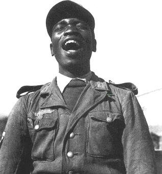
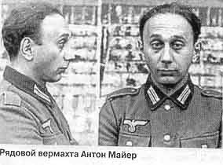
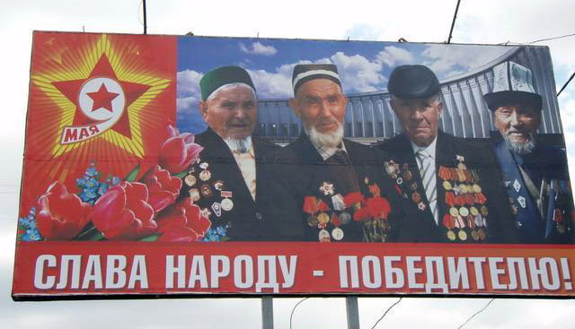
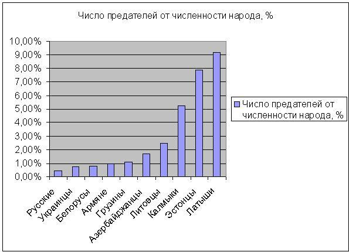

Андрей Борцов (Warrax)
Великая Война. Уроки прошлого
|
Никогда не оправдывайся. Твоим друзьям это не нужно, а враги все равно не поверят. Элберт Хаббард
|
Пожалуй, я не буду оригинальным, если заявлю, что важнейшим событием в международной политике XX века (да и включая начало XXI) была Великая Отечественная Война, она же — Вторая мировая.
По сравнению с ней Первая мировая — так, малозначащий конфликт, весь смысл которого — закладка фундамента для Второй. Если Первая мировая, как справедливо отметил ещё Ленин, являлась спором между империалистическими державами за передел мира, Вторая от нее отличалась принципиально.
За период между концом первой и началом второй мировой войны в расстановке сил в мировом сообществе произошли качественные изменения: возникновение первого социалистического государства, обострение противоречий между мировыми метрополиями и колониями, восстановление и новый быстрый экономический подъем Германии, побежденной в Первой мировой войне и неудовлетворенной своим положением в мире. Таким образом, ВОВ в придачу к столкновению интересов капиталистических государств между собой, разыгрывала ещё и конфликт капиталистического блока с государством принципиально иной социально-экономической формации — Советским Союзом.
Понятно, почему тема Великой Отечественной так обросла мифами вплоть до «Гитлера-освободителя» или «загранотрядов, расстреливающих своих из пулеметов». Чем важнее событие, а, ещё точнее, интерпретация такового, — тем больше «нужных кому-либо» мифов навешивается. Мы разберем и мифы, и действительные события, но для начала требуется краткая вводная.
Кратко о предвоенной международной обстановке
(Благодарю ЖЖ-пользователя emdrone за опубликованный анализ Куингли, который я здесь использовал.)
Напомню, что до ВОВ ведущие «игроки» на политическом поле (кроме СССР) были классическими колониальными империями, что не могло не накладывать отпечаток на международные действия. Обратите внимание: колониальное мироустройство в те времена считалось нормальным, естественным и правильным. При анализе исторических событий вообще нельзя исходить из современных норм, а только из аутентичных.
Честно говоря, анализ событий того времени и современная интерпретация обращает на себя внимание массовым применением двойных стандартов. Как пример: диктаторские методы Сталина (при этом ещё не факт, что они были в масштабах «сталинских репрессий», если изучать историю, а не Солженицына) бесповоротно осуждаются. С другой стороны — перед Великой Отечественной в большинстве остальных стран Европы либо существовали диктатуры, либо страны находились в состоянии анархии и террора. Вот навскидку список стран и диктаторов в середине 30-х: Польша — Пилсудский, Албания — Зогу, Болгария — Цанков, Греция — Метаксас, Румыния — Антонеску, Венгрия — Хорти, Австрия — Дольфус, Германия — Гитлер, Италия — Муссолини, Латвия — Ульманис, Эстония — Пятс, Литва — Сметона, Португалия — Салазар, Финляндия — Маннергейм. В Югославии шли постоянные военные перевороты, а в Испании того времени существовала полная анархия. «Почему-то» об этом не любят вспоминать, вереща о диктаторах Гитлере и Сталине.
Таким образом, вполне понятно желание Гитлера создать в подражание Британской Империи свои колонии с ресурсами. Образно говоря, на роль индусов немцы назначили славян — что и было роковой ошибкой.
Со своей стороны, англичане желали стабильности (их вполне устраивало уже сложившийся status quo) и раздела сфер влияния. Есть сведения о тайном договоре с немцами о том, что под их доминирование отдается вся Европа, а затем они захватывают колонии на Востоке, а Британская Империя владеет колониями остальной части мира. Даже если такого договора не было de jure, все равно de facto исторические события указывают на приблизительно такую же картину. Это как с «Протоколами сионских мудрецов» — фальшивка однозначная, но фактология-то совпадает...
Тайные документы о разделе сфер влияния обнародовал Кэрролл Куигли в книге «Трагедия и Надежда», написанной в 70-х. Его на пару лет пускали поработать в закрытые архивы американского отделения одной из его организаций под названием «Counsil on Foreign Relations», там он и нашел сенсационные материалы. Книга, судя по отзывам, написана в стиле «вот вам правда-матка, и ничего вы с нашим господством не сделаете».
О том, какой была цена этой попытки установить западноевропейскую колониальную модель на наших землях свидетельствуют цифры: всего в той войне погибло от 50 до 60 миллионов человек.
Из них примерно каждый второй был из СССР.
Военные потери СССР и всех стран Европы, воевавших с нами (Германии и союзников) близки, практически одинаковы. Однако ещё миллионов 16 — наши гражданские потери на оккупированных землях.
Среди военных потерь СССР примерно 85% — славяне (русские в широком смысле, включая малороссов и белорусов). Поскольку временная оккупация коснулась только славянских земель, то и остальные потери — практически все русские. Это, кстати, к вопросу о так называемом «холокосте». Даже если не оспаривать ритуальную цифру в шесть миллионов, то девять из десяти погибших в той войне никакого отношения к евреям не имеют.
Вернемся к политическим играм того времени.
Англия, верная своему принципу «нет постоянных друзей и врагов, есть только постоянные интересы», играла в привычную для себя, отполированную сотнями лет предыдущей политики геополитическую игру на континенте. Британская политика в отношении этих вопросов, как пишет в своей книге Куигли, была изложена в семи пунктах в секретном документе, доставленном в Германию, поскольку «Британское правительство не могло публично признаться перед собственным народом в данных “семи пунктах”, т.к. они были неприемлемы для Британского публичного мнения».
Вот эти семь пунктов.
1. Гитлеровская Германия является главной защитой от распространения коммунизма в Европе.
2. Четырехсторонний пакт между Британией, Францией, Германием и Италией, консолидирующий англо-французскую Антанту и Ось Рим-Берлин, и исключающий любое русское влияние, является целью, к которой мы стремимся как к основанию стабильной Европы.
3. Британия не будет возражать против немецкого приобретения Австрии, Чехословакии и Данцига.
4. Германия не должна использовать силу для достижения этих целей, т.к. это начнет войну, в которую общественное мнение подтолкнет Великобританию.
5. Желательно соглашение с Германией, ограничивающее число и использование бомбардировщиков.
6. Великобритания могла бы передать Германии определенные (португальские и бельгийские) африканские колонии, если Германия проявит сотрудничество в вышеперечисленном.
7. Британия окажет давление на Чехословакию и Польшу дабы добиться результатов переговоров желательных для Германии.
Автор далее замечает, что профессиональные дипломаты и солдаты в Германии были согласны добиваться доминирования в Европе, не вступая в войну, в отличие от лидеров нацистской партии. «Особенно Гитлер, Риббентроп и Гиммлер, которые были слишком нетерпеливы и хотели доказать самим себе и миру, что Германия была достаточно могущественна чтобы взять то, что она хочет не ожидая ничьих позволений». Именно это непонимание между британскими элитами и лидерами наци в конце концов и привело к ужасу Второй Мировой Войны, согласно книге Куингли.
Другими словами, находящиеся у власти в Британской империи члены аристократической элиты желали добиться «стабильности на континенте» и сохранения своей империи, разделив сферы влияния.
Британская империя контролирует мир; нацистская Германия — Европу.
Далее Германия в совершенно сознательном подражании Британской империи, пытается строить собственные колонии на Востоке, на землях славян.
Хороший, устраивающий англосаксов план. Кстати, обратите внимание на пункты 4 и 5 — очень хорошо видно, что Британия уверенно занимает психологическую «позицию сверху», диктуя Германии «что делать». Самоуверенность «британских львов» в дальнейшем заметно пошатнулась, но пока ещё английская напыщенность видна отчетливо.
Важной частью международной политики того времени являлась антибольшевистская направленность. Политикой анти-большевиков было «уничтожить выплату Германией репараций, разрешить перевооружение Германии, и развалить то, что они называли “французским милитаризмом”». Т.е. они предлагали вооружить Германию, позволить ей доминировать в Европе (включая Францию), а затем позволить ей, а, возможно, и помочь, в уничтожении Советского Союза.
С другой стороны, была другая группа политиков — с концепцией «мир из трех блоков». Как пишет Куигли, их целью было не разрушение Советского Союза, но «сдерживание» его между Европой, над которой главенствовала бы Германия и блоком англоязычных стран. Они «пытались ослабить Лигу Наций и уничтожить всякую возможность коллективной системы безопасности (т.е. защиты Франции от Германии) для того, чтобы усилить Германию по отношению и к Франции, и к Советскому Союзу, и, превыше всего, освободить Великобританию от Европы для того, чтобы выстроить Атлантический Блок из Великобритании, Британских Доминионов и Соединенных Штатов». В этом случае, как нетрудно догадаться, Германии отводилась все та же роль «избавителя от большевистской угрозы», но при этом она лишалась доминирования в Европе, так как СССР продолжал существование. Проще говоря, Рейх и СССР должны были уравновешивать друг друга, Англия же была бы «могущественной третьей стороной» со всеми вытекающими последствиями.
Такая политика совпадала с политикой анти-большевиков во всем, включая доминирование Германии над европейскими странами. Однако она требовала определенного числа жертв со стороны других стран. Эти люди верили, что их «трехблочная система», как только она будет построена, могла бы вынудить Германию поддерживать мир (после поглощения ей Европы), потому что Германия была бы стиснута Атлантическим блоком и Советским Союзом, тогда как СССР был бы вынужден поддерживать мир, т.к. он находится между Германией и Японией. Этот план смог бы работать, только если Германия и СССР могли бы быть приведены в непосредственный контакт путем отказа от Австрии, Чехословакии и предоставлении Германии Польского коридора.
Возможно, книга Куингли читается как очередная «теория заговора», но эти [возможные] тайные соглашения объясняют почти все «непонятное», все туманности европейской политики!
Прямым следствием оказываются: «сидячая война» англичан и предложение Гитлером перемирия всем странам Европы в 1940-м (!!!). Документы об этом предложении (отдать всем все, кроме Германских земель и заключить мир) до сих пор закрыты в английских архивах, но, согласно Дэвиду Ирвингу, но их можно видеть в других.
Вопрос о Дюнкерке, когда англичанам позволили эвакуировать войска после поражения, что резко отличало их судьбу от французов, также вписывается в эту концепцию. Если помните — Гитлер лично остановил немецкую армию и дал время уплыть десанту обратно.
То, что позже Черчилль не боялся десанта на Англию и, к удивлению генералов, послал корпус куда-то там в Африку — сюда же. Он знал, что не ослабляет защиты Англии. Черчилль, кстати, к тому времени уже монополизировал дешифровки — их не получал никто из политиков или генералов, лишь он сам.
Сюда же вписывается приказ Гитлера не бомбить Лондон: он не собирался воевать с Англией. Лишь намеренная провокация про-военного, купленного военной партией (еврейскими деньгами) Черчилля, отправившего рейды бомбардировщиков на Берлин, вызвала ответ Гитлера, который втянул Британию в войну.
Эти тайные расклады также полностью объясняют «безумие» Гитлера, открывшего второй фронт. Он и не собирался воевать на два фронта. Он по-прежнему рассчитывал, что завоевание колоний на землях русских/славян не будет сопровождаться никакими реальными действиями Англии против него — как было до сих пор.
Но давайте сначала посмотрим теоретическое обоснование Drung nach Osten.
Mein Kampf
Понимание сути конфликта между СССР и Рейхом невозможно без изучения книги Гитлера «Mein Kampf». Конечно, Гитлер был политиком, который может менять свои устремления в зависимости от обстановки, но его «паче чаяния» описаны именно в «Mein Kampf». Давайте же обратимся к книге как к первоисточнику — и прощу извинить меня за длинные цитаты. Но пересказ в данном случае нецелесообразен.
«Русско-японская война застала меня уже более зрелым человеком. За этими событиями я следил ещё внимательнее. В этой войне я стал на определенную сторону и при том по соображениям национальным. В дискуссиях, связанных с русско-японской войной, я сразу стал на сторону японцев. В поражении России я стал видеть также поражение австрийских славян.»
Эта небольшая цитата появляется в книге задолго до вопроса о России, мимоходом. Но это как раз и показательно — «стал видеть также поражение австрийских славян» как положительный фактор. Таким образом, для Гитлера славяне являлись «другой стороной» по определению. Вопрос абберации мышления вида «Гитлер-освободитель-от-коммуно-жидомасонского-ига» рассмотрим позже, сейчас же важна именно позиция «все равно, за кого, зато против славян».
Теперь о России конкретно:
«Подлинные организаторы революции, дергавшие её за веревочку, евреи оценили тогдашнюю ситуацию трезво и со своей точки зрения правильно. Немецкий народ не созрел ещё тогда к тому, чтобы его можно было бросить в кровавую лужу большевизма, как это удалось сделать в России. Это объяснялось тем, что расовое состояние немецкого народа все же являлось ещё более благополучным и единство между немецкой интеллигенцией и немецким населением физического труда ещё не было достаточно разрушено. Население России было сплошь безграмотное, чего, конечно, нельзя было сказать ни о Германии, ни о других западноевропейских народах. В России сама интеллигенция в большинстве своем принадлежит к нерусским национальностям и во всяком случае к неславянским расам. С тонким слоем интеллигенции в России легко было справиться, ибо между ним и широкими массами народа почти совсем не было посредствующих звеньев, а умственный и моральный уровень широкой массы народа был в России страшно низок.
В России достаточно было немногого. Надо было только натравить необразованную, не умеющую ни читать, ни писать массу на верхний слой интеллигенции, и без того почти не связанной с народом. Этого было довольно, чтобы решить всю судьбу страны и чтобы можно было считать революцию удавшейся. Вся неграмотная масса русского народа попала в полное рабство к еврейским диктаторам, у которых конечно хватило ума задрапировать свою диктатуру в тогу “диктатуры народа”.»
Здесь требуются пояснения. Во-первых, «интеллигенция» — это типично русское понятие (к сожалению), что я недавно расписывал в соответствующей статье. В немецком языке различия между «интеллигент» и «интеллектуал» нет. Есть слово «Intellektuelle», означающее работника умственного труда, а также «рассудочный человек» — те, кто читал мою статью, согласятся, что «рассудочный» — это кто угодно, но не интеллигент. Слово же «Geistesschaffende» означает просто «человек умственного труда», что вовсе не означает интеллигента. В общем, требовать от Гитлера знания тонкостей русского языка несколько странно, но тезис об оторванности интеллигенции от русского народа у него верен. Как и замечание о принадлежности значительной части интеллигенции к неславянским национальностям.
Отвлекусь ненадолго на тезис о неграмотности. Здесь важно понимать, что русскому народу самому по себе грамотность (и стремление к ней) как раз свойственны. Это доказывают берестяные грамоты, которые написаны большей частью обычными людьми о бытовых вопросах, так и ликбез, проводимый большевиками — народ с большим энтузиазмом начал учиться. И, кстати говоря, затем поднял науку на международный уровень. И если замечание о безграмотности было справедливым до Октябрьской Революции, то «Mein Kampf» писалась значительно позже. В этом и проявляется главная ошибка Гитлера — при всей развитости интуиции он пренебрегал своевременными значимыми данными.
Цитата побольше.
«Уничтожения Германии требовали в первую очередь не интересы Англии, а интересы еврейства. Подлинные государственные интересы Англии не требуют также и уничтожения Японии. Это тоже нужно только евреям, стремящимся, как известно, к неограниченному господству над всем миром. Вот и получается, что пока Англия озабочена только тем, чтобы укрепить свое положение в мире, евреи в то же время готовятся захватить господство над всем миром.
Евреи держат уже сейчас в своих руках современные европейские государства. Они превращают эти государства в свои безвольные орудия, пользуясь для этого либо методом так называемой западной демократии, либо методом прямого угнетения в форме русского большевизма.
Мы, национал-социалисты, совершенно сознательно ставим крест на всей немецкой иностранной политике довоенного времени. Мы хотим вернуться к тому пункту, на котором прервалось наше старое развитие 600 лет назад. Мы хотим приостановить вечное германское стремление на юг и на запад Европы и определенно указываем пальцем в сторону территорий, расположенных на востоке. Мы окончательно рвем с колониальной и торговой политикой довоенного времени и сознательно переходим к политике завоевания новых земель в Европе.
Когда мы говорим о завоевании новых земель в Европе, мы, конечно, можем иметь в виду в первую очередь только Россию и те окраинные государства, которые ей подчинены.
Сама судьба указует нам перстом. Выдав Россию в руки большевизма, судьба лишила русский народ той интеллигенции, на которой до сих пор держалось её государственное существование и которая одна только служила залогом известной прочности государства. Не государственные дарования славянства дали силу и крепость русскому государству. Всем этим Россия обязана была германским элементам — превосходнейший пример той громадной государственной роли, которую способны играть германские элементы, действуя внутри более низкой расы. Именно так были созданы многие могущественные государства на земле. Не раз в истории мы видели, как народы более низкой культуры, во главе которых в качестве организаторов стояли германцы, превращались в могущественные государства и затем держались прочно на ногах, пока сохранялось расовое ядро германцев. В течение столетий Россия жила за счет именно германского ядра в её высших слоях населения. Теперь это ядро истреблено полностью и до конца. Место германцев заняли евреи. Но как русские не могут своими собственными силами скинуть ярмо евреев, так и одни евреи не в силах надолго держать в своем подчинении это громадное государство. Сами евреи отнюдь не являются элементом организации, а скорее ферментом дезорганизации. Это гигантское восточное государство неизбежно обречено на гибель. К этому созрели уже все предпосылки. Конец еврейского господства в России будет также концом России как государства. Судьба предназначила нам быть свидетелем такой катастрофы, которая лучше, чем что бы то ни было, подтвердит безусловно правильность нашей расовой теории.»
Здесь видна как idea fixe «немцы (германцы) превыше всех» (таки да — то самое отличие здравого национализма от кондового шовинизма), так и стремление «все объяснить евреями». Наглядная демонстрация мышления Гитлера: «идея превыше всего, сколь бы она не была оторвана от реальности». Увы — Гитлер тоже был интеллигентом по сути, хотя старался противодействовать интеллигентщине... Но, как известно, самыми ярыми борцами «против евреев» являются сами евреи, раздувающие конфликт ради гешефта. Ситуация аналогичная, только вместо осознанного гешефта — бессознательное стремление «следовать идеалу». Что, кстати говоря, вполне соответствует немецкому менталитету: дер орднунг, которому учит фельдфебель. Ну, или ефрейтор...
И последняя, зато очень длинная цитата. Интернет есть не у всех, а в бумажном виде книгу найти очень и очень сложно, так что многие из читателей не имеют возможности ознакомиться с текстом самостоятельно. Поэтому цитирую все, что относится к сути.
«Глупо было бы в самом деле рассчитывать на то, что той или другой коалиции, состоящей из одних калек, когда бы то ни было может удаться свергнуть могущественнейшее государство, полное решимости бороться за свое владычество, если нужно будет, до последней капли крови. Я и сам принадлежу к лагерю фелькише, но именно поэтому знаю, какую громадную роль играет раса, и уже по одному этому я не поверю, чтобы эти так называемые “угнетенные нации”, принадлежащие к низшим расам, могли побороть Англию. Уже по одному этому я не хочу, чтобы мой народ соединил свои судьбы с судьбами “угнетенных наций”.
Ту же самую позицию должны мы занять теперь и по отношению к России. Не будем говорить о подлинных намерениях новых владык России. Нам достаточно того факта, что Россия, лишившаяся своего верховного германского слоя, уже тем самым перестала иметь какое бы то ни было значение как возможный союзник немецкой нации в освободительной борьбе. С чисто военной точки зрения война Германии — России против Западной Европы (а вернее сказать в этом случае — против всего остального мира) была бы настоящей катастрофой для нас. Ведь вся борьба разыгралась бы не на русской, а на германской территории, причем Германия не могла бы даже рассчитывать на сколько-нибудь серьезную поддержку со стороны России.
Вооруженные силы немецкого государства ныне столь ничтожны и настолько непригодны для внешней борьбы, что мы не смогли бы сорганизовать даже сколько-нибудь солидной охраны наших западных границ, включая сюда защиту от Англии. Как раз наши наиболее индустриальные области подверглись бы концентрированному нападению со стороны наших противников, а мы были бы бессильны их защитить. Прибавьте к этому ещё тот факт, что между Германией и Россией расположено польское государство, целиком находящееся в руках Франции. В случае войны Германии — России против Западной Европы, Россия, раньше чем отправить хоть одного солдата на немецкий фронт, должна была бы выдержать победоносную борьбу с Польшей. В такой войне дело вообще было бы не столько в солдатах, сколько в техническом вооружении. В этом отношении ужасные обстоятельства, свидетелями которых мы были во время мировой войны, повторились бы с ещё большей силой. Уже в 1914-1918 гг. германской индустрии приходилось ведь своими боками отдуваться за своих “славных” союзников, ибо техническая сторона вооружений целиком падала в мировой войне на нас, а не на этих союзников. Ну, а говорить о России, как о серьезном техническом факторе в войне, совершенно не приходится. Всеобщей моторизации мира, которая в ближайшей войне сыграет колоссальную и решающую роль, мы не могли бы противопоставить почти ничего. Сама Германия в этой важной области позорно отстала. Но в случае такой войны она из своего немногого должна была бы ещё содержать Россию, ибо Россия не имеет ещё ни одного своего собственного завода, который сумел бы действительно сделать, скажем, настоящий живой грузовик. Что же это была бы за война? Мы подверглись бы простому избиению. Германская молодежь изошла бы кровью ещё больше чем в прежних войнах, ибо как всегда вся тяжесть борьбы легла бы на нас, а в результате — неотвратимое поражение.
Но если бы даже предположить, что совершилось чудо и что такая война не окончилась полным уничтожением Германии, — в последнем счете обескровленный немецкий народ все равно был бы окружен по-прежнему громадными военными державами, а стало быть, наше нынешнее положение ни в чем существенном не изменилось бы.
Обыкновенно на это возражают, что союз с Россией вовсе не должен ещё означать немедленной войны или что к такой войне мы можем предварительно как следует подготовиться. Нет, это не так! Союз, который не ставит себе целью войну, бессмыслен и бесполезен. Союзы создаются только в целях борьбы. Если даже в момент заключения союза война является ещё вопросом отдаленного будущего, все равно, стороны непременно будут иметь в виду прежде всего перспективу военных осложнений. Глупо было бы думать, что какая бы то ни было держава, заключая союз, будет думать иначе. Одно из двух: либо германско-русская коалиция осталась бы только на бумаге, а тем самым потеряла бы для нас всякую ценность и значение; либо такой союз перестал бы быть только бумажкой и был бы реализован, и тогда весь остальной мир неизбежно увидел бы в этом предостережение для себя. Совершенно наивно думать, будто Англия и Франция в таком случае стали бы спокойно ждать, скажем, десяток лет, пока немецко-русский союз сделает все необходимые технические приготовления для войны. Нет, в этом случае гроза разразилась бы над Германией с невероятной быстротой.
Уже один факт заключения союза между Германией и Россией означал бы неизбежность будущей войны, исход которой заранее предрешен. Такая война могла бы означать только конец Германии. К этому однако надо ещё прибавить следующее.
1. Современные владыки России совершенно не помышляют о заключении честного союза с Германией, а тем более о его выполнении, если бы они его заключили.
Нельзя ведь забывать и того факта, что правители современной России это — запятнавшие себя кровью низкие преступники, это — накипь человеческая, которая воспользовалась благоприятным для нее стечением трагических обстоятельств, захватила врасплох громадное государство, произвела дикую кровавую расправу над миллионами передовых интеллигентных людей, фактически истребила интеллигенцию и теперь, вот уже скоро десять лет, осуществляет самую жестокую тиранию, какую когда-либо только знала история. Нельзя далее забывать и то обстоятельство, что эти владыки являются выходцами из того народа, черты которого представляют смесь зверской жестокости и непостижимой лживости, и что эти господа ныне больше чем когда бы то ни было считают себя призванными осчастливить весь мир своим кровавым господством. Ни на минуту нельзя забыть того, что интернациональное еврейство, ныне полностью держащее в своих руках всю Россию, видит в Германии не союзника, а страну, предназначенную понести тот же жребий. Кто же заключает союз с таким партнером, единственный интерес которого сводится только к тому, чтобы уничтожить другого партнера? И кто, прежде всего спрашиваем мы, заключает союз с субъектами, для которых святость договоров — пустой звук, ибо субъекты эти ничего общего не имеют с честью и истиной, а являются на этом свете только представителями лжи, обмана, воровства, грабежа, разбоя. Тот человек, который вздумал бы заключить союзы с паразитами, был бы похож на дерево, которое заключает “союз” с сухоткой.
2. Германия также не избавлена от той опасности, жертвой которой пала в свое время Россия. Только буржуазные простаки способны думать, будто большевизм в Германии уже сокрушен.
Эти поверхностные люди совершенно не понимают того, что тут дело идет о напоре со стороны евреев, стремящихся к мировому господству, и что этот натиск евреев столь же натурален, как натиск англосаксонской нации, которая в свою очередь тоже стремится к полному господству на земле. Англосаксы ведут эту борьбу на тех путях и теми средствами, которые свойственны им, а еврей ведет эту борьбу тем оружием, которое свойственно ему. Евреи идут своей дорогой. Они втираются в среду других народов, разлагают их изнутри; евреи борются ложью, клеветой, ядом и разложением, а когда наступит момент, они поднимают свою борьбу на “высшую” ступень и переходят к прямому кровавому истреблению ненавистного противника. Русский большевизм есть только новая, свойственная XX веку попытка евреев достигнуть мирового господства. В другие исторические периоды то же стремление евреев облекалось только в другую форму.
Стремления евреев слишком тесно связаны со всем характером этого народа. Никакой другой народ тоже добровольно не откажется от своего распространения на земле и от увеличения своей власти; только внешние обстоятельства могут его к этому принудить, или только вследствие импотентности, появляющейся, когда данный народ устареет, бывают такие явления. Ну, а тем более евреи никогда добровольно не откажутся от своих стремлений к мировой диктатуре, и никогда они не пойдут в этом отношении на самоограничение. С евреями тоже будет так, что либо их отбросит назад какая-нибудь сила, лежащая вне их, либо они сами начнут вымирать, а тем самым отомрут и их стремления к мировому господству.
Мы, как сторонники расовой теории, знаем, что впадение того или другого народа в импотентность является вопросом чистоты крови; но чистоту своей собственной крови еврейский народ как раз соблюдает больше, чем какой-либо другой народ. Вот почему несомненно, что евреи пойдут по своему ужасному пути и дальше — вплоть до того момента, когда найдется другая достаточно большая сила, которая сумеет схватиться в жестокой борьбе с еврейством и раз навсегда отправить этих богоборцев в преисподнюю.
Ближайшей приманкой для большевизма в нынешнее время как раз и является Германия. Чтобы ещё раз вырвать наш народ из змеиных объятий интернационального еврейства, нужно, чтобы наша молодая идея сумела разбудить все силы нации и внушить ей сознание великой миссии, ожидающей нас. Только в этом случае мы сможем спасти свой народ от окончательного заражения нашей крови. Только тогда мы сумеем пробудить те силы, которые надолго дадут нам гарантию против повторения постигших нас катастроф. В свете таких целей чистейшим безумием было бы вступать в союз с державой, во главе которой стоят смертельные враги всей нашей будущности. Как в самом деле можем мы освободить наш собственный народ от этих ядовитых объятий, если мы сами полезем в эти объятия. Как в самом деле можем мы освободить немецких рабочих от большевистских влияний, как можем мы убедить их в том, что большевизм есть проклятие и преступление против всего человечества, если бы мы сами стали вступать в союз с большевистскими организациями, этим исчадием ада, и тем самым в основном признали бы эти организации. Как в самом деле стали бы мы потом осуждать рядового человека из массы за его симпатии к большевистским взглядам, если бы руководители нашего государства сами избрали себе в качестве союзников представителей большевистского мировоззрения.
Чтобы провести успешную борьбу против еврейских попыток большевизации всего мира, мы должны прежде всего занять ясную позицию по отношению к Советской России. Нельзя побороть дьявола с помощью Вельзевула.
Если даже в кругах фелькише все ещё находятся люди, мечтающие о союзе с Россией, то мы просим их прежде всего оглянуться вокруг себя самих и отдать себе отчет в том, какие же именно силы внутри самой Германии поддерживают такой план. Разве не видят они, что именно интернациональная марксистская пресса рекомендует и поддерживает план союза с Россией? Кажется, одного этого было бы достаточно, чтобы понять, куда это ведет. С каких это пор в самом деле лагерь фелькише готов бороться тем оружием, которое подсовывают ему евреи?
Старой Германии мы делаем один упрек: в области иностранной политики она все время колебалась как маятник, стараясь во что бы то ни стало и какой угодно ценой сохранить мир, причем на деле только испортила отношения со всеми. Но никогда мы не делали старой Германии упрека за то, что она отказалась продолжать хорошие отношения с Россией.
Я признаюсь открыто, что уже в довоенное время я считал, что Германия поступила бы гораздо более правильно, если бы, отказавшись от бессмысленной колониальной политики, от создания военного флота и усиления своей мировой торговли, она вступила в союз с Англией против России. Если бы мы вовремя сумели отказаться от попыток завоевать себе универсальное влияние и сосредоточились на энергичной политике завоевания новых земель на европейском континенте, это принесло бы нам только пользу.
Я не забываю всех наглых угроз, которыми смела систематически осыпать Германию панславистская Россия. Я не забываю многократных пробных мобилизаций, к которым Россия прибегала с единственной целью ущемления Германии. Я не могу забыть настроений, которые господствовали в России уже до войны, и тех ожесточенных нападок на наш народ, в которых изощрялась русская большая пресса, восторженно относившаяся к Франции.
Однако перед самым началом войны у нас все-таки была ещё вторая дорога: можно было опереться на Россию против Англии.
Ныне же положение вещей в корне изменилось. Если перед мировой войной мы могли подавить в себе чувство обиды против России и все же пойти с ней против Англии, то теперь об этом не может быть и речи. Стрелка на циферблате истории продвинулась уже куда дальше. Близится час, когда судьбы нашего народа так или иначе должны окончательно разрешиться. Все большие государства земли переживают сейчас процесс консолидации. Это должно послужить для нас предостережением. Мы должны наконец как следует призадуматься над всем происходящим, распроститься с миром мечтаний и встать на путь суровой действительности, который один только может вывести нас на новую широкую дорогу.
Если национал-социалистическому движению удастся полностью освободиться от всех иллюзий и взять себе в руководители одни только доводы разума, то дело может ещё обернуться так, что катастрофа, постигшая нас в 1918 г., в последнем счете станет поворотным пунктом к новому возрождению нашего народа. Из уроков этого тяжкого поражения народ наш может извлечь новую ориентацию всей своей иностранной политики. Укрепив свое внутреннее положение на путях нового миросозерцания. Германия может придти и к окончательной стабилизации новой иностранной политики. Тогда в наших руках окажется наконец определенная заветная политическая цель и программа, т. е. то, что дает силу Англии, то, что давало в свое время силу даже России, то, что давало и дает силу Франции неизменно добиваться тех целей, которые с её точки зрения правильны.
Этот неизменный политический завет в области внешней политики можно формулировать для немецкой нации в следующих словах:
— Никогда не миритесь с существованием двух континентальных держав в Европе! В любой попытке на границах Германии создать вторую военную державу или даже только государство, способное впоследствии стать крупной военной державой, вы должны видеть прямое нападение на Германию. Раз создается такое положение, вы не только имеете право, но вы обязаны бороться против него всеми средствами, вплоть до применения оружия. И вы не имеете права успокоиться, пока вам не удастся помешать возникновению такого государства или же пока вам не удастся его уничтожить, если оно успело уже возникнуть. Позаботьтесь о том, чтобы наш народ завоевал себе новые земли здесь, в Европе, а не видел основы своего существования в колониях. Пока нашему государству не удалось обеспечить каждого своего сына на столетия вперед достаточным количеством земли, вы не должны считать, что положение наше прочно. Никогда не забывайте, что самым священным правом является право владеть достаточным количеством земли, которую мы сами будем обрабатывать. Не забывайте никогда, что самой священной является та кровь, которую мы проливаем в борьбе за землю».
Уф-ф... Длинная цитата. А теперь мы разберем её подробно.
«...я не поверю, чтобы эти так называемые “угнетенные
нации”, принадлежащие к низшим расам, могли побороть Англию. ... Ту же самую
позицию должны мы занять теперь и по отношению к России.»
Опаньки. Вот как ни крути — население России приписано к «низшим расам».
Впрочем, тут все не так однозначно. И русских ученых в свое время приглашали для
обсуждения расовой теории, и после вторжения были признания русских отнюдь не
«нишей расой». Тут дело в специфике подачи информации. Пропаганда, знаете ли,
для того и пропаганда, чтобы расставлять акценты в нужном направлении.
Приснопамятная брошюра «Унтерменш» содержала портреты отнюдь не русских, а вовсе
даже «лиц национальностей».
Можно уверенно сказать, что современные настойчивые попытки свести русских к россиянам берут начало от политики Адольфа Алоизыча.
«Нам достаточно того факта, что Россия, лишившаяся своего верховного германского слоя, уже тем самым перестала иметь какое бы то ни было значение как возможный союзник немецкой нации в освободительной борьбе.»
Продолжается, так сказать, великогерманский шовинизм. «Верховный германский слой» — это все же наглость. Хотя, с другой стороны... Вспомните, сколько было русских и немецких кровей в династии Романовых.
Другой вопрос — не стоит смешивать происхождение и культуру. Впрочем, и тут у Романовых «общеевропейскость» проявляется куда сильнее, чем «русскость». Но не будем отвлекаться от темы. Смотрим далее.
«С чисто военной точки зрения война Германии — России против Западной Европы (а вернее сказать в этом случае — против всего остального мира) была бы настоящей катастрофой для нас. Ведь вся борьба разыгралась бы не на русской, а на германской территории, причем Германия не могла бы даже рассчитывать на сколько-нибудь серьезную поддержку со стороны России.»
Здесь интересно то, что, при всем отрицании союза с Россией, Гитлер такую возможность все же рассматривал. Подробнее — далее:
«Ну, а говорить о России, как о серьезном техническом факторе в войне, совершенно не приходится. Всеобщей моторизации мира, которая в ближайшей войне сыграет колоссальную и решающую роль, мы не могли бы противопоставить почти ничего. Сама Германия в этой важной области позорно отстала. Но в случае такой войны она из своего немногого должна была бы ещё содержать Россию, ибо Россия не имеет ещё ни одного своего собственного завода, который сумел бы действительно сделать, скажем, настоящий живой грузовик. Что же это была бы за война?
Совершенно наивно думать, будто Англия и Франция в таком случае стали бы спокойно ждать, скажем, десяток лет, пока немецко-русский союз сделает все необходимые технические приготовления для войны. Нет, в этом случае гроза разразилась бы над Германией с невероятной быстротой. Уже один факт заключения союза между Германией и Россией означал бы неизбежность будущей войны, исход которой заранее предрешен. Такая война могла бы означать только конец Германии.»
Вот никуда не деться — приходится из большущей цитаты приводить кусочки поменьше. Для наглядности.
Обратите внимание — вся могучая интуиция Гитлера спотыкается на оценке СССР.
Ну надо же знать фактологию, на основании которой уже можно делать выводы и задействовать интуицию! Нет, Гитлер витал в каких-то своих идеалистических облаках.
Если кому интересно — то первый советский грузовик АМО-Ф-15 № 1 выехал из цеха 1 ноября 1924 года, задолго до написания «Mein Kampf».
Читаем аргументацию далее.
«Современные владыки России совершенно не помышляют о заключении честного союза с Германией, а тем более о его выполнении, если бы они его заключили.»
«..кто, прежде всего спрашиваем мы, заключает союз с субъектами, для которых святость договоров — пустой звук, ибо субъекты эти ничего общего не имеют с честью и истиной, а являются на этом свете только представителями лжи, обмана, воровства, грабежа, разбоя.»
Но извините — а когда это «современные владыки России» нарушали свои договора? Хоть кое-как можно к этому приболтать так называемый пакт Молотова-Риббентропа, и то — во-первых, он не был нарушением договоренностей, просто не был заявлен заранее и публично, а во-вторых, был подписан куда позже, чем написан «Mein Kampf».
Другой аспект:
«Ни на минуту нельзя забыть того, что интернациональное еврейство, ныне полностью держащее в своих руках всю Россию, видит в Германии не союзника, а страну, предназначенную понести тот же жребий.»
Что ж — не буду спорить по форме, но по сути — опять несостыковка с фактическим данными. Впрочем, этот вопрос разберем далее подробно — пока же порекомендую книгу С.Кремлева «Кремлевский визит фюрера» — хотя это произведение и принадлежит к т.н. альтернативной истории, задуматься оно заставляет.
«Эти поверхностные люди совершенно не понимают того, что тут дело идет о напоре со стороны евреев, стремящихся к мировому господству, и что этот натиск евреев столь же натурален, как натиск англосаксонской нации, которая в свою очередь тоже стремится к полному господству на земле.»
Не будем обсуждать паранойю по поводу евреев у Гитлера, равно как и её обоснованность. Суть в другом: Гитлер, с одной стороны, честно отмечает устремления и менталитет англосаксов, с другой — в действительности их «не замечает», пытаясь сотрудничать или, как минимум, относится нейтрально, невзирая на их устремления. Увы — остается лишь развести руками.
«Как в самом деле можем мы освободить немецких рабочих от большевистских влияний, как можем мы убедить их в том, что большевизм есть проклятие и преступление против всего человечества, если бы мы сами стали вступать в союз с большевистскими организациями...»
«...чистейшим безумием было бы вступать в союз с державой, во главе которой стоят смертельные враги всей нашей будущности. Как, в самом деле, можем мы освободить наш собственный народ от этих ядовитых объятий, если мы сами полезем в эти объятия. Как, в самом деле, можем мы освободить немецких рабочих от большевистских влияний, как можем мы убедить их в том, что большевизм есть проклятие и преступление против всего человечества, если бы мы сами стали вступать в союз с большевистскими организациями, этим исчадием ада, и тем самым в основном признали бы эти организации. Как, в самом деле, стали бы мы потом осуждать рядового человека из массы за его симпатии к большевистским взглядам, если бы руководители нашего государства сами избрали себе в качестве союзников представителей большевистского мировоззрения.»
Ну и куда здесь делся Гитлер как политик? Увы — сдулся.
Позиция именно интеллигентская: Великая Идея превыше всего, и наплевать на действительность. Во-первых, Сталин как глава государства отнюдь не поддерживал еврейскую клику (об этом далее), во-вторых, он почему-то считал Сталина «кондовым коммунистом», хотя факты как раз этому противоречили (об этом — тоже потом в отдельном разделе).
«Я признаюсь открыто, что уже в довоенное время я считал, что Германия поступила бы гораздо более правильно, если бы, отказавшись от бессмысленной колониальной политики, от создания военного флота и усиления своей мировой торговли, она вступила в союз с Англией против России. Если бы мы вовремя сумели отказаться от попыток завоевать себе универсальное влияние и сосредоточились на энергичной политике завоевания новых земель на европейском континенте, это принесло бы нам только пользу. Я не забываю всех наглых угроз, которыми смела систематически осыпать Германию панславистская Россия.»
Камрады! Напомните мне кто-нибудь, в чем заключались «систематические угрозы», а? Честное нациаонал-социалистическое: в упор таких не помню. А вот противодействие «панславизму» — очень, очень характерно... Как и «энергичная политика завоевания новых земель» именно на Востоке.
Собственно говоря, к этому все и сводится. Вот — открытым текстом:
«Никогда не миритесь с существованием двух континентальных держав в Европе! В любой попытке на границах Германии создать вторую военную державу или даже только государство, способное впоследствии стать крупной военной державой, вы должны видеть прямое нападение на Германию.»
Вот и все, честное саморазоблачение. Дело не в высокой идеологии, а исключительно в «хочу рулить миром и конкуренты не нужны», вот и все...
Ну и последнее до перехода к анализу отдельных аспектов событий того времени.
Интервью бельгийского фюрера
Леон Дегрелль был вождем бельгийского фашистского движения «Рекс». Очень показательное интервью.
— Г-н Дегрелль, Вы сражались в рядах дивизии «СС-Валлония» на русском фронте. Каковы Ваши воспоминания об этой войне и о русском народе?
— Русские — это великий народ. Когда мы пришли на вашу землю, мы были уверены, что встретимся с марксистскими «унтерменшами» азиатского типа и варварской культуры. Так нам внушала наша пропаганда. Но очень скоро мы поняли, что это была ложь. Русские и украинцы — великие народы, индо-европейские народы: мужественные, благородные и великодушные. Я восхищен ими. Столкнувшись с русскими, я понял, что они должны войти в состав Рейха на равных основаниях. Как великий европейский народ. Идея колонизации России очень скоро стала представляться мне опасной и ненужной иллюзией. Я сразу же постарался высказать эту точку зрения и Гиммлеру, и Гитлеру. Но, Вы знаете, как сильны были пангерманские предрассудки... Какого труда мне стоило переубедить Гиммлера даже в отношении валлонцев и французов, а также других европейцев негерманского происхождения. Этот процесс шел, но у нас было страшно мало времени, а потом война. Я сражался не с русскими, я сражался с коммунистической идеологией, которая отрицает Дух, религию, традицию, национальные и расовые ценности. А русских я считаю единственным молодым народом Европы, у которого есть ещё шанс к национальному возрождению. От них придет спасение и самой Европе...
— Как Гитлер относился к Сталину?
— Однажды я спросил Гитлера в разгар войны: «Мой фюрер, если бы Сталин попал вам в руки, чтобы Вы с ним сделали?» Он ответил: «Я предоставил бы в распоряжение этого человека самый прекрасный замок Европы!»
— Каково Ваше отношение к генералу Власову?
— Это может показаться странным, но я всегда испытывал к нему сильную антипатию. Я не доверял ему. Двум национальным лидерам я никогда не доверял — французу Дорьо и Власову. В нем было слишком много от предателя. Разве можно так быстро менять свою идеологию, да ещё находясь в плену? Другое дело те русские, которые примкнули к фашизму сознательно в эмиграции. «Белые» русские. И мое недоверие к Власову ещё подтвердилось, когда он предал Гитлера в случае с Прагой. Предатель не может изменить своей природы. ...
— Вы изменили сегодня в изгнании свои убеждения?
— Нисколько. Гитлер был величайший человек европейской истории. Он боролся за идеал, за идею. Он развивался. Начав с узко национального, сугубо германского лидера, он постепенно учился мыслить европейскими категориями, и так вплоть до общепланетарного масштаба. Однажды я набрался смелости спросить Гитлера. «Мой фюрер! Откройте мне Вашу тайну. Кто же Вы, наконец, на самом деле?». Гитлер улыбнулся и ответил: «Я — грек». Он имел в виду «древний грек», человек, обладающей классической системой ценностей, преданный красоте, естественности, законам духа и гармонии. Он искренне ненавидел современный мир как в его капиталистическом, либерально-космополитическом, так и в его марксистском вариантах. Он считал эту материальную, техническую, циничную цивилизацию верхом уродства и патологии. Часто его изображают как истерика, психопата, с трясущимися руками. Это все пропаганда. Он был удивительно воспитанный и обаятельный человек, вежливый, внимательный, сосредоточенный. Проиграв эту войну, потеряла шанс своего великого будущего не только Германия, но вся Европа, весь мир. Посмотрите, какой мир построили сегодня победители, его враги. Царство денег, насилия, смешения, вырождения, низменных, недочеловеческих инстинктов. Все кругом продажно, низко и материально. Нет высшей Идеи. Мы сражались за нечто Великое. И, Вы знаете, духовно мы не проиграли. У них нет одного — Веры. Она есть только у нас. Мы как истинные европейцы сражались за Красоту, Гармонию, Духовность, Справедливость. Это была война идеалистов и романтиков против двух типов материализма — капиталистического и марксистского. Они могут отнять у нас нашу жизнь. Нашей Веры у нас они не отнимут. Поэтому я и написал книгу с таким названием: «Гитлер на тысячу лет».
Международные отношения СССР: главные игроки
Давайте посмотрим, как развивались события в международной политике накануне Великой Отечественной войны.
«Накануне» — понятие растяжимое, но, пожалуй, логично начать с 1933 года, в котором к власти пришел Гитлер и занялся активной подготовкой к войне за передел мира. В 1936-37 годах Германия, Япония и Италия заключили «антикоминтерновский пакт», который положил начало формированию новых военных блоков и способствовал дальнейшему продвижению к военному конфликту.
Все это время политические круги Англии, США и Франции вели политику поощрения Германии, пытаясь направить её агрессию против Советского Союза — выше я уже писал об этом. Во многих странах велась кампания против СССР, активно пропагандировалась идея «растущей советской опасности», мысль о «военных приготовлениях русских». Правительства Британии и Франции, озабоченно поглядывая на Германию, решали задачу «как бы отвести от себя угрозу агрессии и разрядить энергию нацизма в экспансию на Восток».
Разумеется, Сталин пытался предотвратить угрозу или хотя бы выиграть время (и, как мы знаем, эта политика себя оправдала). В этой сложнейшей обстановке СССР активно выступал с предложениями по обеспечению мира и коллективной безопасности.
В 1933 году были установлены дипломатических отношения с США. Вернувшись в Россию, М. М. Литвинов, докладывая об итогах своей поездки, отметил, что признание СССР Америкой – это «падение последней позиции, последнего форта в том наступлении на нас капиталистического мира, который принял после Октября форму непризнания и бойкота». Объясняя позднее изменение политики в отношении советского Союза, государственный секретарь К. Хэлл писал в своих мемуарах: «Мир вступил в опасный период своего развития, как в Европе, так и в Азии. Россия с течением времени могла оказать большую помощь в деле стабилизации положения. Когда военная опасность становилась все более и более угрожающей».
В 1934 г. СССР вступает в Лигу Наций. И.В. Сталин в беседе с американским корреспондентом Дюранти 25 декабря 1933 года выразился так: «Лига сможет оказаться неким бугорком на пути к тому, чтобы хотя несколько затруднить дело войны и облегчить в некоторой степени дело мира». Вступление СССР в Лигу Наций было особо важно, так как, в 1933 году из состава Лиги вышли Германия и Япония.
В Лиге Наций СССР выступает с предложениями относительно создания системы коллективной безопасности и отпора завоевателям, но, что характерно, не находят поддержки. В начале 1934 г. Советский Союз выступает с конвенцией об определении нападающей стороны (агрессора), в которой подчеркивалось, что агрессией является вторжение на территорию другой страны с объявлением или без объявления войны, а также бомбардировки территории других стран, нападения на морские суда, блокада берегов или портов. Правительства ведущих держав холодно отнеслись к советскому проекту. Однако Румыния, Югославия, Чехословакия, Польша, Эстония, Латвия, Литва, Турция, Иран, Афганистан, а позднее и Финляндия подписали в СССР этот документ.
Политика ведущих стран была простой. Поясню на примере Франции. Министр иностранных дел Лаваль (вступил в должность в октябре 1934) отнюдь не стремился к обеспечению коллективной безопасности и на франко-советский пакт смотрел лишь как на орудие в своей политике сделки с агрессором. После своего визита в Москву Лаваль разъяснил польскому министру иностранных дел Беку, что «Франко-советский пакт имеет целью не столько привлечь помощь Советского Союза или помогать ему против возможной агрессии, сколько предупредить сближение между Германией и Советским Союзом».
Действительно, если бы СССР и Рейх, как две социалистические страны, как-то договорились бы, то сейчас мир был бы совсем иным. Но не будем фантазировать в жанре альтернативной истории, вернемся к фактам.
В 1935 г. Был подписан пакт с Францией (но ратифицирован только в марте 1936, после отставки Лаваля). При этом Франция всячески стремилась устранить автоматизм взаимной помощи в случае агрессии, на чем, естественно, настаивал СССР. Текст договора предусматривал необходимость «приступить к немедленной консультации в целях принятия мер в случае, если СССР или Франция явились бы предметом угрозы или опасности нападения со стороны какого-либо европейского государства; взаимно оказать друг другу помощь и поддержку в случае, если СССР или Франция явились бы предметом невызванного нападения со стороны какого-либо европейского государства».
Как видите — никакой конкретики. «На вас напали? Давайте консультироваться!»
Военная конвенция не была подписана ни в момент заключения пакта, ни в течение всего периода его действия.
Советско-чехословацкий договор о взаимопомощи от 16 мая 1935 года был совершенно идентичен советско-французскому пакту от 2 мая 1935 года, за исключением ст. 2, которая гласила, что участники договора придут на помощь друг другу только в том случае, если Франция придет на помощь государству, ставшему жертвой агрессии. Таким образом, действие советско-чехословацкого договора ставилось в зависимость от поведения Франции.
Логика просто потрясающая, я бы сказал. Без крючкотворства договор выглядит так: мы, конечно, обещаем друг другу помогать, но если Франция нарушит договор и не поможет, то остальные двое участников тоже должны отказаться от намерений и помощь оказывать не обязаны.
Особую остроту события стали принимать в 1938 г., когда Германия аннексировала Австрию и включила её в состав Третьего Рейха, вмешалась в гражданскую войну в Испании, где помогла установлению фашистской диктатуры, потребовала от Чехословакии передачи Судетской области и присоединила её после одобрения этой акции Мюнхенским совещанием глав правительств в составе Англии, Франции, Германии, Италии, принявший решение о расчленении Чехословакии, на котором СССР и Чехословакия не присутствовали. Так называемый «мюнхенский сговор» поощрил агрессора и подтолкнул его к дальнейшей активизации действий, по его условиям от Чехословакии было отторгнуто около 20 % её территории, где проживала четверть населения страны и размещалось около половины мощностей тяжелой промышленности.
Текст Мюнхенского соглашения от 29 сентября 1938 г. устанавливал определенные способы и условия отторжения Судетской области от Чехословакии в пользу Германии «согласно достигнутому принципиальному соглашению» глав четырех государств. Каждая из сторон «объявляла себя ответственной за проведение необходимых мероприятий» для выполнения договора.
Давайте ознакомимся с текстом — о чем они там договорились?
Цитируется по «Год кризиса 1938-1939, документы и материалы», составитель МИД СССР, 1990.
«Соглашение между Германией, Великобританией, Францией и Италией.
Мюнхен, 29 сентября 1938 г.
... Соединенное Королевство, Франция и Италия согласились о том, что эвакуация территории будет закончена к 10 октября, причем не будет произведено никаких разрушений имеющихся сооружений, и что чехословацкое правительство несет ответственность за то, что эвакуация области будет проведена без повреждения указанных сооружений.
... Чехословацкое правительство в течение четырех недель со дня заключения настоящего соглашения освободит от несения военной и полицейской службы всех судетских немцев, которые этого пожелают. В течение этого же срока чехословацкое правительство освободит судетских немцев, отбывающих заключение за политические преступления.»
Мило, не так ли? Мнение Чехословакии никого не интересует. Более того — цинично выдвигается требование следить за порядком при «эвакуации территории».
Игорь Пыхалов, «Надо ли стыдиться “пакта Молотова-Риббентропа”?»:
«...на первый взгляд, это небольшое государство было надежно защищено системой международных соглашений. ещё 25 января 1924 года был заключен бессрочный франко-чехословацкий договор о союзе и дружбе. 16 мая 1935 года был подписан советско-чехословацкий договор о взаимной помощи. При этом по предложению Чехословакии в нем была сделана оговорка, что обязательства о взаимной помощи вступают в силу лишь в том случае, если помощь стороне — жертве агрессии будет оказана и Францией.
Однако едва дошло до дела, как выяснилось, что западные демократии вовсе не горят желанием защищать Чехословакию. 15 сентября 1938 года английский премьер-министр Невилл Чемберлен посетил Гитлера в его резиденции в Берхтесгадене. Фюрер был непреклонен. 19 сентября послы Англии и Франции передали Чехословакии совместное заявление своих правительств о том, что необходимо уступить Германии районы, населенные преимущественно судетскими немцами, чтобы избежать общеевропейской войны5. Когда же Прага напомнила Парижу о его обязательствах по договору о взаимопомощи, то французы просто отказались их выполнять.
Как сообщил министр иностранных дел Чехословакии Камил Крофта в своей телеграмме, адресованной всем чехословацким миссиям за границей, “английский и французский посланники 21 сентября в два часа ночи снова посетили президента и заявили, что в случае, если мы отклоним предложения их правительств, мы возьмем на себя риск вызвать войну. Французское правительство при таких обстоятельствах не могло бы вступить в войну, его помощь была бы недейственной. Принятие англо-французских предложений является единственным средством воспрепятствовать непосредственному нападению Германии. Если мы будем настаивать на своем первоначальном ответе, Чемберлен не сможет поехать к Гитлеру и Англия не сможет взять на себя ответственность. Ввиду этого ультимативного вмешательства, оказавшись в полном одиночестве, чехословацкое правительство, очевидно, будет вынуждено подчиниться непреодолимому давлению”.
Надо сказать, что насчет “полного одиночества” Крофта откровенно лукавил. Советский Союз был готов придти на помощь Чехословакии даже без участия Франции. Однако в Праге предпочли капитулировать.
29-30 сентября в Мюнхене руководители четырех великих держав — Великобритании (Чемберлен), Франции (Даладье), Германии (Гитлер) и Италии (Муссолини) — подписали соглашение, призванное урегулировать судетский кризис. Советский Союз на эту встречу приглашен не был, так же как и представители Чехословакии, которые были поставлены перед свершившимся фактом.
Мюнхенское соглашение предусматривало передачу Германии в срок с 1 по 10 октября 1938 года Судетской области со всеми сооружениями и укреплениями, фабриками, заводами, запасами сырья, путями сообщения и т.п. Взамен четыре державы давали “гарантии’ новых границ Чехословакии. О том, чего эти гарантии стоили, наглядно свидетельствует дальнейшее развитие событий. 13 марта 1939 года лидеры словацких националистов объявили о “независимости” Словакии и обратились к Германии с просьбой о защите. 15 марта немецкие войска вошли в Прагу. Великобритания и Франция не сделали и попытки спасти Чехословакию, ограничившись вялыми протестами.
Более того, руководство Великобритании восприняло известие о
ликвидации Чехословакии с явным облегчением. В тот же день британский министр
иностранных дел Эдуард Галифакс заявил французскому послу в Лондоне, что Англия
и Франция получили “компенсирующее преимущество”, заключающееся в том, что
“естественным способом” покончено с их обязательством о предоставлении гарантий
Праге, бывшим “несколько тягостным для правительств обеих стран”. Как говорится,
комментарии излишни.»
Поляки тоже наглели, и 21 сентября 1938 г. польский посланник в Праге предъявил чехословацкому правительству требования об отторжении от Чехословакии и присоединении к Польше районов, которые польское правительство считало польскими.
Нота посла Польши в Чехословакии К. Папэ министру иностранных дел Чехословакии К. Крофте 30 сентября 1938 г.:
«Польское правительство несколько месяцев тому назад обратило внимание чехословацкого правительства на нетерпимое положение, сложившееся на территориях Чехословакии, где проживает польская национальная группа. Последовавшая дипломатическая переписка была результатом этого демарша. Совсем недавно, в критический момент этого обмена мнениями, с той и с другой стороны было констатировано, что нормализация отношений между Польшей и Чехословакией может осуществиться в первую очередь только путем территориальной уступки в пользу Польши территорий, где проживает польское население, которые легко устанавливаются на основе существующих данных, а во вторую очередь — путем плебисцита на других территориях, где проживает смешанное население.»
СССР, продолжая свою мирную политику, не признал оккупации Чехословакии и предложил ей военную помощь, от которой правительство этой страны отказалось. Франция не выполнила своих обязательств по договорам о военной помощи с этой страной и не стала оказывать ей поддержку — помните, я чуть выше указывал на странность в договоре о взаимопомощи?
Ситуация показательная: европейцы готовы на что угодно, даже на оккупацию свой страны или «честный дележ» её территорий, лишь бы не пришли русские.
Телеграмма полномочного представителя СССР в Чехословакии С. С. Александровского в Народный комиссариат иностранных дел СССР от 1 октября 1938 г.:
«Гусарек (генерал чехословацкой армии — прим.} сообщил мне дополнительно, что на заседании совета министров было ясно и точно сформулировано также такое утверждение: в Мюнхене Гитлеру удалось убедить Чемберлена и Даладье, что в данной ситуации большую опасность для мира в Европе представляет не он, а СССР, который объективно является большевистским форпостом и может сыграть роковую роль поджигателя новой войны. Следовательно, это убеждение явилось не формальным, но фактическим основанием для создания блока четырех против СССР.»
Таким образом, внешней политикой Советского Союза до 1939 г. было стремление предотвратить войну. Однако к лету 1939 г. положение изменилось, и результатом этого изменения впоследствии стало подписание договоров от 23 августа и 28 сентября 1939 г. и секретных протоколов к ним, по условиям которых СССР становился чуть ли не партнером Германии. Об этом поговорим отдельно далее, а сейчас подумаем, что именно привело к такой смене внешнего политического курса.
В 1939 г. Стало ясно, что вторая мировая война неизбежна, а локальные конфликты уже имели место. У СССР выбор был не богат. Во-первых, можно было попытаться достичь военного соглашения с Францией и Англией. Это было бы наиболее выгодно — единая англо-франко-советская коалиция, имеющая соглашение о взаимной помощи в случае агрессии Германии. Вполне вероятно, что в этом случае Вторая Мировая война так бы и не началась.
Жилин П.А. «Как фашистская Германия готовила нападение на Советский Союз»:
«Советское правительство, понимая реальную опасность надвигавшейся войны, более чем кто-либо, стремилось к сохранению мира и готово было принять эффективные меры против агрессии. В качестве основы для переговоров оно выдвинуло 17 апреля 1939 г. следующие положения, обязывавшие СССР, Англию и Францию:
заключить сроком на 5-10 лет соглашение о взаимопомощи, включая и военную, в случае агрессии в Европе против любого из договаривавшихся государств;
оказывать всяческую, в том числе и военную, помощь восточноевропейским странам, расположенным между Балтийским и Черным морями и граничащим с Советским Союзом;
в кратчайший срок обсудить и установить размеры и формы военной помощи, оказываемой каждым из трех государств;
не вступать в какие бы то ни было переговоры и не заключать мира с агрессорами отдельно друг от друга и без общего всех трех держав согласия.»
Но такого пакта нужно обоюдное желание, а его-то и не было — Англия и Франция флиртовала с Гитлером, толсто намекая на восточное направление.
Летом 1939 г. по инициативе советской стороны начались переговоры СССР-Англия-Франция о заключении пакта о взаимопомощи и создании антигерманской коалиции. На этих переговорах Советский Союз выступил с радикальными предложениями для решения вопроса о коллективной безопасности, однако поддержки не встретил — переговоры были чисто формальными, требования выдвигались неприемлемые.
Достаточно сказать, что военные миссии Англии и Франции прибыли в Москву без определенных полномочий и без права подписания какой-либо военной конвенции. Больше того, военная миссия Англии прибыла в Москву вообще без всякого мандата, и лишь по требованию нашей военной миссии она, уже перед самым перерывом переговоров, представила свои письменные полномочия. Но и это были полномочия только самого неопределенного характера, то есть не полновесные полномочия. Таковы внутренние противоречия позиции Англии и Франции в переговорах с СССР, приведшие к срыву переговоров.
Некоторые выдержки из строго секретной инструкции, полученной миссиями от Чемберлена и Даладье (Архив внешней политики СССР. Дело англо-франко-советских переговоров, 1939 г. (т. III). Переговоры штабов с Россией. Меморандум с изложением директив, данных миссии Соединенного королевства. Цит. по Жилину):
«Вести переговоры весьма медленно. Миссия должна соблюдать наибольшую сдержанность там, где эти соображения раскрывают франко-британские намерения.
Раскрытие русским в начале переговоров технических деталей, касающихся нашего вооружения, представляется невозможным, а обмен мнениями относительно технической подготовки, — если его нельзя будет избежать совсем, — должен быть ограничен общими местами на начальной стадии переговоров.
Если русские потребуют, чтобы французское и британское правительства сделали Польше, Румынии или прибалтийским государствам предложения, которые повлекли бы за собой сотрудничество с Советским правительством или его генеральным штабом, миссия не должна брать на себя каких-либо обязательств, а должна доложить об этом в Лондон.
Было бы неправильно, если бы обсуждение экономических проблем заняло важное место в этих переговорах. Во всяком случае переговоры по экономическим вопросам под углом зрения национальной обороны должны быть сведены к общим соображениям, причем следует с самой большой тщательностью избегать раскрытия советским властям действительных размеров экономических трудностей наших союзников, имея в виду, что важные сведения представлены самими этими государствами.
Равным образом рекомендуется не заключать пока никаких соглашений об обмене сведениями по вопросам экономической стратегии в отношении Германии и Италии.
Эти соображения должны рассматриваться как документ, предназначенный только для нас, и не должны передаваться русским.»
Памятная записка, врученная народным комиссаром иностранных дел СССР В. М. Молотовым послам Великобритании и Франции в СССР У. Сидсу и П. Наджиару (16 июня 1939 г.):
«По § 2 статьи первой (проект Советского правительства) позиция Советского правительства отвергается английским и французским правительствами.
Последние считают, что Советский Союз должен оказать немедленную помощь Польше, Румынии, Бельгии, Греции и Турции в случае нападения на них агрессора и вовлечения в связи с этим в войну Англии и Франции, между тем как Англия и Франция не берут на себя обязательств по оказанию Советскому Союзу немедленной помощи в случае, если СССР будет вовлечен в войну с агрессором в связи с нападением последнего на граничащие с СССР Латвию, Эстонию и Финляндию.
Советское правительство никак не может согласиться с этим, так как оно не может примириться с унизительным для Советского Союза неравным положением, в которое он при этом попадает.
Отказ от гарантирования Эстонии, Латвии и Финляндии англофранцузские предложения мотивируют нежеланием этих стран принять такую гарантию. Если этот мотив является непреодолимым, а Советское правительство, как уже сказано выше, не может принять участие в помощи Польше, Румынии, Бельгии, Греции, Турции без получения эквивалентной помощи в деле защиты Эстонии, Латвии, Финляндии от агрессора, то Советское правительство вынуждено признать, что весь вопрос о тройственной гарантии всех перечисленных выше восьми государств, равно как вопрос, служащий предметом § 3 статьи первой, должны быть отложены как не назревшие.
По вопросу о том, чтобы не заключать перемирия или мира иначе как с общего согласия, Советское правительство настаивает на своей позиции, так как оно не может представить, чтобы какая-либо из договаривающихся сторон в разгаре оборонительных военных действий против агрессора могла иметь право заключать сепаратное соглашение с агрессором за спиной и против своих союзников.»
Обратите внимание: Англия и Франция не хотели заключать договор, по которому нельзя было бы договориться о сепаратном мире. И к чему бы это, а?
К 20 августа переговоры зашли в тупик и фактически провалились. Англичане и французы запросили перерыв на неопределенный срок — и это при том, что было прекрасно известно, что Гитлер вот-вот займется Польшей.
Уинстон Черчилль писал: «Мюнхен и многое другое убедили Советское правительство, что ни Англия, ни Франция не станут сражаться, пока на них не нападут, и что даже в этом случае от них будет мало проку». (Черчилль У. «Вторая мировая война»)
Вероятнее всего, переговоры с СССР западные державы вели в качестве шантажа, чтобы оказать давление на Германию и заставить её пойти на уступки.
Чем обуславливается такая политика Великобритании и Франции? Ну думаю, что они просто верили Гитлеру на все 100% и не осознавали возможной опасности. Но они осознанно шли на риск, стараясь не думать, что будет, если Гитлер победит СССР и получит его территорию и ресурсы. Возможно, надеялись на то, что победа Германии в таком случае будет пирровой, и они расправятся с ослабевшими немцами. Но главным для них было все же стремление натравить немцев на русских. Процитирую В. Кожинова («Великая война России»):
«Противостояние Запада (включая США) и России неустранимо. ...Запад, начиная с XIV века, выступал всегда в качестве агрессора; между тем Россия двигалась на Запад... либо в порядке контрнаступления, либо в качестве союзника одной из западных стран.
Тойнби датировал начало западного наступления на Россию серединой XIV века, но в действительности оно началось тремя с половиной столетиями ранее: в 1018 году польский князь (с 1025-го — король) Болеслав Великий, вобрав в свое войско германцев-саксонцев и венгров, а также вступав в союз с печенегами, вторгся в пределы Руси и захватил Киев, — правда, ненадолго, а в 1031 году Ярослав Мудрый восстановил границу с Польшей по Западному Бугу.
Из этого отнюдь не вытекает, что Запад являл собой хищного волка, а Руст-Россия — добрую овечку. С первых веков своей истории Русь двигалась к востоку, и дойдя в XVII веке до Тихого океана, как бы приняла в свои руки наследство Монгольской империи в целом. ...
Вместе с тем вполне очевидно, что движение России на восток не сочеталось с движением на запад..., хотя в Европе постоянно твердили о русской опасности.
Имевшие место после 1917 года планы военной поддержки европейской и, более того, мировой революции были выражением не русской, а «коминтерновской» идеи и воли. ...
Есть все основания полагать, что западный миф о русской опасности сложился в результате ряда безуспешных походов Запада в Россию. В течение столетий страны Запада без особо напряженной борьбы покоряли Африку, Америку, Австралию и преобладающую часть Азии (южнее границ России), то есть все континенты. Что же касается Евразии-России, мощные походы Польши и Швеции в начале XVII в., Франции в начале XIX в. И т.д. терпели полный крах, — хотя Запад был убежден в превосходстве своей цивилизации.
И это порождало в Европе русофобию — своего рода иррациональный страх перед таинственной страной, которая не обладает великими преимуществами западной цивилизации, но в то же время не позволяет себя подчинить. И, как ни странно, на Западе крайне мало людей, которые, подобно Арнольду Тойнби, способны ”заметить”, что русские войска оказывались в Европе только в двух ситуациях: либо в ответ на поход с Запада (как было и во Вторую мировую войну), либо по призыву самого Запада (например, отправление русского экспедиционного корпуса во Францию в 1916 году).
Те ”факты”, которые приводят, когда говорят о русской ”агрессии” против стран Запада, в действительности представляли собой, как мы видели, военные действия, имевшие целью восстановление исконной, тысячелетней западной границы Руси-России. Тем не менее наша страна издавна воспринимается на Западе не только как чуждый, но и как враждебный континент. И это — геополитическое — убеждение, несомненно, останется незыблемым — по крайней мере в предвидимом будущем.»
Очень хорошо расписано, с моей точки зрения.
Вернемся к возможным вариантам.
Во-вторых, можно было остаться в одиночестве. Перспектива какая-то не радостная, не так ли?
И что остается? Лишь заключить договор с Германией.
Тем более, что Германия сама проявляла инициативу. В начале августа 1939 г. в беседе с советским полпредом в Берлине Астаховым Риббентроп официально заявил, что СССР и Германия могли бы договориться по всем проблемам, имеющим отношение к территории от Черного моря до Балтийского.
Сразу ответ не был получен — ситуация с англо-французскими переговорами была ещё не ясной. Впрочем, немцы сами прощупывали запасной вариант, неофициально общаясь с Великобританией.
Ситуация для СССР была очень сложной: переговоры с Англией и Францией ещё продолжались, хотя и зашли в тупик. Германия же, напротив, шла на уступки СССР, изъявила готовность учитывать его государственные интересы, и даже обещала повлиять на Японию с целью нормализации советско-японских отношений (в это время шли ожесточенные бои между советскими и японскими войсками на реке Халхин-Гол).
Международные отношения СССР: прочие
Теперь давайте посмотрим на менее значимых игроков на политическом поле. Начнем, пожалуй, с Польши.
Мельтюхов М.И. Упущенный шанс Сталина. «Советский Союз и борьба за Европу: 1939-1941 (Документы, факты, суждения)», М.: Вече, 2000.
«Как только завершилась реализация Мюнхенского соглашения, Германия 24 октября 1938 г. предложила Польше урегулировать проблемы Данцига и “польского коридора” на основе сотрудничества в рамках Антикоминтерновского пакта. Тем самым Германия решила бы для себя задачу тылового прикрытия с Востока (в том числе и от СССР) в предвидении окончательной оккупации Чехо-Словакии, ревизовала бы германо-польскую границу, установленную в 1919 г., и значительно упрочила бы свои позиции в Восточной Европе. Тем временем Польша, продолжая свою традиционную политику балансирования между Берлином и Москвой, 21-22 октября начала зондаж СССР на предмет нормализации советско-польских отношений, обострившихся в период чехословацкого кризиса летом 1938 г. 4 ноября Москва предложила подписать коммюнике о нормализации отношений, которое после консультаций и было подписано 27 ноября. На следующий день Польша уведомила Германию, что эта декларация распространяется лишь на двусторонние советско-польские отношения и не направлена на привлечение СССР к решению европейских проблем. Польское руководство опасалось, что слишком тесное сближение с Германией может привести к утрате независимости, поэтому, несмотря на неоднократные обсуждения германских предложений в октябре 1938 – январе 1939 г., Берлин так и не получил желаемого ответа.
Хотя при определенных условиях не исключалось создание германо-польско-японского военного союза с антисоветской направленностью, позиция Польши осложнялась наличием германо-польских проблем. Кроме того, сама Германия пока не ставила своей целью войну с СССР, а, готовясь к захвату Чехо-Словакии, была заинтересована в нейтрализации Польши и невмешательстве Англии и Франции, для воздействия на которые вновь использовалась антисоветская риторика. Не случайно Берлин санкционировал шумиху в прессе относительно планов создания “Великой Украины” под германским протекторатом, что было с пониманием встречено в Лондоне и Париже. Этой же цеди способствовали франко-германская декларация от 6 декабря 1938г. и предпринятые в январе 1939 г. новые попытки добиться положительного ответа Варшавы на германские предложения. Польское руководство было согласно на определенные уступки в вопросе о Данциге лишь в обмен на ответные шаги Германии. Неуступчивость Польши привела к тому, что германское руководство стало склоняться к мысли о необходимости военного решения польской проблемы в определенных условиях.»
Польша, как известно, на всем протяжении своей истории славилась повышенным гонором в ущерб разумности поведения. Вот и здесь, справедливо опасаясь агрессии Германии, она все же не спешит заключить с договор о помощи с СССР, ограничиваясь «коммюнике о нормализации отношений».
Но Польша давно играет роль «клоуна Европы», поэтому она по привычке зажигала по полной.
Игорь Пыхалов, «Последняя собака Антанты»:
«...когда Германия 24 октября 1938 года предложила Польше урегулировать проблемы Данцига и “польского коридора”, казалось, ничто не предвещает осложнений. Однако ответом неожиданно стал решительный отказ. Как и на последующие аналогичные германские предложения Собака была зарыта в том, что Польша неадекватно оценивала свои силы и возможности. Стремясь получить статус великой державы, он никоим образом не желала становиться младшим партнером Германии. 26 марта 1939 года Польша окончательно отказалась удовлетворить германские претензии. Потерявший терпение Гитлер 28 марта разорвал Пакт о ненападении с Варшавой и отдал приказ о подготовке к войне.
Тем временем не чувствующее серьезной опасности польское руководство занималось более актуальными делами. Например, вопросом приобретения африканских колоний. Да-да, не удивляйтесь — правящие круги Польши на полном серьезе рассчитывали добиться выделения для своей страны колониальных владений. Так, 12 января 1937 года, выступая в бюджетной комиссии Сейма, Юзеф Бек заявил, что для Польши большое значение имеют вопросы эмиграции населения и получения сырья и её больше не может удовлетворять прежняя система решения колониальных вопросов. 18 апреля 1938 года был помпезно отмечен так называемый “день колоний”, превращенный в шумную демонстрацию с требованием заморских колоний для Польши. Костелы посвящали требованию колоний специальные торжественные службы, а кинотеатры демонстрировали фильмы на колониальные темы. 10 февраля 1939 года генерал Соснковский, выступая в Гдыне по случаю спуска на воду новой подводной лодки “Орел”, вновь подчеркнул необходимость предоставления Польше колониальных владений. А 11 марта была опубликована польская программа по колониальному вопросу. В ней было заявлено, что Польша, подобно другим великим европейским державам, должна иметь доступ к колониям.
По мере приближения войны с Германией кичливые ляхи все больше утрачивали представление о реальности. 18 августа 1939 года польский посол в Париже Ю.Лукасевич в беседе с министром иностранных дел Франции Ж.Бонне заносчиво заявил, что “не немцы, а поляки ворвутся вглубь Германии в первые же дни войны!” (Мельтюхов М.И. Советско-польские войны. Военно-политическое противостояние 1918-1939 гг. М., 2001. стр.193).
Да, видимо недаром, когда Англия 31 марта 1939 года предоставила Польше гарантии помощи (в реальности оставшиеся на бумаге), известный американский журналист Ширер, изучавший реалии польской жизни в течение 30 лет, прокомментировал это так: “Вполне можно застраховать пороховой завод, если на нем соблюдаются правила безопасности, однако страховать завод, полный сумасшедших, немного опасно” (Фуллер Дж.Ф.Ч. Вторая мировая война 1939-1945 гг. Стратегический и тактический обзор. М., 1956).»
Для полноты картины надо сравнить польские бравурные заявления с тем, что когда наступили эти самые первые дни войны, то президент Польши Мосцицкий удрал из Варшавы незамедлительно, 1 сентября, а в ночь на 7 сентября бежал и главнокомандующий, маршал Рыдз-Смиглы, забрав для прикрытия Ставки самолеты варшавской ПВО. И так далее.
Александр Прозоров, статья «Первая победа»:
«Германия развивалась, бряцала оружием и собирала вокруг себя союзников.
Но намного более опасным врагом для Советского Союза являлась демократическая Польша. Это агрессивное разбойничье государство, в отличие от той же Германии, не удосуживалось соблюдать даже видимость каких-то норм морали и законности, нападая на соседей и захватывая их земли.
25 апреля 1920 года — Польша без объявления войны напала на Россию, истекающую кровью в гражданской войне, и по Рижскому договору присвоила часть украинских и белорусских земель.
В октябре 1920 года польские войска захватили Вильно и Виленскую область у Литвы, бесцеремонно нарушив Сувалкский договор.
3 мая 1921 года Польша военным путем начала захват Верхней Силезии. Союзники предупредили Берлин, что вмешательство рейхсвера будет означать войну. В итоге к октябрю 1921 года к Польше отошла значительная часть Верхней Силезии с 80% всей промышленности и основной частью угольных запасов.
В октябре 1938 года Польша напала на Чехословакию, отхватив у последней Тешинскую область, где проживали 80 тыс. поляков и 120 тыс. чехов. При этом главным приобретением поляков был промышленный потенциал захваченной территории: расположенные там предприятия давали в конце 1938 года почти половину чугуна и стали, производимых в Польше.
В течение всех 20-30 годов Польша не оставляла намерений аннексировать Литву. Особо вдохновили Варшаву захватнические действия Гитлера в Австрии в марте 1938-го. К слову, с фашистским режимом Гитлера польское руководство долгое время находилось в весьма теплых отношениях, заключив пакт о ненападении ещё в 1934 году. Когда Гитлер 11-12 марта 1938-го осуществлял аншлюс Австрии, Варшава попыталась то же проделать с Литвой (которую именовали не иначе как “польская Австрия”). 15 марта 1938 года в Варшаве и Вильно прошли антилитовские демонстрации под общим лозунгом “Вперед на Ковно!” (на Каунас — тогдашнюю столицу Литвы). Литве был предъявлен ультиматум, а на литовской границе сосредоточено свыше 100 тыс. польских войск. И только позиция СССР и Франции удержала Польшу от военного вторжения.
Польша постоянно пыталась захватить вольный город Данциг, устраивала провокации, и только протесты Германии и решительная позиция Англии и Франции не позволили ей осуществить свои планы.
28 декабря 1938 года только что назначенный посланником Польши в Иране Я. Каршо-Седлевский сказал в беседе с советником посольства Германии в Польше Р. Шелия: “Политическая перспектива для европейского Востока ясна. Через несколько лет Германия будет воевать с Советским Союзом... Для Польши лучше до конфликта совершенно определенно встать на сторону Германии, так как территориальные интересы Польши на западе и политические цели Польши на востоке, прежде всего в Украине, могут быть обеспечены лишь путем заранее достигнутого польско-германского соглашения. Он, Каршо-Седлевский, подчинит свою деятельность в качестве польского посланника в Тегеране осуществлению этой великой восточной концепции, так как необходимо в конце концов убедить и побудить также персов и афганцев играть активную роль в будущей войне против Советов” (“Год кризиса, 1938—1939: Документы и материалы”, т.1., М., 1990. стр. 162).
Признание Риббентропа после встречи с министром иностранных дел Польши Беком 26 января 1939 года: “Г-н Бек не скрывал, что Польша претендует на Советскую Украину и на выход к Черному морю”.
Или вот замминистра иностранных дел Польши граф Шембек 10 декабря 1938 года направляет инструкцию польскому послу в Москве Гржибовскому: “Нам чрезвычайно трудно сохранять равновесие между Россией и Германией. Наши отношения с последней полностью основываются на концепции наиболее ответственных лиц Третьего рейха, которые утверждают, что в будущем конфликте между Германией и Россией Польша явится естественным союзником Германии”.
Разумеется, никто не обольщался относительно Германии, всего двадцать лет назад весьма успешно воевавшей против всей Европы. её опасались. Поэтому в Европе возник ряд перекрестных соглашений, которыми налаживалась система противостояния немцам. В случае нападения на Францию, Польшу, Англию, Чехословакию или другие страны, объединенные силы Европы немедленно начинали общую войны против агрессора. Но вот СССР в эту систему безопасности не пускали ни коим образом. Гитлеру фактически показывали: “Вот этого парня можно бить безнаказанно. А мы с удовольствием поможем”. Если какие-то переговоры со Сталиным и велись — то без цели заключения соглашения, а только для оказания дипломатического давления на Германию в ходе переговоров с ней.
Об усилиях Советского Союза по сохранению мира в Европе хорошо сказал министр иностранных дел В.М. Молотов на сессии Верховного Совета СССР 31 августа 1939 г.:
“Вы знаете, что англо-франко-советские переговоры о заключении пакта взаимопомощи против агрессии в Европе начались ещё в апреле месяце. Правда, первые предложения английского правительства были, как известно, совершенно неприемлемы. Они игнорировали основные предпосылки таких переговоров — игнорировали принцип взаимности и равных обязательств. Несмотря на это, Советское правительство не отказалось от переговоров и в свою очередь выдвинуло свои предложения... Но эти переговоры натолкнулись на непреодолимые препятствия... Эти переговоры натолкнулись на то, что Польша, которую должны были совместно гарантировать Англия, Франция и СССР, отказалась от военной помощи со стороны Советского Союза. Преодолеть эти возражения Польши так и не удалось. Больше того, переговоры показали, что Англия и не стремится преодолеть эти возражения Польши, а, наоборот, поддерживает их. Понятно, что при такой позиции польского правительства и его главного союзника к делу оказания военной помощи со стороны Советского Союза на случай агрессии, англо-франко-советские переговоры не могли дать хороших результатов. После этого нам стало ясно, что англо-франко-советские переговоры обречены на провал.”»
Но ладно, давайте лучше займемся более серьезными странами.
Япония издавна вынашивала экспансионистские планы в отношении Дальневосточных территорий СССР (и до сих пор мечтает об этих территориях). После подписания антикоминтерновского пакта у нее появилась реальная возможность реализовать эти планы.
Велась отрытая антисоветская агитация, публиковались призывы призывом к «маршу до Урала». Генерал С. Хаяси, пришедший к власти в феврале 1937 г., на первом же заседании руководимого им правительства заявил, что «с политикой либерализма в отношении коммунистов будет покончено».
В мае-июне 1938 г. в Японии была развернута агитационная кампания вокруг якобы «спорных территорий» на границе Маньчжоу-Го с российским Приморьем, а утром 29 июля 1938 г. японцы, под прикрытием тумана нарушив государственную границу СССР, атаковала высоту Безымянную. в районе озера Хасан. 10 августа японцы уже вовсю мирились, не делая продолжать воевать.
Через некоторое время, в мае 1939 г. Япония напала на Монголию в районе реки Халхин-Гол, пытаясь завоевать плацдарм для нападения на СССР. Согласно действующим между Советским Союзом и Монголией соглашениям, в эту страну для защиты её суверенитета были введены части Красной Армии под руководством Жукова и Япония была разбита.
Неизвестно, продолжались бы попытки прямой агрессии или нет, но после подписания советско-германских договоров Япония не решилась продолжать свою агрессию против СССР.
Другим важным событием является советско-финская война 1939-1940 гг.
Сразу после революции, уже в декабре 1917 г., был подписан декрет о независимости Финляндии — большевики постарались. Граница между СССР и Финляндией была проведена в 32 км. от Петрограда (Ленинграда), т.е. практически город оказался на внешней границе страны. Всем известно, к чему это привело во время Великой Отечественной...
В 1932 г. между с Финляндией был заключен договор о ненападении.
Тем не менее, то, что было хорошо в 32-м, в условиях обострения международной обстановки уже не радовало. Финское правительство было отнюдь не дружественно, а с учетом близости границы к стратегическому, политическому и экономическому центру страны, существовала реальная возможность нападения Гитлера на наше государство с территории Финляндии.
Советский Союз пытался найти выход из создавшейся ситуации мирным путем. Советским руководством был выдвинут ряд предложений по обеспечению безопасности границ, начиная от заключения договора о дружбе и заканчивая предложениями по обмену территориями. Но финское руководство не желало ничего менять.
В ответ на такую политику Финляндии осенью 1939 г. СССР аннулировал договор о ненападении 1932 г. и отозвал своих дипломатов, и в ноябре 1939 г. начались боевые действия между советской и финской сторонами.
В начале декабря 1939 г. финское правительство обратилось в Лигу Наций с просьбой о помощи. Эта организация приняла решение, обязывающее Советский Союз прекратить военные действия и начать переговоры о мире. Сталинское руководство отклонило это предписание, из-за чего СССР был исключен из Лиги наций. Впрочем, эта организация к тому времени уже ничего не решала.
А вот создание эмигрантского «Правительства Финляндской народной республики» и отказ Молотова вести переговоры с настоящим правительством Финляндии было ошибкой — сопротивление финнов ужесточилось.
Зимой 1940 г. Красная Армия, продолжая наступление, ценой больших усилий и потерь смогла преодолеть линию финских укреплений на Карельском перешейке — так называемую линию Маннергейма, считавшуюся неприступной.
Англия и Франция вовсю помогали Финляндии: поставлялось оружие, было высказано предложение послать на помощь войска. Оказавшись под угрозой втягивания в войну с крупнейшими странами мира, Советский Союз был вынужден прекратить военные действия и в марте 1940 г. подписать мирный договор. По условиям этого договора СССР Карельский перешеек, полуостров Рыбачий, ряд островов передавались во владение Советского Союза, а также полуостров Ханко передавался в аренду СССР на 30 лет с правом построения на нем советских военно-морских баз.
Таким образом, некоторые положительные результаты были достигнуты. Тем не менее политически война сыграла отрицательную роль: пропаганда о «красной угрозе» получила факты, которыми можно было демонстративно потрясать. Кого волновало, что Финляндия была частью Российской Империи с 1809 года (хотя и сохраняла автономию), и война была de facto вынужденной. Позже, на совещании командования Красной Армии 17 апреля 1940 года Сталин говорил:
«Нельзя ли было обойтись без войны? Мне кажется, что нельзя было... Война была необходима, так как мирные переговоры с Финляндией не дали результатов, а безопасность Ленинграда надо было обеспечить безусловно, ибо его безопасность есть безопасность нашего Отечества. Не только потому, что Ленинград представляет процентов 30-35 оборонной промышленности, но и потому, что Ленинград есть вторая столица нашей страны. Прорваться к Ленинграду, занять его и образовать там, скажем, буржуазное правительство, белогвардейское — это значит дать достаточно серьезную базу для гражданской страны внутри страны против Советской Власти.»
Кроме того, очень важно то, что армия «обкаталась» на Финской войне. её уроки заставили Сталина задуматься о состоянии всех родов войск Красной Армии.
«Современная война требует массовой артиллерии. В современной войне артиллерия — это бог... Если нужно в день дать 400-500 снярядов, чтобы разбить тыл противника, передовой край противника разбить, артиллерия — первое дело. Второе — авиация, массовая авиация, не сотни, а тысячи самолетов... Дальше танки, третье, тоже решающее: нужны массовые танки — не сотни, а тысячи. Танки, защищенные броней, — это все. Если танки будут толстокожими, они будут чудеса творить при нашей артиллерии, при нашей пехоте... Минометы — четвертое; нет современной войны без минометов... Если хотите, чтобы у нас война была с малой кровью, — не жалейте мин... Дальше — автоматизация ручного оружия.» (цит. по Ю.В. Емельянов, «Сталин. На вершине власти.» М., Вече, 2007).
В 1939–1940 гг Красная Армия практически не имела автоматов. «Наши солдаты не такие уж трусы, но они бегали от автоматов», — признавал Сталин. И добавлял: «люди, которые живут традициями Гражданской войны, — дураки, хотя они и хорошие люди, когда они говорят: а зачем нам самозарядная винтовка?»
Таким образом, Финская война была очень целесообразной с этой точки зрения — представьте, если бы озвученные недостатки выяснились бы не в 39-м, а в июне 41-го...
Не менее важным событием внешней политики этого периода было развитие отношений с прибалтийскими государствами, результатом которого стало вхождение Прибалтики в состав СССР.
Как известно, по условиям секретных протоколов (скоро дойдем и до них), приложенных к советско-германским договорам, территория прибалтийских государств: Эстонии, Латвии, Литвы была отнесена в сферу интересов Советского Союза, при условии, что экономические соглашения между Германией и этими странами останутся в силе.
В сентябре-октябре 1939 г. СССР заключил с этими прибалтийскими государствами договоры о ненападении и взаимопомощи, по условиям которых на территории этих стран был размещен ограниченный контингент советских войск. При этом СССР демонстративно не «советизировал» Прибалтику.
Мельтюхов М.И. «Упущенный шанс Сталина. Советский Союз и борьба за Европу: 1939-1941 (Документы, факты, суждения)» М.: Вече, 2000:
«В прибалтийских странах наблюдались противоречивые настроения: часть правящих и состоятельных кругов была согласна продолжать сближение с Германией, значительная часть населения придерживалась антигерманской ориентации и видела реальную возможность для сохранения национального существования в опоре на СССР, а часть левых кругов не исключала возможности присоединения к Советскому Союзу.
....известным мнением Сталина, высказанным 25 октября 1939г. секретарю ИККИ Г. Димитрову: “Мы думаем, что в пактах о взаимопомощи (Эстония, Латвия и Литва) нашли ту форму, которая позволит нам поставить в орбиту влияния Советского Союза ряд стран. Но для этого нам надо выдержать — строго соблюдать их внутренний режим и самостоятельность. Мы не будем добиваться их советизации. Придет время, когда они сами это сделают” ...
Заключение договоров с СССР и ввод частей Красной Армии в Прибалтику породили у некоторых слоев местного населения радикальные “советизаторские” настроения, которые в определенной степени нашли отклик у советских дипломатов в Таллине, Риге и Каунасе. Советское руководство, как уже говорилось, всеми силами стремившееся избежать нежелательного впечатления от договоров, прореагировало достаточно быстро и жестко. 14 октября 1939т. Молотов указал полпреду в Каунасе Н.Г. Позднякову: “Всякие заигрывания и общения с левыми кругами прекратите”. 21 октября нарком иностранных дел ещё раз напомнил, что “малейшая попытка кого-либо из вас вмешаться во внутренние дела Литвы повлечет строжайшую кару на виновного... Следует отбросить как провокационную и вредную болтовню о ‘советизации’ Литвы”. 20 октября недовольство Москвы вызвала корреспонденция ТАСС из Таллина, и полпред К.Н. Никитин получил указание давать твердый отпор любым действиям, которые можно истолковать как намерение “советизировать” Эстонию. 23 октября Молотов обязал Никитина “пресекать всякие разговоры о ‘советизации’ Эстонии, как выгодные и угодные в данный момент лишь провокаторам и врагам СССР” и не вмешиваться во внутренние дела Эстонии ….
Как справедливо отмечают А.Г. Донгаров и Г.Н. Пескова, политика полного невмешательства СССР во внутренние дела прибалтийских стран объяснялась нежеланием обострять отношения с Англией и Францией и неясностью перспектив войны в Европе. Строго придерживаясь своей линии на полное невмешательство во внутренние дела Эстонии, Латвии и Литвы, советское руководство внимательно следило за ситуацией в Европе и Прибалтике.
Вместе с тем отношения сторон были далеки от идиллических. Советские представители на местах дружно отмечали, что со стороны прибалтийских стран речь шла скорее о формальном выполнении договоров и стремлении нажиться на поставках советским войскам необходимых товаров и услуг. Власти прибалтийских стран стремились свести к минимуму контакты советских военнослужащих с местным населением. Угроза вмешательства Англии и Франции в советско-финскую войну подогревала в правящих кругах стран Прибалтики настроения, направленные на освобождение от навязанных СССР договоров. ...
Действия СССР в отношении Прибалтики, в отличие от мер по присоединению других территорий Восточной Европы, считавшихся советской “сферой интересов”, дают пример сложной, многоходовой комбинации. Признание Германией Эстонии, Латвии и Литвы зоной советских интересов и война в Европе позволили СССР навязать этим странам договоры о взаимопомощи, что дало Москве легальный рычаг влияния в регионе, признанный Англией и Францией как меньшее зло по сравнению с германской оккупацией. Сделав первый шаг по пути проникновения в Прибалтику, советское руководство демонстративно не вмешивалось во внутренние дела этих стран, терпеливо ожидая своего часа. Разгром Франции и изгнание английской армии с континента открыли дорогу к присоединению Прибалтики. Дипломатический конфликт, созданный СССР, и угроза военного вторжения поставили прибалтийские правительства перед выбором — борьба или капитуляция. Учитывая бесперспективность военного сопротивления и незаинтересованность великих держав Европы в делах Прибалтики, было решено капитулировать, и советское руководство, нарушив тем самым все свои договоры с Эстонией, Латвией и Литвой, ввело войска и начало целенаправленную советизацию региона. Таким образом, использовав англо-франко-германские противоречия, СССР удалось вернуть контроль над стратегически важным регионом, усилить свои позиции на Балтийском море и создать плацдарм против Восточной Пруссии.
...в начале июня 1940 г. в Литве, Эстонии и Латвии были
сделаны заявления советского руководства, которые по форме и существу носили
ультимативный характер. Правительство СССР утверждало, что руководства этих
государств грубо нарушили договоры о взаимопомощи, готовили нападение на части
Красной Армии, размещенные на их территории. Утверждалось, что для координации
своих действий против СССР три страны создали антисоветский военно-политический
союз “Балтийская Антанта”.
В этой связи руководство СССР потребовало отставки правительств Латвии, Литвы,
Эстонии и сформирования новых, способных, как говорилось в заявлениях,
“обеспечить честное проведение в жизнь” пактов о взаимопомощи, а также допуска
на территорию трех стран дополнительных крупных частей Красной Армии. В случае
отказа выполнить эти требования Молотов предупредил, что Правительством
Советского Союза будут приняты соответствующие меры. На ответ Литовскому
правительству было дано десять часов ночного, а эстонскому и латвийскому —
десять часов дневного времени. Одновременно дипломатическим представителям трех
стран было заявлено, что в формировании новых правительств примут участие
советские представители.
Почему вдруг СССР предъявил эти ультиматумы? Никаких враждебных Советскому государству планов у руководства этих стран не было. Когда Молотов готовил эти ультиматумы, у него не было никаких доказательств существования подобных планов. Не были они обнаружены и позже, когда в руки советской стороны попали все архивы прибалтийских правительств.
На наш взгляд, все дело в том, что уже к концу мая стал понятен скорый исход боевых действий в Западной Европе: Франция будет разгромлена, а Великобритания загнана на свой остров. Все эти прогнозы осуществились в начале июня. Из этой кампании Германия вышла ещё более сильной в экономическом и военном отношениях, ещё более уверенной в себе, а значит, ещё более агрессивной. После разгрома Франции Германия потеряла стратегический интерес к сохранению “дружбы” с СССР. Именно в этот период советским правительством было решено довести до конца “территориально-политическое переустройство” прибалтийских стран, “права” на которое Советский Союз получил по секретным протоколам 1939г.
А что прибалтийские правительства? Они знали, что если откажутся удовлетворить советские требования, вопрос будет решен силовыми средствами. В такой ситуации им мог помочь только протест Германии против подобных действий СССР в Прибалтике. Германское правительство сочло эти действия “отходом Москвы от своих категорических заявлений”, однако нашла нецелесообразным раньше времени ссориться с Советским Союзом и поэтому твердо придерживалась политики невмешательства.
В этих условиях прибалтам ничего не оставалось, как принять советский ультиматум. Старые правительства ушли в отставку, в Латвию, Литву и Эстонию были введены значительные силы Красной Армии, в несколько раз превышающие по численности национальные армии этих государств. Для формирования новых правительств и последующего руководства их деятельностью в Литву прибыл замнаркома иностранных дел В. Деканозов, в Латвию — зампредседателя Совнаркома А. Вышинский, в Эстонию секретарь ЦК ВКП(б) А. Жданов. Кризис завершился создание просоветских правительств, действовавших в отпущенное им историей время на основе директив Москвы и её представителей на местах, и подписанием в июле 1940 г. со стороны прибалтийских стран деклараций с просьбой о принятии их в состав СССР.»
Вывода можно сделать два. Во-первых, присоединение Прибалтики к СССР сыграло положительную роль в деле обеспечении безопасности западных границ и дало возможность отодвинуть предполагаемый рубеж первоначальной обороны от центров страны.
Во-вторых, методы, которыми велась эта политика, были жесткими. Но что вы хотели накануне войны?.
Кроме того, был ли такой нажим «оккупацией»? Разумеется, нет — воевать никто не мешал, если бы захотелось. Но суть в другом — СССР, образно говоря, облагодетельствовал прибалтов. Вспоминает Уно Лахт, член правления Эстонского Союза против неонацизма и межнациональной розни:
«Я родился в 1924 году и хорошо помню, что из себя представляла Эстония тех лет. Мало кто из официальных историков говорит, что не было ни бесплатного среднего, ни высшего образования, число батраков и бедных в фактически рабском услужении достигало больше половины населения, процветал туберкулез и другие болезни из-за платной медицины. Эстонцы бежали из Эстонии куда глаза глядят. Всего этого вы не прочтете в современных учебниках по истории.»
Но, может быть, у прибалтов все же были причины поддерживать Гитлера? Быть может, нацистская оккупация обещала им свободу, независимость и прочие райские блага — вот они и не могут простить русским, что те лишили их этого блаженства?
Указ Гитлера от 17 июля 1941 года ясно говорит, что Прибалтика и Белоруссия должны быть объединены в единый рейхскомиссариат «Остланд». Первое, что сделали немцы — смешали прибалтов в одну кучу, да ещё и объединили с белорусами. Какая уж тут самостоятельность и свобода?
21 июля Розенберг направил рейхскомиссару «Остланда» Генриху Лозе инструкцию об обращении с населением оккупированных областей. В ней, в частности, говорилось:
«...Цель деятельности рейхскомиссариата Эстонии, Латвии, Литвы и Белоруссии заключается в формировании здесь рейхспротектората, а затем в превращении этой территории в часть великогерманского рейха ... Рейхскомиссариат Остланда должен препятствовать любым поползновениям на создание эстонского, латышского и литовского государств, независимых от Германии. ...Что касается культурной жизни, то необходимо с порога пресекать попытки создания собственных эстонских, латышских, литовских и белорусских университетов и вузов.»
Игорь Пыхалов, «Как “порабощали” Прибалтику»:
«Весьма своеобразным было и представление прибалтийских политиков о том, что такое независимость. Похоже, главным для них было не оказаться в одном государстве с русскими, будь то Российская империя или СССР. А вот под немцев они были готовы лечь с большим удовольствием. ...
Накануне нападения Германии на Польшу министр иностранных дел Эстонии Карл Сельтер, беседуя с польским представителем, заверил его, что лично он «предпочел бы три года немецкой оккупации двум неделям советского господства». ...
15 марта 1939 года с политической карты мира исчезает Чехословакия, а уже 22 марта Германия под угрозой применения силы потребовала от правительства Литвы передать ей в течение 48 часов порт Клайпеду и Клайпедскую область. Что и было выполнено — все надежды литовцев на поддержку со стороны западных демократий оказались напрасными.
11 апреля Гитлер утвердил “Директиву о единой подготовке вооруженных сил к войне на 1939-1940 гг.”, в которой предусматривалось, что после разгрома Польши Германия должна взять под свой контроль Латвию и Литву. Как было сказано в приложении к директиве: “Позиция лимитрофных государств будет определяться исключительно военными потребностями Германии. С развитием событий может возникнуть необходимость оккупировать лимитрофные государства до границы старой Курляндии и включить эти территории в состав империи”. ...
Перспектива превращения бывших территорий Российской империи в провинции Третьего рейха советское руководство никак не устраивала: случись такое — и в случае войны немецкая группа армий “Север” атаковала бы Ленинград не от Кенигсберга, а от Нарвы, да ещё и имея дополнительно в своем составе десяток прибалтийских дивизий. ...
Время пришло летом 1940 года. 14 июня СССР предъявил Литве ультиматум, обвинив её в нарушении договора о взаимопомощи и потребовав сменить правительство на лояльное Москве. 16 июня аналогичные ультиматумы были предъявлены Латвии и Эстонии. ...
Каково же было отношение к “оккупации” жителей Прибалтики? Конечно, о том, что вступление в СССР поддержало свыше 90% населения, речи не идет. Однако настроения в пользу такого шага были достаточно массовыми. Вот свидетельство сторонних наблюдателей — документы английского посольства в Риге. Для тех, кто сомневается в их объективности, заметим, что англо-советские отношения в этот период были весьма натянутыми. Несмотря на прекращение советско-финской войны, Англия и Франция вели практическую подготовку нападения на советское Закавказье — вплоть до 10 мая 1940 года, когда Германия неожиданно перешла в наступление на Западном фронте и у союзников возникли другие, более насущные проблемы. Таким образом, никакого резона кривить душой, подыгрывая большевикам, у английских дипломатов не было.
Итак, вот что сообщал в МИД Великобритании посланник в Латвии К. Орд.
Из шифротелеграммы №286 от 18 июня 1940 г.:
“Вчера вечером в Риге имели место серьезные беспорядки, когда население, значительная часть которого встречала советские войска приветственными возгласами и цветами, вступило в столкновение с полицией. Сегодня утром все спокойно …”.
Из шифротелеграммы №301 от 21 июня 1940 г.:
“Братание между населением и советскими войсками достигло значительных размеров”.
26 июля 1940 года лондонская “Таймс” отмечала:
«Единодушное решение о присоединении к Советской России отражает… не давление со стороны Москвы, а искреннее признание того, что такой выход является лучшей альтернативой, чем включение в новую нацистскую Европу».
Доклад Молотова. Демократические страны.
Мы рассмотрели международную ситуацию предвоенного периода. Возникает резонный вопрос: а что по этому поводу думало руководство страны?
Первоисточники — лучший материал для анализа, поэтому рассмотрим для начала доклад Председателя Совета Народных Комиссаров и народного комиссара иностранных дел СССР В. М. Молотова на сессии Верховного Совета СССР «О международном положении и внешней политике СССР» от 31 мая 1939 г.
Молотов сразу отмечает, что за последнее время в международной обстановке произошли серьезные изменения, и они значительно ухудшили международное положение для СССР.
Сразу же отмечается, что связано это не только с политикой агрессивных государств (Германия с союзниками), но и с политикой невмешательства со стороны демократических стран. Как видите — понимание того, что Запад ещё до известных критических событий занял политику невмешательства, однозначно присутствовало. Более того, пока «агрессивные страны» открыто хвастали уже достигнутыми результатами политики агрессии, «демократические страны» не просто делали вид, что ничего не замечают.
«Представители демократических стран, отвернувшихся от политики коллективной безопасности и проводивших политику непротивления агрессии, стараются преуменьшить значение происшедшего ухудшения в международной обстановке. Они все ещё занимаются главным образом “успокоением” общественного мнения, делая вид, что ничего существенного за последнее время не произошло.»
Таким образом, Молотов указывает на активную позицию демократий Запада: они не просто делают вид, что ничего «такого» не происходят, но и убеждают в этом других. Однозначный вывод: агрессию Германии и её союзников они поддерживают. Что из этого получится — знать они не могли, но тенденции их однозначно устраивали. Более того, можно сказать, что правительство Англии и Франции старалось успокоить общественное мнение своих стран — на деле это обозначат пожертвование своих стран Гитлеру. В своем drung nah Osten Гитлер неизбежно должен был захватить Францию — просто по причине того, что она была «по пути». И правительство Франции не могло это не понимать.
Да и не только Франция. Та же Польша имела конкретные предложения от Советского Союза — от предпочла быть захваченной Гитлером, чем отстоять свою независимость при помощи русских.
Более того. Советский Союз прекрасно понимал, что вероятность военного конфликта с Германией растет с каждым днем, а воевать все же лучше «малой кровью на чужой территории». Не претендуя на телепатию, тем более, сквозь время, рискну заявить, что, вероятнее всего, СССР оказал бы военную помощь практически любой стране, которая запросила бы её в связи с агрессией Германии. Просто потому, что тогда воевать пришлось именно на чужой территории и в союзе с населением запросившей помощь страны.
И, думается, в этом случае Гитлер — при всем своем взрывном характере — далеко не факт, что рискнул бы нападать, понимая, что в этом случае ввязывается в войну с русскими — чего настойчиво не рекомендовал делать Бисмарк. А вот когда у Гитлера уже были ресурсы практически всей Европы — тогда он и рискнул поставить все на блицкриг.
«Они говорили, что сентябрьское соглашение в Мюнхене предотвратило европейскую войну путем сравнительно не таких уж больших уступок со стороны Чехословакии. ... Мюнхенское соглашение было, так сказать, кульминационным пунктом политики невмешательства, кульминационным пунктом соглашательства с агрессивными странами. А к каким результатам эта политика привела? Остановило ли агрессию мюнхенское соглашение? Нисколько. Напротив, Германия не ограничилась полученными в Мюнхене уступками, т. е. получением судетских районов, населенных немцами. Германия пошла дальше, просто-напросто ликвидировав одно из больших славянских государств — Чехословакию. От сентября 1938 года, когда состоялось мюнхенское совещание, прошло не много времени, а в марте 1939 года Германия уже покончила с существованием Чехословакии. Германии удалось это провести без противодействия с чьей-либо стороны, так гладко, что возникает вопрос, в чем, собственно, заключалась действительная цель совещания в Мюнхене?»
Ликвидация Чехословакии — вопреки мюнхенскому соглашению! — показала всему миру, к чему привела политика невмешательства. Недееспособность подобного отношения с точки зрения международной безопасности стало очевидным.
А что демократические государства? А ничего. «В Багдаде все спойкойно», так сказать. Если факты чем-то не устраивают, то тем хуже для фактов.
Что дальше? Германия оттяпала у Литовской республики Мемель и Мемельскую область. Италия, вдохновленная примером, также не осталась в долгу: в апреле она покончила с независимостью Албании.
Аппетит приходит во время еды, и в конце апреля Гитлер заявил, что международных договора больше не имеют значения: на морское соглашение Германии с Англией и на пакт о ненападении между Германией и Польшей, говори по-русски, в Рейхе положили с пробором.
«Дело не ограничилось расторжением двух международных договоров. Германия и Италия пошли дальше. На днях опубликован заключенный между ними военно-политический договор. Этот договор имеет в своей основе наступательный характер. Согласно этому договору, Германия и Италия должны поддерживать друг друга в любых военных действиях, начинаемых одной из этих стран, включая любую агрессию, любую наступательную войну.»
Действительно, 6-7 мая 1939 г. в Милане состоялись переговоры министра иностранных дел Германии И. Риббентропа с министром иностранных дел Италии Г. Чиано. В официальном коммюнике о переговорах говорилось, что оба министра «решили тесную сплоченность обоих народов закрепить в виде широкого политического и военного пакта». А 22 мая 1939 г. был подписан официальный договор:
«Если... дело дойдет до того, что одна из них [подписавших сторон] окажется в военном конфликте с другой державой или с другими державами, то другая Договаривающаяся Сторона немедленно выступит на её стороне в качестве союзника и поддержит её всеми своими военными силами на суше, на море и в воздухе. ...
Договаривающиеся Стороны обязуются уже теперь в случае совместного ведения войны заключить перемирие или мир лишь в полном согласии друг с другом.»
Я не военный историк, и поэтому не знаю, возможно, это и не первый раз в истории. Но мне часто приходилось слышать о договорах «защитить союзника, если на него нападут», и ни разу о договоре «если один напал на кого-то, то, независимо от обстоятельств, другой поддержит нападение». Я, честно говоря, подобный договор подписывать попросту не рискнул бы — мало ли что взбредет в голову другой подписавшей стороне? Такой договор подписать без проблем можно лишь в одном случае: обе стороны и так планируют нападать на всех окружающих, и поэтому все равно, кто начет и с кого.
Впрочем, замечу, что «кто начет и с кого» в любом случае важно и требуется согласование. Ergo — именно такой договор указывает не только на «со временем нападем на всех окружающих», но и потрясающую самоуверенность. Точнее, даже наглость.
Что характерно. Совсем недавно сближение между Германией и Италией прикрывалось необходимостью совместной борьбы с коммунизмом, и для этого немало пошумели о так называемом «антикоминтерновском пакте», а тут уже идут настолько неприкрытые намеки, что, по идее, вся Европа, включая Англию, должна объединиться с СССР и поставить на место зарвавшихся агрессоров. Но нет — желание натравить немцев на русских настолько велико, что перевешивает все.
«...в самой политике неагрессивных стран Европы также наметились некоторые изменения в сторону противодействия агрессии. Насколько серьезны эти изменения, мы ещё посмотрим. Пока нельзя даже сказать, имеется ли у этих стран серьезное желание отказаться от политики невмешательства, от политики непротивления дальнейшему развертыванию агрессии. Не случится ли так, что имеющееся стремление этих стран к ограничению агрессии в одних районах не будет служить препятствием к развязыванию агрессии в других районах?»
«Выколю себе глаз, пусть у моей тещи зять кривой будет» — слышали такую пословицу?
Доклад Молотова. Политика СССР.
«Как мы определяем наши задачи в современной международной обстановке? Мы считаем, что они идут по линии интересов других неагрессивных стран. Они заключаются в том, чтобы остановить дальнейшее развитие агрессии и для этого создать надежный и эффективный оборонительный фронт неагрессивных держав.»
Что для этого делалось? В принципе, мы только что об этом говорили. Как и о том, что Запад отнюдь не стремился к сотрудничеству.
Молотов отметил, что если другие страны в самом деле хотят создать дееспособный фронт против наступления агрессии, то для этого необходимы, как минимум, такие условия: заключение между Англией, Францией и СССР эффективного пакта взаимопомощи против агрессии, имеющего исключительно оборонительный характер; гарантирование со стороны Англии, Франции и СССР государств Центральной и Восточной Европы, включая в их число все без исключения пограничные с СССР европейские страны, от нападения агрессоров; заключение конкретного соглашения между Англией, Францией и СССР о формах и размерах немедленной и эффективной помощи, оказываемой друг другу и гарантируемым государствам в случае нападения агрессоров.
Логично, не так ли?
Но «демократические страны» предпочитают играть в одни ворота:
«Гарантировав себя от прямого нападения агрессоров пактами взаимопомощи между собой и с Польшей и обеспечивая себе помощь СССР в случае нападения агрессоров на Польшу и Румынию, англичане и французы оставляли открытым вопрос, может ли СССР, в свою очередь, рассчитывать на помощь с их стороны в случае прямого нападения на него со стороны агрессоров, равно как оставляли открытым другой вопрос — могут ли они принять участие в гарантировании граничащих с СССР малых государств, прикрывающих северо-западные границы СССР, если они окажутся не в силах отстоять свой нейтралитет от нападения агрессоров.»
Характерно, что, несмотря на ожидание агрессии, Молотов говорит о том, что в конце 1938 года германское правительство вновь поставило вопрос об экономических переговорах и о предоставлении кредита в 200 миллионов марок, а с Италией недавно было подписано выгодное для обеих стран торговое соглашение на 1939 год.
Советский Союз был готов вести мирное взаимовыгодное сотрудничество.
А тем временем уже не только Германия нацеливалась на СССР...
«Находясь недалеко от входа в Финский залив, вооруженные Аландские острова могут послужить к тому, чтобы закрыть для СССР входы и выходы в Финский залив. Поэтому теперь, когда финляндское правительство, вместе со Швецией, хочет провести большой план вооружений Аландских островов, Советское правительство запросило у финляндского правительства данные о целях и характере намеченных вооружений. Вместо того чтобы пойти навстречу этому вполне естественному желанию Советского Союза, финляндское правительство отказало СССР в даче соответствующих сведений и разъяснений. Последовавшие при этом ссылки на военную тайну, как нетрудно понять, совершенно неубедительны. Сообщило же финляндское правительство свой план вооружений Аландских островов другому правительству — правительству Швеции. И не только сообщило, а привлекло его к участию в осуществлении всего этого плана вооружений. Между тем согласно конвенции 1921 года Швеция никакими особыми правами в этом отношении не пользуется. С другой стороны, заинтересованность Советского Союза в вопросе вооружения Аландских островов не только не меньшая, а большая, чем у Швеции.»
Далее было сказано о Японии и о провокациях на границах Монгольской Народной Республики, с которой у СССР был союзный договор.
Общие заключительные слова пересказывать смысла нет, перейдем к другому выступлению.
Речь Сталина на XVIII съезде КПСС
Примечание: цит. по Безыменский Л.А., «Гитлер и Сталин перед схваткой.» М.: Вече, 2000.
Сталин куда более конкретен, чем Молотов. Он сразу перечисляет факты.
«…Вот перечень важнейших событий за отчетный период, положивших начало новой империалистической войне. В 1935 году Италия напала на Абиссинию и захватила ее. Летом 1936 года Германия и Италия организовали военную интервенцию в Испании, причем Германия утвердилась на севере Испании и в испанском Марокко, а Италия — на юге Испании и на Балеарских островах. В 1937 году Япония, после захвата Маньчжурии, вторглась в Северный и Центральный Китай, заняла Пекин, Тяньцзин, Шанхай и стала вытеснять из зоны оккупации своих иностранных конкурентов. В начале 1938 года Германия захватила Австрию, а осенью 1938 года — Судетскую область Чехословакии. В конце 1938 года Япония захватила Кантон, а в начале 1939 г. — остров Хайнань.
Таким образом, война, так незаметно подкравшаяся к народам, втянула в свою орбиту свыше пятисот миллионов населения, распространив сферу своего действия на громадную территорию, от Тяньцзина, Шанхая и Кантона через Абиссинию до Гибралтара.»
Смело можно сказать, что если Молотов говорил об угрозе абстрактно, то Сталин между строк говорил о неизбежности войны. Такие масштабные действия не могут не иметь продолжения...
Далее Сталин отмечает, что Лига Наций de facto прекратила свое существование, а новая империалистическая война стала фактом. И, понятно, она вот-вот перейдет в мировую войну.
«...война неумолима. её нельзя скрыть никакими покровами. Ибо никакими “осями”, “треугольниками” и “антикоминтерновскими пактами” невозможно скрыть тот факт, что Япония захватила за это время громадную территорию Китая, Италия — Абиссинию, Германия — Австрию и Судетскую область, Германия и Италия вместе — Испанию, — все это вопреки интересам неагрессивных государств. Война так и осталась войной, военный блок агрессоров — военным блоком, а агрессоры — агрессорами.
Характерная черта новой империалистической войны состоит в том, что она не стала ещё всеобщей, мировой войной. Войну ведут государства-агрессоры, всячески ущемляя интересы неагрессивных государств, прежде всего Англии, Франции, США, а последние пятятся назад и отступают, давая агрессорам уступку за уступкой.
Таким образом, на наших глазах происходит открытый передел мира и сфер влияния за счет интересов неагрессивных государств без каких-либо попыток отпора и даже при некотором попустительстве со стороны последних.
Невероятно, но факт.»
Почему же это выглядит невероятным?
Действительно, для любого разумного человека такое поведение если не невероятно, то как минимум странно.
Одну причину — желание натравить Германию на Россию — я уже писал. Это отмечает и Сталин:
«На деле, однако, политика невмешательства означает попустительство агрессии, развязывание войны, — следовательно, превращение её в мировую войну. В политике невмешательства сквозит стремление, желание — не мешать агрессорам творить свое черное дело, не мешать, скажем, Японии впутаться в войну с Китаем, а ещё лучше с Советским Союзом, не мешать, скажем, Германии увязнуть в европейских делах, впутаться в войну с Советским Союзом, дать всем участникам войны увязнуть глубоко в тину войны, поощрять их в этом втихомолку, дать им ослабить и истощить друг друга, а потом, когда они достаточно ослабнут, — выступить на сцену со свежими силами, выступить, конечно, «в интересах мира» и продиктовать ослабевшим участникам войны свои условия. И дешево, и мило!»
Но эта причина — не единственная.
И снова слово Иосифу Виссарионовичу:
«Чем объяснить такой однобокий и странный характер новой империалистической войны?
Как могло случиться, что неагрессивные страны, располагающие
громадными возможностями, так легко и без отпора отказались от своих позиций и
своих обязательств в угоду агрессорам?
Не объясняется ли это слабостью неагрессивных государств? Конечно, нет!
Неагрессивные, демократические государства, взятые вместе, бесспорно, сильнее
фашистских государств и в экономическом, и в военном отношении.
Чем же объяснить в таком случае систематические уступки этих государств агрессорам? ...
Формально политику невмешательства можно было бы охарактеризовать таким образом: “пусть каждая страна защищается от агрессоров как хочет и как может, наше дело сторона, мы будем торговать и с агрессорами, и с их жертвами”.»
Именно так.
Западные демократии не просто хотели стравить две социалистические страны, они хотели ещё и нажиться на этом. Это, кстати, превосходнейшим образом смогли реализовать Соединенные Штаты, как мы сейчас знаем. Другие просчитались.
Позиция СССР была озвучена четко и ясно.
«1. Мы стоим за мир и укрепление деловых связей со всеми странами, стоим и будем стоять на этой позиции, поскольку эти страны будут держаться таких же отношений с Советским Союзом, поскольку они не попытаются нарушить интересы нашей страны.
2. Мы стоим за мирные, близкие и добрососедские отношения со всеми соседними странами, имеющими с СССР общую границу, стоим и будем стоять на этой позиции, поскольку эти страны будут держаться таких же отношений с Советским Союзом, поскольку они не попытаются нарушить, прямо или косвенно, интересы целости и неприкосновенности границ Советского государства.
3. Мы стоим за поддержку народов, ставших жертвами агрессии и борющихся за независимость своей родины.
4. Мы не боимся угроз со стороны агрессоров и готовы ответить двойным ударом на удар поджигателей войны, пытающихся нарушить неприкосновенность советских границ.
Такова внешняя политика Советского Союза. (Бурные, продолжительные аплодисменты.)
В своей внешней политике Советский Союз опирается:
1. На свою растущую хозяйственную, политическую и культурную мощь;
2. На морально-политическое единство нашего советского общества;
3. На дружбу народов нашей страны;
4. На свою Красную армию и Военно-Морской Красный флот;
5. На свою мирную политику;
6. На моральную поддержку трудящихся всех стран, кровно заинтересованных в сохранении мира;
7. На благоразумие тех стран, которые не заинтересованы по тем или иным причинам в нарушении мира.
Задачи партии в области внешней политики:
1. Проводить и впредь политику мира и укрепления деловых связей со всеми странами;
2. Соблюдать осторожность и не давать втянуть в конфликты нашу страну провокаторам войны, привыкшим загребать жар чужими руками;
3. Укреплять боевую мощь нашей Красной армии и Военно-Морского Красного флота;
4. Крепить международные связи дружбы с трудящимися всех стран, заинтересованными в мире и дружбе между народами.»
«Чем же речь 10 марта была примечательна? — пишет Безыменский, — Если её сравнить с речью того же Сталина на предыдущем, XVII съезде ВКП(б) в 1934 году, то нельзя не заметить некоего “нового соотношения” в критике Сталиным поведения великих держав. Конечно, Германии адресованы обычные упреки. Но главный огонь направлен против западных держав, против их “большой и опасной политической игры”. Не в последнюю очередь — против их стремления столкнуть Германию с СССР. Германии, кстати, дается понять, что “ей не следует предъявлять СССР претензии — скажем, на Украину. Лишь где-то на полях повторяется давняя коминтерновская надежда, что война приведет к новому туру революций в империалистическом мире. Зато в полный рост встает перспектива открытого передела мира и сфер влияний. Так и напрашивается (увы, это лишь после знания событий 1939-1941 годов) мысль: а вдруг переделом сфер влияния займется и Советский Союз?
Но одно безусловно: Сталину было ясно, что для СССР война уже стоит на пороге.»
И вот мы, наконец-то, подошли к самому известному событию политики тех лет.
Пакт Молотова-Риббентропа
Современный либеральный дискурс старается возложить вину за Вторую Мировую войну не только на Гитлера, но и на Сталина. Речь, понятно, не о Суворове-Резуне, это попсовый вариант для массового оболванивания, есть более тонкое передергивание — мол, виноваты оба «кровавых диктатора». Для чего это делается – понятно. Одни зачинщики были наказаны разделением страны, а также выплатами (причем за т.н. холокост платят до сих пор), теперь желательно привить русским чувство вины и заставить платить и каяться.
Игорь Пыхалов, «Надо ли стыдиться “пакта Молотова-Риббентропа”?»:
«Одним из любимых аргументов, используемых для этого, является пресловутый договор о ненападении между Германией и Советским Союзом от 23 августа 1939 года, более известный как пакт Молотова-Риббентропа. При всяком удобном и неудобном случае российские СМИ поднимают ритуальный вой по поводу этого страшного преступления против прогрессивного человечества. Разумеется, тем, кто воспринимает западные демократии как источник благости и святости, сама мысль, что можно отказаться таскать для “цивилизованного мира” каштаны из огня и проводить самостоятельную политику представляется кощунственной. Нам же не мешает разобраться, чем был этот пакт на самом деле: преступлением, ошибкой или наоборот, правильным и логичным шагом.
Любой добросовестный исследователь знает, что исторические факты следует рассматривать не изолированно, а в общем контексте происходившего в то время. Анализируя советско-германский договор, нельзя забывать и о другом соглашении, заключённом без малого за год до этого в Мюнхене. Сегодня по понятным причинам о мюнхенском сговоре предпочитают не вспоминать. Между тем, оба эти события тесно взаимосвязаны. Именно случившееся в столице Баварии во многом определило дальнейшую политику СССР.»
Гитлер открыто признавал, что конечной целью его агрессии является приобретение «жизненного пространства» на востоке: то есть, если без прикрас, уничтожение России и фактическое уничтожение русского народа (об этом мы поговорим далее, когда будем разоблачать миф «Гитлер-освободитель»). Ко времени подписания пакта Германия аннексировала Судеты, включила в состав Рейха Австрию, Чехию и Моравию, активно воевала в Испании.
Англия и Франция, как расписано выше, не раз демонстративно отворачивались, когда Гитлер отрезал себе ещё кусочек Европы, а иногда даже выступали гарантами такой дележки.
Так, выступая 15 марта в палате общин, Чемберлен заявил, что после Мюнхена британское правительство «считало себя морально обязанным» защищать территориальную целостность Чехословакии в случае неспровоцированной агрессии. Но к данной ситуации это не относится, поскольку Чехословакия распалась как бы сама по себе:
«Таково было положение до вчерашнего дня. Однако оно изменилось, поскольку словацкий парламент объявил Словакию самостоятельной. Эта декларация кладет конец внутреннему распаду государства, границы которого мы намеревались гарантировать, и правительство Его Величества не может поэтому считать себя связанным этим обязательством.»
Как говорится — без комментариев.
Из сборника «Год кризиса 1938-1939, документы и материалы».
«Британские планы сговора с Германией открытым текстом изложил Гитлеру 19 ноября 1937 г. лорд Галифакс — влиятельный член правительства Н. Чемберлена (См.: Документы и материалы кануна второй мировой войны. 1937— 1939. М., 1981. т. 1. стр. 42). А вот как виделась последнему перспектива 12 сентября 1938 г., в канун встречи с Гитлером в Берхтесгадене: “Я сумею убедить его, что у него имеется неповторимая возможность достичь англо-немецкого понимания путем мирного решения чехословацкого вопроса. Обрисую перспективы, исходя из того, что Германия и Англия являются двумя столпами европейского мира и главными опорами против коммунизма и поэтому необходимо мирным путем преодолеть наши нынешние трудности... Наверное, можно будет найти решение, приемлемое для всех, кроме России” (Крал В. План Зет. М., 1978. стр. 226). Консерваторы упорно гнули свою линию: “Чтобы жила Британия, большевизм должен умереть” (Niedhart G . Grossbritannien und die Sowjetunion. 1934—1939. München, 1972. p. 62.).»
Вышеупомянутое Мюнхенское соглашение предусматривало передачу Германии в срок с 1 по 10 октября 1938 года Судетской области со всеми сооружениями и укреплениями, фабриками, заводами, запасами сырья, путями сообщения и т.п. Взамен четыре державы давали «гарантии» новых границ Чехословакии. Но уже 13 марта 1939 года лидеры словаки объявили о «независимости» и обратились к Германии с просьбой о защите; 15 марта немецкие войска вошли в Прагу. Великобритания и Франция не сделали и попытки спасти Чехословакию, лишь заявив формальные протесты.
Впрочем, это вы уже знаете.
А теперь, как говорится, вопрос в студию.
Можно ли было верить в то, что Англия и Франция пойдут на нормальное сотрудничество? Тем более, что в то время они обещали Польше всемерную поддержку в случае нападения (потом тоже прокинули, разумеется), а с Советским Союзом очевидно затягивали переговоры?
Хоть как-то можно было рассчитывать на помощь лишь в случае ратифицированного договора, в котором четко прописаны обязательства сторон и условия, при которых их требуется выполнять.
17 апреля 1939 года Москва предложила заключить англо-франко-советский договор о взаимопомощи следующего содержания:
«1. Англия, Франция, СССР заключают между собой соглашение сроком на 5-10 лет о взаимном обязательстве оказывать друг другу немедленно всяческую помощь, включая военную, в случае агрессии в Европе против любого из договаривающихся государств.
2. Англия, Франция, СССР обязуются оказывать всяческую, в том числе и военную, помощь восточноевропейским государствам, расположенным между Балтийским и Чёрным морями и граничащим с СССР, в случае агрессии против этих государств.
3. Англия, Франция и СССР обязуются в кратчайший срок обсудить и установить размеры и формы военной помощи, оказываемой каждым из этих государств во исполнение §1 и 2. ...
6. Англия, Франция и СССР обязуются после открытия военных действий не вступать в какие бы то ни было переговоры и не заключать мира с агрессорами отдельно друг от друга и без общего всех трёх держав согласия.
7. Соответственное соглашение подписывается одновременно с конвенцией, имеющей быть выработанной в силу §3. ...»
Но даже этот договор о намерениях без какой-либо конкретики не был подписан. Как заявил 26 апреля на заседании английского правительства министр иностранных дел лорд Галифакс, «время ещё не созрело для столь всеобъемлющего предложения». Простите, а чего именно ждать-то?
И. Пыхалов: «Итак, не добившись толку от Англии и Франции, СССР заключил договор о ненападении с Германией. Если отбросить словесную шелуху, аргументация тех, кто обличает этот шаг, сводится к двум пунктам: моральному и практическому. Что касается первого, тут всё достаточно очевидно. Мало того, что требования морали в международной политике неуместны, раз уж речь зашла об этом, уместно спросить: а судьи кто? Как мы только что убедились, ни сдавшие Гитлеру своего союзника Чехословакию западные демократии, ни участвовавшая в её разделе Польша не имеют никакого права осуждающе тыкать в нас пальцем. Как справедливо заметил американский журналист Уильям Ширер: “Если Чемберлен поступил честно и благородно, умиротворив Гитлера и отдав ему в 1938 году Чехословакию, то почему же Сталин повёл себя не честно и не благородно, умиротворяя через год Гитлера Польшей, которая всё равно отказалась от советской помощи?” (Ширер У. “Взлёт и падение третьего рейха.” В 2-х томах. Т.1. М., 1991. стр.577.) ...»
Расстановка сил
С точки зрения практической целесообразности подписание акта Молотова-Риббентропа выглядит особенно убедительно.
Из речи Сталина на XVIII съезде КПСС ясно, что он прекрасно понимал: новая мировая война состоится в любом случае.
Действующие лица на тот момент:
1. Германия с союзниками;
2. Англия, Франция и, очень вероятно, США;
3. СССР. В одиночку.
Ну и как у нас три делится на два? Правильно, очень плохо.
И в грядущей войне неизбежна ситуация «двое против одного», а уж если учесть, что у Советского Союза с реальными союзниками был напряг...
И вот в этих условиях Сталин и заключил пакт о ненападении. В результате вместо того, чтобы блокироваться против СССР, Германия и Англия с Францией начали войну между собой. Это означало, что Советскому Союзу не придется воевать с теми и другими одновременно. Более того, СССР получил возможность вступить в войну позже других участников, да ещё и имея при этом некоторую свободу выбора — на чьей стороне выступить. И если бы не англофилия Гитлера...
На это и рассчитывал Сталин, откровенно заявивший в состоявшейся 7 сентября 1939 года беседе с руководством Коминтерна:
«Война идет между двумя группами капиталистических стран... за передел мира, за господство над миром! Мы не прочь, чтобы они подрались хорошенько и ослабили друг друга... Мы можем маневрировать, подталкивать одну сторону против другой, чтобы лучше разодрались» (1941 год: В 2 кн. Книга 2 / Сост. Л.Е.Решин и др. М., 1998. стр.584.)
Добавлю ещё от себя — а если бы не просто «передрались и ослабели», а СССР заключил бы с Германией военный союз, и они вместе разобрались бы с Европой, затем — с Англией (это было бы несложно), а потом — и с Америкой... Эх, мечты, мечты...
Продолжу цитату И. Пыхалова:
«Летом 1939 года наши войска вели тяжелые бои с японцами на реке Халхин-Гол. Поскольку Япония была союзником Германии по Антикоминтерновскому пакту, заключение советско-германского договора было воспринято в Токио как предательство. Как сообщил временный поверенный в делах СССР в Японии Н.И. Генералов в телеграмме от 24 августа 1939 года: “Известие о заключении пакта о ненападении между СССР и Германией произвело здесь ошеломляющее впечатление, приведя в явную растерянность особенно военщину и фашистский лагерь”. Аналогичную оценку дал и английский посол в Токио Роберт Крейги, согласно донесению которого это событие “было для японцев тяжелым ударом”.
К сожалению, воплотиться в жизнь в полной мере советским планам было не суждено. На основе опыта 1-й мировой войны ожидалось, что обе воюющие стороны измотают друг друга в длительной позиционной борьбе. Мог ли кто предположить, что западные державы будут столь легко разгромлены и в руках у Гитлера окажутся ресурсы почти всей Европы? Однако даже с учетом этого обстоятельства советско-германское соглашение все равно оставалось наилучшим выходом в сложившейся к августу 1939 года ситуации.»
Действительно, легкость захвата Европы просто потрясает. Странная такая война, знаете ли... Полное ощущение, что перепутали с парадом.
Не будем отвлекаться — в контексте разговора для нас важны международные отношения в тот момент, причем не официально оформленные, а действительные устремления.
Валентин Фалин, «Война против СССР. Памяти великой Победы»:
«Обратимся к западным источникам. 16 мая 1939 года британский Кабинет министров рассматривал меморандум начальников штабов Англии. В нем, в частности, говорилось: “Договоренность о взаимной помощи с Францией и СССР будет представлять собой солидный фронт внушительной силы против агрессии. Отсутствие же такой договоренности означало бы дипломатическое поражение, влекущие серьезные военные последствия. Если бы, отвергая союз с Россией, Англия толкнула её на договоренность с Германией, то мы совершили бы огромную ошибку жизненной важности”.»
Логично. Наглядно. «На пальцах» объяснено, любой олигофрен поймет...
Но министр иностранных дел Великобритании Галифакс определил свой взгляд так: «политические аргументы против договоренности с СССР перевешивают военные соображения в пользу такой договоренности». Позиция премьера Чемберлена была ещё категоричней: он скорее подаст в отставку, чем подпишет союз с Советами.
И англичане уютно устроились между двух стульев, не желая садиться ни на один из них.
«На этом и последующих заседаниях кабинет затвердил установку: сохранять видимость контактов с Москвой, дабы “предотвратить установление Россией каких-либо связей с Германией”. Если бы логика развития понудила Великобританию принять на себя некие обязательства, то имелось в виду заранее настроиться на то, что Лондон их выполнять не станет. “Нам важно обеспечить свободу рук, — отметил канцлер казначейства Джон Саймон — чтобы можно было заявить России, что мы не обязаны вступать в войну, так как мы не согласны с её интерпретацией фактов”.
Соответствующие инструкции получил адмирал Драке, руководитель британской делегации на военных переговорах в Москве в августе 1939 года: “Британское правительство не желает принимать на себя какие-либо конкретные обязательства, которые могли бы связать нас при тех или иных обстоятельствах”.»
При этом Советский Союз был в курсе того, что творится в английском правительстве. Что ещё в апреле 1939 года Гитлер издал директиву о войне против Польши, которая должна начаться не позднее 1 сентября — тоже было известно.
У англичан и французов соглашения о ненападении с Германией уже имелись.
Мог ли СССР в создавшихся условиях отвергать пакт о ненападении, предложенный Берлином?
А что за океаном?
США, находящиеся вдали от театра военных действий, тем более заняли место в первом ряду насладиться зрелищем и заняли выжидательную позицию.
Госдепартамент США (директива Хэлла от 14 июня 1941 г.) брал за основу следующие положения: «Не предпринимать никаких попыток сближения с советским правительством и сдержанно относиться к любым шагам, которые может предпринять советское правительство нам (США) навстречу».
Более того, под влиянием англичан директива быстренько переработалась и 21 июня 1941 года была утверждена в следующем виде: «Мы не должны давать обещаний и брать на себя какие-либо обязательства в части нашей будущей политики в отношении Советского Союза или России. Прежде всего, мы не должны идти ни на какие договоренности, которые позднее могли бы вызвать впечатление, что мы действовали не лучшим образом, если в случае поражения Советское правительство было бы вынуждено покинуть страну, а мы не признали бы Советского правительства в изгнании или отказались признавать советского посла в Вашингтоне представителем России».
Сенатор Гарри Трумэн в июне 1941 года заявил в «Таймс» совсем «в лоб»: «Если немцы будут брать верх, помогать русским. Если, напротив, одолевать станут русские, помогать немцам, и пусть они убивают друг друга как можно больше». Бывший Президент США Гувер поддакнул: «выгоднее подождать её [войны] окончания, когда другие нации будут достаточно истощены, чтобы уступить военной, экономической и моральной мощи США».
Президент Рузвельт выжидал до тех пор, пока не стало ясно, что русские победят сами, и пора уже примазаться к победе. В. Фалин пишет: «Заключение 12 июля 1941 года соглашения между правительствами СССР и Великобритании о совместных действиях в войне против Германии перелома к лучшему не внесло. Приведу пример. В британскую столицу прибыла советская военная миссия во главе с генералом Филиппом Голиковым, имевшим полномочия координировать усилия двух держав в войне с общим противником. Форин офис дал начальникам штабов рекомендацию показывать “внешне сердечное обхождение с русскими… Для создания атмосферы дружелюбия нам следует, не жалея себя, развлекать членов миссии. И от обменов мнениями по сути проблем уклоняться”.»
Показательно, что в 1941-м году Черчилль не исключал возможности сепаратного мира с Германией (помните возражения против этого пункта в предлагаемом СССР договоре?). Он аргументировал это так: «Мы сделали публичное заявление о том, что не будем вести переговоры с Гитлером или нацистским режимом, но... мы пошли бы слишком далеко, если бы заявили, что не будем вести переговоры с Германией, взятой под контроль её армией. Невозможно предсказать, какое по форме правительство может оказаться в Германии тогда, когда её сопротивление будет ослаблено, и она захочет вести переговоры».
Таким образом, заключение соглашения с Германией было единственным разумным решением в то время и при тех условиях.
Интересно, что либеральным публицистам, вещающим о «кровавых диктаторах», в более мягкой форме вторит и советская (также про-советская современная) историография. Пакт Молотова-Риббентропа было принято оправдывать. Мол, нечаянно, как-то так само собой получилось...
«Не виноватая я, он сам пришел!»
Очень извращенная логика — как уже показано, решение было не просто целесообразным, а, я бы сказал, необходимым. А уж сколько союзов назаключали с Германией другие страны... А судьи кто, ещё раз спрашивается?
Разумеется, можно заявить, что-де пакт — ладно, а вот секретный протокол подписывать было нехорошо. Опять же: а сколько переговоров вела та же Англия, отнюдь не стремясь их публиковать?
Забегая вперед, процитирую В.Фалина, «Как Вторая мировая война переросла в Третью»:
«Эйзенхауэр в своих воспоминаниях признает, что Второго фронта уже в конце февраля 1945-го практически не существовало: немцы откатывались к востоку без сопротивления. Черчилль в это время в переписке, телефонных разговорах с Рузвельтом пытается убедить во что бы то ни стало остановить русских, не пускать их в Центральную Европу. Это объясняет значение, которое к тому времени приобрело взятие Берлина. Англичане подивизионно брали под свое покровительство немецкие части, которые сдавались без сопротивления, отправляли их в Южную Данию и Шлезвиг-Гольштейн. Всего там было размещено около 15 немецких дивизий. Оружие складировали, а личный состав тренировали для будущих схваток. В начале апреля Черчилль отдает своим штабам приказ: готовить операцию “Немыслимое” — с участием США, Англии, Канады, польских корпусов и 10—12 немецких дивизий начать боевые действия против СССР. Третья мировая война должна была грянуть 1 июля 1945 года.
— И этому есть документальные подтверждения?
— Лондон долго отрицал существование такого плана, но несколько лет назад англичане рассекретили часть своих архивов, и среди документов оказались бумаги, касающиеся плана “Немыслимое”. Тут уж отмежеваться некуда...»
Обратите внимание: рассекречена лишь часть архивов.
Спрашивается, а что именно надо скрывать столько времени? Представляете, что
творилось в этой области тогда, если до сих пор показать стыдно?
План операции «Немыслимое», подготовленный Объединенным штабом планирования
военного кабинета, датирован 22-м мая 1945 года (см. Daily Telegraph от 1
октября 1998 г. и журнал Executive Intelligence Review за октябрь 1998). Причем
это — «окончательный» вариант; значит, были более ранние. Попросту говоря,
планирование действий союзников с использованием германских войск против
Советского Союза началось ещё до Победы. Такие документы за пару дней не
согласовывают.
Русские войска освободили Европу, и в качестве благодарности планировалось «оккупировать те районы внутренней России, лишившись которых, эта страна утратит материальные возможности ведения войны и дальнейшего сопротивления» и «нанести такое решающее поражение русским вооруженным силам, которое лишит СССР возможности продолжать войну».
«Для нанесения решительного поражения России в тотальной войне потребуется, в частности, мобилизация людских ресурсов (союзников) с тем, чтобы противостоять нынешним колоссальным людским ресурсам (русских). Этот исключительно продолжительный по срокам проект включает в себя:
а) широкомасштабную дислокацию в Европе колоссальных американских ресурсов (живой силы);
б) переоснащение и реорганизацию людских ресурсов Германии и всех западноевропейских союзников.»
Сами немцы понимали желание союзников, и шли навстречу. 7 апреля Сталин писал в письме Рузвельту: «Они [немцы] могли бы без ущерба для своего дела снять с восточного фронта 15-20 дивизий и перебросить их на помощь своим войскам на западном фронте. Однако немцы этого не сделали и не делают. Они продолжают с остервенением драться с русскими за какую-то малоизвестную станцию Земляницу в Чехословакии, которая им столь же нужна, как мертвому припарки, но безо всякого сопротивления сдают такие важные города в центре Германии, как Оснабрюк, Мангейм, Кассель. Согласитесь, что такое поведение немцев является более чем странным и непонятным».
Это если исходить из того, что союзники играли честно. А если они хотели заключить с немцами сепаратное соглашение...
Так вот, единственная претензия, которая может быть предъявлена по делу, это нарушение публично провозглашенных принципов советской внешней политики. Но провозглашение Советским Союзом этих принципов поднимало моральную планку заметно выше среднего уровня в то время, так что претензия «ах, вы обещали быть благороднее, и у нас было преимущество, а теперь вы поступили как мы, и преимущество исчезло» лицемерна.
Международная политика — вещь грязная, и побеждает там тот, кто сильнее и хитрее, а не кто более прав. Так что СССР вовсе не обязан был таскать каштаны из огня для других чисто вымытыми руками. «Если не можешь победить честно — просто победи», и это — единственно правильная стратегия в борьбе с врагом нации и страны.
Выигрыш
Давайте посмотрим на вред и пользу от Пакта вкупе с секретным протоколом. Конечно, Сталин не был настолько наивен, чтобы думать, что Гитлер его никогда не нарушит, но на время действия договора положительные последствия, очевидно, были.
Вред указан чуть выше — и, согласитесь, он незначителен и относится к области морали, а вовсе не чего-то актуального в то время.
А в чем была польза?
1. Советский Союз наглядно продемонстрировал, что готов идти на переговоры даже с откровенным врагом, уменьшая международную напряженность, причем — на взаимовыгодных условиях. Думаю, это как раз компенсирует подписание секретной части Пакта с этической точки зрения.
2. Если учесть, что Германия была оппонентом не только с военно-политической точки зрения, но и идеологическим, Сталин показал, что различие социальных устройств не является препятствием для сотрудничества. Тем самым продемонстрирован отказ от троцкистского курса «мировой революции» и курс на международное сотрудничество, невзирая на идеологию, если это приносит пользу обоим сторонам.
3. Япония уже поняла, что в одиночку захватить столь лакомый Дальний Восток не в силах. И, как понимаете, очень рассчитывала на помощь Германии. Таким образом, мы избежали открытия второго фронта с Японией, что не только помогло военным действиям, но и спасло множество жизней гражданского населения.
4. Пакт дал Советскому Союзу довольно длительную передышку перед началом неизбежной войны — и он использовал её в полной мере, наращивая свою промышленность и вооруженные силы, вычищая в тылах «пятую колонну». Сравните с ситуацией в Европе, где Гитлер, как уже говорилось, практически шел парадом.
5. Мелочь, а приятно: войска одного враждебного СССР государства полностью стерли с карты другое враждебное нам государство! Польша, вечно мечтающая о своем кусочке России, прекратила свое существование.
6. Следствие предыдущего пункта: мы освободили свои земли, которые достались полякам ранее. Множество белорусов и малороссов вернулись в Россию — а кровь за это проливали немцы. Очень правильный подход.
7. СССР смог значительно упрочить свои стратегические позиции. До 17 сентября 1939-го в Белоруссии польско-советская граница проходила в 40 км от Минска, в 140 км — от Витебска, в 120 км от Мозыря. После войны немцев с поляками расстояние от Минска до границы стало 360 км (отодвинули на 320 км), от Витебска — 450 км (на 310 км), от Мозыря — 400 км (на 280 км). В Виленской области граница проходила в 30 км от Полоцка. После переустройства — стало 500 км (на 470 км). На Украине польская граница проходила в 30 км от Каменец-Подольского, в 40 км — от Новограда-Волынского, в 100 км — от Коростеня, в 50 км — от Проскурова, в 150 км — от Житомира. После переустройства: граница от Каменец-Подольского прошла в 300 км (на 270 км), от Новограда-Волынского — в 240 км (на 200 км), от Коростеня — в 280 км (на 180 км), от Проскурова — в 320 км (на 270 км), от Житомира — в 400 км (на 250 км). (цит. по А. Прозоров, «Первая победа»).
8. Пакт Молотова-Риббентропа позволил Советскому Союзу уже без особой оглядки на мнение Европы присоединить к себе страны Прибалтики.
9. И, наконец, по условиям пакта Молотова-Риббентропа Германия была обязана развивать и вооружать СССР. Причем — в кредит.
Алексей Шевяков, «Советско-германские экономические связи в предвоенные годы»:
«19 августа 1939 г. Берлин согласился с советскими условиями принятия от Германии 200-миллионного кредита. Кредит давался на 5 лет под 4,5% годовых, с правом заказов под него в течение 2 лет. В первый договорный год СССР имел право сделать германским фирмам заказы на 120 млн. марок, во второй договорный год — на 80 млн. марок. Расплата за наши заказы по кредиту должна была идти только в начале 1945 г. ...
К кредитному соглашению, были приложены три закрытых товарных списка:
Список “А” — наши заказы под кредит.
Список “Б” — наши заказы в течение 2 лет в обмен на наши поставки зерна и промышленного сырья.
Список “В” — объем наших поставок Германии зерна и сырья в течение тех же 2 лет на сумму 180 млн. марок.»
Конечно, Гитлер не был дураком, и не стремился выполнить обязательства в полном объеме — война должна была вот-вот начаться. Тем не менее, на 21 июня 1941 г. Германия в счет кредита поставила Советскому Союзу товаров по списку ”А” на 45 млн. марок. По списку ”Б” — Германия поставила нам промышленных изделий на 72,3 млн. марок.
Согласен, что по списку ”Б”, по которому оплата шла не в кредит, СССР успел переплатить 20,1 млн марок. Приходилось слышать, что это-де «дань агрессору». Ничуть — все вполне в допусках работы кредитной линии. Кроме того, важно, что именно мы получили в обмен на сырье (вплоть до 43,5 тыс. т. жмыха на 7,6 млн. марок).
«Из заказов по списку “Б” кредитного соглашения к моменту вероломного нападения гитлеровцев на СССР наша страна успела получить из Германии: на 32,1 млн. марок разного рода машин и оборудования, в том числе 2.513 металлорежущих, карусельных, строгальных и других станков (вместо 3.553 заказанных), молоты, прессы. Немало было получено остродефицитных металлоизделий, а именно: 4.639 т. канатной проволоки, 6.147 т. железной и стальной ленты, 4.008 т. тонкого листа, 708 т. оцинкованной проволоки и др. На 2 млн. марок было получено спецоборудования, среди которого числились оптические приборы для авиации, военно-морского флота, уникальное лабораторное оборудование для нашей военной промышленности. Это дало возможность оснастить новейшими станками десятки заводов оборонной промышленности. В числе поставленных Германией были уникальные станки для расточки орудийных стволов, обработки крупных гребных валов для военно-морских судов.»
Кстати, не стоит забывать, что по кредиту мы все же получили товаров на 45 млн. марок, а с учетом того, что было полностью ясно, что войны не избежать, и, понятно, после победы кредит возвращать никто не собирался, — баланс получается вообще в нашу сторону. Так что ещё вопрос, кто кому переплатил.
Кроме того, экономическое сотрудничество Рейха и Советского
Союза не ограничивалось кредитным соглашением 1939 года, позже были также
хозяйственные договоры между СССР и Германией от 11 февраля 1940 г. и от 10
января 1941 г., а также ряд дополнительных соглашений сверх этих договоров.
Мало того, что объем поставок по этим договорам превышал объем кредитного
соглашения, мы ещё и получили доступ к новым немецким технологиям.
А. Шевяков пишет: «Разберем конкретно хозяйственное соглашение на период с 11 февраля 1940 г. по 11 февраля 1941 г. Этому важнейшему событию в советско-германских экономических связях предшествовали длительные переговоры и детальное изучение возможностей германской военной и гражданской промышленности выполнить запроектированные нами заказы на боевую технику, станки, машины, торговые и рыболовные суда и разнообразное промышленное оборудование.
В целях определения того, что заказать и как обеспечить получение качественной продукции, в Германию была направлена авторитетная государственная комиссия в составе 48 человек во главе с наркомом черной металлургии И.Ф.Тевосяном. В состав комиссии входили выдающиеся специалисты оборонной промышленности, начальник КБ и авиаконструктор А.С.Яковлев, будущий виднейший ракетчик Королев, ведущие спецы по военно-морскому делу, танкостроению, артиллерийскому делу, химической защите, станкостроению и др. Комиссия находилась в Германии с 25 октября до 15 ноября 1939 г.
За несколько недель члены комиссии побывали на десятках крупнейших германских военных заводов, судоверфях, полигонах, военных кораблях. Изучение боевой техники, машин, станков и другого оборудования проводилось в рабочем состоянии, на предприятиях, полигонах, боевых кораблях, знакомились с документацией усовершенствования этой техники.»
У Шевякова перечислен внушительный список заказов, но не буду раздувать статью. Процитирую для наглядности раздел «Авиация».
«Самолеты “Мессершмидт ВФ-113”, “Хейнкель НЕ-112” или “Даймлер Бенц ДВ-601”, “Дорнье ДО-215” (двухмоторный бомбардировщик-разведчик), ‘Мессершмидт ВФ-110” (двухмоторный многоместный истребитель), “Хейнкель-118” (бомбардировщик), геликоптер “Фокке-Вульф”. Каждая указанная марка боевого самолета запрашивалась советской стороной в количестве 2-5 единиц последних моделей. Одновременно с боевыми должны были поставляться учебно-тренировочные самолеты — истребители и бомбардировщики, по несколько единиц, новейших типов авиамоторов “ДБ-601”, “Геркулес”, дизельные “ЮМО-206”, “ЮМО-207”, “ЮМО-211” и др.; вооружение к самолетам — электрические дистанционные трубки и взрыватели, бомбы разных калибров — по 300, 600, 10 тыс. единиц каждого калибра, прицелы для пикирующего бомбометания, оптические прицелы для истребителей, скоростные парашюты, приборы для автоматического раскрытия парашюта, аэропленки, телевизионные устройства и радиостанции для истребителей, бомбардировщиков, самолетов-разведчиков, для командования военно-воздушных сил.”
Или вот, раздел «Элементы выстрела»: «Образцы и рецептура порохов (каждого вида в пределах 100-500 кг); беспламенных и бездымных, аммиачных, пироксилиновых, нитроглицериновых и других взрывчатых веществ, а также соответствующее оборудование для их испытаний».
Показательно, не так ли?
«На 21 июня 1941 г. по данному соглашению Советский Союз успел получить от немцев из области вооружения и военного снаряжения: один крейсер "Лютцев" (достраивался на Ленинградских судоверфях), бронь и другие материалы для военного судостроения, некоторые виды морской артиллерии, в том числе для подводных лодок, минно-торпедное вооружение, гидроакустические и гидрографические аппараты, несколько видов полевой артиллерии, в том числе зенитной, отдельные виды по 3-5 штук новейших марок военной авиации...
По военной авиации наши заказы были выполнены почти полностью (заказано на 18,4 млн., получено на 16,8 млн.); по морской и полевой артиллерии с полными боезапасами, минно-торпедному вооружению, аппаратам радиосвязи и гидрографии, инженерному вооружению полностью.»
Для объективности стоит отметить, что в 1941-м году СССР откровенно откупался, стремясь оттянуть начало войны — наши поставки значительно опережали германские. Хотя и здесь не так все просто — немцы справедливо ставили в вину Советскому Союзу запаздывание с оформлением требований к заказам, несвоевременное предоставление специализации. Неоднократные изменения нашими специалистами вносились даже в техническую документацию по строительству крейсера «Лютцев».
Что получаем в итоге?
«...в ходе реализации экономических сделок с Германией за 22 предвоенных месяца Советский Союз понес убыток в сумме 234,2 млн. марок. Все это так, если экономические отношения СССР с Германией рассматривать только за период с августа 1939 г. по июнь 1941 г.
Если же наши экономико-торговые отношения с Германией проанализировать в более широком временном диапазоне, то картина будет иной — не столь убыточной, как это кажется.
Мало кому из историков известен, а может быть, никому, тот факт, что по 200-миллионному кредиту, предоставленному Германией Советскому Союзу в 1935 г. (сроком на 5 лет на весьма выгодных для СССР условиях), наша страна на июнь 1941 г. задолжала Германии около 150 млн. марок. Несмотря на настойчивые требования Берлина к СССР досрочно покрыть советскими товарами кредит 1935 г., Советское правительство отвергло эти требования. Из неоплаченных немцами советских товарных поставок на 234,2 млн. марок будет законным минусовать советский долг Германии в сумме 150 млн. марок по кредиту 1935 г.»
Но дело-то не только в деньгах. Суть в другом:
«...от потенциально смертельного врага, остро нуждавшегося в нашем продовольствии и промышленном сырье и находившегося в течение большей части рассматриваемого времени в состоянии так называемой военной и экономической блокады со стороны Англии, наша страна получила в немалом количестве новейшую военную технику (крейсер, разных калибров морскую, полевую и зенитную артиллерию, минометы калибра в 50-240 мм с полными боезапасами, небольшими партиями новейшие виды боевых самолетов, оптические и измерительные приборы), металлорежущие, карусельные, сверлильные, строгальные и другие виды станков (в общей сложности 5271 станок), прокатные станы, машины и оборудование для военных заводов, разного рода армейскую аппаратуру по радиосвязи, машины и оборудование для тяжелой, химической, горнорудной и легкой промышленности, некоторые виды остродефицитного промышленного сырья (дюралюминий, вольфрам).
Только военной техники и военного снаряжения получено на сумму около 150 млн. марок из общего объема поставок промышленной продукции в сумме 507 млн. марок.
По всем хозяйственно-экономическим соглашениям с Германией Советский Союз получил отдельные виды военной продукции и то уникальное промышленное оборудование, в которых нам отказывали западные “демократы” — Англия, Франция и США. Более того, в период явно приближавшегося момента германской агрессии против СССР американские и английские военные власти по указанию своих правительств накладывали аресты на изготовленные фирмами этих стран по советским заказам станки, машины и промышленное оборудование, приготовленные в портах к отправке их в СССР. Госдепартамент США по требованию департамента военно-морского флота запретил отправку в СССР находившихся уже в порту 25 крупных установок для оборудования судоверфей и оборонных заводов Ленинграда и Николаева. “Мера, — отмечала немецкая газета ‘Нахрихтен фюр Ауссенхандель’, — была направлена на то, чтобы помешать русским в проведении своей морской программы и прежде всего планов Советского Союза по созданию крупной судовой и береговой артиллерии”. Запрет был наложен даже на продажу Советскому Союзу запальных свечей для самолетов, которые должна была поставить фирма “Бендикс Корпорейшн”.»
Таким образом, Пакт Молотова-Риббентропа имел как политические, так и куда более серьезные экономические обоснования.
И «платить и каяться» нам не за что. Любое заявление о «недопустимости подписания секретных протоколов» говорит о том, что его высказывающий однозначно стоит на позиции «Россия должна была проиграть в Великой Отечественной войне и прекратить свое существование».
Перспектива баварского пива
Что ж, с геополитической обстановкой накануне войны мы разобрались. Писать о том, как Гитлер захватывал Европу, я не буду. Конечно, это небезынтересно и весьма показательно — недаром войну с Францией назвали «странной» (иногда — «сидячей»). Но у нас все же не трактат по военной истории, а разбор значения Великой Отечественной. И начать имеет смысл с нападения на Советский Союз, пропустив парадный марш Гитлера по Европе.
А вот что имеет смысл сравнить — так это не маневры войск и тому подобное, а поведение гитлеровских войск по отношению к европейскому населению (кроме евреев, разве что) и населению России.
И тут нельзя не напомнить о тех, кто сейчас заявляет, что-де если бы мы не победили в той войне, то сейчас бы пили баварское пиво. Мол, сражались зря, что это за победа, если побежденные потом живут лучше победителей и так далее.
Вот типичное рассуждения таких, гм, деятелей:
«— Когда на страну напал внешний враг, какой может быть внутренний?
— Может, да такой, что пострашнее внешнего. Тот, который уничтожал наш народ, жег Церкви, убивал священников и монахов. Тот, который надругался над нашей культурой, кто открыто выступил против нашей Веры. ... Лучше вспомните, как отзывался о Гитлере Митрополит Анастасий и вся РПЦЗ, почитайте о восстановлении храмов на “оккупированной территории”...»
Даже оккупированная территория в кавычках, как видите.
Вы только подумайте: то, что гитлеровцы уничтожали русское население (включая такие способы, как, скажем, в Хатыни), — это мелочи, в худшем случае — перегибы на местах. Зато они церкви открывали заново! (А вот образованием народа что-то не спешили заниматься.)
Еще:
«— Я бы примкнул к националистам, воевавшим на стороне немцев, т. к. власть Москвы — это хуже чем власть Берлина. Немцы бы рано или поздно ушли, нацизм бы рано или поздно обанкротился, как и коммунизм, зато была бы уничтожена ненавистная московская империя.»
Когда я писал в одной из статей, что страны завоевывают отнюдь не для того, чтобы переселить всех евреев оттуда на Мадагаскар, а потом отдать территории обратно, я, вообще-то, типа сарказм изображал. Но, как оказалось, некоторые в это действительно верят — мол, немцы бы ушли (и никто бы взамен не пришел), и настало бы всем счастье и благорастворение воздухов...
Я, честно говоря, не представляю, как можно не понимать, что нападают на чужую страну отнюдь не для освобождения таковой, а для использования её ресурсов в первую очередь для себя. Не менее устал писать о том, что при нападении любой, у кого есть личность, не будет думать «за кого он и что будет». Враг напал — надо действовать в соответствии с русским правилом «кто к нам с мечом придет, тот от меча и погибнет». Тема раскрывалась не раз, и здесь лишь отмечу, что думать в такое ситуации «за кого» — это если и поведение белого человека, то именно не арийца-воина, а современного «цивилизованного европейца»-либераста. Мол, если вас насилуют, то расслабьтесь и получите максимум удовольствия.
Тем не менее, миф «если бы немцы нас победили, мы бы сейчас жили лучше» надо расписать подробнее, чем просто «чужой земли мы не хотим ни пяди, но и своей вершка не отдадим».
Трудности с источниками
Однако осуществить беспристрастный анализ не так просто. Вроде бы и было недавно совсем по историческим меркам, даже живые свидетели остались... Но тема настолько идеологизирована, что материалы легко могут быть подделаны. А, скажем, приснопамятного плана «Ост» так и не нашли.
Более того, неизбежно будут попадаться явные подделки, всякие «Застольные беседы с Гитлером», написанные уже после поражения Рейха, и так далее.
Давайте разберем один пример для наглядности.
Одной из самых известных фальшивок является так называемая «Памятка немецкому солдату». Что показательно, она существует только в виде отрывка.
«Помни и выполняй:
1) ... Нет нервов, сердца, жалости — ты сделан из немецкого железа. После войны ты обретешь новую душу, ясное сердце — для детей твоих, для жены, для великой Германии, а сейчас действуй решительно, без колебаний...
2) ... У тебя нет сердца и нервов, на войне они не нужны. Уничтожь в себе жалость и сострадание, убивай всякого русского, не останавливайся, если перед тобой старик или женщина, девочка или мальчик. Убивай, этим самым спасешь себя от гибели, обеспечишь будущее своей семьи и прославишься навек.
3) Ни одна мировая сила не устоит перед германским напором. Мы поставим на колени весь мир. Германец — абсолютный хозяин мира. Ты будешь решать судьбы Англии, России, Америки. Ты — германец: как подобает германцу, уничтожай все живое, сопротивляющееся на твоем пути, думай всегда о возвышенном — о фюрере, и ты победишь. Тебя не возьмет ни пуля, ни штык. Завтра перед тобой на коленях будет стоять весь мир.»
Это, понятно, перевод. А что у нас с первоисточником?
И тут начинается детективная история.
В докладе Сталина 7 ноября 1941 года по случаю 24-й годовщины революции было сказано: «В одном из обращений немецкого командования к солдатам, найденном у убитого лейтенанта Густава Цигеля, уроженца Франкфурта на Майне, говорится: “У тебя нет сердца и нервов, на войне они не нужны. Уничтожь в себе жалость и сострадание — убивай всякого русского, советского, не останавливайся, если перед тобой старик или женщина, девочка или мальчик — убивай, этим ты спасешь себя от гибели, обеспечишь будущее твоей семьи и прославишься навеки”.»
Солидно. Но, понятно, это — не первоисточник.
Ситуацию поясняет история, некогда рассказанная главным редактором «Красной Звезды» Давидом Ортенбергом (см. «Красная Звезда» от 7 мая 2005 г.): Сталин использовал для доклада якобы попавший в руки редакции трофейный документ, который был опубликован ранее в газете. Логично: солидная газета, почему бы не использовать материал в докладе?
«Доклад И.В. Сталина на торжественном собрании 7 ноября 1941 года занял в праздничном номере “Красной звезды” три полосы. Вычитывая его с утроенной бдительностью, краснозвездовцы из дежурной смены не могли не заметить: председатель Государственного Комитета Обороны использовал один из трофейных документов, опубликованных чуть ранее “Красной звездой”. Это была “Памятка германского солдата”, найденная у убитого лейтенанта Густава Цигеля из Франкфурта-на-Майне. …
Было лестно, что в доклад лег факт, приведенный военной газетой. Но никто в день выхода номера не предполагал, сколь суровое испытание ждет редакцию.
Зарубежные корреспонденты, аккредитованные в Москве, усомнились, что “Памятка германского солдата” существует в действительности, и потребовали предъявить оригинал. Начальник Главного политуправления, он же руководитель Совинформбюро А. Щербаков поинтересовался, есть ли он в редакции. Подлинника памятки в редакции не было: корреспондент газеты передал её текст из политотдела 4-й армии Волховского фронта по телеграфу. Как на беду в 7-м отделении политотдела, руководствуясь инструкциями, “Памятку” тут же сожгли. По просьбе “Красной звезды”, честь которой была поставлена на карту, документ начали искать не только на Волховском, но и на Ленинградском фронте. К счастью, на третьи сутки нашли. Причем в нескольких экземплярах. Нетрудно предположить, чем все могло кончиться при ином итоге поисков.»
Представляете, сколько должно было быть таких «Памяток»? Они не же, по идее, для всех солдат предназначены. А тут ищут аж три дня, причем там, где нашли, противореча загадочной «инструкции», почему-то эти памятки не жгли... Необъяснимая такая игра природы, видимо.
Ортенберг Д. И. «Июнь-декабрь сорок первого: Рассказ-хроника». — М.: «Советский писатель», 1984:
«Когда Сталин коснулся в своем докладе людоедской политики и практики нацистских палачей, я уловил нечто очень мне знакомое. И тут же вспомнил одну из недавних наших публикаций: “Документы о кровожадности фашистских мерзавцев, обнаруженные в боях под Ленинградом у убитых немецких солдат и офицеров”. Эти документы прислал в редакцию наш спецкор из 4-й армии, воевавшей на Волхове, Михаил Цунц. Их было пять. Публиковались они с рубриками: “Документ первый”, “Документ второй”... Самым чудовищным был “Документ первый” — “Памятка германского солдата”. Обнаружили эту «Памятку» в полевой сумке убитого лейтенанта Густава Цигеля из Франкфурта-на-Майне...Не буду скрывать, что всех работников “Красной звезды” обрадовало, что материалы, добытые нашим корреспондентом, включены в столь важный документ партии. Но день или два спустя вдруг звонит мне А. С. Щербаков и строго спрашивает:
— Откуда вы взяли документ Цигеля?
Я ответил.
— Документ у вас?
— Нет. Мы получили его текст по бодо. Есть только телеграфная лента. Оригинал должен быть у корреспондента.
“Должен быть...” Эта формулировка не удовлетворяла секретаря ЦК. Он объяснил, что аккредитованные в Советском Союзе иностранные корреспонденты поставили под сомнение подлинность документа, приведенного в докладе Сталина. Надо, сказал Александр Сергеевич, во что бы то ни стало немедленно доставить “Памятку” в Москву.
Мы сразу же стали разыскивать Цунца. С 4-й армией связаться не удалось. Послали запрос в Ленинград, нет ли Цунца в войсках Ленинградского фронта. Там его не оказалось. А мне по два-три раза в день звонит заместитель начальника Совинформбюро С. А. Лозовский, которого одолевали иностранные корреспонденты: им было обещано показать подлинник документа.
Цунца мы наконец разыскали, но, увы, документа у него не оказалось; он передал “Памятку” в 7-е отделение политотдела армии, а там в суматохе отступления её потеряли. Где же выход?
Цунц понимал, что “Памятка”, попавшая в его руки, не могла быть единственной, её наверняка распространяли если не во всех, то во многих частях противника, сосредоточенных на Волхове. Были спешно просмотрены груды трофейных документов в полках, дивизиях и разведотделе армии. И нашли, да не одну, а несколько таких “Памяток”. Цунц тут же вылетел с ними в Москву, и они были предъявлены иностранным журналистам.»
Замечательно. И в Москву привезли, и ещё должны были остаться, и у немцев должны были сохраниться… Ну и где хотя бы один оригинал?
А нету.
Более того — нет этой памятки больше нигде, ни в одной работе по войне советского периода. А ведь какой материал! А все цитируют лишь этот отрывок, переписывая друг у друга.
Вот не знаю, что думаете вы, а для меня версия «Цунц все выдумал, а потом очень не хотел, чтобы Сталин обнаружил, что зачитал фальшивку» выглядит куда более логичной, чем «совершенно случайно сотни тысяч памяток пропали без следа».
Да и стиль написания... Сравните с известной статьей Ильи Гершевича Эренбурга («Красная звезда» от 24 июля 1942 г):
«Мы поняли: немцы не люди. Отныне слово “немец” для нас самое страшное проклятье. Отныне слово “немец” разряжает ружье. Не будем говорить. Не будем возмущаться. Будем убивать. Если ты не убил за день хотя бы одного немца. твой день пропал. Если ты думаешь, что за тебя немца убьет твой сосед, ты не понял угрозы. Если ты не убьешь немца, немец убьет тебя. Он возьмет твоих и будет мучить их в своей окаянной Германии. Если ты не можешь убить немца пулей, убей немца штыком. Если на твоем участке затишье, если ты ждешь боя, убей немца до боя. Если ты оставишь немца жить, немец повесит русского человека и опозорит русскую женщину. Если ты убил одного немца, убей другого — нет для нас ничего веселее немецких трупов. Не считай дней. Не считай верст. Считай одно: убитых тобою немцев. Убей немца! — это просит старуха-мать. Убей немца! — это молит тебя дитя. Убей немца! — это кричит родная земля. Не промахнись. Не пропусти. Убей!»
Не правда ли, есть некое сходство в текстах Цунца и Эренбурга? Даже не в стилистике, а, как бы это сказать... во внутреннем наполнении, энергетике текста. «Пусть они друг друга поубивают побольше!» — где-то так. И все равно, кто кого, главное — чтобы тщательнее.
А вообще — очень рекомендую к прочтению двухтомник Н.Л. Волковского «История информационных войн» (Полигон, СПб, 2003).
Но все же —
Что было на самом деле?
На тему «гитлеровца и оккупация» недавно вышла интересная книга — Дюков А. Р. «За что сражались советские люди»,.М.: Яуза, Эксмо, 2007. Пользуясь случаем, благодарю автора за эту работу, в этой главе я много пользовался материалом из книги.
Комплексная картина там раскрыта на отлично, но, если подходить непредвзято, то не все источники можно считать однозначно достоверными. Так, нередки ссылки на воспоминания о зверствах гитлеровцев. Но не так давно, помнится, шла волна и «воспоминаний» на тему «миллионы немок, изнасилованных русскими в Германии».
Слишком все идеологически замазано...
Так что для минимизации претензий я буду рассматривать лишь те свидетельства, которые либо достаточно задокументированы, либо исходят от тех, кто не заинтересован в очернении гитлеровцев — скажем, западным публицистам после войны уже было выгодно писать «против Советского Союза», холодная война началась практически сразу.
Приступим.
Сразу следует отметить, что отношение к населению русских территорий было принципиально отличным от того, которое было в Европе.
«...для района “Барбаросса” (район военных действий, тыл армий и район политического управления) устанавливаются следующие правила...
Первое. За действия против вражеских гражданских лиц, совершенных военнослужащими вермахта и вольнонаемными, не будет обязательного преследования, даже если деяние является военным преступлением или проступком.»
Гальдер Ф. Военный дневник / Пер. с нем. И. Глаголева. — М.: ACT; СПб.: Terra Fantastica, 2002. т.3, стр.24.
Толстый такой намек...
«Третье. Судья решает, следует ли в таких случаях наложить дисциплинарное взыскание или необходимо судебное разбирательство. Судья предписывает преследование деяний против местных жителей в военно-судебном порядке лишь тогда, когда речь идет о несоблюдении воинской дисциплины или возникновении угрозы безопасности войск.»
Получается все очень интересно: если деяние является военным преступлением, то это вовсе не обязательно является несоблюдением воинской дисциплины. Какой юридический пассаж!
«28 июня. На рассвете мы проехали Барановичи. Город разгромлен. Но ещё не все сделано. По дороге от Мира до Столбцев мы разговаривали с населением языком пулеметов. Крики, стоны, кровь и много трупов. Никакого сострадания мы не ощущали. В каждом местечке, в каждой деревне при виде людей у меня чешутся руки. Хочется пострелять из пистолета по толпе. Надеюсь, что скоро сюда придут отряды СС и сделают то, что не успели сделать мы»
Шнеер А. Плен: Советские военнопленные в Германии, 1941–1945. — М.: Мосты культуры; Иерусалим: Гешарим, 2005. — 623 с.
А вот — пример творческого подхода.
«Части кавалерийской бригады СС под командованием штандартенфюрера Фегелейна с конца июля “умиротворяли” белорусские деревни Старобинского района. За две недели первый полк бригады расстрелял 6509 мирных жителей и 239 захватил в плен. Командир второго полка фон Магилл предпочел не расстреливать мирных жителей, а утопить их в болоте; эта идея, однако, оказалось неудачной. Пришлось докладывать начальству о конфузе:
“Мы выгнали женщин и детей в болото, но это не дало должного эффекта, так как болота были не настолько глубоки, чтобы можно было в них утонуть. На глубине в один метр можно в подавляющем большинстве случаев достигнуть грунта (возможно песка)”.
Прочитав докладную, штандартенфюрер Фегелейн приказал подчиненным не заниматься ненужными экспериментами: русских нужно попросту расстреливать, а о количестве расстрелянных докладывать ежедневно. Шесть с половиной тысяч убитых русских за две недели — это недопустимо мало, это настолько незначительная цифра, что о ней просто неприлично докладывать рейхсфюреру СС.»
Мюллер Н. Вермахт и оккупация, 1941–1944: О роли вермахта и его руководящих органов в осуществлении оккупационного режима на советской территории / Пер. с нем. — М.: Воениздат, 1974. — 387 с.
«В Минске оккупанты организовали первый концентрационный лагерь, куда сгоняли как военнопленных, так и всех показавшихся подозрительными гражданских лиц в возрасте от пятнадцати до пятидесяти лет. Почти сто пятьдесят тысяч человек были загнаны на столь небольшую территорию, что едва могли шевелиться и отправляли естественные потребности там, где стояли. Еду им не давали: много чести кормить каких-то русских свиней. Единственным стремлением людей, живших без пищи по шесть-восемь дней, было достать что-нибудь съестное. Каждое утро к лагерю протягивались длинные очереди — это жители Минска несли заключенным еду.»
Обратите внимание — речь идет не о каких-то там «лагерях смерти», газовых камерах и крематориях с пламенем, бьющем из труб, а о вполне экономичной системе уничтожения без применения каких-либо особых спецсредств. Впрочем, про так называемый «холокост» мы позже поговорим отдельно.
Геббельс, посетив один из таких лагерей, записал в своем дневнике:
«Лагерь военнопленных представляет ужасную картину. Часть большевиков должна спать на голой земле. Дождь льет как из ведра. Большинство не имеет никакой крыши над головой... При посещении такого лагеря военнопленных можно получить странный взгляд о человеческом достоинстве во время войны».
А вот другой дневник, генерал-полковника Франца Гальдера:
«Война против России будет такой, что её не следует вести с элементами рыцарства. Это будет битва идеологий и расовых различий, и она должна проводиться с беспрецедентной и неослабеваемой жестокостью. Все офицеры должны избавиться от устаревших взглядов на мораль. Эта война будет резко отличаться от войны на Западе. На Востоке сама жестокость — благо для будущего».
Ну и где «освобождение от гнета большевиков»? Война на уничтожение.
Начальник управления по делам военнопленных генерал Герман Рейнеке:
«Большевистский солдат потерял всякое право требовать, чтобы к нему относились как к честному противнику. При малейшем признаке непослушания должно быть дано распоряжение о безжалостных и энергичных мерах. Непослушание, активное или пассивное сопротивление должны быть немедленно сломлены силой оружия (штык, приклад, винтовка). Всякий, кто при выполнении этого распоряжения не прибегнет к оружию или сделает это недостаточно энергично, подлежит наказанию».
А. Дюков справедливо замечает, что эти «Правила» узаконивали произвольное убийство советских военнопленных. Единственным возмутившимся представителем германского военного командования оказался начальник управления разведки и контрразведки адмирал Канарис. В конце сентября 1941 года на стол фельдмаршала Кейтеля лег подписанный адмиралом документ, в котором высказывалось принципиальное несогласие с «Правилами».
«Распоряжения составлены в самых общих выражениях, — писал Канарис. — Но если иметь перед глазами господствующую над нами основную тенденцию, то допускаемые распоряжением мероприятия должны привести к произвольным беззакониям и убийствам», — вспоминает Шнеер.
Никакого хода документ не получил.
Из его же воспоминаний:
«В 1941 г., примерно в ноябре–декабре, на станцию Даугавпилс-1 прибыл эшелон в составе 45–50 вагонов с советскими военнопленными. Все вагоны были наглухо закрыты. Эшелон простоял на станции более суток. Немец, проходя вдоль эшелона, постукивал палкой по вагонам. Если из вагона раздавались голоса и шум, немец шел дальше, если из вагона никто не отвечал и была тишина, он открывал дверь. Я лично убедился, что во всем вагоне не осталось ни одного в живых. Немец закрывал вагон и шел дальше. Несколько вагонов из этого эшелона были заполнены замерзшими и умершими от голода».
А ведь, обратите внимание, это был не 44-45 год, когда в Германии недоедали сами немцы. В 41-м они ещё были сытыми завоевателями.
Подход «очистить земли для немцев» проводился в жизнь с немецкой тщательностью и даже с обычно не присущим немцам энтузиазмом..
В феврале 1942 года на совещании в управлении военной экономики ОКВ директор управления по использованию рабочей силы в своем докладе заявил:
«3,9 млн русских находилось в нашем распоряжении, в настоящее время их осталось около 1,1 млн.»
Эффективный геноцид.
А когда вермахт шел с боями дальше, на оккупированных территориях появлялись тыловые части. Легче советским людям от этого не было. Так, командующий оперативным тылом группы армий «Юг» генерал пехоты Карл фон Рок издал приказ:
«Военнослужащих Красной Армии, которые в гражданской одежде бродят по дорогам боевых действий и прежде всего шатаются в больших городах, необходимо задерживать... С пойманными следует обращаться как с военнопленными... Там, где гражданские лица отрицают свою принадлежность к Красной Армии, с ними следует обращаться как с партизанами».
Помните инквизиторский подход? Обвиняемую в принадлежности к ведьмам надо попытаться утопить. Если не тонет — значит, ей помогает сам Дьявол и её надо сжечь на костре. А если утонула — то, значит, была честной женщиной, упокой господь её душу, аминь.
Вот и здесь: если пойманный мужчина призывного возраста не признавал себя солдатом Красной Армии, его расстреливали как партизана; если признавал — бросали в лагерь.
Был и более прямолинейный подход, скажем, командир 18-й танковой дивизии генерал-майор Вальтер Неринг не тратил время на формальности:
«Всех мужчин, способных носить оружие, задерживать и отправлять на сборные пункты военнопленных».
И уже 16 сентября фельдмаршал Кейтель подписал приказ о борьбе с партизанами.
«Любые выступления против оккупационной германской власти следует рассматривать как проявление коммунистических происков вне зависимости от конкретных обстоятельств.»
Вот так. Защита Родины — это коммунистические происки такие. Видимо, русские были коммунистами задолго до появления коммунизма как идеи, так как всю историю сопротивлялись иноземным захватчикам. Вот европейцы — те молодцы, ни разу не коммунисты, сдались быстро.
Действия частей по охране тыла и вправду ужасали даже некоторых немецких офицеров. Проезжая через Старую Руссу, армейский хирург Ханс Киллиан увидел зрелище, поразившее его до глубины души.
«На одном из перекрестков я невольно поднимаю глаза. На балконе дома в разодранных в клочья лохмотьях болтаются тела троих повешенных. Густель тоже заметил их. Судорожно вцепившись в руль, он продолжает вести машину. Отвратительная картина преследует нас по пятам. На каждом фонарном столбе мы обнаруживаем новых повешенных, со свернутой набок головой, с выпавшим языком. На нас смотрят сине-серые лица с остекленевшими глазами, устремленными в пустоту.
Виселицы стали непременной частью оккупационного пейзажа.»
Киллиан X. В тени побед: Немецкий хирург на Восточном фронте, 1941–1943/Пер. с англ. — М.: Центрполиграф, 2005. — 335 с.
А вот официальный документ (ЦГАОР СССР, ф. 7021, оп. 148, д. 227, л. 9-10) .
«Ставка верховного главнокомандующего
7 октября 1941 г. Секретно
Фюрер вновь принял решение не принимать капитуляции Ленинграда или позднее Москвы даже в том случае, если таковая была бы предложена противником.
Моральное оправдание этого решения ясно для всего мира. Точно так же, как в Киеве, закладкой бомб и мин с часовыми механизмами был создан ряд тяжелых угроз для наших войск, нужно считаться с подобным же мероприятием в ещё более широком масштабе в Москве и в Ленинграде. Само советское радио сообщило о том, что Ленинград заминирован и будет обороняться до последнего солдата.
Следует ожидать также сильного распространения эпидемий.
Поэтому ни один немецкий солдат не должен вступать в эти города. Все лица, пытающиеся покинуть город в направлении наших линий, должны быть отогнаны огнем. По тем же соображениям следует приветствовать оставление небольших незащищенных брешей, через которые население города может просачиваться во внутренние районы страны. Это относится также и ко всем остальным городам: перед их захватом они должны быть уничтожены огнем артиллерии и воздушными налетами, с тем чтобы побудить их население к бегству.
Не допускается, чтобы немецкие солдаты рисковали своей жизнью для спасения русских городов от огня или чтобы они кормили население этих городов за счет средств немецкой родины.
Хаос в России будет тем больше, наше управление и эксплуатация оккупированных областей будет тем легче, чем больше населения советских русских городов уйдет во внутренние районы России.
Об этой воле фюрера необходимо сообщить всем нашим командирам.
По поручению начальника штаба верховного командования вермахта, Йодль»
Ну и напоследок — программное и откровенное.
Из речи рейхсляйтера Розенберга о политических целях Германии в предстоящей войне против Советского Союза и планах его расчленения (20 июня 1941 г.)
«Имеются две противостоящие друг другу концепции германской политики на Востоке: традиционная и другая.
Одна точка зрения считает, что Германия вступила в последний бой с большевизмом и этот последний бой в области военной и политической нужно довести до конца; после этого наступит эпоха строительства заново всего русского хозяйства и союз с возрождающейся национальной Россией,...
Это было бы особенно удачным сочетанием потому, что Россия — аграрная, а Германия — индустриальная страна, и поэтому они успешно могут противостоять капиталистическому миру. Это было обычным взглядом многих кругов до сих пор. Мне думается, я уже на протяжении 20 лет не скрываю, что являюсь противником этой идеологии. ...
Сегодня же мы ищем не “крестового похода” против большевизма только для того, чтобы освободить “бедных русских” на все времена от этого большевизма, а для того, чтобы проводить германскую мировую политику и обезопасить Германскую империю. Мы хотим решить не только временную большевистскую проблему, но также те проблемы, которые выходят за рамки этого временного явления, как первоначальная сущность европейских исторических сил. Сообразно с этим мы должны сегодня систематически сознавать наше будущее положение. Война с целью образования неделимой России поэтому исключена. Замена Сталина новым царем или выдвижение на этой территории какого-либо другого национального вождя — все это ещё более мобилизовало бы все силы против нас. Вместо этой, имеющей, правда, до сих пор распространение идеи единой России выступает совершенно иная концепция восточного вопроса. ...
Задачи нашей политики, как мне кажется, должны поэтому идти в том направлении, чтобы подхватить в умной и целеустремленной форме стремление к свободе всех этих народов и придать им определенные государственные формы, то есть органически выкроить из огромной территории Советского Союза государственные образования и восстановить их против Москвы, освободив тем самым Германскую империю на будущие века от восточной угрозы.»
Вот так — несмотря на четкое понимание того, что союз русских и немцев был бы весьма эффективным и позволял бы успешно противостоять капиталистическому миру — все равно задача захвата русских земель и уничтожения населения более важна.
Так кто там наивно мечтал о баварском пиве?
Продолжим рассматривать события Великой Отечественной войны.
Давайте сейчас посмотрим на роль США (а заодно и Великобритании).
Валентин Фалин в статье «Война против СССР. Памяти великой Победы» цитирует доклад Маршалла «Победа в войне в Европе и на Тихом океане» (1945 г.): «В то время (1942 г.) Германия и Япония оказались настолько близки к завоеванию мирового господства, что мы до сих пор ещё по-настоящему не осознали, сколь тонкой была нить, на которой висела судьба Объединенных Наций. Ради справедливости следует сказать, что наша роль в предотвращении катастрофы в те дни не делает нам чести».
Честное признание. Но, интересно, а почему именно поведение союзников не делает им чести?
Если кратко, то все просто: в то время, как СССР сражался с Германией, так называемые союзники выжидали. А, главное, сколько они выжидали!
Наиболее трудными для нас были 1941-42 годы. И в это время помощь от США и Великобритании как-то не очень поступала, что характерно.
Существует документ «Меморандум Эйзенхауэра от 25 марта». В нем заявлялось: «Главной целью нашего первого большого наступления должна быть Германия, которую нужно атаковать на Западе». Рузвельт согласился, и на переговорах с Молотовым в Вашингтоне сказал, что создание второго фронта в Европе в 1942 году является неотложной задачей. Это было зафиксировано в совместном коммюнике.
Если бы второй фронт открылся в 1942-м году, то победа над Германией была бы достигнута быстрее, а главное — погибло бы меньше русских солдат. Но второй фронт был открыт только летом 1944 года...
Рузвельт уступил Черчиллю и заменил высадку в Нормандии десантом в Северной Африке. Известно высказывание Эйзенхауэра: он назвал день, когда Рузвельт переориентировался с Европы на Африку, самым мрачным днем в истории.
После сталинградского контрнаступления было самое время присоединиться — если до этого было неизвестно «кто кого», то под Сталинградом стало ясно, что весы качнулись в другую сторону.
Но союзники все равно выжидали. Уверяя русских в своем уважении, поддержке и горячем желании открыть второй фронт как только, так сразу. Скажем, в январе 1943 года Рузвельт и Черчилль совместно заверяли Сталина, что они готовятся предпринять в ближайшие девять месяцев операции, которые вместе с советским наступлением могут наверняка заставить Германию встать на колени в 1943 году. Но исполнять обещания не торопились.
А когда Сталин вполне резонно поинтересовался сроками, то последовали расплывчатые объяснения, где сроки увязывались с состоянием обороны немцев, с ходом операции в Северной Африке, успехом высадки в Сицилии и восточной части Средиземноморья....
Через три месяца, в марте, союзнички обнаглели окончательно и открытым текстом заявили, что будут ждать ослабления Германии. «Когда в каком-либо месте станут очевидными признаки слабости держав оси, — писал Рузвельт, — действительное наступление или угроза такого наступления будут легко и быстро превращены в успешные операции». В. Фалин верно заметил: задача по «ослаблению» противника до нужных Лондону и Вашингтону кондиций возлагалась целиком и полностью на Советский Союз.
Даже поддержку авиацией обещали не ранее 1943 года.
Вывод: политика «ждать, пока русские и немцы поубивают друг друга как можно больше», вынашиваемая Великобританией до начала войны, была осуществлена при поддержке США.
Трумэн ещё 24 июня 1941 года заявил на страницах «Нью-Йорк Таймс»: «Если мы увидим, что Германия побеждает, мы должны помогать России, а если верх будет одерживать Россия, мы должны помогать Германии, и пусть они таким образом убивают друг друга как можно больше».
Но тут некоторые могут возмутиться — как так, а ленд-лиз?! Давайте посмотрим и на это явление.
Ленд-лиз
После так называемой «перестройки» появился ряд публикаций, в которых высказывался тезис «пусть поставки по ленд-лизу составили всего 4% от произведенного СССР, все равно бы без них нам кранты».
Оправдывая свое поражения, то же точки зрения придерживались и немцы. Например, в сборнике «Роковые решения» (статья генерал-лейтенанта вермахта Зигфрида Вестфаля) указывается: «... Американские поставки предметов снабжения Советскому Союзу вскоре полились бурным потоком. Несомненно, эти поставки в огромной степени помогли красному колоссу возместить потери, понесенные в первые месяцы войны, и в ходе войны постепенно усилить военную мощь России... Можно без преувеличения сказать, что без такой огромной американской поддержки русские войска вряд ли были бы в состоянии перейти в наступление в 1943 г.».
В результате получается, что чуть ли не США выиграли войну, а СССР — так, был на побегушках. Что ж, давайте посмотрим.
Ленд-лиз: для кого и сколько?
15 мая 1940 г. премьер-министр Великобритании Черчилль обратился к президенту США Рузвельту с предложение о предоставлении Англии «во временное пользование» 40-50 старых эсминцев в обмен на британские военно-морские и воздушные базы в Атлантическом океане. Сделка состоялась через три месяца.
Американцам понравилась форма, в которую облек предложение о предоставлении помощи Рузвельт: «Представьте себе, что загорелся дом моего соседа, а у меня на расстоянии 400–500 футов от него есть садовый шланг. Если он сможет взять мой шланг и присоединить к своему насосу, то я смогу помочь ему потушить пожар. Что же я делаю? Я не говорю ему перед этой операцией: “Сосед, этот шланг стоил мне 15 долларов, тебе нужно заплатить за него 15 долларов”. Нет! Какая же сделка совершается? Мне не нужны 15 долларов, мне нужно, чтобы он вернул мне мой шланг после того, как закончиться пожар».
Еще в октябре 1940 г. Рузвельт, объявляя о своем решении разрешить военному ведомству предоставлять излишнее для нужд американских вооруженных сил вооружение и снаряжение, а также стратегические материалы и промышленное оборудование тем странам, которые могут защищать американские национальные интересы, допускал включение в число этих стран и России.
Итак, СССР был далеко не единственным получателем ленд-лиза, что понятно, но даже не самым крупным получателем, что же как-то странно. Всего поставки осуществлялись более чем в сорок стран. Больше всего получила Великобритания — более чем на 30 миллиардов долларов, доля СССР в три раза меньше. Спрашивается — кто бы без ленд-лиза действительно не выжил бы? И это при том, что СССР вел активные боевые действия.
Формально закон о ленд-лизе прекратил действие 21 августа 1945 года, однако помощь отдельным странам (в частности, Великобритании и Китаю) продолжала оказываться и после этой даты.
Но вот почему-то массово подается мысль именно о том, что СССР победил в войне именно что вместе с союзниками, а без ленд-лиза вообще не смог бы воевать.
Вывод: США использовали ленд-лиз активно, при этом доля СССР значительно меньше, чем его вклад в Победу.
Ленд-лиз: когда?
В статьях указанного плана любят манипулировать данными за весь период. Мол, смотрите — не так уж и мало! А уж по некоторым позициям — так и вообще!
Вот, скажем, адмирал флота В.Н. Чернавин, «Ленд-лиз в системе второй мировой войны»:
«...после Великой Отечественной войны и особенно в период “холодной войны” некоторые историки писали, что поставки по ленд-лизу имели для нас небольшое значение: они составляли, дескать, всего 4 % объема валовой промышленной продукции СССР в 1941 — 1945 гг. И это действительно так. Но по отдельным видам вооружений эти показатели были значительно выше: по автомобилям — 70%, танкам — 12%, самолетам — 10%, а по морской авиации — 29%.»
Что это значит? Всего лишь то, что СССР мог перекинуть ресурсы из одной области производства на другую. Очень приятно, никто не спорит, но не критично.
Скажем, стрелкового оружия всех типов (без пистолетов и револьверов) по ленд-лизу было поставлено 0,52% от имевшегося на вооружении, артиллерии и минометов — 1,45%.
Главное же в том, когда все это поставлялось.
Юрий Нерсесов, «Ленд-лиз на два фронта»:
«...может быть, при общей незначительности объема заокеанской помощи она сыграла решающую роль именно в 41-м, когда немцы стояли у ворот Москвы? Что ж, посмотрим статистику поставки вооружений за этот год. С 22 июня по 31 декабря Красная Армия получила 1,76 млн. винтовок, автоматов и пулеметов; 53.7 тыс. орудий и минометов; 5,4 тыс. танков и 8,2 тыс. боевых самолетов. Из них наши союзники по коалиции поставили 82 пушки (0,15%), 648 танков (12,14%) и 915 самолетов (10,26%). С учетом же вооружений, имевшихся на 22 июня 1941 года, и этот, не слишком внушительный, процент снижается до совершенно ничтожных цифр (соответственно, 0,04%, 2,32% и 3,14%). Маловато будет, особенно если учесть, что изрядная часть присланной техники, как, в частности, 115 из 466 танков английского производства, в первый год войны до фронта так и не добралась.»
Из 14126 самолетов, поставленных в СССР из США в годы войны по ленд-лизу, 76% прибыли с начала 1943 года, то есть реально попали на фронт уже после разгрома немцев под Сталинградом и на Кавказе. При этом 2595 машин вообще не попали на фронт.
Это, конечно, очень приятная добавка, но к Победе она имеет весьма косвенное отношение.
Дополнительно отмечу мифологизацию вопроса аналогично т.н. холокосту: любая выдумка хороша, если она подтверждает то, что считается официальной гипотезой. Так, в «Новой Газете» в статье «Правда о союзниках» Г.Попов захлебывается дифирамбами: «...В СССР после начала войны свернули судостроительную программу. Пополнялся наш флот за счет союзников: один линкор, один крейсер, 9 эсминцев, 4 подлодки, 202 торпедных катера, 138 охотников за подлодками, 99 тральщиков, 49 десантных судов, 28 танкеров, 3 ледокола, 11 ледокольных буксиров, 17 морских барж, 5 плавучих мастерских.»
Ух ты, сколько всего! Как нам это помогло в войне!
Вот только линкор «Архангельск», легкий крейсер «Мурманск», 9 эсминцев и 4 подлодки были получены нами в 1944-м году в счет репараций с побежденной Италии. То есть никаким ленд-лизом это не пахло, мы получали не военную помощь, а свою долю в общей военной добыче. Причем получали от союзников, как водится, не первую свежесть. Эсминцы и крейсер 1918 года постройки, линкор —1916-го, бывший «Ройал Соверен». Все это барахло по возвращении союзникам в 1948-м году было немедленно сдано ими на слом. (С.С. Бережной, «Флот СССР: Корабли и суда ленд-лиза»)
Что касается огромного флота «202 торпедных катера, 138
охотников за подлодками, 99 тральщиков, 49 десантных судов...», то мы получили
его в 1944-1945 годах, а примерно половина судов вошла в боевой состав флота уже
после 9 мая 1945 года. К победе в войне это не имеет уже никакого отношения.
Если смотреть по сумме, то в 1941 году по ленд-лизу было поставлено товаров на
сумму примерно 100 млн. долларов, что составляет менее 1% от общего объема
поставок. В 1942 году этот процент составил 27,6. Таким образом, более 70%
поставок по ленд-лизу пришлись на 1943-1945 года, а в самый страшный для СССР
период войны помощь союзников была не слишком заметна. ещё более показательный
пример — это автомобили: их на 30 апреля 1944 года было поставлено всего 215
тысяч штук. То есть больше половины ленд-лизовских машин были доставлены в СССР
в последний год войны.
Можно посмотреть данные по весу грузов. Всего по ленд-лизу СССР получил около 16 млн. тонн, из которых, опять же, 11 млн. тонн были получены только в 1944–1945 гг., уже. после достижения коренного перелома в ходе войны.
В критическом 1941 г. было получено лишь 5400 тонн; в 1942 г. — 1229200 тонн.
Например, на 11100 самолетов, направленных в СССР по ленд-лизу, 60% поступило в 1944-1945 гг.; паровозы и железнодорожные платформы, очень нужные нам, начали поступать только в 1944-1945 гг. Из 32500 станков 19 тыс. получены также в 1944—1945 гг., а в 1943 г. было поставлено лишь 35 станков. Из 50 млн. метров армейского сукна, в котором мы очень нуждались, 40 млн. метров поступали в 1944—1945 гг.
Такая же картина была и с поставками продовольствия, из 3 млн. 840 тыс. тонн, направленных в СССР, 2,5 млн. тонн пришлось на 1944-1945 гг. (по данным А. Микояна).
Причем первые танки «Шерман» поступили только в 42-м году, аж 20штук. Где-то полтысячи — в 43-м. А в 44-45-м, когда уже все было понятно, а промышленность, перенесенная за Урал, заработала на полную мощность, поставили остальные три с половиной тысячи машин.
Более того, англичанам, которые на суше воевать не собирались, было направлено 17 тысяч «Шерманов». Сравните.
Англичане же, получая вполне качественные «Шерманы», поставляли нам «Валентайны», что нельзя назвать равноценным обменом.
В первые годы войны срочно требовались истребители. Сталин просил в 42-м отправлять «спиты-5» и Р-39, а не «харрикейны» и Р-40. В 42-м мы получили 100 Р-39, 500 Р-40 и около 1000 «харрикейнов». Основные поставки Р-39 — 44-45 год (когда господство в небе у нас уже не оспаривалось.
Автомобили, о которых так много говорится. Очень полезных армейских 2,5т «студебеккеров» с колесной формулой 6х6 было поставлено 90тыс., с колесной формулой 6х4 — 90тыс. Все остальное (250 тысяч) — это полутонные джипы, «доджи» (3/4 тоны) и полуторатонные «форды», поставленные к концу войны (за вторую половину 44-го и 45-й — 200тыс из 425тыс всего поставленных). В начале войны только полуторок в СССР было более 1200 тысяч штук. После войны в СССР состав автопарка выглядел так: 80% отечественные автомобили (легковых практически не было), 12% — ленд-лиз, 8% — трофейные. Да, приятно. Но мелочь.
Подробно поставки по ленд-лизу (общие, не только для СССР) опубликованы в книге Э. Стеттиниуса «Ленд-лиз — оружие победы» (Stettinius E.R. Jr. Lend-Lease: Weapon For Victory. — New York: Macmillan Co.; 1944.).
Он честно пишет: «К концу ноября [1941] мы смогли отправить в Россию всего 79 легких танков, 59 истребителей Пи-40 (большую часть — за счет английского заказа) и около тысячи грузовиков, в которых русские очень нуждались....
К концу первого периода исполнения Московского протокола, к 30 июня 1942 года, мы, в общем, выполнили обещанный объем поставок в ценовом выражении, хотя в их числе были предметы, не внесенные в самый протокол, которые русские просили у нас на более позднее время. Фактически примерно только четыре пятых требуемых грузов было отправлено в Россию. Но из этого количества многое не дошло по назначению. Часть этих грузов потонула, некоторую часть пришлось разгрузить в Англии и ждать много месяцев, пока будут организованы конвои для отправки всего в Россию.»
Фразы гладкие, обкатанные... А по сути?
Ну, в общем-то, по ценам мы все выполнили. Конечно, поставили не все, часть груза потопили, а часть складировали в Англии. Ничего, русские перетопчутся.
Впрочем, отдам должное Стеттиниусу за его оценку действий русских:
«В ответ на всю эту помощь Россия уже внесла свой вклад, не измеряемый ни в долларах, ни в тоннах. Это — миллионы нацистских солдат, убитых или попавших в лагеря для военнопленных; это — нацистские танки, уничтоженные в боях, и нацистские пушки и грузовики, брошенные отступающими немецкими армиями. Русские заплатили тяжкую цену за победы, одержанные в боях ради защиты родной земли от врага, но при этом они нанесли и непоправимый ущерб нацистской военной машине, значительно сократив сроки войны.»
Но и это ещё не все, как говорится в рекламе.
Американцы, помимо всего прочего, срывали поставки. Обещали прислать в 1941-м году 600 танков и 750 самолетов, а послали 182 танка и 204 самолета.
В 1942 году, когда оружие требовалось, мягко говоря, критически, советская промышленность выпустила 5,91 млн. единиц стрелкового оружия, 287 тысяч орудий и минометов, 24,5 тысячи танков и самоходных орудий и 21,7 тысячу самолетов, а по ленд-лизу за январь-октябрь было этих видов вооружения получено, соответственно, 61 тысяча, 532, 2703 и 1695 штук. После чего, в разгар боев за Сталинград и Кавказ, поставки практически прекратились.
За все месяцы этого переломного этапа войны в Мурманск и Архангельск пришло поодиночке всего пять судов с лендлизовскими грузами. Можно однозначно сказать, что в Лондоне и Вашингтоне все это время просто сидели и выжидали: а чем там у этих русских под Сталинградом все кончится? А вдруг товары дадим, а отдавать некому будет?
Конечно, поставки осуществлялись в сложных условиях, с большим риском и так далее, но нас интересуют не проблемы американцев, а лишь вопрос о пользе ленд-лиза для СССР.
Мало кто знает, что советский торговый флот активно участвовал в перевозках ленд-лизовских грузов. В 1942-м году доля нашего торгового флота в перевозках составляла 22,5% (из 412 судов, прошедших по северной внешней трассе, 93 были советскими). Следует также отметить, что Советский Союз, принимая помощь от союзников, разгрузив боевую технику и другие грузы в Архангельске и Мурманске, сам отправлял на Запад некоторые виды стратегического сырья — хромовую, марганцевую руду, лес, а также расплачивался золотом (как известно, на «Эдинбурге», погибшем на переходе, перевозилось 5,5 тонн золота в счет оплаты СССР за поставки).
Вывод: в самые критические моменты Великой Отечественной войны поставки по ленд-лизу были ничтожны и на ход военных действий внимания не оказывали. Нормальные же по объему поставки пошли уже после переломного момента войны и были лишь приятным дополнением.
Разумеется, это дополнение позволило сэкономить как материальные ресурсы, так и жизни, но война была бы выиграна в любом случае.
И. В. Сталин в конце войны дипломатично оценивал ленд-лиз как «замечательное изобретение, без которого победа была бы иной».
Ну и последнее, для наглядности. В день выступления Черчиля в палате общин газета «Манчестер гардиан» поместила карикатуру известного художника Лоу. От имени англо-американских союзников маленький мальчик вручает букет цветов Советскому Союзу, изображенному в виде группы мужчин и женщин, ведущих ожесточенный бой с фашистами. На букете приветственные надписи: «Замечательно, браво. США»; «Восхищены до глубины сердца. Англия», «Счастливой удачи!» Приветственное письмо принимает женщина с винтовкой, которая говорит: «Спасибо, товарищи! Но лучше, если бы это было бы то, чем мы могли бы сражаться». Под карикатурой надпись: «Оборона Ленинграда-Лондона-Вашингтона».
PQ-17
Говоря о задержках поставок, нельзя не вспомнить караван PQ-17, брошенный 5 июля 1942 года по приказу британского Адмиралтейства конвойными судами.
В результате до портов дошло всего 11 судов из 35, что и было использовано в качестве предлога для приостановки отправки следующего конвоя. Союзники тормозили до 2 сентября, потом со скрипом отправили следующий караван PQ-18, потеряв по дороге 10 транспортов из 37, а затем прикрыли лавочку аж до 15 декабря.
Событие очень важное, и его имеет смысл разобрать подробно.
Впрочем, по этому вопросу есть отличная статья Ю. Нерсесова «Конвой, уничтоженный Черчиллем», и мне остается лишь пересказать из нее фактологию и подать информацию в ракурсе обсуждаемой темы.
«Согласно официальной британской версии, отправленный в Советский Союз 27 июня 1942 года конвой PQ-17 стал жертвой трагической ошибки. Получив информацию об угрозе атаки конвоя германской эскадрой во главе с линкором “Тирпиц”, первый лорд Адмиралтейства адмирал Паунд отдал 4 июля приказ охраняющим конвой крейсерам контр-адмирала Гамильтона отойти, а транспортам рассредоточиться. Беззащитные суда стали жертвами немецких самолетов и подлодок, и конвой был наголову разгромлен. Из 38 транспортов и танкеров до советских берегов с трудом дошло 13. На дне осталось 210 самолетов из 297 отправленных, 430 танков из 584, 3550 автомобилей из 4246 и много прочего добра.»
Гм. Как-то подозрительно.
Часто ли моряки «владычицы морей» Великобритании удирают при виде противника? Как-то не очень.
Ю.Нерсесов приводит примеры героизма английских моряков.
«Когда 8 июня 1940 года немецкие линейные крейсера “Шарнхорст” и “Гнейзенау” у тех же норвежских берегов расстреляли британский авианосец “Глориес”, прикрывавшие его эсминцы “Ардент” и “Акаста” идут на них в самоубийственную атаку. Эсминцы гибнут, но торпеду в борт “Шарнхорст” все-таки получил.
Под конец войны, 25 октября 1944 года, точно так же лихо лезут на японские линкоры в филиппинском проливе Сурригао прикрывающие свои авианосцы миноносцы 5-го флота США.
Атлантика, 5 ноября 1940 года. Охраняющий конвой HX-84 вспомогательный крейсер (то есть вооруженный пассажирский лайнер) “Джервис Бей” вступает в бой с германским “карманным линкором” “Адмирал Шеер”. Естественно, его топят, однако 32 из 37 транспортов успевают уйти.
Остров Гвадалканал, 13 ноября 1942 года. Американская эскадра контр-адмирала Каллагэна (2 тяжелых и 3 легких крейсера, 8 эсминцев) сталкивается с многократно сильнейшим японским флотом (линкоры “Хиэй” и “Кирисима”, 4 тяжелых и 3 легких крейсера, 19 эсминцев). Шансов нет ни малейших, но Каллагэну на это плевать. Скомандовав: “Четным орудиям бить по левому борту, нечетным по правому!” он пускает свои корабли межу японских колонн, на дистанции едва ли не пистолетного выстрела. Бой превращается в безумную свалку, два японских эсминца и половина американской эскадры идут к дну, самого адмирала разносит в клочья, но, уже уйдя в Валгаллу, он добивается своего. При стрельбе почти в упор японская броня не держит удар, и “Хиэй” смертельно ранен. Изуродованный линкор теряет ход; на следующее утро его добивает авиация.»
Праздновать труса английские моряки явно не привыкли. Не в традициях британского флота, знаете ли.
«Казалось, вдвое меньшая германская флотилия при любом раскладе союзникам не страшна. Тем не менее моряки двух прославленных флотов, где традиции отважных атак на превосходящие силы врага поддерживаются веками, драпают сломя голову. И это при том, что вражеские корабли болтаются где-то в сотнях миль, а Адмиралтействе даже не уверены насчет их выхода с баз!»
Событие прямо-таки мистическое — ни с того, ни с сего конвой берет и отходит в сторонку.
«Увидев отход Гамильтона, командующий отрядом из 6 миноносцев непосредственного сопровождения транспортов капитан 2-го ранга Брум неожиданно предлагает контр-адмиралу присоединиться к нему. Тот немедленно соглашается, и оборона конвоя слабеет ещё на сотню универсальных орудий и зенитных автоматов. Впоследствии оба командира утверждали, что Адмиралтейство вело их в заблуждение, обещав бой с “Тирпицем”. Но это откровенная брехня. Ни в одной радиограмме из Лондона ни малейшего указания на грядущую баталию нет. Более того, Бруму вообще никто не приказывал уходить. Однако он резво уносится вслед за крейсерами, напоследок велев: “Оставшимся эскортным кораблям самостоятельно следовать в Архангельск”»
Вы что-нибудь понимаете?
Более того, когда капитан вспомогательного крейсера «Позарика» Лоуфорд предлагает все-таки не совершать такой пакости, старший по званию командир «Паломареса» капитан 1-го ранга Джонси прямо запрещает ему защищать транспорты. Лишь командир британского траулера «Айршир» лейтенант Грэдуэлл плюет на распоряжение начальства и таки доводит три американских судна до места назначения, но он такой один... Все прочие либо тупо подчиняются приказам, обрекающим конвой на гибель, как Гамильтон, либо, официально не получив их, бросают транспорты на растерзание, как Брум. И поскольку очень сложно предположить среди лихих английских моряков эпидемию медвежьей болезни, приходится подозревать, что почтенные сэры не паниковали, а действовали строго по плану. И план этот предполагал сознательную подставку конвоя немцам, дабы те с гарантией пустили его на дно.
Вывод однозначен.
Для чего это было сделано? Соглашусь, опять же, с Нерсесовым:
«Вспомните обстановку на фронтах на 4 июля 1942 года. Именно в этот день пал Севастополь. Рушатся Брянский, Юго-Западный и Южный фронты и Советский Союз вновь оказывается на грани разгрома. Но одновременно с этим на Средиземноморском театре войск гитлеровского Евросоюза приближаются к Суэцкому каналу и усиливают блокаду Мальты. Своя рубашка ближе к телу: пряников, то бишь танков с самолетами, на всех не хватает. А значит, поневоле встает вопрос о радикальном сокращении поставок по ленд-лизу.»
Ленд-лиз: что?
Ладно, с тем, что ленд-лиз поставлялся отнюдь не сразу, и в критические моменты его не было — разобрались. Но, может быть, иностранная техника была настолько превосходной, что это компенсировало несвоевременность её появления?
Ни разу. Сталин начал высказывать претензии по поводу неудовлетворительных технических характеристик поставляемых самолетов и танков с самого начала.
Среди поставленной в СССР техники встречались образцы, уступавшие и советской технике, и немецкой. В качестве примера можно привести откровенно неудачную модель авиационного разведчика-корректировщика Curtiss 0-52, который американцы просто стремились куда-нибудь пристроить и навязали нам чуть ли не даром, сверх утвержденного заказа.
Вот его характеристики: «Крейсерская скорость, км/ч — 309; Практическая дальность, км — 1127; Практический потолок, м — 5940».
В отличие от других ближних разведчиков, он не мог нести бомбовую нагрузку. Вооружение ограничивалось двумя 7.62-мм пулеметами «Кольт-Браунинг». Один из них, синхронный, стоял неподвижно спереди (с боезапасом 200 патронов), а второй (с 500 патронами) — на шкворневой установке за местом летчика-наблюдателя, выполнявшего также функции стрелка.
Летающая мишень, не более того.
Или возьмем нередко нахваливаемый самолет Bell Airacobra Mk I. По скорости, скороподъемности, маневренности она на малых и средних высотах уступала отечественным истребителям. А, главное, — из-за того, что мотор стоял в центре тяжести самолета, «Кобра» сильно реагировала на изменение центровки. После израсходования пушечных снарядов центровка резко менялась и истребитель часто срывался в штопор. При запаздывании с выведением из штопора всего на полсекунды Р-39 переходил в ещё более опасный плоский штопор. Достаточно было небрежности на глубоком вираже или боевом развороте, и пилот, чуть-чуть сильнее обычного нажавший педаль, тут же попадал в серьезную опасность.
Положение было настолько серьезным, что осенью 1943 года в Москву прибыла специальная бригада фирмы «Белл» во главе с Л.Роджерсом, отвечавшим в компании за рекламации.
Из попавшего в штопор Р-39 было нелегко и выпрыгнуть. Прыгали в левую дверь, которая в аварийной ситуации сбрасывалась. При этом часто человек ударялся о стабилизатор. Последствия этого могли быть и смертельными. Таким образом тяжелые травмы получили Герои Советского Союза Н.М.Искрин (в мае 1943 года) и Б.Б.Глинка (в июле 1944 года).
При попытках «доработать напильником» самолет выяснилось, что запасы прочности «Кобры» ниже, чем принятые в СССР. В конструкторском бюро Центральной научно-эксплуатационной базы (ЦНЭБ) ВВС инженер М.С.Малков разработал методику подкрепления набора в хвостовой части. Опытный самолет переделали и испытали в НИИ ВВС. Вслед за этим доработку «Аэрокобр» развернули непосредственно в полках. Только в ПВО таким образом переделали 326 самолетов.
Вспомним, что в 1941 году «Аэрокобр» поставили всего 11 штук. А остальные 700 истребителей, прибывших из Англии в СССР в первые полгода войны, составляли безнадежно устаревшие машины типа «киттихок», «томагавк» и «харрикейн». Сильно уступая «мессершмиттам» и «якам» по скорости (520 км/ч против 570–590) и маневренности, они к тому же ещё не имели пушечного вооружения. Хороши истребители, ничего сказать...
Более качественные истребители, поступившие позже, – «Тандерболт» и «Кингкобра» – не применялись на фронте из-за необходимости серьезной переподготовки летчиков, которую проводили с 1946-го года.
В дополнение замечу, что союзники отказались поставлять СССР гордость своих ВВС — стратегические бомбардировщики Б-17, Б-24 и Б-29, коих за войну было произведено 35 тыс. штук.
Перейдем к танкам.
И.Сталин пишет Ф.Рузвельту.18 июля 1942 года: «...Как утверждают наши специалисты на фронте, американские танки очень легко горят от патронов противотанковых ружей, попадающих сзади или сбоку. Происходит это от того, что высокосортный бензин, употребляемый американскими танками, образует в танке большой слой бензиновых паров, создающих благоприятные условия для загорания...»
Историк из Университета Огасты в штате Джорджия Хьюберт ван Гуйль пишет:.
«Мы прислали около 11 тыс. танков, но русские танкисты постоянно жаловались, что американские танки “Шерман” сильно проигрывают в бою немецким “Тиграм” и “Пантерам”. Если честно, то советские танки того времени были на порядок лучше. Буквально на днях я общался с одним российским ветераном, который прошел на “Шермане” всю войну. Он сказал мне, что эти танки были очень удобны для экипажа, имели надежный двигатель, но в бою они сильно проигрывали “Т-34”.»
К слову, наиболее совершенные модификации «Шермана» (М4А3Е8 и «Шерман Файрфлай») в Россию не поставлялись.
Желающие сами могут найти и сравнить характеристики танков времен войны и убедиться, что русским и немцам здесь никто в мире конкуренцию составить не мог при всем желании. Герой Советского Союза, генерал-майор танковых войск Александр Михайлович Овчаров:
«Я воевал... на английских «Матильда» и «Валентайн», американских М4А2. Первый заваливался набок на любом косогоре, второй горел от попадания даже 50-миллиметрового снаряда.
Несколько лучше был американский танк. Он имел почти такие же данные, как и Т-34. Неплохая у него была и броня — вязкая. При попадании вражеской болванки броня не давала осколков и не поражала экипаж. Но эта машина была рассчитана на боевые действия по дорогам с твердым покрытием. В её гусеничные траки была впрессована резина. На марше колонна машин не создавала большого шума, и можно было подобраться незамеченным очень близко к противнику, если марш совершался по асфальту или брусчатке. Но стоило сойти с дороги и попытаться взобраться на небольшой пригорок, особенно после дождя, как эти «Шерманы» становились беспомощными, скользили по грунту и сползали юзом.
Зато уж наша тридцатьчетверка могла преодолевать любую кручу под углом даже 45 градусов. Она выгодно отличалась от иномарок такого же класса. Наша машина оставила добрую память о себе для потомков».
Метод «берите, что дают» распространялся не только на самолеты и танки. Пример из книги Г.А. Куманева «Говорят сталинские наркомы»:
«Вот что вспоминал о тех днях в мае 1965 г. Бланк [заместитель начальника Управления снабжения горючим Красной Армии]: “Эти поставки оказались трудными и очень сложными. Горючее с Абаданских заводов отправляли в мелких восьмилитровых бидонах, изготовленных из тонкой жести, грузились высотой в несколько рядов, кроме того, шесть раз перегружались, в результате в Баку прибывали баржи, где большая часть бидонов была повреждена и потери горючего составляли до 40%. Мы не могли с этим согласиться, нам был дорог каждый килограмм горючего. И тогда, по заданию Анастаса Ивановича Микояна, была отправлена группа работников в Иран (тт. Комиссаров, Коган, Галкин, Бланк). На месте мы убедились, что фирмы были заинтересованы отправлять горючее только в бидонах, так как зарабатывали на этой плохой таре огромные деньги (тара стоила значительно дороже самого бензина). Кроме того, им важно было побольше отправить горючего, и чтобы к нам прибыло поменьше его. Пришлось организовать специальную перевалочную базу в Бендер-Шахе, на ней сливали горючее, прибывающее в мелких плохих бидонах и баржами направляли в Баку, потери значительно сократились”».
Вывод: поставки по ленд-лизу делались отнюдь не с мотивацией «помочь качественной техникой» и так далее, а нередко представляли собой сброс устаревшей техники и оборудования.
Ленд-лиз: польза США.
Знаете, как называется закон о ленд-лизе? An Act to Promote the Defense of the United States («О содействии обороне Соединенных Штатов»).
Ленд-лиз — это вовсе не безвозмездная помощь, а международное соглашение, при подписании которого обе стороны предварительно рассчитывают и оговаривают собственные интересы — экономические, военные или политические.
Рузвельт без всякого стеснения публично заявил, что «помощь русским — это удачно потраченные деньги».
Великая Депрессия ещё давала о себе знать: безработица, немодернизируемое производство, сельское хозяйство все ещё частично на лошадиной тяге и органических удобрениях....
Министр торговли США Дж.Джонс: «Поставками из СССР мы не только возвращали свои деньги, но и извлекали прибыль, что было далеко не частным случаем в торговых отношениях, регулируемых нашими государственными органами».
Подводя итоги в своей книге, посвященной помощи Советскому Союзу в годы войны, американский историк Дж.Херринг пишет: «Ленд-лиз не был самым бескорыстным актом в истории человечества... Это был акт расчетливого эгоизма, и американцы всегда ясно представляли себе выгоды, которые они могут из него извлечь».
Выгоды были, и немалые. И не только от ленд-лиза. Единственной страной антигитлеровской коалиции, получившей весомый экономический выигрыш от войны, были США.
Валерий Яременко, «Америка нагрела руки на помощи Советам»:
«В правительстве сидели люди неглупые, к тому же опыт СССР показывал, во что конкретно надо вкладывать калабашки, а тут ещё и война, неучастие в которой было чревато как минимум конфузом. Так что правительство, как и в СССР раньше, взяло курс на развитие тяжелого машиностроения, вот только акцент был несколько другой: если СССР начинал с паровозов и комбайнов, то США — с танков и самолетов. ...
Давайте посмотрим, что нужно для производства, скажем, танка? Сначала надо добыть металлическую руду, потом выплавить из нее металл, потом его обработать, сделать кучу разнообразнейших деталек, собрать все вместе, поставить радиоборудование, оптику, снаряды, комплекты формы для танкистов и т.п. Причем все это делается отнюдь не на одном предприятии, так что понадобится ещё и сеть железных дорог и автомагистралей для доставки комплектующих. В итоге получаем, что увеличение танкового производства автоматически обозначает развитие как предприятий непосредственно машиностроения, так и добывающей промышленности, топливно-энергетического комплекса, химической промышленности, сельского хозяйства, коммуникаций и т.п. Увеличивается количество рабочих мест, увеличиваются выплаты по подоходному налогу в бюджет, одновременно уменьшаются выплаты социальных пособий, развиваются учреждения высшего и среднего специального образования, увеличивается благосостояние общества, что сказывается на развитии предприятий питания, строительстве новых домов. А ведь рабочих надо кормить. На основе уже развитого танкового производства начинают собирать трактора и комбайны (в СССР было как раз наоборот), которые, являясь побочной продукцией, стоят сильно дешевле, чем если бы специально под них создавались предприятия, да ещё и правительственные льготы играют свою роль, так что сельское хозяйство начинает успешно механизироваться, что выливается в лучшую обработку земли и повышение урожайности... Там цепочка практически бесконечная. ...
Как видите, даже без оплаты своей продукции США внакладе не остались.»
Ленд-лиз помог правительству Рузвельта решить ряд задач.
Во-первых, создание новых рабочих мест — ликвидация высокого уровня безработицы.
Во-вторых, экономическая помощь автоматически означает и политическое влияние на страны-получатели.
В-третьих, Рузвельт выполняет свое предвыборное обещание о том, что американцы в чужих войнах не участвуют.
Гешефт на войне
Ну и самое показательное: торговые связи не были нарушены войной даже между вражескими государствами.
Во время войны в США действовал Закон о торговле с врагом, принятый ещё 16 октября 1917 года. Раздел 5 этого закона запрещал американским компаниям торговать с противником США в войне, равно как и с союзниками противников.
Закон этот остался на бумаге.
Например, рокфеллеровская нефтяная корпорация «Стандарт Ойл» только по линии немецкого концерна «И.Г.Фарбениндустри» продала Гитлеру бензина и смазочных материалов на 20 миллионов долларов. Венесуэльский филиал «Стандарт Ойл» ежемесячно отправлял в Германию 13 тысяч тонн нефти. До середины 44-го года танкерный флот Испании работал почти исключительно на нужды вермахта.
Кроме прямых поставок в германию, «Стандарт ойл» снабжала топливом южноамериканскую авиакомпанию «Л.А.Т.И.», которая занималась перевозками грузов в Германию и обратно.
Топливом дело не ограничивалось. Немцам шел из-за океана вольфрам, синтетический каучук, и, конечно, куча необходимых деталей для автомобильной промышленности от Форда.
Общий объем фордовско-рокфеллеровских поставок Германии неизвестен —коммерческая тайна. Но и того, что известно, хватает, чтобы понять: торговля с Берлином тогда шла ничуть не менее интенсивно, чем с Москвой.
Вот что докладывала 15 июля 1941 года военная разведка США:
«Примерно 20% этих поставок предназначаются для фашистской Германии, причем команды шести судов из тех, которые осуществляют перевозки по этому маршруту, набраны преимущественно из нацистов. Нашему агенту удалось выяснить, что немецкие подводные лодки, постоянно курсирующие в районе Канарских островов, подходят туда именно с целью заправки. Этот же агент обратил внимание на следующее: до сих пор ни один из танкеров концерна “Стандард ойл” не был торпедирован ВМС Германии, в то время как суда других американских компаний, действовавших на иных маршрутах, постигла такая участь»
Ладно, США объявили войну Германии 11 декабря, так что не засчитываем. Но и вступление США в войну против Германии не стало препятствием выгодному бизнесу.
Так, в 1944 году Германия ежемесячно получала через франкистскую Испанию 48 тыс. тонн американской нефти и 1100 тонн вольфрама.
Принадлежавший семейству Рокфеллеров «Чейз Нэшнл Банк» через свой парижский филиал активно сотрудничал с «Рейхсбанком» и после Перл-Харбора, финансируя в том числе немецкие ведомства во Франции.
Отличилась и американская корпорация «Интернэшнл телефон энд телеграф»: После Перл-Харбора главные командования сухопутных войск, военно-воздушных сил и военно-морского флота фашистской Германии заключили с ИТТ контракты, предусматривающие производство коммутаторов, телефонных аппаратов, систем воздушной разведки и оповещения, радиолокационного оборудования и взрывателей для артиллерийских снарядов в количестве 30 тыс. штук в месяц. Эту цифру предполагалось увеличить к 1944 году до 50 тыс. Кроме того, ИТТ поставляла готовые изделия для сборки ракетных снарядов, которыми немцы бомбили Лондон, селеновые выпрямители и высокочастотное радиооборудование, аппаратуру для обеспечения военной связи. А аргентинский филиал ИТТ–САТР – практически полностью обеспечивал связь между Аргентиной, Германией, Венгрией и Румынией.
Американский публицист Чарльз Хайэм, автор вышедшей в 1983 году книги «Торговля с врагом»:
«Нетрудно представить реакцию граждан США и Великобритании, заяви им, что в 1942 году корпорация “Стандард ойл” торговала горючим с Германией через нейтральную Швейцарию и что горючее, предназначавшееся союзникам, получал их противник. Их охватил бы справедливый гнев. Как бы они были возмущены, узнай, что после событий в Перл-Харборе “Чейз бэнк” заключал миллионные сделки с врагом в оккупированном Париже с полного ведома правления этого банка в Манхэттене; что во Франции грузовики, предназначенные для немецких оккупационных войск, собирались на тамошних заводах Форда по прямому указанию из Дирборна (штат Мичиган), где находится дирекция этой корпорации; что полковник Состенес Бен, глава многонациональной американской телефонной корпорации ИТТ, в разгар войны отправился из Нью-Йорка в Мадрид, а оттуда в Берн, чтобы оказать помощь гитлеровцам в совершенствовании систем связи и управляемых авиабомб, которые варварски разрушали Лондон (та же компания участвовала в производстве “фокке-вульфов”, сбрасывавших бомбы на американские и британские войска); что шарикоподшипники, которых так недоставало на американских предприятиях, производивших военную технику, отправлялись латиноамериканским заказчикам, связанным с нацистами. Причем делалось это. с тайного согласия заместителя начальника управления военного производства США, который одновременно был деловым партнером родственника рейхсмаршала Геринга в Филадельфии. Заметим, что в Вашингтоне обо всем этом отлично знали и либо относились с одобрением, либо закрывали глаза на подобные действия».
Готовые предать
А какова была политическая обстановка в это время?
Все очень просто: наши союзнички очень потихоньку помогали издали, а сами тем временем думали, как бы подловить момент, чтобы ударить в спину Советскому Союзу.
Уже давно не секрет, что с 1942 года контакты спецслужб Великобритании и Соединенных Штатов с влиятельными кругами внутри Германии приняли систематический характер. Известные заговоры против Гитлера подразумевали именно «смену вывески», после чего намечалась смена курса. Германия становилась «хорошей», и с ней можно было начинать дружить против «красной угрозы» от русских.
В 1943 году Рузвельтом и Черчиллем при участии военных всерьез обсуждался вопрос, обтекаемо говоря, «Не помогут ли немцы вступлению англо-американских войск на территорию Германии, чтобы дать отпор русским».
Союзники, да.
На Квебекской конференции Рузвельта и Черчилля (14-24 августа 1943 года) было принято решение о высадке союзных войск в Нормандии (операция «Оверлорд») и о параллельной подготовке другой операции под кодовым названием «Рэнкин». Суть последней сводилась к следующему: сотрудничавшие с американцами и англичанами круги совершат государственный переворот в Германии, распустят Западный фронт и помогут войскам западных держав оккупировать Германию, а также все территории, находившиеся под контролем немецко-фашистских войск на западе, севере, востоке и юге Европы. План не сбылся но это — отдельный вопрос.
Вывод.
Так называемые союзники помогали они нам исключительно из-за боязни того, что СССР целиком включит Европу в свою зону влияния, при этом они одновременно помогали Рейху, чтобы и мы, и немцы понесли максимальные потери. Вся помощь шла именно как гешефт — не то, что надо и когда надо, а что дадут, когда дадут и втридорога.
При этом они были готовы предать, если будет возможность.
И последнее — нюанс, на который мало обращают внимание. Американские военные были не против открытия второго фронта — см. выше высказывание Эйзенхауэра. Но правительство приняло другое решение, и некоторые корпорации очень неплохо нажились на поставках, причем обоим сторонам.
Это указывает на то, что война в том виде, в котором она была, приносила выгоду не пародам-участникам, а именно Рокфеллерам и прочим, причем не только во время войны, но и после — это наглядно видно по тому, кто стал править капиталом в Америке после войны и как пошло общественное развитие.
Впрочем, об этом мы поговорим совсем потом, а сейчас на очереди вопрос «Кто напал на СССР?». Понятно, что Гитлер; но вот в каком составе? Советский союз воевал не только против Германии, но против всей Европы.
В предыдущей части работы мы рассмотрели вопрос о роли так называемых «союзников» СССР. Теперь пора заняться европейцами (здесь, кстати, очень удачно идет параллельно в тему статья «Русофобия»).
Помните известную брошюру «Untermensch»?
«Восточная Европа, она не поднялась выше нынешнего примитивизма. Она видела лишь хаос, и все потому, что ей не доставало человека — носителя высокой культуры, гения, который бы систематически управлял её развитием, который бы привнес цивилизацию в её необъятные богатства, который улучшал бы её плодородие почвы. Но эта земля знала лишь бесконечную и непрекращающуюся эксплуатацию, иногда сменяющуюся жестокими военными столкновениями.
Конечно же, развитые народы Центральной и Западной Европы хотели заполучить эту землю, она была их целью. Сначала это были Готы и Варяги, которые основывали здесь империи и привносили культуру. Ганские, шведские, фламандские, нидерландские, швабские и нижнесаксонские поселенцы, пытались принести свет в темноту. На протяжении столетий из этих земель звучал крик о помощи. Петр Великий, Екатерина ІІ и все остальные звали немецкого крестьянина и немецкого офицера, европейского ученого, врача и инженера.
И снова и снова силы тьмы одерживали верх, дух, пришедший на помощь, был бессмысленно и варварски уничтожен.
Недочеловек восстал, для того чтобы захватить весь мир.
Горе вам, люди, если вы не объедините ваши усилия.
Европа, защити себя!»
Не раз, не два и даже не десять приходилось читать высказывания на тему «русских погибло во много-много раз больше по сравнению с немцами». Мол, злодей Жуков гнал пехоту немцев шапками закидывать, и поэтому были гигантские потери.
Не будем заниматься сейчас скрупулезным подсчетом, работ по этой теме много. Фундаментальный труд — «Россия и СССР в войнах XX века. Потери вооруженных сил. Статистическое исследование» под общей редакцией кандидата военных наук, профессора АВН генерал-полковника Г. Ф. Кривошеева (М., «Олма-Пресс», 2001).
Замечу лишь, что обычно дессиденты/демократы и проч. подсчитываю пропорции потерь по странной методике. Со стороны СССР берутся все потери, включая гражданское население. При этом замечу, что очень легко записать в потери СССР тех граждан, которые воевали против своей страны — от чечен и крымских татар и до прибалтов и западных украинцев. Формально-то были гражданами СССР, и вполне могли попасть в потери населения Советского Союза. С другой стороны, потери немецких войск нередко оценивались именно по потерям регулярных войск.
Сами понимаете, как такой подход искажал картину.
Но не меньшее искажение вносит подход «считать только немцев».
Реальная картина другая: Советский Союз воевал не против Германии; он воевал против Европы. Точнее — извиняюсь — это Европа под руководством Германии воевала против России.
Запомните: В Великой Отечественной войне СССР воевал не с 80 миллионами немцев — он воевал практически со всей Европой, численность которой (за исключением союзной нам Англии и не сдающейся немцам партизанской Сербии) была около 400 млн. человек.
Помните старый анекдот?
«Разговор после окончания войны.
Белорус: — Нас оккупировали немцы. Мы, конечно, ушли в леса и там партизанили.
Серб: — Нас оккупировали немцы. Мы, конечно, ушли в леса и горы и там партизанили.
Чех: — А у нас это было запрещено.»
История Второй Мировой, пока она ещё не стала Великой Отечественной, — это парадное шествие гитлеровцев по Европе. Сопротивление было минимальным. Я бы даже сказал, символическим.
А потом все ресурсы Европы стали принадлежать Рейху.
С кем воевала Россия
 Цитирую
капитана 1-го ранга в отставке А. Бобракова.
Цитирую
капитана 1-го ранга в отставке А. Бобракова.
Не только Германия, но и вся Европа шла покорять Россию. Финляндия выставила 19 дивизий и 13 бригад (1942 г.), Венгрия — 23 дивизии и 6 бригад (1944 г.), Румыния — 21 дивизию (1942 г.), Италия — 7 дивизий (1942 г.), Словакия — 3 дивизии (1941 г.). Кроме этих дивизий, против Красной Армии сражались норвежские части на севере, шведский батальон в Карелии.
Только в боях за Ленинград участвовали воинские формирования из таких стран, как Испания — 250-я «голубая» дивизия, затем добровольческий легион, Норвегия — добровольческий легион «Норвегия», затем 1-й батальон мотопехотного полка «Норланд», Голландия — добровольческий легион «Нидерланды», затем 23-й полк пехотной бригады «Нидерланды», Бельгия — добровольческий легион «Фландрия», затем штурмовая бригада «Лангемарк», Дания — мотопехотный полк «Данмарк», Швеция — в составе мотопехотной дивизии «Норланд», Франция — в составе 28-й немецкой легкой пехотной дивизии, Австрия — в составе 9-й авиаполевой и других немецких дивизий, Финляндия — добровольческий батальон, Латвия — легион, затем 2-я латвийская бригада, затем 19-я добровольческая пехотная дивизия, Эстония — легион, затем 20-я пехотная дивизия.
На Балканах нам противостояли, кроме немцев, три хорватские дивизии и албанская дивизия «Скандерберг». Один хорватский полк был блокирован в Сталинградском котле. На Азовском море действовала хорватская флотилия. Французский полк был в немецких частях, наступавших на Москву. И этот перечень можно продолжить. О том, в каком масштабе удалось немцам мобилизовать против нас народы Европы в 1941-1945 годах, позволяет судить национальный состав военнопленных, оказавшихся в советских лагерях. Не считая немцев, там находилось:
313 767 венгров,
187 370 румын,
156 682 австрийца,
69 977 чехословаков,
48 957 итальянцев,
23 138 французов,
21 822 югослава (хорвата),
14 129 молдаван,
10 173 еврея,
4 729 голландцев,
2 377 финнов,
2 010 бельгийцев,
1 652 люксембуржцев,
452 датчанина,
457 испанцев,
383 цыгана,
101 норвежец,
72 шведа.
Кстати, количество оказавшихся в плену составляет не такой уж большой процент от находившихся в строю! Так что трудно найти в «цивилизованной» Европе местечко, откуда бы не насылали на нас своих «озлобленных сынов», как назвал таких А. С. Пушкин в свое время. В наше время это все члены или кандидаты в члены НАТО. Какую свободу и цивилизацию эти «сыны Европы» несли в Россию, с солдатской прямотой раскрывает в своем приказе от 2 мая 1941 года, за 13 дней до назначенного в директиве № 21 срока нападения на СССР — 15 мая (30 апреля 1941 г. начал действовать посуточный план-график подготовки наступления), командующий 4-й танковой группой Гепнер в связи с предстоящими боевыми действиями на Востоке:
«…Война против России является важнейшей частью борьбы за существование немецкого народа. Эта давняя борьба германцев против славян, защита европейской культуры от московско-азиатского нашествия, отпор большевизму. Эта борьба должна преследовать цель превратить в руины сегодняшнюю Россию, и поэтому она должна вестись с неслыханной жестокостью…»
Также см. К.К. Семенов «Иностранные добровольческие легионы и корпуса СС на Восточном фронте», в сборнике статей «Крестовый поход на Россию» (М., Яуза, 2005)
Небезынтересно, что в списке пленных находится более десяти тысяч евреев (данные по: Военно-исторический журнал, № 9. 1991). Которых, по идее, всячески холокостировали в Рейхе. Но не будем сейчас отвлекаться, потом выделю вопрос отдельно.
Всего в гитлеровской армии было около 1,8 млн добровольцев из Европы). Суммарно 59 дивизий, 23 бригады, плюс несколько национальных полков и легионов.
Причем, учтите — это именно добровольцы. Из тех стран, которые не посылали регулярные войска.
А ведь были и официальные союзники Германии: итальянцы, румыны, венгры, финны, хорваты, словаки. Даже официально нейтральные испанцы прислали под Ленинград свою «Голубую дивизию»! Ну и кто они после этого?
Не спорю: воевали союзники слабовато по сравнению с немцами. Но тут дело не в «кто какой вклад внес», а именно что в том, кто напал на Россию. Желающих, как видите, нашлось немало.
Пожалуй, из всей Европы в армии Гитлера не было лишь поляков. И то это не их заслуга, как сами понимаете. Поляки — завзятые русофобы. И, если бы не гонор Пилсудского, в свое время выступавшего против Гитлера, то поляки были бы в этой кодле.
В конце концов, некогда Наполеон тоже напал на Россию не только с французами, а с солдатами Европы. Включая поляков.
Итого: в 1941 г. на наших отцов и дедов напала вся Европа, а не только немцы.
И мы выстояли и победили!
Экзотика
То, что в составе вермахта и ваффен СС воевали добровольцы из скандинавских стран, Прибалтики и т.д. — общеизвестно.
Но для полноты картины упомяну ещё и экзотику.
Негры (ага, не ожидали?) в Вермахте служили сразу в нескольких формированиях.
Больше всего их было в легионе «Свободная Арабия» (воевали в Тунисе, на Кавказе и в Югославии).
Потом была идея создать ещё один негритянский легион «свободная Африка».
Но на второй легион свободных африканцев уже не хватило и его как раз в основном укомплектовали арабами, и то не до полного комплекта.
Из мусульманских подразделений можно вспомнить ещё 13-ю дивизия СС «Хандшар» из хорватских мусульман. Их них же были сформирована 23-я горнострелковая дивизия СС «Кама», а также в 369-й полк и военно-воздушный и морской легионы.
А был ещё 950-й индийский пехотный полк, а также японцы, китайцы, тайцы и прочая, и прочая…
Возражения
Пишет И. Куртуков: «На “белый” миф о ленд-лизе, без которого СССР никак бы не сдюжил, есть “красный” миф о том, что против СССР воевала не Германия, а “вся Европа”. Проблема коалиционной войны довольно сложна, надёжные методы определения вклада союзников толком не разработаны и именно на этом белом пятне и растёт плесень обоих мифов. О ленд-лизе говорилось уже довольно много, давайте теперь поговорим о “всей Европе”.»
Что ж, давайте. Всегда полезно услышать аргументированные возражения.
«Во-первых, этим мифом стараются подчеркнуть мощь противостоящего Советскому союзу врага. Не одна какая-то Германия, но вся Европа выступила против нас. А вся Европа, это намного круче. Мощь, естественно, имеется ввиду прежде всего военная. Но так как количество дивизий немецких союзников и саттелитов выставленное на советско-германский фронт посчитать очень просто и оно совсем не впечатляет, то обычно стрелки переводят на идустриальную мощь. Дескать судьба войны решалась на заводах.
Во-вторых, этот миф используют сторонники теории “крестовых походов”, как пример очередного злокозненного всеевропейского русофобства. Далее я буду обсуждать только первый тип использования.»
Именно — не только Германия, но и Европа. Причем именно что «крестовый поход» в рамках стандартной европейской русофобии. Меня, правда, больше интересует второе. Поскольку тезис «во всей Европе с Германией ресурсов больше, чем в одной Германии» вряд ли кто возьмется оспаривать. А вот европейская русофобия актуальна до сих пор — дружно вспоминаем позиции стран Европы по поводу наведения порядка в Южной Осетии. Но давайте посмотрим и на индустриальную мощь.
«Если факт подчинения Германией большей части Европы непреложен, то что же не так в этом мифе? Вот это я и постараюсь рассмотреть с разных сторон, не претендуя, впрочем, на сколь-нибудь полное раскрытие темы.
Когда говорят “не Германия, а вся Европа”, то что за “Германию” имеют ввиду? Я не придуриваюсь, действительно с 1937 года границы Рейха заметно раздвинулись. В 1938 году была “аншлюссирована” Австрия, затем присоединены Судеты. В 1939 был вытребован Мемель, затем в состав Германии вошёл значительный кусок западной Польши. После “Везербюнга” в лоно Рейха вернулся утерянный в Версале кусок Шлезвиг-Гольштейна, а после “Гельба” и “Рота” — Эльзас с Лотарингией. В 1941 году одним из плодов победы над Югославией стало приобретение значительного куска Славонии.
Полагаю, что говоря “не Германия, а...”, логично было бы подразумевать Рейх в границах 1941 года.»
Не согласен. Говоря «Германия» в этом контексте, надо понимать именно что Гераманию до аншлюса Австрии. Именно с этого действия началось присоединение территорий остальной Европы к Германии прямо или косвенно.
В самом крайнем случае можно «зачесть» Германии Австрию и Судеты — как территории, населенные в значительной части немцами, но никак не более того.
«Иначе, по симметрии придётся говорить не “против СССР”, а “против всей Восточной Европы”, ибо Советский Союз в 1939-1940 гг. тоже изрядно округлил свои границы.»
Ну так в чем проблема-то? Советский Союз всегда так и проходит по статистике — с округленными границами, с Прибалтикой и т.д.
«Наиболее вовлечённой в войну с СССР следует считать кучку “саттелиты”. В неё входят Румыния, Финляндия и Венгрия. Эти страны время от времени посылали на Восток значительную долю своих вооружённых сил, а Финляндия так вообще провоевала от звонка до звонка. вовсю использовала Германия и их экономические ресурсы. Этих можно считать полноценной добавкой.
Вторую по степени вовлечённости группу составляют страны-марионетки (Хорватия и Словакия) и оккупированные территории. Военное участие этих стран в войне на Востоке если и было, то в символических размерах, но во всём остальном они находились под контролем Германии.
Третью группу составят союзники Германии — Италия и Болгария, которые практически не участвовали в войне на Востоке. Италия, конечно, послала в Россию свои войска, но весьма незначительный, в сравнении со своими возможностями, контингент, а так вела свою войну на Средиземном море, скорее отвлекая немцев, чем помогая им. Экономика Италии тоже работала на эту свою войну, потребляя германский уголь, железную руду и румынскую нефть.
Миф о “всей Европе” обычно пытается пристегнуть к восточному походу и нейтралов. Типа шведская руда, испанская медь... Эта попытка мне представляется недобросовестной. Германия не получала от нейтралов эти ресурсы бесплатно, а покупала их, то есть обменивала на другие ресурсы. Например, торговый баланс Швеции с Германией был дефицитен, т.е. Германия поставляла шведам больше, чем получала взамен. Если включать в баланс на стороне Германии все страны, с которыми она торговала, то по симметрии нужно включать такие страны и на стороне СССР. И выйдет, что Германия воевала не с СССР, а со всем миром...»
Ресурсы, знаете ли, бывают разные. Одни — важны стратегически, другие — нет. Понятно, что Германия импортировала именно стратегически важные ресурсы.
Юрий Нерсесов, «Был ли Гитлер президентом Евросоюза?»:
«Особо велика была роль “жертв оккупации” и “нейтральных стран” в военном производстве III Рейха. Из примерно 53 тысяч танков и самоходных орудий, использованных немцами в годы войны, свыше 8 тысяч было построено на чешских и французских заводах. Вовсю производились на предприятиях оккупированных стран и самолеты, и орудия, и боеприпасы. Например, Ленинград во время блокады, наряду с крупповскими орудиями, обстреливали 240-мм гаубицы французского концерна “Ле Крезо” и чешской “Шкоды”. Чешские патроны для вермахта отличались столь высоким качеством, что, когда в 1999 году большую их партию попытались контрабандой толкнуть косовским боевикам, на проведенных петербургскими таможенниками контрольных стрельбах не случилось ни одной осечки! ещё более значительна роль европейских стран в решении транспортных проблем германской армии. От одной Франции немцы получили в 1940 году 5 тысяч паровозов и 250 тысяч вагонов. Солдаты 92 гитлеровских дивизий из 153 развернутых на советской границе шестьдесят лет назад, готовились въезжать к нам на французских автомобилях, а в 1943 году каждый шестой поставленный в вермахт грузовик был построен на заводах оккупированных территорий.
Немало помогали фюреру и нейтралы. Почти каждый третий снаряд был сделан из стали, выплавленной из шведской руды, а едва ли не весь необходимый вольфрам поступал из Португалии. Кроме того, земляки Карлсона, который живет на крыше, до 1944 года исправно предоставляли свою территорию для немецких военных перевозок, а союзных Гитлеру финнов в изобилии снабжали всем необходимым вооружением, включая истребители и самоходных зенитные установки. Про всякие мелочи, типа предоставления разведданных и заправки немецких подводных лодок на испанских военно-морских базах, и говорить нечего. Что же касается якобы отказа генерала Франко официально вступить в войну на стороне Рейха, то на самом деле каудильо был как раз очень даже не против, но, чтобы привести допотопную испанскую армию в сколь-нибудь боеспособное состояние, требовались такие ресурсы, что Гитлер, посмотрев на составленный Франко список, решил потратить запрошенное на что-нибудь более полезное.
Тем более, что как нейтральная страна, Испания во многих отношениях ему была даже выгоднее. Ведь иначе фюреру было бы куда сложнее получить кровно необходимую ему нефть американской компании “Стандарт Ойл”. Эта милейшая корпорация почти всю войну, в которой, если помните, Штаты воевали против Германии, исправно поставляла Испании “черное золото”, прекрасно зная, что та перепродаст его Берлину. И парализованный дедушка Рузвельт про то знал, но не вмешивался. Война войной, а бизнес бизнесом. Вот так помогала Адольфу Алоизовичу вся “нейтральная” и “оккупированная” континентальная Европа, и отчасти даже Америка.»
См. также Ю. Нерсесов, «Европейский арсенал Гитлера» в «Спецназе» за декабрь 2004.
И снова слово Игорю Куртукову:
«Главную выгоду от подчинения Европы Германия получила в плане не индустриальном, а сырьевом. Под немецкий контроль попали лотарингские и люксембургские железные рудники, румынские нефтепромыслы, французские бокситы. Урожай зерна на оккупированной территории втрое превышал собственно германский. Можно сказать, что покорив Европу, Германия отчасти демпфировала негативные последствия блокады. Европейские сырьевые источники компенсировали потерю заморских. Как пишут авторы монографии “Промышленность Герамнии в период войны 1939-1945 гг.”: “до середины 1944 г.германская экономика не испытывала общих трудностей в снабжении сырьём”.
Отдельно стоит упомянуть использование Германией людских ресурсов Европы (и СССР) в форме ост- и вест-арбайтеров и труда военнопленных. Доля иностранных рабочих в немецкой экономике выросла с 9% в 1941 году до 24% в 1944 году, из них 14% были европейцы и 10% русские.
Выводы пусть каждый делает сам.»
Здесь я согласен с И. Куртуковым: делайте выводы самостоятельно.
Примечание: в оригинальной статье были приведены для наглядности диаграммы, но с такими мелкими надписями, что в газете опубликовать не представляется возможным.
Ну и последний нюанс. Про ленд-лиз мы уже говорили, повторяться смысла нет. Но можно наткнуться на возражение вида «да, СССР победил бы и без союзников, но с гораздо большими потерями и т.д.».
Тезис ошибочен.
Если бы «союзники» не открыли бы «второй фронт», то русские победили бы позже, но не думаю, что с принципиально большими потерями. Именно потому, что «союзники» сами наконец-то начали боевые действия, СССР пришлось поторопиться. Единственная причина — это отнюдь не ускорить освобождение Европы от гитлеровцев, а попросту успеть «поделить пирог». Поэтому Сталину пришлось спешить первым брать Берлин (вспоминаем про планируемую операцию «Невозможное»).
Вот если бы «союзники» И не воевали бы, И не осуществляли бы поставки по ленд-лизу, тогда тезис имел бы смысл.
Фашизм в Европе
Для полноты картины мало понимания русофобии европейцев. Она, чтобы быть реализованной, должны была направляться.
Давайте просто бегло и кратко посмотрим на факты — какие тенденции в политической области были в странах Европы? Была ли Германия исключением или же правилом?
Модель фашистского типа, я бы сказал, была последним писком моды в то время.
В то же время, когда в Рейхе правил Гитлер, множество европейских стран имело если не откровенно околофашистские, то как минимум авторитарные режимы.
Европа просто кишела диктаторами разных калибров. У них там было гнездо.
Всем известны Муссолини в Италии и Франко в Испании. Ну и Гитлер, конечно.
Более образованные вспомнят маршала Пэтэна во Франции, а самые эрудированные припомнят ещё и Салазара в Португалии.
Ну и далее, оптом на развес: Пилсудский в Польше, Вольдемарас в Литве, Карлис Ульманис в Латвии, Корнелиус Кордеану (и позже маршал Антонеску) в Румынии, маршал Маннергейм в Финляндии, адмирал Хорти в Венгрии, Анте Павелич в Хорватии, монсеньор Тисо в Словакии, а в Болгарии фашистским лидером стал сам царь Борис III.
Короче говоря, в декабре 1934-го года уже шестнадцать европейских стран были представлены на интернациональном конгрессе фашистских партий, созванном Муссолини в Монтро.
Причем это — без Германии.
Не будем отвлекаться надолго, но факт интересный: на этот сбор представителей НСДАП не пригласили. Дело в том, что в самом начале среди тоталитаристов Европы была конкуренция. Сначала Дуче, глава первого фашистского государства (1922 г.), мечтал о фашистском интернационале, но потом на арену вышел германский национал-социализм, и вожди сначала тянули каждый на себя.
И если ранее Муссолини говорил, что «фашизм — это не товар для экспорта», то с 1993 г были созданы «Комитеты действия за универсализацию опыта Рима».
Теперь давайте пробежимся не по государствам, а по партиям — список не всегда совпадает: во многих странах, которые не были официально фашистскими и национал-социалистическими, тем не менее были соответствующие партии. Которые, что характерно, по большей части были легальными или же, как минимум, не преследовались.
Данные по: А.О. Наумов, «Фашистский интернационал. Покорение Европы» (М., Вече, 2005).
Голландия — Национал-социалистическая партия Нидерландов. Причем с лозунгом «Гитлер — наш вождь».
Бельгия и Фландрия — «Фламандские национальные солидаристы».
Дания — «Морские штурмовики».
Швеция — полноценная Национал-социалистическая партия.
Норвегия — «Национальный фронт».
Финляндия — Лапаусская фашистская организация.
Прибалтика. Латвийский Генерал Гоппер открыто выступает за Гитлера, организации «Громовой крест», «Балтийское братство»; «Союз фронтовиков» в Эстонии, а с ноября 1933 — Эстонская нацистская партия. В Литве Немецко-балтийская партия даже пыталась совершить переворот в июне 1934.
Переходим с севера на юг.
Австрия — астрийская Национал-социалистическая партия.
Чехословакия — южногерманская Национал-социалистическая партия, её запретили, но в тот же день (!) был образован как легальная партия «Национальный фронт судетских немцев».
Венгрия — Национал-социалистическая рабочая партия.
Румыния — Лига национальной крестьянской защиты
Швейцария — «Национальный фронт».
Франция — «Огненные кресты».
В Болгарии партии особо не требовалось — во главе фашистов стоял король.
Мода на фашизм не ограничивалась континентальной Европой. Так, в Англии существовал Британский союз фашистов. Его глава Мосли встречался с Гитлером в 1935 году. В 1936 название сменили на «Британский союз фашистов и национал-социалистов». Что характерно. И если бы Гитлер, а не Сталин, договорился бы с англосаксами…
В Греции была организация «Этникос Эноста Элладос».
Даже в Южно-Африканском Союзе в Кейптауне в 1933 году возникло «Африканское арийское национал-социалистическое движение».
Но и это ещё не все, как говорится в рекламе.
В Турции тогда были у власти кемалисты. Вернет Дайц, сотрудник Розенберга, восхвалял кемализм как турецкий национал-социализм и даже заявлял, что выходцы из туранских степей являются братьями по расе, своего рода азиатские германцы.
Как вам нравятся такие арийцы?
И всех их объединяло одно — русофобия.
Цит. по Шевяков А.А., «Экономическая и военно-политическая агрессия германского империализма в Румынии».
«Согласно румынской записи беседы М. Антонеску и Гитлера, последний заявил: “Моя миссия, если мне удастся, — уничтожить славян”. На это М. Антонеску ответил: “…славянские народы являются для Европы не политической или духовной проблемой, а серьезным биологическим вопросом, связанным с рождаемостью в Европе. Этот вопрос должен быть серьезно и радикально разрешен… По отношению славян необходимо занять непоколебимую позицию, а поэтому любое разделение, любая нейтрализация или занятие славянской территории являются законными актами.
Гитлер продолжал: «Вы правы, славянство представляют собой биологический вопрос, а не идеологический… В будущем в Европе должно быть две расы: германская и латинская. Эти две расы должны сообща работать в России для того, чтобы уменьшить количество славян. К России нельзя подходить с юридическими или политическими формулами, так как русский вопрос гораздо опаснее, чем это кажется, и мы должны применить колонизаторские и биологические средства для уничтожения славян.”»
Юрий Смирнов, «Сколько же врагов мы одолели?»
«В сознании европейцев на протяжении веков живет идея единства Европы. Вспомним империю Карла Великого, Священную римскую империю, объединение Европы Наполеоном. Были и другие попытки. И дело здесь не только в насильственных завоеваниях. Единство или близость религии, культуры, наличие реальных или мнимых угроз, общие идейные и политические устремления (крестовые походы, например), наконец, осознание того, что, только объединившись, Европа может доминировать в мире, также работали на идею единства.
Идея объединения Европы для наступления на Восток, известная как “Дранг-нах-Остен” (прикрытая идеей противодействия Востоку), является частью архетипа европейского сознания и, временами, осознанной политикой. За ней стоит предубежденность европейцев против России и русских. И.А. Ильин в свое время писал, что европейцы #боятся нас и для самоуспокоения внушают себе ...что русский народ есть народ варварский, тупой, ничтожный, ...что его легко можно расчленить, чтобы подмять, и подмять, чтобы переделать по-своему#. Антироссийские настроения были существенно усилены (но не созданы!) противоборством социализма и капитализма, подлинным и искусственно созданным страхом перед коммунизмом.»
Отношение к союзникам
Завершая тему про гитлеровцев и их союзников, следует затронуть и вопрос отношения их между собой.
Как я не раз писал, нормальные отношения для европейцев — это атомарное общество вида «каждый сам за себя», «человек человеку — волк» и так далее.
Можно, конечно, вспомнить немецкий штабной анекдот тех времен:
«— Фюрер, итальянцы вступили в войну.
— Что ж, пошлите против них три дивизии.
— Но они вступили в войну на нашей стороне!
— Это уже хуже. Придется послать им на помощь десять дивизий.»
Но реальное положение дел очень хорошо показывает сущность европейцев: «кто сильнее, тот и прав».
«Частные операции 57-й и 51-й армий показали большую неустойчивость румын южнее Сталинграда, их значительную чувствительность к ночным внезапным ударам. Немцы вынуждены были снять из-под Сталинграда 100-130 танков и одну мотодивизию, чтобы поддержать румын южнее Сталинграда. При этом было установлено, что за румынским частями находились немецкие заградительные отряды, примерно на дивизию — один немецкий батальон.»
ЦА МО СССР фю229, оп.590, д.35, л.18
Кстати, обратите внимание: заградотряды, они самые, ага.
«Крестовый поход на Россию: Сборник статей.» (М., Яуза, 2005):
«В ходе этих боев [январь-февраль 1942 — А.Б.] гитлеровское командование своими действиями в отношении «союзников» вызвало ещё большую ненависть со стороны венгерских солдат.
Под Борцово-Яблочков немецкие заградительные отряды задерживали венгерских солдат из разбитых частей 9-й дивизии и гнали их на передовую. В январе при отступлении немецкая часть выгнала в дер. Ивановка всех венгров на мороз и заняла избы и сараи. Когда в дер. Верхнее Гурово застряли немецкие машины, гитлеровцы отобрали лошадей из венгерского обоза, бросив сопровождающих его солдат на произвол судьбы.
Командир корпусной группы генерал Зиберт отводил свои части под прикрытием остатков венгерских войск. Последние использовались и на других участках фронта в качестве арьергарда при отступлении германских войск.. В частности, 1-я венгерская танковая дивизия по приказу Крамера прикрывала отход его корпуса. То же самое пыталось сделать командование разбитой 8-й итальянской армии.»
А.И. Пушкаш «Соучастие Венгрии в нападении на СССР», цитируется генерал Сомбахтеи:
«Немцы оттесняли венгров с хороших дорог, не давали им места для расквартирования или вообще не впускали в населенные пункты. Средства передвижения, коней, теплые одеяла отнимали… Сбрасывали раненых венгров с автомашин…»
Да и в ещё довоенное (для Советского Союза) время не только СССР аннексировал часть тогдашней Румынии, о чем любят говорить демократы и прочая изряднопорядочная публика.
Венгрия захватила тогда же, участвуя в пире больших зверей, часть Трансильвании. Болгария под шумок оттяпала у Румынии Добруджу. Сейчас эти демократические страны избегают говорить о своих действиях того времени, хотя с превеликим удовольствием разглагольствуют о преступлениях нацизма или сталинизма.
Заключение
Европа не воевала с Гитлером. Она его приняла (кроме сербов, ну и Англии). Как продолжателя дела Карла Великого и Наполеона. Как мессию. Сравните цифры потерь в первую мировую, когда Европа воевала, и вторую.
Вторая Мировая была войной Единой Европы против Советского Союза.
К. Крылов: «…современная Россия построена на принципах, прямо противоположных национал-социализму. Вывоз капитала является чуть ли не национальным спортом. Импорт убил промышленность. Все крупные капиталисты в «этой стране» её ненавидят и успешно ей вредят. Государство бессильно призвать их хоть к какому-то порядку — впрочем, и оно само в лице своих чиновников постоянно торгует национальными интересами. Инфраструктура разрушается: никто ничего не строит, если это не приносит быстрой прибыли. Поэтому дороги не ремонтируются, зато строятся красивые на вид дома из клея и картона, возводимые иностранными рабочими: хоть таджиками, хоть турками, лишь бы не русскими. Иностранный капитал брезгливо обходит стороной наши холодные края. Русские за пределами России брошены и покинуты, а эмигранты откровенно ненавидят свою бывшую родину. Впрочем, русские чувствуют себя лишними и в своей стране: в ней хозяйничают инородцы и иностранцы. Они чувствуют себя в России как дома, устанавливают свои порядки, а русские вымирают по миллиону в год. И всё это под непрекращающиеся вопли о неизбывной угрозе “русского фашизма”. …
Теперь можно понять, почему враги России так боятся «русских нацистов», которых нет. Всё дело в их желании видеть нашу страну такой, какой её хотел видеть Гитлер. Сейчас у них это почти получилось. И боятся они только одного: что, если русские осмелятся взять в руки трофейное оружие — экономические и политические принципы национал-социализма?
А ведь у победителей фашизма есть исключительное право на эти трофеи. Право, купленное кровью. Право солдата на трофейную винтовку абсолютно. И сейчас нам нужно это оружие, встать с колен и дать очередь по объединённой Европе. По западному миру, снова и снова прущему нах остен.»
Вместо приложения
Говоря о коренных европейцах, сотрудничавших с Гитлером, было бы несправедливо умолчать о евреях. Германия уже много лет платит за так называемый «холокост», а тут — см. выше — десяток тысяч евреев ненавязчиво попадают в плен. Понятно, что в рядах вермахта их было гораздо больше.
Шимон Бриман, «Еврейские солдаты Гитлера», в сокращении.
Брайан Марк Ригг опубликовал труд «Еврейские солдаты Гитлера: нерассказанная история нацистских расовых законов и людей еврейского происхождения в германской армии».
Брайан — солдат-доброволец Армии обороны Израиля и офицер морской пехоты США, вдруг заинтересовался своим прошлым. Почему один из его предков служил в вермахте, а другой погиб в Освенциме?
Позади у Ригга была учеба в Йельском университете, грант от Кембриджа, 400 интервью с ветеранами вермахта, 500 часов видеопоказаний, 3 тысячи фотографий и 30 тысяч страниц воспоминаний гитлеровских солдат и офицеров — тех людей, чьи еврейские корни позволяют им хоть завтра репатриироваться в Израиль. Подсчеты и выводы Ригга звучат достаточно сенсационно: в германской армии на фронтах Второй мировой воевало до 150 тысяч солдат, имевших еврейских родителей или бабушек с дедушками.
Термином «мишлинге» в рейхе называли людей, родившихся от смешанных браков арийцев с неарийцами. Расовые законы 1935 года различали мишлинге первой степени (один из родителей — еврей) и второй степени (бабушка или дедушка — евреи). Несмотря на юридическую «подпорченность» людей с еврейскими генами и невзирая на трескучую пропаганду, десятки тысяч мишлинге преспокойно жили при нацистах. Они обычным порядком призывались в вермахт, люфтваффе и кригсмарине, становясь не только солдатами, но и частью генералитета на уровне командующих полками, дивизиями и армиями.
Сотни мишлинге были награждены за храбрость Железными крестами. Двадцать солдат и офицеров еврейского происхождения были удостоены высшей военной награды Третьего рейха — Рыцарского креста. Ветераны вермахта жаловались Риггу, что начальство неохотно представляло их к орденам и тянуло с продвижением в чине, памятуя об их еврейских предках.
 Долгое время
нацистская пресса помещала на своих обложках фотографию голубоглазого блондина в
каске. Под снимком значилось: «Идеальный немецкий солдат». Этим арийским идеалом
был боец вермахта Вернер Гольдберг (с папой-евреем).
Долгое время
нацистская пресса помещала на своих обложках фотографию голубоглазого блондина в
каске. Под снимком значилось: «Идеальный немецкий солдат». Этим арийским идеалом
был боец вермахта Вернер Гольдберг (с папой-евреем).
Майор вермахта Роберт Борхардт получил Рыцарский крест за танковый прорыв русского фронта в августе 1941 года. В 1983 году, незадолго до смерти, Борхардт рассказывал немецким школьникам: «Многие евреи и полуевреи, воевавшие за Германию во Вторую мировую, считали, что они должны честно защищать свой фатерланд, служа в армии».
Полковник Вальтер Холландер, чья мать была еврейкой, получил личную грамоту Гитлера, в которой фюрер удостоверял арийство этого галахического еврея. Такие же удостоверения о «немецкой крови» были подписаны Гитлером для десятков высокопоставленных офицеров еврейского происхождения.
Холландер в годы войны был награжден Железными крестами обеих степеней и редким знаком отличия — Золотым Немецким крестом (переходная ступень от Железного креста 1-го класса к Рыцарскому кресту — А.Б.). Холландер получил Рыцарский крест в июле 1943 года, когда его противотанковая бригада в одном бою уничтожила 21 советский танк на Курской дуге.
В январе 1944 года кадровый отдел вермахта подготовил секретный список 77 высокопоставленных офицеров и генералов, «смешанных с еврейской расой или женатых на еврейках». Все 77 имели личные удостоверения Гитлера о «немецкой крови». Среди перечисленных в списке — 23 полковника, 5 генерал-майоров, 8 генерал-лейтенантов и два полных генерала армии. Сегодня Брайан Ригг заявляет: «К этому списку можно добавить ещё 60 фамилий высших офицеров и генералов вермахта, авиации и флота, включая двух фельдмаршалов».
Известен афоризм Геринга по поводу Мильха: «В своем штабе я сам буду решать, кто у меня еврей, а кто нет!» Фельдмаршал Мильх фактически возглавлял люфтваффе накануне и во время войны, замещая Геринга.
В прошлой части статьи мы разобрали вопрос о том, кто нападал на СССР, и пришли к выводу, что это — дело не только немцев, но и практически всей Европы, если не напрямую, то косвенно — поддержкой ресурсами.
Теперь давайте разберем вопрос со стороны Советского Союза — кто воевал за Россию?
Если в подразделении было менее половины русских, то оно считалось небоеспособным.
И.Х. Баграмян, советский полководец
В прошло году в Москве был вывешен весьма толерантный плакат. Вот этот:

Какой интересный, оказывается, был советский народ-победитель по национальному составу! Конечно, многие азиаты воевали за общую страну. Но какой смысл подчеркивать это сейчас, да ещё и изображая троих (!!!) азиатов с теряющимся на их фоне русским? «Русский Ванька так — узбекскому народу-победителю мало-мало помогал»?
У среднеазиатов, между прочим, уже более десяти лет есть свои отдельные страны, где во времена становления независимости русским пришлось очень несладко и откуда теперь на Россию накатываются волны иммиграции.
Более того — посмотрите внимательно на плакат.
Татарин, узбек (или таджик, не настолько разбираюсь), русский, киргиз.
У всех улыбающиеся открытые лица, и только у русского кепка на глаза надвинута и лицо в тени! Все выглядят добродушными милыми старичками, только русский чем-то озабочен! Это сознание сразу не заметит — но суггестия на подсознание идет.
Впрочем, шила в мешке не утаишь, и даже в таком заказном плакате правда прорывается наружу. Жаль только, что это мало кто заметит…
Обратите внимание на награды.
У татарина — юбилейные значки, ни одной медали.
Чуть поболе — у других ветеранов из Средней Азии.
Настоящие боевые награды — у русского, включая Орден Славы, аналог Георгиевского креста.
Но кто будет разглядывать такие детали?
Вообще — поразительная наглость. Мол, воевал единый многонациональный советский народ — и поэтому изобразить народ-победитель в соотношении три азиата и один Русский — правильно и хорошо. Толерантненько.
Что ж, давайте разберемся, кто как воевал во время Великой Отечественной.
Начнем с очевидных и всем известных примеров.
Чечня
Об этом писалось столько, что добавить просто нечего.
Поэтому лишь перечислю более ранние публикации Игоря Пыхалов, которые вы можете прочесть на сайте «Спецназа России»: «”Кавказские орлы” Третьего Рейха» («Спецназ», октябрь 2001); «Как выселяли чеченцев» (январь 2002); «Местечковые страсти в чеченских горах» (апрель 2004).
Недавно вышла его книга «За что Сталин выселял народы?», см. рецензию Леонида Пантелеева в прошлом номере «Спецназа».
Также советую перечитать работы того же И. В. Пыхалова «Как обустраивали Чечню» (сентябрь 2001), «Подавление чеченского бунта в 1877 году» (май 2008), чтобы понять исторические закономерности явления.
Впрочем, для связи историческо-исследовательских работ с современностью напомню о том, как сейчас пытаются изобрести «чеченцев-героев ВОВ» (странно, почему на упомянутом плакате не было чеченца?).
«Из Чечни в Белоруссию на празднование Дня Победы направляется делегация представителей общественности республики, в составе которой два ветерана-защитника Брестской крепости: 86-летний Ахмед Хасиев и 83-летний Адам Малаев.».
Этот текст очень быстро разошелся по СМИ. Но позвольте — по официальным данным установлено 224 имени погибших. Списки имеются. Всего погибших в Брестской крепости насчитывается 850 человек, живых — 700. Из 224-х установленных имен только пятеро, вероятно, были чеченцами: Лалаев Айнди Абдурахманович, Масаев Зайнди Асхабович, Узуев Магомет Яхъяевич, Цечоев Халит Дотиевич, Абдрахманов Салех Идрисович. В списках живых заявленные ветераны ранее тоже, насколько известно, не обнаруживались.
Интересно, откуда известно, что Хасиев и Малаев защищали Брест? Никаких ссылок на документы не приводится. Но все ещё интереснее — так, некогда в программе «Воскресный вечер» Соловьев сообщил, что Брестскую крепость обороняли чеченцы. Тогдашний Президент Чечни Алханов при этом скромно поправил Соловьева, уточнив, что все же не все защитники крепости были вайнахами, и даже назвал цифру — 400 с лишним человек.
Ситуация с «чеченскими защитниками Бреста» трагикомична. Давайте ознакомимся с публикациями по теме.
«Информационно-аналитическим отделом министерства Чеченской Республики по национальной политике, печати и информации было проведено аналитическое исследование по теме: “Вклад чеченского народа в победу советского народа в Великой Отечественной войне в 1941-1945 годы. ... В числе опрошенных — 1000 человек в возрасте от 18 до 50 лет. Газета “Зама” (№№39-40) публикует данные исследования. Выяснилось, что все 100 процентов опрошенных информированы о том, что 9 мая 2005 исполняется 60 лет со Дня Победы в Великой Отечественной войне. О том, что 40 тысяч участников войны и 400 защитников Брестской крепости были выходцами из Чечено-Ингушетии, знает 61,7 процентов респондентов, 17,3 процента “кое-что об этом слышали”, ничего не знали — 21 процент респондентов. Несмотря на тяжелое экономическое положение в республике, больше половины опрошенных — 63,9 процента — выступают за строительство в Чечне мемориала чеченцам — защитникам Брестской крепости».
Оказывается, твердо знает о защите Бреста чеченцами столько вайнахов, что становится стыдно за все остальные народы — они, невежды, про это до недавнего времени и не догадывались. Что любопытно, толп чеченцев там в упор не видели ни наши солдаты, ни штурмовавшие крепость немцы — мемуаров осталось предостаточно.
«Солдаты и офицеры более тридцати национальностей, в том числе и уроженцы Чечено-Ингушской АССР, принимали участие в защите Брестской крепости в 1941 году. Но не всех их помнят. По сведениям, полученным от директора Мемориального комплекса “Брестская крепость-герой”, разными военкоматами Чечено-Ингушской АССР были призваны 16 защитников крепости. Из них пять человек считаются погибшими в Брестской крепости (три чеченца, татарин и ингуш). На плитах мемориального комплекса увековечены имена трех чеченцев и одного ингуша, погибших при обороне крепости. ... В Мемориальном комплексе сохранились сведения ещё о пяти защитниках, призванных из ЧИАССР.» — (28.04.2006, Грозный, Луиза Ахмадова):
Насколько я разбираюсь в математике, 16 несколько меньше 400. Смотрим далее:
«Новые Известия» 2005.07.01, Саид Бицоев, «Убиты и забыты»:
«Брестскую крепость обороняли сотни уроженцев Чечни, имена которых преданы забвению. ... Большая часть архивов и личные документы красноармейцев сгорели во время пожара, который полыхал над развалинами больше месяца. Однако часть сохранилась. И мне удалось обнаружить среди полуистлевших и выцветших бумаг имена 188 уроженцев Чечни. Одна из их старейших сотрудниц музея рассказала, что в самые тяжелые минуты, оставшись без пищи, боеприпасов и надежды на спасение, они устраивали в глухих подземных казематах зажигательный танец лезгинку, поднимая дух остальных бойцов».
Не будем задаваться вопросом, почему в самые тяжелые минуты чечены танцевали лезгинку в подземных укрытиях вместо того, чтобы сражаться с врагом. Не будем интересоваться, почему в документах эти имена найдены были совсем недавно. Запомним лишь количество — 188. Это уже лучше, чем 16, не так ли?
«Правда», 23.02.2006:
«Академик Академии наук Чеченской республики Явус Ахмадов сообщил, что всего в феврале 1944 года было депортировано 520 тысяч чеченцев и ингушей, которых расселили в 15-ти областях Казахстана и Сибири. Ахмадов отмечает, что “нет никаких сомнений в том, что депортация была основана на надуманных мотивах”. По его словам, первыми на себя удар немецкой армии в числе других воинов приняли 230 чеченцев, находившихся в Брестской крепости».
А 230 лучше, чем 188, правда?
«В героической обороне Брестской крепости, ставшей символом стойкости и мужества, принимали участие больше 300 чеченцев и ингушей, — сообщил корреспонденту Агентства национальных новостей руководитель пресс-службы президента ЧР Сайд-Магомед Исараев» (16.03.2006)
Д.Гакаев «Очерки политической истории Чечни (ХХ век)»
«При защите Брестской крепости погибло более 300 воинов-вайнахов. О бесстрашии вайнахов, воевавших на фронте, слагались легенды.»
О! Уже более 300.
Стремление вайнахов переписать историю, заменив депортацию по заслугам на невинно репрессированных героев, понятно. Но иногда доходит до смешного:
Тимур Алиев, «Чеченские герои советской войны»:
«Почти 400 чеченцев и ингушей участвовали в героической обороне Брестской крепости. Всего, по разным оценкам, Героев Советского Союза среди чеченцев, как получивших эту награду, так и представленных к ней, было от 41 до 149 человек (последнюю цифру называет Муса Гешаев в своей серии “Знаменитые чеченцы”). Официально звание Героя Советского Союза было присвоено лишь нескольким десяткам жителей Чечено-Ингушетии, из которых лишь четверо были чеченцами».
Ладно, про 400 — мы уже читали. Но как можно писать о разбросе 41-149? Такие сведения не могут быть получены иначе, чем из архивов. А списки на предоставление к любой награде — всегда поименные. Но храбрые вайнахи хорошо знают своих героев, не то что какие-то там русские историки...
Крымские татары
Еще раз сошлюсь раннюю публикацию И.В. Пыхалова: «Степные каратели Европы», опубликована в «Спецназе России» за ноябрь 2006 и январь 2007 г. в плане «что было раньше, и случившееся во время Великой Отечественной — не случайность», и о собственно событиях ВОВ: «Депортация крымских татар» (март 2002).
«Накануне Великой Отечественной войны крымские татары составляли меньше одной пятой населения полуострова. …
Тем не менее, татарское меньшинство ничуть не было ущемлено в своих правах по отношению к “русскоязычному” населению. Скорее наоборот. Государственными языками Крымской АССР являлись русский и татарский. В основу административного деления автономной республики был положен национальный принцип: в 1930 г. были созданы национальные сельсоветы: русских 207, татарских 144, немецких 37, еврейских 14, болгарских 9, греческих 8, украинских 3, армянских и эстонских — по 2. Кроме того, были организованы национальные районы. В 1930 г. было 7 таких районов: 5 татарских (Судакский, Алуштинский, Бахчисарайский, Ялтинский и Балаклавский), 1 немецкий (Биюк-Онларский, позже Тельманский) и 1 еврейский (Фрайдорфский). Во всех школах дети нацменьшинств обучались на своем родном языке.
После начала Великой Отечественной войны многие крымские татары были призваны в Красную Армию. Однако служба их оказалась недолгой. Стоило фронту приблизиться к Крыму, как дезертирство и сдача в плен среди них приняли массовый характер. Стало очевидным, что крымские татары ждут прихода германской армии и не хотят воевать.
Вот что говорится об этом в докладной записке заместителя наркома госбезопасности СССР Б.З.Кобулова и заместителя наркома внутренних дел СССР И.А.Серова на имя Л.П.Берии, датированной 22 апреля 1944 года:
“…Все призванные в Красную Армию составляли 90 тыс. чел., в том числе 20 тыс. крымских татар… 20 тыс. крымских татар дезертировали в 1941 году из 51-й армии при отступлении её из Крыма…” (Иосиф Сталин — Лаврентию Берии: “Их надо депортировать…”: Документы, факты, комментарии / Сост. Н.Ф.Бугай. М.: Дружба народов, 1992. стр.131.)”
Как мы видим, дезертирство крымских татар из Красной Армии в 1941 году было практически поголовным.»
«Татары сразу же встали на нашу сторону. Они видели в нас своих освободителей от большевистского ига…»
«…большинство татарского населения Крыма было настроено весьма дружественно по отношению к нам. Нам удалось даже сформировать из татар вооруженные роты самообороны, задача которых заключалась в охране своих селений от нападений скрывавшихся в горах Яйлы партизан. Причина того, что в Крыму с самого начала развернулось мощное партизанское движение, доставлявшее нам немало хлопот, заключалась в том, что среди населения Крыма, помимо татар и других мелких национальных групп, было все же много русских».
(Манштейн Э. Утерянные победы. Смоленск, 1999.)
Не буду цитировать статью И. Пыхалова целиком.
Показательно же здесь то, что большинство народов, «несправедливо репрессированных» Сталиным, получили возможность вернуться в 1956 году. Крымским же татарам такого разрешения не было дано вплоть до 1989 года, и сегодня в Крыму проживает около 270 тыс. крымских татар. В 1991 г создана создана система национального самоуправления крымских татар. Каждые пять лет происходят выборы курултая (национального парламента), в которых участвует все взрослое крымско-татарское население. Как видите — и по сей день крымско-татарская проблема не решена. Рекомендую ознакомиться с этнографической обстановкой в Крыму сейчас, но это явно выходит за рамки нашей работы.
Отмечу в заключение, что в 2006 году съезд крымско-татарского народа (курултай) призвал Верховную Раду Украины признать геноцидом депортацию крымских татар в 40-е годы прошлого века и назначил специальную комиссию, которая должна доказать, что крымские татары в годы Великой Отечественной войны массово не поддерживали гитлеровцев. Впрочем, более об этой комиссии ничего не известно — не справились с работой, по-видимому.
Русские
Говоря о Великой Отечественной, нельзя пройти мимо русских коллаборционистов. Опять же, на эту тему написано столько, что трудно что-либо добавить. В свое время я уже писал на эту тему, но тезисно повторю — вопрос крайне важен.
Русские, сражавшиеся на стороне Рейха — это тема для очень толстой книги. Я лично рекомендую «Русские солдаты вермахта» К. Александрова (М., Яуза, ЭКСМО, 2005) и «Советский легион Гитлера» О. Романько (М., Издатель Быстров, 2006) — фактов там много, а пропаганды — мало.
Собственно говоря, ситуация была однозначной – предатели Родины.
С другой стороны, все не так просто — на немецкой стороне были далеко не только мелкотравчатые полицаи. Один пример: в русской группе люфтваффе были два Героя Советского Союза, летчики Бронислав Антилевский и Семен Бычков. Понятно, что истребителя в целях вербовки не очень-то напугаешь смертью, да и другие методы не играют роли: взлетев, летчик без проблем пересечет линию фронта.
Все очень не просто в этой ситуации…
Тем не менее, ни о какой «второй гражданской» речи не идет в принципе. Давайте проанализируем мотивы перехода на другую сторону.
Во-первых, это сепаратисты — от бандеровцев до прибалтов (о них поговорим отдельно попозже). Русскими они в подавляющем большинстве своем не являются (прибалты по определению, а щирые укры сами себя вычеркивают из великой русской нации). Воевали они исключительно за свою лимитрофную самостийность, а не «за русскую нацию против жидобольшевиков».
Во-вторых, идейные и упорные противники режима. Таковые были, но значительной массы не составляли — в основном это офицеры и казаки, которые, разумеется, помнили отношение большевиков (как пример: директива ЦК РКП(б) от 24 января 1919 г., требовавшая вести «самую беспощадную борьбу со всеми верхами казачества путем поголовного их истребления»).
Впрочем, речь идет отнюдь не о переходе казаков по происхождению, сражавшихся в РККА, на сторону Гитлера. Разнообразные «казачьи» части начали создаваться в гитлеровской армии и карательных структурах ещё с октября 1941 г. из белоэмигрантов (командный состав) и добровольцев, причем зачастую это были уголовные элементы, не имевшие к Дону или Кубани никакого отношения. Идеологическим обоснованием служила одна из концепций немецкой «расовой науки», согласно которой казаки не являются славянами, поскольку происходят от германского племени готов. Оригинально, я бы сказал. «С Дона выдачи нет» — это, оказывается, трактуется как «добрался до Дона — стал готом».
«Казачьи» части выполняли в основном полицейские и карательные функции, они оставили кровавый след в Белоруссии, Польше, Югославии, и не удивительно, что после капитуляции Германии их воспринимали как наемных убийц и военных преступников.
Наиболее знаменитым является 15-й кавалерийский корпус, который на самом деле являлся ХV-м кавалерийским корпусом СС. Официально он существовал с февраля 1945 г. до конца войны. Формирование шло с конца августа 1944 г. согласно решениям, принятым на совещании у Гиммлера: о передаче 1-й казачьей дивизии фон Паннвица в состав войск СС и о развертывании её в корпус.
Имеет смысл посмотреть на командира чуть пристальнее.
Гельмут фон Паннвиц (1898–1947) — группенфюрер (приблизительно: генерал-лейтенант) СС. Кадровый немецкий офицер, воевал против России ещё в Первую Мировую, вернулся в строй в 1934 г., участвовал в завоевании Польши и Франции, восточную кампанию начал с первого дня нападения на СССР под Брестом, командуя разведывательным подразделением 45 дивизии. Уже тогда обратил на себя внимание жестокостью по отношению к мирному населению.
Это что — русский? Нельзя сводить национальность только к «крови» или только к «почве», требуется и то, и то. Русские гены у фон Паннвица, возможно, и были (я свечку не держал), но и имя какое-то не особо русские, и фамилия, и место жительства, и, главное — поведение.
Для полноты картины позанудствую — смотрим на список офицеров указанного корпуса. Извините за английский — источник англоязычный, а я недостаточно знаком с английской (и американской) военной терминологией, напутать же не хочу. Впрочем, нас интересуют именно фамилии.
Chief of Staff — LTC i.G. von Steinsdorff
Operations Captain — d.R. Graf von Schweinitz
Quartermaster — Major i.G. Schneider
Intelligence — Major Graf Zu Eltz
Adjutant's Section — Major Hemminghoffen
Legal Office — Dr. Muller
General Staff Administrative Section — Senior Official Hecht
Senior Staff Doctor — d.R. Grass
Senior Staff Veterinarian — Dr. Schwerdtfeger
Corps Engineer Officer — Major Jans
Liaison Officer to the Ataman Staff — Colonel V. Rentelen
Corps Signal Officer — Major Schmidt
Corps Recon Section — Major Weil
1st Cossack Division
Commander — Colonel von Baath (leadership delegated to Colonel Wagner).
Operations Officer — Major i.G. Schlie
Quartermaster — Major Gundel
1st Don Cossack Regiment: Colonel Wagner
2nd Siberian Cossack Regiment: Colonel Nolcken
4th Kuban Cossack Regiment: Lt. Col. von Klein
1st Cossack Artillery Regiment: von Eisenhardt-Rothe
2nd Cossack Division
Commander — Colonel von Schultz
Operations Officer — Major i.G. Rojahn
Quartermaster — Captain Graf von Schmettow
3rd Kuban Cossack Regiment
Lt. Col. d.R. Lehmann
5th Don Cossack Regiment: Major Graf zu Elftz
6th Terek Cossack Regiment: Lt. Col. Prinz zu Salm-Horstmar
2nd Cossack Artillery Regiment: Graf Kottulinsky
Plastun (Cossack Infantry) Brigade (being formed as the basis for the 3rd Cossack Division):
Commander — Colonel Ivan Kononov
German Liaison Officer — Major Graf V. Rittberg
7th Plastun Regiment: Lt. Col. Borrisow
8th Plastun Regiment: Major Sacharow
Recon Section: Captain Bondarenko
Из всего списочного офицерского состава целых три русские фамилии!
Командир пластунской бригады, изменник, полковник Кононов, командир 7-го пластунского полка подполковник Борисов и командир 8-го пластунского полка майор Захаров. Ну, ещё капитан Бондаренко — вероятно, малоросс.
Первые казачьи сотни в вермахте начали формироваться уже осенью 1941 г., полки «Юнгшульц» и «Платов» были сформированы в 1942 г. При желании немцы могли массово насытить данный корпус офицерами-казаками, в том числе и уровня командиров полков. Однако желания-то как раз почему-то и не было. Что характерно.
В-третьих, среди коллаборационистов есть те, кто делал ставку на победителя (понятно, что к ним вряд ли относятся перешедшие на сторону Рейха во второй половине войны; впрочем, надо ещё учитывать желание сдаться союзникам, а не русским; в общем, тоже неоднозначный вопрос).
Это, опять же, те, которые сами исключили себя из нации, став космополитичным сбродом.
Примечание. Меня могут спросить, почему это я исключаю такой
подвид коллаборционистов из русских, а прибалтов или там украинцев, воевавших на
стороне Гитлера, не исключаю из соотв. этносов? Все просто: несмотря на
коллаборационизм по отношению к СССР, указанные категории все же выступали за
свою нацию — другое дело, они были неправы хотя бы в том, что тем самым
низводили свой этнос до мелкотравчато-местечкового уровня. А вот русские
перебежчики автоматом исключали себя из русской нации: если те же прибалты
всегда «ходили» под кем-то и не обладали своей государственностью, то русская
нация — великодержавна, и не может сущестовать в другом состоянии.
В-четвертых, нельзя исключать тех, кто пытался вырваться из лагеря и при удобной возможности перейти к своим. Такие случаи неоднократно бывали. И, думается, самая массовая категория — те, которым просто хотелось выжить, а работу во вспомогательных частях или же в РОА и т.п. формированиях без боевых действий против своих они предательством не считали.
Что ж — недостойно, но требовать героизма от каждого — более чем наивно.
Резюме: нельзя отрицать, что некоторое количество русских сражалось на стороне Рейха против СССР, более того — некоторые это делали по идейным соображениям, вида «за русскую нацию против большевизма».
Однако ни о какой «второй гражданской» речи не идет в принципе. Столь любимый антисоветчиками миф о полутора-двух миллионах русских, под триколорами выступивших против ненавистного Сталина, при ближайшем рассмотрении превращается (даже без учета раздувания количества) в лоскутное одеяло из местечковых сепаратистов и коллаборационистов. Непосредственно же русские против РККА сражались в очень редких случаях. Вероятно, именно поэтому обычные власовцы и проч. получили после войны весьма мягкие приговоры вместо расстрела.
Кстати, о власовцах…
Не раз приходилось читать о «героях РОА» в общем и генерале Власове лично.
Вот, скажем, эмигрант Игорь Новосельцев, лично его знавший (и с ним сотрудничавший):
«Власов — жертва глупости и умышленного обмана со стороны нацистского германского руководства, которое,в безумном ослеплении, не могло отказаться от завоевательских вожделений.
Власов — жертва традиционного» непонимания англо-американцами всего того, что творится у нас на родине.
Для русских же людей, желающих жить в своем отечестве, а не на плацдарме мировой революции, Власов — народный герой, пожертвовавший собственной жизнью во имя любви к своему народу.»
Но не будем закапываться в исторические военные хроники — это уже много кто сделал. Давайте ознакомимся с тем, как именно сражались власовцы «за Россию без коммунистов» или как там это назвать, в наглядном виде. И решайте сами — какого отношения достойны власовцы и прочие.
Александр Морозов, «Герои РОА»
Так уж получилось, что, копаясь в мемуарах немецких и итальянских офицеров и генералов, я малость поднаторел в искусстве чтения между строк и переводе этих творений на русский язык. Так что, пожалуй, мне не составит труда перевести на русский язык и вот эту вот оду власовцам, якобы спасшим Прагу.
Посвящается Александре Смилянской и Ване Кошкину.
Прим.: слегка отредактирована обсценная лексика — А.Б.
Я много пью в последнее время.
генерал Власов, апрель 1945
История «Спасения власовцами Праги» начинается в ноябре 1944 года, когда под Ульмом формировалась единственная собственно власовская боевая часть — 1-я дивизия РОА. Второй полноценной дивизии в этой армии появиться было не суждено, судьба её недоформированного зачатка, закончившаяся где-то в Австрии, останется за рамками нашего повествования о «Героях Праги».
До создания РОА помимо карателей, полицаев и белоказаков русские в вермахте таки были, но занимались они в основном подсобными работами — от экстремального разминирования «на скорость» до разгрузки эшелонов за лишний кусок хлеба сверх лагерной пайки. Истории о 800 тысячах или даже о миллионе русских, якобы «служивших в вермахте» — ложь. 90% этих людей были военными чернорабочими, которые согласились таскать ящики со снарядами, чтобы жить чуть лучше, чем на угольных шахтах или в каменоломнях. Где в основном не жили, а подыхали, о чем было широко известно. Власов мечтал заполучить этих людей в свою армию, которой до конца 1944 года в принципе не существовало, но всякий раз ему доходчиво объясняли, что неполноценным славянам место на рудниках. За исключением самых отъявленных головорезов типа отрядов Каминского, которые уж больно хорошо «боролись с партизанами».
(про т.н. Локотскую республику Каминского я писал в статье
«Русский сепаратизм», май 2007 — А.Б.)
Собственно, остатки Русской Национальной Народной Армии (РННА) Каминского,
которую «выгнали из карателей за жестокость» (а самого Каминского шлепнули), как
раз и впитала в себя 1-я дивизия РОА вместе с остатками частей СС бригадефюрера
Зиглинга, которые тоже состояли из русских и белорусов, в основном — бывших
полицаев-«самооборонцев».
До этого единственными хоть как-то структурированными «русскими» подразделениями в вермахте помимо белоказаков были отдельные «ост-батальоны», собранные из наиболее «благонадежных» хиви, «добровольных помощников». Так как во второй половине 1943 года из оных батальонов, почуяв, что ветер окончательно переменился, к партизанам драпануло порядка 14 тыс. человек, немцы решили держать их на Западном фронте.
10 октября 1943 года вышел соответствующий приказ и, после разоружения ещё 5-6 тыс. «ненадежных» и отправки их обратно за колючую проволоку, «осты» отправились кто куда, но большей частью — на побережье Франции, достраивать эпический «Атлантический вал» и его пригороды. То бишь или копать, или охранять тех, кто копает.
Когда высадились союзники, остабатальонцы оказались в положении «Штафбата»™. То бишь с «мосинками» против американских танков. И нет ничего удивительного в том, что к 29 сентября 1944 г. из 8,4 тыс. потерь «восточных войск» на Западе 7,9 тыс. числились «пропавшими без вести». В общем, балаганчик решили разогнать даже в условиях тотального погрома на западном фронте, когда из собственно немецких солдат в резерве оставались дети, старики и «сводные батальоны больных кишечными заболеваниями». Остатки «ост-батальонов» влились во всю ту же РОА, вернее в её единственную дивизию.
Во главе «600-й дивизии вермахта», собранной из всего этого отребья, встал «казачий атаман и генерал-майор» полковник Буняченко, славный тем, что [censored = потерял] все, что только можно, и, скатившись с должности начштаба корпуса до командира бригады, которую тоже [censored = потерял] в конце 1942 года, опасаясь, что вторично ему приговор «за вредительство» не смягчат и шлепнут, сбежал к немцам. Где и получил звание генерал-майора.
Под его чутким руководством основные силы РОА, то есть 1-я дивизия в составе менее чем 15 тыс. рыл, двинулись 8 марта 1945 года из Мюзингена к месту своего будущего первого боя — Франкфурту-на-Одере. 26 марта последний эшелон выгрузился на станции в 30 км за линией фронта, и власовцев отправили окапываться во второй линии обороны. Наклевывалось советское наступление, и Буняченко начал ставить перед немецким командованием вопрос, который, как ему казалось, мог несколько смутить немцев: «Куда делся Власов, который должен был нами командовать?» Типа, без Власова в бой не пойдем. «Пойдете, пойдете!» — ласково отвечали немцы, пощелкивая затворами. И 6-го апреля «генерал Буняченко получил от командующего 9-й немецкой армии приказ о подготовке дивизии к наступлению на захваченный советскими войсками плацдарм с задачей отбросить в этом месте советские войска на правый берег Одера».
Оцените, с какой силой госпожа удача отоварила тейблом об фейс дезертиров, бегавших от аццких жыдокомиссаров, якобы «гнавших их на убой». Теперь их гнали на убой новые немецкие друзья. Власовцы возрыдали от обиды.
Если переписать эти несколько строк языком власовцев, то получится более пространно: «Немецкое командование решило возложить на Первую дивизию ту задачу, которая в продолжительных, напряженных боях не могла быть выполнена силами немецких частей и при более благоприятных условиях, когда не было ещё разлива и когда части советской армии ещё не успели здесь достаточно укрепиться. Генерал Буняченко был против такого приказа. Он опять заявил, что его дивизия находится в подчинении генерала Власова и напомнил командующему о его недавнем заявлении по поводу подчиненности и боевого использования дивизии. Приказ о введении Первой дивизии в бой генерал Буняченко считал незаконным и противоречащим распоряжениям ставки немецкого главнокомандования и генерала Власова».
В общем, «Герои РОА» работать штрафным батальоном у немцев зассали. [censored = волновало] ли это немцев? Не[censored = волновало]. Они привезли Буняченке Власова, и Власов покивал: «Фпиред, герои РОА!». Побыл два дня и уехал.
Далее произошло предсказуемое. Власовцев отправили наступать узким фронтом по болоту, в лоб на хорошо укрепившиеся советские части, которые накрыли их плотным пулеметным и минометным огнем с трех сторон. После первого сеанса мясорубки Буняченко доложился командарму 9-й немецкой армии и сообщил, что наступать бессмысленно. «Фпиред, герои РОА!» — ласково сказал ему немец. И добавил, что остальная часть дивизии, которая по причине узкого фронта наступления, ещё не залезла в самую жопу, принимает фронт ожопья у немецких частей, которые снимаются с этого участка. В общем, все ясно — «Ща в наступление пойдут русские, мы [censored = отходим], герои РОА остаются». После такого, согласитесь, даже самые страшные рассказы про советских жыдокомиссаров сосут.
Кстати, фраза «Пора [censored = отходить]» переводится с русского на власовский как «Настал особенно ответственный момент». Так вот: «Для командования Первой дивизии настал особенно ответственный момент. Откладывать решения уже было невозможно. Чтобы сохранить дивизию, надо было действовать, не останавливаясь ни перед чем. Рассчитывать было уже не на что и невозможно было поддержать даже внешне хорошие отношения с немцами. Все зависело от быстроты решения и смелости действий.
После безуспешной попытки убедить командующего 9-й армией генерала Буссе в невозможности успешного наступления, генерал Буняченко вызвал к себе командиров полков и объявил им свое решение об открытом выходе из подчинения немецкому командованию. Он отдал приказ вывести полки из боя, предупредив об этом немецкие части, стоявшие в обороне».
По-русски этот эпический пассаж звучит значительно короче: «[censored = никакого исполнения приказов] вам, мы [censored = отходим] первые, вас здесь не стояло!». И дивизия вернулась во вторую линию. Во второй линии было хорошо. Можно было вкусно кушать и не бегать в атаку, пока Буняченко и командовавший 9-й армией генерал Буссе крыли друг друга [censored = обсценной лексикой]. Но вкусно кушали плохиши недолго. В один прекрасный день обозникам, явившимся на продбазу 9-й армии, немцы показали известно что под девизом «Кто не работает, тот не ест».
Посидев немного без хавки, власовцы решили «снабжаться с немецких складов с применением силы». Узнав про таковую перспективу, народец воспрял духом. «Воинственное настроение, бунтарский дух и готовность к самозащите до последней возможности заполняли чувства каждого». Склады ж, [censored = понятно дело].
[censored = вооруженная стычка] в ближнем тылу немцам была совершенно некстати, 1-ю дивизию снабдили жрачкой на три дня и отправили дальше в тыл, лечить психологический кризис, случившийся после болотных приключений. Отойдя ещё на 100 километров в тыл, власовцы почувствовали себя совсем-совсем комфортно и присели отдохнуть. Но тут вновь явились гадкие немцы уговаривать героев РОА повоевать за немцев. Проникновенная речь Буняченко, произнесенная перед немецкими офицерами, если её перевести на русский, сводилась вкратце к следующему: «Вы, немцы, — нацисты и [censored = нехороший люди], и мы всегда это знали. Наша любовь была ошибкой. С Красной армией вы сражайтесь сами, а мы, идейные борцы с коммунизмом, пойдем отсюда [censored = прямиком] в плен к американцам».
Красная армия тем временем перешла в наступление как раз на том участке, откуда [censored = отступили] эпические герои РОА, что значительно ускорило темпы передвижения эпических борцов с коммунизмом на запад. Так добежали до Дрездена. В Дрездене сидел Шернер, командовавший остатками группы «Центр» и курил бамбук. Потому что больше делать было нечего — [censored = война была de facto проиграна]. Шернер предложил Буняченко сделку. Он отмазывает Буняченко в вышестоящих инстанциях на тему конфликта с командованием 9-й армии, а 1-я дивизия РОА все-таки соглашается чуток повоевать, прикрывая жопу немцам.
Начались переговоры через посыльных, потому как сам ехать к Шернеру Буняченко боялся. Мол, его повяжут, а дивизию разоружат. Шернер в письменной форме просил повоевать, Буняченко, в свою очередь, в письменной форме просил снабдить его всем необходимым для отступления, потому что советские танки уже наступали на пятки идейным борцам с коммунизмом. В конце концов пришлось Буняченко побежать дальше без снабжения.
Добежав до Эльбы, идейные борцы с коммунизмом обнаружили перед собой практически непреодолимую преграду — небольшой отряд немцев, которому приказали стоять насмерть у заминированного моста через реку и никого не пускать. Власовцев особенно. Как уже было сказано выше, генерал Буняченко был не только идейным противником коммунизма, но и таким же идейным противником нацизма. Но в драку с немцами лезть было западло даже накануне их полного военного поражения. Поэтому была применена военная хитрость. Под предлогом «пропустить на ту сторону хотя бы медсанбат с ранеными», немцев попросили открыть проход, через который и двинулась драпать вся дивизия. Немцы от такой наглости выпали в осадок и пропустили.
Власовцы перешли на другой берег, предоставив немцам сражаться с Красной армией, и полковник Буняченко занялся оборудованием очередного тылового рубежа. Специалист, [censored = однако].
То, что в тылу у его группы оседлала важный мост драпающая дивизия власовцев, Шернеру совершенно не нравилось, и выводимые из боев дивизии СС стали как бы невзначай концентрироваться вокруг «идейных борцов». Идейные борцы, не дожидаясь очевидного, снова сдристнули. Отойдя ещё километриков на 30, власовцы получили с прилетевшим к ним начштабом группы армий очередное предложение все-таки повоевать. Воевать не хотелось, но жрать было совсем нечего. Бензина тоже не было. В обмен на обещание повоевать, начштаба выписал власовцам довольствие и улетел.
«ЙЕЕЕЕЕЕС!» — сказали власовцы, получили снабжение и… двинули драпать дальше, на юг. «Дивизия была снабжена всем необходимым и вновь получила возможность и двигаться, и действовать».
Майор Швеннингер, приставленный Шернером к власовцам в качестве офицера связи, узнав, что дивизия не поедет на фронт, а собирается [censored = пойти] к союзникам, обиделся. «Нас [censored = обманули»!]
«Ага,» — подтвердил ему Буняченко.
Швеннингер смотался к своим и, нагнав власовцев на марше, заявил, что «будет бо-бо, если они не вернутся». Мол, очень бо-бо, с танками и самолетами. Власовцы прекрасно понимали, что хорошее бо-бо в собственном тылу немцы организовать не смогут и не захотят. Потому что Красная армия, да. Главное, чтобы тыл продолжался подольше. В Чехословакии Западный и Восточный фронты смыкались медленнее всего, и именно поэтому власовцы направились туда. Меньше всего идейным борцам хотелось оказаться зажатыми между двумя отступающими немецкими фронтами, один из которых отступал перед Красной армией. При таком раскладе могли и убить.
Буняченко вполне резонно предполагал, что чем дольше его войска будут мотаться где ни попадя, лишь бы вдали от фронтов, тем меньше проблем он заполучит по дороге в американский плен. Таким образом, траектория движения вырисовывалась вполне определенная. До капитуляции Германии — на юг, потом — на запад.
Через два дня «беспримерного марша» власовцы добежали до Чехословакии. Тут случилось второе явление Власова народу. Генерал прилетел вместе с Шернером, осудил действия дивизии, строго пожурил Буняченко за неповиновение и предложил все-таки повоевать. Шернер во всем этом затянувшемся цирке с конями участвовал по одной простой причине — быстро «раздавить дивизию танками» он не мог по причине отсутствия должного количества этих самых танков, а долго воевать с власовцами у себя в тылу было только на руку советским армиям. Позволять же власовцам просто так довольствоваться с тыловых немецких складов было рискованно — могли не понять свои, которые за право «довольствоваться» воевали на фронте. В общем, что-то надо было делать, хотя что — не очень понятно.
Но разговор не заладился. Буняченко послал Власова нах, сказал, что Германии [censored = кранты], никакой РОА нет, Власов со своим Шернером идет лесом, а дивизия его собственная. Шернер пожал плечами и ушел лесом. «Кролик был очень воспитанным и ничего не сказал»(с)
«Фу, блин!» — сказал Власов Буняченко. — «Наконец-то мы одни!»
«Оба генерала были растроганы. Они крепко, дружески обнялись».
РОА пошла дальше на юг, по дороге выменивая у чехов на оружие и патроны жратву и фрураж. Чехи, добыв оружие, бежали радостно [censored = атаковать] по ночам [censored = обижавшие ранее] их немецкие гарнизоны, немецкие гарнизоны по мере скромных сил огрызались на чехов и власовцев. Власовцы драпали дальше.
2 мая случилось долгожданное. Власовцы увидели долгожданных американцев. Американцы тоже увидели власовцев. С традиционным боевым кличем прогнивших плутократов — «Бранзулеткаа-а-а-!!!» они спикировали, причесали из пулеметов маршевую колонну и улетели.
Впрочем, что это мы все о власовцах. Надо бы сказать пару слов и о Праге, в которой им суждено было совершить свой великий подвиг. Прага к этому времени стала проходным двором для немецкой армии, бегущей в американский плен. Толпы немецких солдат, драпавших на запад как с соблюдением хотя бы некоторого порядка, так и без оного, шли через город, предоставляя его жителям возможность насладиться всеми прелестями, сопутствующими подобного рода событиям. Терпеть подобные вещи от Великогерманского Рейха чехи ещё могли. Но от издыхающего огрызка, который вот-вот окончательно затопчут — нетушки.
И вот 2 мая к Буняченко приходит делегация чехов. Чехи просят русских братушек помочь им поднять восстание.
«Во имя спасения героических сынов Чехословакии, во имя спасения беззащитных стариков, матерей, жен и детей наших, помогите нам. Чешский народ никогда не забудет вашей помощи в тяжелую минуту его борьбы за свободу», — говорили они генералу Буняченко.
Буняченко не считал себя вправе вмешиваться в дела
Чехословакии, но оставаться равнодушным и безучастным к происходящим событиям
для него было тоже невозможно. Не могли отнестись к этому безразлично и все
власовские солдаты и офицеры Первой дивизии. Все они горячо сочувствовали чехам
и восторгались их готовностью к неравной борьбе с немцами. Генерал Власов и
генерал Буняченко прекрасно понимали ту ответственность, которую они взяли бы на
себя, дав свое согласие на поддержку восстания. Делегация уехала, не получив
определенного ответа. Зассал. И братьев-славян не поддержал.
Однако по здравому размышлению делать что-то надо было. Если чехи восстанут, а
дивизия будет просто сидеть рядом, то немцы первым делом её разоружат, чтобы не
маячила. И могут не взять с собой в сытый плен к союзникам.
Кстати, о сытости. Чем-то надо было зарабатывать благорасположение местного населения в форме выдачи продуктов питания и фуража. Все лишнее оружие было уже роздано, поэтому решено было немножко поразоружать немцев и тем посильно поддержать чехов. Ну а чехи покормят братьев славян. Немцев разоружали предельно корректно, дабы в случае неуспеха замысла можно было как-то отговориться.
В общем, если кто не понял, ситуация такова. Через Прагу на запад идут немцы, учиняя непотребства. В Праге чехам плохо, они готовятся [censored = атаковать] немцев. Вокруг Праги уже вовсю бегают по лесам чехи и [censored = атакуют] немцев. Юго-западнее Праги сидит РОА, и, пользуясь тем, что большая часть идущих на запад немцев не в курсе, что тут сидят власовцы в немецкой форме, тормозит проходящих мимо немцев, отнимает оружие, отдает чехам, получает от них жратву и садится дальше охранять от чехов разоруженных немцев. Если это называется «борьбой с нацизмом» и «активной поддержкой пражского восстания»…
Впрочем, ситуация стремительно менялась. Через некоторое время к власовцам снова прибыли чехи, сообщившие интересное. К Праге подошли немецкие войска, пробивающиеся в американский плен и, вместо разоружения власовцев, активно [censored = атакуют] чехов, потому что те мешают им пройти в этот самый американский плен. Власовцы прикинули, что основная масса злых вооруженных людей в серой и черной форме к моменту их появления уже пройдет через Прагу, и сказали братьям-славянам:
«ЙОУ, БРАЗА!»
Из обоза моментально были извлечены во множестве заготовленные заранее и ожидавшие своего часа портреты генерала Власова. Раздавая оные портреты населению, власовцы, пересидевшие в стороне самый шухер, прибыли на место действия, дабы пожать славу «спасителей Праги». От чего они могли спасти Прагу — не ясно. Ни о каком «подавлении восстания и разрушении Праги по образцу Варшавы» речи уже не шло. Вермахт образца лета-осени 1944 года мог некоторое время удержать на Висле Красную армию и до января 1945-го «зачистить» Варшаву. Но весной 1945-го немцам надо было просто пробить коридор через восставшие территории на запад и уйти. Ни устраивать тотальную резню, ни разрушать Прагу не было ни смысла, ни приказа. И любой здравомыслящий человек, даже очень трусливый, это хорошо понимал.
Так что, пока немецкие части с боями обтекали Прагу с одной стороны, власовцы без особых трудностей благополучно входили в нее с другой стороны, да ещё и захватили теперь уже никому не нужный аэродром с брошенными на нем самолетами.
В общем, триумф был близок. ещё немного — и власовцы поднесут спасенную Прагу на блюдечке с голубой каемочкой союзным войскам и все-таки героически попадут в сытый американский плен. Но 7 мая, когда на встрече власовцев и импровизированного чешского правительства стороны заявили о своих планах, чехи послали власовцев [censored = далеко]. Чехи были люди чрезвычайно практичные и неоднократно пострадавшие от этой чрезвычайной, просто запредельной, почти польской, практичности. Поэтому отдаться под покровительство «героев», отсиживавшихся до последнего в тылу, и пострадать от такой практичности ещё раз хотели меньше всего. А то, что город, принимающий у себя в качестве гостей власовцев, дожидающихся американцев, при подходе Красной армии пострадает — к гадалке не ходи. И то, что сами власовцы из города сдристнут при этом моментально, оставив чехов «дожидаться американцев» в гордом одиночестве под дулами русских пушек — тоже к гадалке не ходи. А все говорило как раз за то, что советские танки в город войдут первыми.
Таким образом, в ночь с 7 на 8 мая «поддержка восстания» завершилась, и власовцы, «выйдя из боя», двинулись на запад следом за немцами. Напоследок благодарные за «спасение Праги» чешские партизаны поймали начштаба РОА генерал-майора Трухина и сдали его советским войскам. А сопровождавших его власовских генералов Боярского и Шаповалова убили «при попытке оказать сопротивление».
10 мая героическая эпопея идейных борцов с коммунизмом подошла к концу — власовцы наконец-то встретили американские танки. Американцы приказали разоружиться, и 11 мая все оружие, кроме необходимого для охраны самих себя минимума, было сдано. После чего, в непринужденной обстановке полной вооруженности одной стороны переговоров и полной безоружности другой стороны, выяснилось, собственно, главное. То, что эпические борцы с коммунизмом все-таки идут [censored = далеко]. Американская армия принимать капитуляцию РОА и давать ей какие-либо гарантии не собирается, а территорию, на которой расположилась 1-я дивизия РОА, передаст русским. «И разбирайтесь между собой сами».
«Все[censored = закончилось], цирк закрывается, все свободны, расходитесь кто куда!» — сказали Власов и Буняченко и сдались американцам частным порядком.
«[censored = нет уж]-[censored = нет уж]!» — сказали американцы и передали Власова и Буняченко русским.
«Герои РОА» пожали плечами и разошлись кто куда. Благодарные чехи отлавливали героев, пробиравшихся в Западную Германию и сдавали советским властям.
ЗАНАВЕС.
Кто найдет в этой истории «Русской Освободительной армии» хоть сколько-нибудь героизма, покажите, где. Я не вижу. Лепить себе русских национальных героев из этого говна — это надо очень себя не уважать.
Честь офицера
 Для
справедливости вспомним, что не все белоэмигранты стали на сторону
немецких оккупантов.
Для
справедливости вспомним, что не все белоэмигранты стали на сторону
немецких оккупантов.
7 августа 1947 года на чужой для него земле умер враг Советского государства, но патриот своего Отечества, не предавший свою борьбу, но и не ставший на сторону врага своей Родины — генерал-лейтенант Антон Иванович Деникин.
Он умер в США после шестого инфаркта, все предыдущие перенеся на ногах, в последний путь его провожали с воинскими почестями, но сам Деникин хотел, чтобы его прах был похоронен в России. Это сбылось осенью 2005 года, когда гроб с его останками был перезахоронен в некрополе Донского монастыря.
Он был одним из вождей Белого движения (а значит, ответственен с той стороны за пролитую в Гражданскую войну кровь), всю жизнь оставался последовательным противником советской власти, но никогда не забывал своей Родины и не становился на сторону её врагов. Особенно ярко это проявилось в годы Великой Отечественной войны, когда гитлеровцы старались склонить старого генерала на свою сторону, но ничего не сумели добиться.
Генерал Деникин осуждал политику Гитлера и называл его «злейшим врагом России».
Сын крепостного крестьянина, отданного на военную службу и сумевшего дослужиться до майора, участвовал в нескольких войнах и заслужил восемь орденов. Он оставил мемуары «Очерки истории русской смуты» и «Старая армия», не успел завершить автобиографический роман «Путь русского офицера» и книгу «Вторая мировая война. Россия и зарубежье».
Всю жизнь, несмотря ни на что, Деникин верил в возрождение России. Последними словами Антона Ивановича были: «Вот не увижу, как Россия спасётся!».
Продолжим разговор.
Пожалуй, это надо было сделать сразу, но оглашу список формирований из жителей СССР, ставших на сторону врага, сейчас.
Точное число неизвестно, на стороне немцев воевало (или помогало) в общей сложности до 1,5-2 миллионов советских граждан по максимальной оценке (со стороны тех, кто «за героев РОА») — в Осттруппен, дивизиях войск СС, казачьих частях, как хиви и во вспомогательной полиции. По оценками историков — в несколько раз меньше. Вопрос на самом деле сложный, дело не только в отношении к коллаборационизму и, соответственно, стремлении завысить или занизить количество, но и в том, что немцы создавали множество вспомогательных подразделений, которые могли исполнять хозяйственные и т.п. функции — и тут уже сложно отличить тех, кто работал в подобных подразделениях, от увезенных на работы в Германию. И так далее.
Ограничусь перечислением (не гарантирую полноту, так как подобные подразделения очень часто переформировывались); это все же не монография, а газентная публицистика — обращайте внимание .на национальную принадлежность.
Добровольческий полк СС «Варяг» (участвовал в отражении наступления югославских партизан и РККА в Словении);
Штурмовая бригада СС «РОНА», впоследствии 29-я пехотная дивизия войск СС (про Каминского и т.н. Локотскую республику я писал ранее, см. «Русский сепаратизм»);
15-й Казачий кавалерийский корпус войск СС (упоминался в прошлом номере газеты);
Калмыцкий кавалерийский корпус доктора Долла (использовался для борьбы с партизанами и охраны важных военно-хозяйственных объектов и коммуникаций германских войск);
Кавказское соединение войск СС (Использовался для борьбы с партизанами и охраны важных объектов);
Крымско-татарский легион Вермахта (антипартизанская и охранная деятельность на территории Крыма);
Волжско-татарский легион Вермахта (охрана гражданских и военных объектов и коммуникаций, участвовали в борьбе с партизанами);
Восточно-тюркское соединение войск СС;
30-я пехотная дивизия войск СС;
14-я пехотная дивизия войск СС «Галиция» (принимали участия в подавлении Словацкого национального восстания, принимала участие в борьбе с партизанами на Балканах);
3-я Эстонская добровольческая пехотная бригада;
6-й Латвийский добровольческий корпус войск СС;
106-й пехотный полк СС (латвийский № 7);
Конечно, тут не все строго «по национальности», но давайте вспомним, что в войсках СС были украинская, русская, белорусская, эстонская и 2 латышские дивизии. Сравните с пропорциями соответствующих национальностей в советском народе.
Латвия
Возьмем для примера эту прибалтийскую республику (данные с сайта посольства РФ в Дании).
Организации профашистского толка стали возникать в Латвии сразу после окончания Первой мировой войны. Первыми из них стали «айзсарги» («охранники») и Латышский национальный клуб, созданные в 1919 и 1922 гг. соответственно. Военизированную организацию «айзсаргов» возглавлял лидер партии «Крестьянский союз» К.Ульманис, фактически использовавший «охранников» как вооруженную силу в борьбе за власть.
Летом 1941 года по Латвии прокатились еврейские погромы . 29 июня 1941 года глава СД и Главного управления имперской безопасности Г.Гейдрих направил всем командирам «айнзатцгрупп» директиву, в которой предписывалось «не препятствовать устремлениям по самоочищению со стороны антикоммунистических и антиеврейских кругов на оккупированных территориях». Это, кстати, к вопросу о т.н. холокосте — евреев преследовали далеко не только немцы.
5 июля 1941 года руководитель «Перконкруста» зондерфюрер Г.Цельминьш призвал латышей вступить в добровольную «команду безопасности», которой руководил В. Арайс, бывший капрал латвийской армии, на момент формирования отряда возглавлявший всю рижскую полицию. Общая численность со временем доходила до 3000 чел.
По данным архивов, с июля по декабрь 1941 г. систематически вместе с другими полицейскими батальонами личный состав этого подразделения производил расстрелы евреев в Бикерниекском лесу, а также в Лиепае, Талси и на станции Царникава. В последующие периоды Великой Отечественной войны подразделение В. Арайса периодически направлялось для проведения карательных операций в районах городов Великие Луки, Барановичи, Слуцк, Минск.
25 августа 1941 г. командующий группой армий «Север» генерал-фельдмаршал фон Лееб официально разрешил принимать на службу литовцев, эстонцев и латышей и создавать из них особые команды и добровольческие батальоны. Осенью 1941 года в Латвии на базе «отрядов самообороны» стали формироваться регулярные полицейские батальоны, которым поручались карательные операции. В октябре 1941 года первый латышский батальон был направлен на борьбу с партизанами в Псковскую область, а в декабре того же года латышские полицейские участвовали в карательных акциях на территории Белоруссии.
Всего за годы войны был сформирован 41 такой батальон (для сравнения: в Литве — 23, а в Эстонии — 26). В среднем каждый батальон состоял из 300 чел., хотя численность отдельных достигала и 600 чел. Латышские батальоны действовали в Латвии, на Украине, в Белоруссии и др. регионах.
Подразделения латышского легиона принимали непосредственное участие в операции «Зимнее волшебство», проведенной с 15 февраля до начала апреля 1943 года и более известной как Освейская трагедия. Целью операции было создание нейтральной зоны шириной 40 км. между Дриссой на юге, Зилупе и Смольнаталь на севере и охватывало район Освея — Дрисса — Полоцк — Себеж — Рассоны (Белоруссия, Россия). Эта полоса земли без жителей и населенных пунктов должна была лишить партизан их опорных пунктов. В операции, которой руководил лично обергруппенфюрер СС Ф.Еккельн, участвовали 7 латышских батальонов, одна украинская рота и одна литовская рота. Кроме того, им были приданы специальные подразделения. Общая численность составляла примерно 4000 чел.
По данным архивов, операция разворачивалась следующим образом: войдя в деревню, полицейские и приданные части СД расстреливали всех, кого можно было подозревать в принадлежности к партизанам (таковыми считались практически все жители-мужчины в возрасте от 16 до 50 лет), а также стариков и инвалидов, которым был не по силам долгий пеший марш. Остальные — в основном женщины с детьми — направлялись пешком к месту так называемого «второго шлюзования». Тех, у кого в пути отказывали силы, расстреливали. Из сборных лагерей людей направляли в другие лагеря, например в Саласпилс под Ригой, где женщин отделяли от их детей и направляли на работу в Германию.
Всего было уничтожено несколько сотен деревень, среди них и такие, где насчитывалось до тысячи и более жителей. («Палачи». Военно-исторический журнал № 6. 1990. с.32.)
В 1944 году в Белоруссии карательные операции проводили уже три полицейских полка. 1-й Рижский добровольческий полк действовал под Невелем, 2-й Лиепайский полк — вдоль железной дороги Даугавпилс — Полоцк. Карательные операции проходили до конца мая 1944 года. 3-й Цесисский полк уничтожил, судя по его военным журналам, «силы террористов, оценивавшиеся примерно в 20000 человек». Только в селе Кобыльники, по свидетельствам очевидцев, было убито около 3 тысяч мирных жителей.
В начале марта 1944 года латышские полицейские полки вместе с примерно 20 эстонскими и немецкими полицейскими батальонами участвовали в крупной карательной операции против партизан в районе города Ветрино (Белоруссия). Оставшиеся в том районе белорусские деревни, каратели, сожгли, а жителей расстреляли.
Правда о латышском легионе СС
Рижская газета «Час» 16 марта 2006 г., в так называемый «день латышского легионера СС» опубликовала материал о мифах «борцов за свободу Латвии». Как отмечает издание, нынешние историки легиона многое утаивают и не договаривают, тем самым, порождая нелепые мифы. Газета взялась развенчать самые распространенные утверждения почитателей легиона, причем опираясь не на «советскую клевету», а на исследования западных и современных латвийских историков. «Любопытно, что последние часто в исследованиях пишут одно, а в латышских СМИ появляется совсем другое», — отмечает «Час». Цитирую текст публикации.
Миф № 1: легион сражался за свободу Латвии.
На самом деле:
Создал Латышский добровольческий легион СС Адольф Гитлер, находился он под управлением рейхсфюрера СС Генриха Гиммлера, планировал все его военные операции немецкий Генеральный штаб сухопутных войск, командовали дивизиями легиона генералы СС. Легионеры СС давали присягу: «Именем бога торжественно обещаю в борьбе против большевизма неограниченное послушание главнокомандующему немецких вооруженных сил Адольфу Гитлеру, и за это, как смелый воин, готов отдать свою жизнь!»
Уже в первые пять лет после победы нацисты собирались выдворить отсюда {из Латвии} в Сибирь 75 процентов населения, а освободившиеся территории заселить немцами. Вся западная Латвия (левый берег Даугавы) должна была подвергнуться германизации. Во всех крупных городах (Даугавпилс, Рига, Валка) жили бы только немцы, а наиболее верным остаткам латышей разрешили бы холопствовать в восточной части Латвии...
Утверждение о борьбе легионеров за свободу рушится, сталкиваясь с тезисом о том, что Гитлер противоправно и принудительно создал легион СС. Получается, Гитлер заставил латышей сражаться за свободу Латвии, а сами они не хотели? Кстати: коммунисты тоже верили, что строят самое лучшее в мире общество на благо всех. Но вряд ли кто-то из почитателей легиона СС посчитает это оправданием для коммунистов. Факт: на обочине шоссе Рига-Лиепая в 1991 году установлен памятник «защитникам курземской твердыни (крепости)» (скульптор Ояр Фелдбергс), то есть нацистской группировке армий «Север» (с 26 января 1945 года «Курляндия»). Но в «Курляндской крепости» из 33 гитлеровских дивизий лишь одна была латышской! Получается, что в восстановленной Латвийской Республике установлен памятник в честь Гитлера и его армии как... борцам за свободу Латвии!
Миф № 2: легионеры мстили за зверства коммунистов.
На самом деле:
Тот, кто занялся этими циничными подсчетами, должен держаться фактов. Коммунисты, даже по подсчетам нацистской пропаганды, уничтожили до июля 1941 года 3000 граждан Латвии, а ещё 25 тысяч подвергли репрессиям. Нацисты же уничтожили около 100000 граждан Латвии, не говоря о других репрессированных.
Миф № 3: Латышский легион можно сравнить с финскими войсками, которые отстаивали свою независимость.
На самом деле:
Финны сражались под своими (а не нацистскими!) знаменами и только на территории Финляндии (в границах 1939 года). Они категорически отказались участвовать в штурме Мурманска и Ленинграда, замкнуть кольцо блокады вокруг Ленинграда (тогда бы пришлось выйти за пределы Финляндии)... Кольцо замкнули латышские легионеры СС. Поэтому к Финляндии победители отнеслись относительно мягко — они действительно воевали за свои национальные интересы. Кстати: в Латвии тоже было восемь пароходов, экипажи которых сражались на стороне антигитлеровской коалиции под знаменами Латвийской Республики (о них «Час» подробно писал). Вот этих людей действительно можно сравнить с финнами. Ими можно гордиться! Однако власти не спешат отдавать им должное. Даже стенда в музее до сих пор не сделали. Зато на легионеров места не жалеют.
Миф № 4: легионеры не гитлеровцы ещё и потому, что им доверили охранять Нюрнбергский международный трибунал вместе с солдатами антигитлеровской коалиции.
На самом деле:
Вокруг дворца правосудия, где проходил международный трибунал, было три кольца охраны. У самого здания находились немецкие солдаты, во втором кольце — американская военная полиция. А внешнее кольцо было поручено бывшим военнослужащим гитлеровской армии. Однако с укомплектованием охраны в первом кольце были проблемы — немцы считали позорным охранять «суд победителей», да и хотели поскорее отправиться домой. Тут-то и вспомнили про латышских легионеров — этим деваться некуда, связей с местными (а значит, и с местными нацистами) не имеют, по-немецки говорят и такие же бывшие гитлеровские вояки... Пусть стоят!
Миф № 5: Нюрнбергский трибунал не осудил Латышский легион СС.
На самом деле:
Нюрнбергский трибунал признал СС преступной организацией, особо указав: всеобщие СС, войска (Ваффен) СС и соединения «Мертвая голова» (Тотенкопф) и эсэсовцы «любого рода полицейских служб». Так что все добровольцы легиона СС и все члены полицейских батальонов являются членами преступной организации. Это решение не имеет срока давности. Бывшие полицейские, охранявшие Саласпилсский и другие лагеря, Рижское и Варшавское гетто, конвоировавшие евреев к местам уничтожения или узников из лагеря в лагерь, участвовавшие в антипартизанских акциях, а также лица, добровольно вступившие в легион СС, были и остаются членами преступной организации.
Миф № 6: Нюрнбергский трибунал принимал решения, боясь Сталина.
На самом деле:
В 1945-1946 годах американцы монопольно владели ядерной бомбой, которую уже успешно испытали в бомбардировках Хиросимы и Нагасаки.
Миф № 7:Латышский легион был оправдан в 1950 году американцами.
На самом деле:
Так называемый «меморандум Коркерна» от 1 сентября 1950 года был написан лишь для внутреннего пользования в США. Этот меморандум одного чиновника не отменил и не мог отменить решение Международного трибунала, подписанного и от имени США. Он лишь уточнил и привел документацию США в соответствие с решениями трибунала. А трибунал не наказывал и не считал преступниками принудительно мобилизованных. Поэтому и в меморандуме указано, что США не будут считать преступниками и будут выдавать вид на жительство легионерам «Ваффен СС», «зачисленным в этот отряд в соответствии с обязательным призывом». Из этого списка исключена лишь та часть легионеров, которая была вовлечена в легион принудительно, но сам легион, его добровольцы и зачисленные из полицейских батальонов продолжают считаться преступниками и подлежат выдворению из США. Это ограничение в силе до сих пор. Легион как таковой никем не оправдан.
Кстати: в начале марта этого [2006] года из США выдворили восточноевропейца, который, как выяснилось, был в полицейском батальоне и охране концлагеря.
Обзор
Что ж, с Литвой и Латвией все понятно. Но, как утверждают некоторые, во время Великой Отечественной миллион, советских граждан сражался против «жидобольшевиков». Иногда говорится даже о двух миллионах русских, сражавшихся против большевистского режима, но тут считают и 700 тысяч эммигрантов.
Таким образом пытаются обосновать тезис о том, что-де Великая Отечественная — суть «Вторая гражданская война» русского народа против ненавистного Сталина.
Если действительно было так, что миллион русских не на жизнь, а на смерть бился против Красной армии за свободную Россию, плечом к плечу со своими немецкими союзниками, то нам не осталось бы ничего иного, как признать, что да, Великая Отечественная действительно стала для русского народа Второй гражданской. Но так ли это было?
Давайте рассмотрим подробнее (использованы материалы Игоря Куртукова, ВИФ).
Чтобы разобраться, следует ответить на несколько вопросов: сколько все-таки их было? Кто они были? Как они попали на службу? Как и с кем они сражались? Что ими двигало?
КОГО СЧИТАТЬ?
Сотрудничество советских граждан с оккупантами проходило в разных формах, как по степени добровольности, так и по степени вовлеченности в вооруженную борьбу — от прибалтийских добровольцев-эсэсовцев до насильно угоняемых в Германию «остарбайтеров». Полагаю, что последних даже самые упертые антисталинисты не смогут, не покривив душой, зачислить в ряды борцов с большевистским режимом. Обычно в эти ряды зачисляют тех, кто получал пайку от немецкого военного или полицейского ведомства, либо держал в руках оружие полученное из рук немцев или про-немецкого местного самоуправления.
То есть, даже по максимуму в потенциальные борцы с большевиками попадают:
иностранные воинские части вермахта и СС;
восточные охранные батальоны;
строительные части вермахта;
вспомогательный персонал вермахта, они же Hiwi (Hilfswilliger: «добровольные помощники»);
вспомогательные полицейские части (Schutzmannshaften);
погранохрана;
«помощники ПВО», мобилизованные в Германию по линии молодежных организаций.
Обратите внимание: оружие было не у всех, не говоря уж об его использовании против России. Но, повторюсь, речь идет именно о максимуме — учитываются не только добровольцы в строгом смысле слова, но и те, кто служил на подсобных работах за улучшенный паек и тп..
СКОЛЬКО ИХ БЫЛО?
Оценку снизу можно получить из архивов бывшего НКВД — до марта 1946 года в органы было передано 283.000 власовцев и прочих коллаборантов в форме. Понятно, что эта оценка сильно занижена — здесь только служившие в войсках и оставшиеся в живых.
Оценку сверху можно, вероятно, взять из работ Дробязко, которые служат основным источником цифр для поборников версии «Второй гражданской». По его вычислениям (метод которых он, что характерно, не раскрывает) через вермахт, СС и различные про-немецкие военизированные и полицейские формирования за годы войны прошло:
250,000 украинцев
70,000 белоруссов
70,000 казаков
150,000 латышей
90,000 эстонцев
50,000 литовцев
70,000 среднеазиатов
12,000 волжских татар
10,000 крымских татар
7,000 калмыков
40,000 азербайджанцев
25,000 грузин
20,000 армян
30,000 северо-кавказских народностей
Так как общая численность всех бывших советских граждан, носивших немецкую и про-немецкую форму, им оценивается в 1,2 миллиона, то на долю русских (исключая казаков, среди которых были эмигранты) остается около 310,000 человек. Есть, конечно, и другие расчеты, дающие меньшую суммарную численность, но не будем мелочиться, возьмем за основу дальнейших рассуждений оценку сверху им. Дробязко.
КТО ОНИ БЫЛИ?
Hiwi и солдат строительных батальонов трудно считать бойцами гражданской войны. Конечно, их труд освобождал для фронта немецких солдат, но ровно в той же мере это относится и к «остарбайтерам». Так что это не «бойцы за свободную от жидобольшевиков Россию», а лишь те, кто пассивно ждал, чем все кончится, и хотел выжить. Конечно, героями их не назвать, но и сознательных предателей среди них было немного. Обывателю всегда просто хочется выжить, а не умереть — вот и все. Вспомните для сравнения, какой процент европейцев в захваченных Гитлером странах работал на предприятиях, которые поставляли продукцию немцам и т.д.
Иногда hiwi получали оружие и сражались вместе с немцами, но такие случаи в журналах боевых действий частей описываются как курьез, массовым явлением это не было.
Таким образом, интересно посчитать сколько же было тех, кто реально держал в руках оружие.
Количество hiwi в конце войны Дробязко дает около 675.000, если добавить строительные части и учесть убыль в ходе войны, то мы не сильно ошибемся, предположив, что эта категория охватывает около 700.000-750.000 человек из общего количества 1,2 млн. Это согласуется и с долей небоевых среди кавказских народов, в расчете, представленном штабом восточных войск в конце войны. По нему, из общего количества 102.000 кавказцев, прошедших через вермахт и СС, 55.000 служило в легионах, люфтваффе и СС и 47.000 в hiwi и строительных частях. При этом надо учесть, что доля кавказцев, зачисленных в боевые части, была выше, чем доля славян.
Итак, из 1,2 млн. носивших немецкую форму, только 450-500 тыс. делало это держа в руках оружие. Давайте теперь попробуем посчитать раскладку действительно боевых частей.
Азиатских батальонов (кавказцев, турок и татар) было сформировано 75 штук (80.000 человек). С учетом 10 крымских полицейских батальонов (8.700), калмыков и особых частей выходит примерно 110.000 из общей суммы 215.000.
Прибалтика одарила немцев 93-мя полицейскими батальонами (позднее частью сведены в полки), общей численностью 33.000 человек. Кроме того, было сформировано 12 погранполков (30.000), частью укомплектованных за счет полицейских батальонов, затем были созданы три дивизии СС (15, 19 и 20) и два добровольческих полка, через которые прошло около 70.000 человек. На их формирование частью были обращены полицейские и пограничные полки и батальоны. С учетом поглощения одних частей другими всего через боевые части прошло около 100.000 прибалтов.
В Белоруссии было сформировано 20 полицейских батальонов (5.000), из которых 9 считались украинскими. После введения в марте 1944 г. мобилизации полицейские батальоны вошли в состав армии Белорусской Центральной Рады. Всего в Белорусской краевой обороны (БКА) было 34 батальона, 20.000 человек. Отступив в 1944 г. вместе с немецкими войсками, эти батальоны были сведены в СС-бригаду Зиглинга. Затем, на базе бригады, с добавлением украинских полицаев, остатков бригады Каминского и даже казаков, была развернута 30-я дивизия СС, впоследствии использованная для укомплектования 1-й власовской дивизии.
Галиция некогда входила в состав Австро-Венгерской империи и рассматривалась как потенциально германская территория. Она была отделена от Украины, включена в состав Рейха как часть генерал-губернаторства Варшавского и поставлена в очередь на онемечивание. На территории Галиции было сформировано 10 полицейских батальонов (5.000), а впоследствии был объявлен набор добровольцев в войска СС. В итоге была сформирована одна дивизия СС (14-я) и пять полицейских полков. Полицейские полки по мере нужды расформировывались и направлялись на пополнение дивизии. Полный вклад Галиции в дело «победы над сталинизмом» можно оценить в 30.000 человек.
На остальной Украине было сформировано 53 полицейских батальона (25.000). Известно, что небольшая часть из них вошла в состав 30-й дивизии СС. После образования в марте 1945 Украинского Национального Комитета галицийская 14-я дивизия СС была перименована в 1-ю украинскую и началось формирование 2-й. её формировали из добровольцев украинской национальности набранных из разных вспомогательных формирований, набрали около 2.000 человек.
Из русских, белорусов и украинцев было сформировано около 90 охранных «остбатальонов», через которые прошло примерно 80.000 человек, включая сюда переформированную в пять охранных батальонов «Русскую Национальную Народную Армию». Из других русских боевых формирований можно вспомнить 3-тысячную 1-ю русскую национальную бригаду СС Гиля (Родионова), перешедшую на сторону партизан (В.В.Гиль получил звание полковника Красной Армии вместе с орденом Красной Звезды, действовал против немцев в Лепельском районе Белоруссии, умер от боевого ранения).
Также вспомним примерно 6-тысячную «Русскую Национальную Армию» Смысловского и армию Каминского («Русская Освободительная Народная Армия»), возникшую как силы самообороны т.н. Локотской республики. Максимальные оценки числа людей, прошедших через армию Каминского достигают 20.000. После 1943 года, войска Каминского отступают вместе с немецкой армией и в 1944 г. предпринимается попытка переформировать их в 29-ю дивизию СС. Перeформирование отменили, а личный состав был передан на доукомплектование 30-й дивизии СС. В начале 1945 создаются вооруженные силы Комитета Освобождения Народов России (власовская армия). Первая дивизия армии формируется из «остбатальонов» и остатков 30-й дивизии СС. Вторая дивизия формируется из «остбатальонов» и частью из добровольцев-военнопленных. Численность власовцев перед концом войны оценивается в 40.000 человек, из которых около 30.000 составляли бывшие эсэсовцы и остбатальонцы. Всего в вермахте и СС с оружим в руках воевало в разное время около 120.000 русских.
Казаки, по подсчетам Дробязко, выставили 70,000 человек, примем эту цифру.
КАК ОНИ ПОПАЛИ НА СЛУЖБУ?
Первоначально восточные части комплектовались добровольцами из числа военнопленных и местного населения. С лета 1942 принцип вербовки местного населения меняется с добровольного на добровольно-принудительный — альтернативой добровольному поступлению в полицию становится принудительный угон в Германию, «остарбайтером». К осени 1942 начинается уже ничем неприкрытая принудиловка. Дробязко в своей диссертации рассказывает про облавы на мужиков в районе Шeпетовки: пойманным предлагался выбор между поступлением в полицию или отправкой в лагерь. С 1943 вводится обязательная воинская служба в разных «самооборонах» рейхскомиссариата «Остланд». В Прибалтике через мобилизацию с 1943 комплектовались части СС и погранохрана.
Обратите внимание: сторонники «противожидобольшевизма» всегда подразумевают, что подобные формирования были добровольными. Мол, раз название содержит слово «добровольный», то отряд состоит из добровольцев, как же иначе-то.
КАК И С КЕМ ОНИ СРАЖАЛИСЬ?
Изначально славянские восточные части были созданы для несения охранной службы. В этом качестве они должны были заменить охранные батальоны вермахта, которые, как пылесосом, высасывались из тыловой зоны потребностями фронта. Сперва солдаты остбатальонов охраняли склады и железные дороги, но по мере усложнения обстановки стали привлекаться и к антипартизанским операциям. Вовлечение остбатальонов в борьбу с партизанами способствовало их разложению. Если в 1942 году количество перешедших на сторону партизан «остбатальонщиков» было относительно невелико (хотя и в этом году немцы из-за массовых перебегов вынуждены были расформировать РННА), то в 1943 г. в партизаны убежало 14 тыс. (а это очень и очень немало, при средней численности восточных частей в 1943 г. около 65.000 человек). Наблюдать дальнейшее разложение остбатальонов у немцев не было никаких сил, и в октябре 1943 года оставшиеся восточные части отправили во Францию и в Данию (разоружив при этом 5-6 тыс. добровольцев как ненадежных). Там они были включены в качестве 3-х или 4-х батальонов в полки немецких дивизий.
Славянские восточные батальоны, за редким исключением, не использовались в боях на восточном фронте. В отличие от них значительное количество азиатских остбатальонов было задействовано в первой линии наступающих немецких войск во время битвы за Кавказ. Результаты боев были противоречивы: некоторые показали себя неплохо, другие — наоборот, оказались заражены дезертирскими настроениями и дали большой процент перебежчиков. К началу 1944 года большинство азиатских батальонов тоже оказалось на Западном валу. Оставшиеся на Востоке были сведены в Восточно-Тюркское и Кавказское соединения СС и были задействованы в подавлении Варшавского и Словацкого восстаний.
Всего к моменту вторжения союзников во Франции, Бельгии и Нидерландах было собрано 72 славянских, азиатских и казачьих батальона общей численностью около 70.000 человек. В целом остбатальоны в боях с союзниками показали себя слабо (с отдельными исключениями). Из почти 8.500 безвозвратных потерь, 8.000 составили пропавшие без вести, то есть в большинстве своем дезертиры и перебежчики. После этого оставшиеся батальоны были разоружены и привлечены к фортификационным работам на линии Зигфрида. Впоследствии их использовали для формирования частей Власовской армии.
В 1943 были выведены с востока и казачьи части. Наиболее боеспособное соединение немецких казачьих войск — сформированная летом 1943 1-я казачья дивизия фон Панвица отправилась в Югославию, заниматься партизанами Тито. Там постепенно собрали всех казаков, развернув дивизию в корпус. Дивизия приняла участие в боях на Восточном фронте в 1945 году, сражаясь в основном против болгар.
Прибалтика дала наибольшее количество войск на фронт — кроме трех дивизий СС в боях принимали участие отдельные полицейские полки и батальоны. 20-я эстонская дивизия СС была разгромлена под Нарвой, но впоследствии восстановлена и успела прнинять участие в последних боях войны. Латвийские 15-я и 19-я дивизии СС летом 1944 г. попали под удар Красной армии и удара не выдержали. Сообщается о больших масштабах дезертирства и потере боеспособности. В результате 15-ю дивизия, передав свой наиболее надежный состав 19-й, была отведена в тыл для использования на строительстве укреплений. Второй раз она была использована в боях в январе 1945, в Восточной Пруссии, после чего опять была отведена в тыл. Ей удалось сдаться американцам. 19-я оставалась до конца войны в Курляндии.
Белорусские полицаи и свежемобилизованные в БКА в 1944 г. были собраны в 30-й дивизии СС. После формирования, дивизия в сентябре 1944 г. была переброшена во Францию, где приняла участие в боях с союзниками. Понесла большие потери, главным образом от дезертирства. Белорусы пачками перебегали к союзникам и продолжали войну в польских частях. В декабре дивизию расформировали, а оставшийся личный состав передали на укомплектование 1-й власовской дивизии.
Галицийская 14-я дивизия СС, едва понюхав пороху, попала в окружение под Бродами и была почти полностью уничтожена. Хотя её удалось быстро восстановить, участия в боях на фронте она больше не принимала. Один её полк был задействован на подавлении Словацкого восстания, после чего она отправилась в Югославию воевать с пратизанами Тито. Так как от Югославии недалеко до Австрии, дивизии удалось сдаться англичанам.
Вооруженные силы КОНР были сформированы в начале 1945 года. Хотя 1-я дивизия власовцев была укомплектована практически целиком вертеранами-карателями, многие из которых уже побывали на фронте, Власов парил мозги Гитлеру, требуя больше времени на подготовку. В конце концов, дивизию все же удалось отправить на Одерский фронт, где она приняла участие в одной атаке против советских войск 13 апреля. Уже на следующий день командир дивизии генерал-майор Буняченко, игнорируя протесты своего немецкого непосредственного начальника, увел дивизию с фронта. Второй бой власовская армия провела уже против своего союзника, атаковав 5 мая немецкие войска в Праге. Впрочем, про власовцев вы читали в прошлом номере газеты.
Таким образом, во-первых, «добровольческие» части не всегда были добровольными, во-вторых, русские практически не воевали против русских, в-третьих, большинство добровольцев из тех республик, которые и сейчас, став «независимыми» после развала СССР, ведут антирусскую политику, в-четвертых, нередки случаи перехода на строну СССР и союзников, т.е. говорить о высоком боевом духе и твердой идеологической позиции «против большевиков» не приходится.
ЧТО ЖЕ ИМИ ДВИГАЛО?
Движущие мотивы были совершенно различны.
Во-первых, среди восточных войск можно выделить национал-сепаратистов, которые сражались за создание своего национального государства или по крайней мере привилегированной провинции Рейха. Сюда относятся прибалты, азиатские легионеры и галичане. Создание частей такого рода имеет долгую традицию — вспомнить хотя бы Чехословацкий корпус или Польский легион в Первую Мировую. Эти сражались бы против центральной власти, кто бы ни сидел в Москве — царь, генсек или всенародно избранный президент. Самое забавное — немцы отнюдь не собирались предоставлять независимость Прибалтике. В их планах Прибалтика и Белоруссия были объединены в рейхскомиссариат «Остланд» с центром в Риге. 21 июля Розенберг направил рейхскомиссару «Остланда» Генриху Лозе инструкцию об обращении с населением оккупированных областей. В ней, в частности, говорилось:
«…Цель деятельности рейхскомиссариата Эстонии, Латвии, Литвы и Белоруссии заключается в формировании здесь рейхспротектората, а затем в превращении этой территории в часть великогерманского рейха путем привлечения к сотрудничеству полноценных с расовой точки зрения элементов и мер по переселению. Балтийское море должно стать внутренним северным морем под владычеством Германии...
Рейхскомиссариат Остланда должен препятствовать любым поползновениям на создание эстонского, латышского и литовского государств, независимых от Германии. Необходимо также постоянно давать понять, что все эти области подчиняются немецкой администрации, которая имеет дело с народами, а не с государствами…
Что касается культурной жизни, то необходимо с порога пресекать попытки создания собственных эстонских, латышских, литовских и белорусских университетов и вузов. Не нужно возражать против открытия ремесленных училищ и небольших технических учебных заведений.»
Правда, в инструкции особо подчеркивалось, что о недопустимости создания независимых государств «не следует заявлять публично» и ничего не подозревающие местные националисты после прихода немецких войск с энтузиазмом занялись формированием разнообразных правительств. Но, честно говоря, это какими же идиотами надо быть?
Во-вторых, были идейные и упорные противники режима. Сюда можно отнести казаков, часть личного состава остбатальонов, значительную часть офицерского корпуса войск КОНР.
В-третьих, можно назвать оппортунистов, делавших ставку на победителя, тех кто присоединился к Рейху во время побед вермахта, но удрал в партизаны после поражения под Курском и продолжал удирать при первой возможности. Эти, вероятно, составляли значительную часть остбатальонов и местной полиции. Были такие и с той стороны фронта, что видно по изменение количества перебежчиков к немцам в 1942-44 гг.: 1942 — 79.769 человек; 1943 — 26.108; 1944 — 9.207.
В-четвертых, это были люди надеявшиеся вырваться из лагеря и при удобной возможности перейти к своим. Сколько таких было — сказать трудно, но иногда набиралось на целый батальон.
И, наконец, пятая категория — люди, которым хотелось вернее выжить. Сюда попадает основная часть hiwi и рабочих строительных частей, получавших в таком качестве намного более питательную пайку, чем в лагере. Был выбор — или сотрудничество (нередко с надеждой потом как-нибудь драпануть от своих новых «хозяев»), или гнить в лагере…
По немецким данным (Streit. Ch. Keine Kameraden. Stuttgart. 1987; Untemehmen Baibarossa Pader-bom. 1984.), из 5,7 млн. советских пленных, взятых за всё время войны, в началу 1945 г. в лагерях оставалось всего 930 тыс. До одного миллиона использовались вермахтом как «добровольные помощники». 500 тыс. были освобождены Красной Армией или совершили успешные побеги. Остальные 3,3 млн. (57%) погибли в лагерях, причем почти 2 млн. — до февраля 1942 г.
И ЧТО ЖЕ В ИТОГЕ ПОЛУЧАЕТСЯ?
Получается картина, совсем непохожая на ту, которая рисуется пламенным антикоммунистам. Вместо одного (а то и двух) миллионов русских, сплотившихся в борьбе против постылого сталинского режима, наблюдается весьма разношерстая (и явно не доходящая до миллиона) компания прибалтов, азиатов, галичан и славян, сражавшихся каждый за свое. И в основном не со сталинским режимом, а с партизанами (причем не только русскими, но и с югославскими, словацкими, французскими, польскими), западными союзниками, а то и вообще с немцами. Не очень похоже на гражданскую войну, не так ли?
А теперь посмотрим на таблицу (ЖЖ-юзер harding1989, источники: Дробязко С.И. «Под знамёнами врага. Антисоветские формирования в составе германских вооружённых сил 1941-1945 гг.» М.: Эксмо, 2005; «Население России в XX веке: Исторические очерки.» В 3-х т. / Т.2. 1940-1959. М.: РОССПЭН, 2001; Soldatenatlas der wehrmacht von 1941; материалы сайта demoscope.ru).
| Народ | Численность в СССР на 1941 год, % |
Число коллаборационистов от численности народа, % |
| Русские | 51,7 | 0,4 |
| Украинцы |
18,4 | 0,7 |
| Белорусы |
4,3 |
0,8 |
| Литовцы |
1,0 |
2,5 |
| Латыши |
0,8 |
9,2 |
| Эстонцы |
0,6 |
7,9 |
| Азербайджанцы | 1,2 |
1,7 |
| Армяне | 1,1 |
1,0 |
| Грузины | 1,1 |
1,1 |
| Калмыки | 0,1 |
5,2 |
Для наглядности:

С моей точки зрения — очень наглядно. Среди русских (включая украинцев и белорусов) процент минимален.
К сожалению, таблица не для всех национальностей — скажем, тех же «репрессированных» последствии крымских татар или чечен нет.
Боеспособность
Для понимания вклада в Победу надо учитывать и то, как именно воевали разные народы на стороне РККА. С учетом того, что сейчас все обрастает легендами — скажем, РИА «Новый Регион» 12 декабря, в публикации некоего Максима Шевченко «”Комсомольская правда” — фашистская газета»: «именно киргизы и казахи ценой своих жизней остановили фашистов под Москвой в 1941 году, именно представители этих национальностей составляли костяк Панфиловцев, погибших под Волоколамском».
Оригинально, не так ли?
Давайте ознакомимся с некоторыми воспоминаниями ветеранов ВОВ.
С форума vif2ne, воспоминания человека, который командовал грузинской ротой Красной Армии»:
«Тут на дорогах мы увидели передвижение больших масс войск. Оказалось — кавказцы: грузины, армяне, азербайджанцы. Как саранча, это войско съедало все, что попадалось на пути. Во время привалов забегали в хаты придорожных деревень, съедали капусту, морковь, картошку, в общем, все, что попадалось под руку, и население делало свои выводы — перестало пускать в хаты всех одетых в военную форму.
Через пару дней узнали, что наш батальон расформировали и нас направляют в другие части. Больше всего мы боялись попасть в эти прибывшие кавказские части, но нас эта судьба не минула.
В полку разбросали нас по батальонам, я попал в третий батальон командиром 7-й стрелковой роты. Размещалась эта рота в какой-то хате. Люди вповалку спали на полу, даже приличной соломы под ними нет, замерзшие, протопить даже печку не удосуживаются. Командиры взводов под стать своим подчиненным. Состав самый разнообразный — грузины, армяне, азербайджанцы, фарси, черкесы, курды. Разноязычные, разных религий, разных обычаев. Единственное, что их объединяло, — желание побольше поесть и нежелание двигаться (“курсак больной” — живот болит).
Как-то справа от дороги заметили лежащего бойца. Подошли, а это нашей роты солдат (грузин) огромного роста лежит, зарыв руки в снег, на боку ручной пулемет. На вопрос “чего лежишь?” отвечает, что устал. “А руки почему в снегу?” — “Так теплее”. — “Где рукавицы?” — “Потерял”. Посмотрел на руки, а они уже начали белеть. Решил этот «боец» поморозить руки, чтобы его отправили в госпиталь. Подняли его со старшиной, приказал оттереть руки снегом, это уже на ходу, взять пулемет за спину и предупредил, что если ещё раз увижу лежащим на снегу — пристрелю. …
Весь медсанбат был укомплектован исключительно армянами — сестры, санитары, врачи (в основном женщины). После перевязки поместили в какую-то комнату на полу и сказали — ждите эвакуации в ППГ (полевой походный госпиталь).
В это же время начали нас одолевать шакалы в образе человеческом. Всякие санитары и прочая тыловая сволочь. Под любыми предлогами с раненых снимали снаряжение, отбирали оружие, офицерские ремни, полевые сумки, не брезговали часами и т. д. Подошел ко мне один из таких и говорит: “Снимай снаряжение, его положено сдавать, давай сумку, планшет и кобуру”. Посмотрел я на него, вынул из кармана шинели наган и сказал, прибавив несколько теплых слов: “Убирайся немедленно и передай своим приятелям, что если кто-нибудь придет сюда грабить раненых, тот немедленно получит пулю в лоб”. Этот тип смылся, и больше никто не заходил “помогать ранбольным”.»
Начальник штаба 4-й армии полковник Л. М. Сандалов: «Задача, поставленная 14-му механизированному корпусу, также была нереальной. Дивизии корпуса только что получили новое пополнение рядового состава, имели некомплект танкового и другого вооружения, средств тяги для артиллерии, неукомплектованные тыловые подразделения и недостаток командного состава. В качестве пополнения прибыло большое количество коренных жителей Среднеазиатских республик, слабо владевших или совсем не знавших русского языка» (Сандалов Л. М. Боевые действия войск 4-й армии в начальный период Великой Отечественной войны. М., 1961).
Сандалов видел это из штаба, по данным (штаб 4-й армии тогда размещался в Бресте). А другие, как офицер Палий, из окопов (он начал войну в том же Бресте): «На центральном участке обороны были части с большим процентом так называемых “азиатов”, т. е. узбеков, таджиков, казахов, они плохо понимали, что происходит, плохо говорили по-русски» (Палий П. Н. В немецком плену // Наше недавнее. Париж, 1987).
А вот из писем красноармейца Гнедина: «в той роте, куда меня переводят почти совершенно нет русских, а одни узбеки» (02.11.1940), «Мама, если бы ты знала, какая на меня напала тоска. Кругом один, потому что армян, грузин, узбеков, окружающих меня, одного русского, я не могу считать за товарищей: очень уж много различия в нас, которые которые не могут сделать из нас друзей. Я не понимаю их, они не понимают меня» (Харьков. 27.07.1941).
Как вспоминает М. И. Панарин, секретарь партбюро стрелкового полка, 70% пополнения полка составляли узбеки, казахи, туркмены, киргизы, не говорившие по-русски, поэтому приходилось составлять разговорники: русско-узбекский, русско-киргизский, русско-казахский, в которых объяснялись военные термины. Эти разговорники печатались в ротных боевых листках (Панарин М. И. В боях под Ржевом. М., 1961.).
Вот уже 1943 г., а статистика все та же. Свидетельствует служивший в штабе 48-го стрелкового полка 38-й стрелковой дивизии А. З. Лебединцев: «Люди нам поступали в основном из среднеазиатских республик. Вот как это выглядело в цифрах. Из 7975 человек в дивизии русских – 4114 (51,5%), украинцев – 663 (8,3%), белорусов – 86, армян – 164, грузин – 174, азербайджанцев – 338 (4,2%), узбеков – 726 (9,1%), таджиков – 820 (10,2%), казахов – 198 (2,4%), остальные представители других мелких национальностей. В число русских вошли и бывшие воры-рецидивисты, которым заключение было заменено отправкой на фронт в действующие части на переднем крае. Солдаты нерусской национальности были из числа старших возрастных групп, которые пользовались отсрочками от призыва из-за того, что прежде не служили в армии и из-за незнания русского языка, да и у нас командиру дивизии на его приветствия в строю отвечали только русские офицеры и сержанты» (Лебединцев А. З., Мухин Ю. И. Отцы-командиры. М., 2004).
Спрашивается — могли ли хорошо воевать те, кто не знал русского языка, и, следовательно, не понимал приказов и т.д.? Однозначно нет.
При этом, обращаю внимание, незнание русского оправданием не является — это, в конце концов, государственный язык, и времени прошло достаточно, чтобы желающие могли выучить.
Это я толсто намекаю на то, что разговоры об «единой советской нации» — это лишь разговоры. Наглядно видно, что ассимилироваться и даже просто изучать русский язык «братские народы» не спешили.
Разумеется, никто не утверждает, что-де воевали одни русские, а остальные пытались отлынивать. Герои были в множестве наций. Приведу список награжденных, опубликованный в «Красной звезде» 28 марта 1967 года.
«По данным на 1 ноября 1947 г., среди награжденных орденами и медалями имеются воины всех советских национальностей и народностей. Из общего числа награжденных — 9.284.199 человек, — на русских приходится 6.172.976 награждений, на украинцев —1.710.766, белорусов — 311.105, азербайджанцев — 36.180, грузин — 49.106, армян —66.802, узбеков — 80.013, таджиков — 13.997, туркменов — 14.923, казахов — 96.638, киргизов — 15.449, карелов — 7.893, литовцев — 6.133, латышей — 11.133, эстонцев — 11.489, татар — 174.886, евреев — 160.772, мордвин — 57.320, башкир — 29.900, осетин — 12.730, удмуртов — 19.229, коми — 13.188, бурят — 6.053, чувашей — 53.566, марийцев — 18.253 и на другие национальности — 133.693.
Высокого звания Героя Советского Союза за время войны были удостоены представители 100 наций и народностей — 7.998 русских, 2.021 украинцев, 299 белорусов, 161 татарин, 107 евреев, 90 казахов, 90 грузин, 89 армян, 67 узбеков, 63 мордвина, 45 чувашей, 43 азербайджанца, 38 башкир, 31 осетин, 16 туркменов, 15 литовцев, 15 таджиков, 12 киргизов, 12 латышей, 10 коми, 10 удмуртов, 9 эстонцев, 8 карелов. 8 калмыков, 6 адыгейцев, 6 кабардинцев, 4 абхазца, 2 молдаванина, 2 якута, 1 тувинец и другие.»
Как видите — полный интернационал.
Но не все так просто. Обратите внимание: сначала устойчиво идут русские, украинцы и белорусы, а после пропорции получивших высшую награду сильно отличаются — татары и евреи с 16 и 17 места перепрыгивают на 3-е и 4-е.
Подозрительно. Получается, что массово они не геройствовали, но если уж — то прям аж ваще. Не верю © Станиславский.
Есть, конечно, вполне объективные факторы, которые частично объясняют такую ситуацию. Одно дело — рядовые награды, другое — высшая. Скажем, известный разведчик Владимир Васильевич Карпов получил звание Героя только с третьего представления, в 1944 году. При этом он лично привел 45 «языков», участвовал в захвате 79 «языков», а нормой для представления разведчика к высшей воинской награде было 20. Все из-за того, что по доносу осужден на 5 лет лишения свободы за «участие в заговоре против существующего строя» и «компрометацию вождя народов И.В. Сталина».
У национальных кадров таких проблем не было — участие в басмаческом и т.п. движении не оставляло политических последствий (что, кстати, мало кто знает и что, опять же, относится к равноправию народов в СССР).
Еврейский вопрос
А куда же без него. Разберем именно евреев, по ним публикаций гораздо больше, чем по татарам.
Сразу скажу, что нет проблем с наличием среди евреев героев. Скажем, дважды Герой Советского Союза, генерал-полковник (с 1970), в войну — командир 55-й танковой бригады Давид Абрамович Драгунский. Также награжден 4-мя орденами Красного Знамени, орденом Суворова 2-й степени, двумя орденами Красной Звезды, орденом Отечественной войны 1-й степени, и менее значительными наградами.
Д. А. Драгунский занимался и общественной деятельностью, а именно — противодействием сионизму. С момента создания Антисионистского комитета советской общественности АКСО (21 апреля 1983 года) и до последнего дня своей жизни он был бессменным его председателем.
Примечательно, что 1 сентября 1992 года Драгунский обратился с письмом к мэру Москвы Ю. Лужкову с требованием отменить постановление правительства Москвы о передаче помещения, занимаемого АКСО, в аренду Московскому еврейскому культурно-просветительскому обществу. Генерал возмущается решением московских властей передать помещение АКСО «неким организациям сионистского толка»… и предупреждает мэра: «Подобная практика неизбежно ведет к разжиганию межнациональной розни…», выражая надежду, что мэр Москвы Лужков поймет всю серьезность и ответственность данного вопроса и примет «правильное решение» в понимании Драгунского.
Лужков же имел другое представление о правильности решения...
12 октября 1992 г. генерал-полковник Драгунский ушёл из жизни.
Да и сейчас евреи Израиля успешно воюют против арабов, так что никоим образом нельзя сказать, что они-де пацифисты или не умеют воевать лично.
Но давайте посмотрим на два современных нам высказывания.
Сайт sem40.ru, «О цене Великой Победы и “штурмовавших Ташкент” евреях»:
«Были, конечно, и люди, стремившиеся укрыться от призыва, покупавшие справки и т.п. Странно было бы, если бы их не обнаружилось. В конце концов, как говорил Жаботинский, дайте каждому народу право иметь своих мерзавцев. Но, с другой стороны, можно вспомнить, что это была не только еврейская проблема. Количество дезертиров всех национальностей было настолько высоким, что по окончании войны для них пришлось объявлять специальную амнистию.»
Я лично не согласен с «правом на мерзавцев», но важнее другое — попытка оправдаться «а что мы, сами хороши!». Подозрительно.
А вот что сказал 17 октября 2008 г. временный поверенный в делах США в Беларуси Джонатан Мур: «Холокост — это ужасная трагедия, которая затронула весь мир. Особенно сильно пострадал народ Беларуси, потерявшей почти все еврейское население».
Ну, раз все равны, но некоторые более равны, чем другие, то разберем вопрос.
Общеизвестно, что гитлеровцы и их союзники дискриминировали евреев просто по национальному признаку, вплоть до физического уничтожения. Логично, что в этих условиях евреи должны были воевать против Гитлера самоотверженно — лучше погибнуть в бою, чем в концлагере.
Но вот, например, из ЖЖ-юзера palmira:
В октябре 1941 г. немцы заняли Ростов-на-Дону и продержались там неделю. Настроение у людей на Артеме было очень тревожное.
Однажды в сентябре отец пришел из школы домой и стал рассказывать, как преподаватель химии, Израиль Зиновьевич, очень волновался и спешно собирался в эвакуацию. Все остальные учителя оставались на месте, а он говорил им (с характерной интонацией): “Вы понимаете мое положение, вы понимаете мое положение?” Папу это особенно возмущало, и он говорил: “Хорошо, если такое положение, так иди и защищай свою семью! (у И. З. была русская жена и ребенок) Почему надо ехать вглубь страны, а все остальные должны оставаться здесь?” …
На какой-то станции с нами сел солдат-еврей. Мы с ним разговорились, упомянув и о том, что несколько дней почти совсем не ели. Он в ответ похлопал по своему вещмешку и сказал — “а я запасся продовольствием”. Тем разговор и кончился.
Из эшелона эвакуированных вышла пожилая еврейка с большим свертком и пошла к этому солдату. Протянула ему сверток и сказала: “Возьмите, ради бога, возьмите, здесь еда”. Но, видно, мы так посмотрели в их сторону, что он смутился и стал отказываться. Мы ожидали, что он скажет: “Угостите девочек, они голодные”. Но этого не случилось, и она ушла.»
Кроме того, при учете потерь следует учитывать особенность учета погибщих во времена ВОВ. Г.Ф.Кривошеев, «Россия и СССР в войнах XX века: Потери вооруженных сил.»:
«В установленной Табелем срочных донесений форме именного списка на погибших, умерших, пропавших без вести и попавших в плен указание национальности павших не предусматривалось. Приведенные в таблице сведения о потерях по национальному составу получены с помощью коэффициентов пропорциональности (в процентах), которые рассчитаны на основе донесений о списочной численности военнослужащих Красной Армии по социально-демографическим признакам по состоянию на 1 января 1943, 1944 и 1945 гг. — ЦАМО. Ф. 13-А, оп. 3029, д. 130, 227, 229, 276.»
Обратите внимание: национальность погибших не указывалась, поэтому их и не считали, а предполагали равной доле в общей списочной численности, по трем контрольным точкам.
Таким образом, условно говоря, «евреи-политруки» (интенданты, врачи и т.д) числом, скажем, 50-70 тысяч, составляли свои полтора процента армии всю войну (т.е. и в «проверочные» 43, 44, и 45 годы). Поэтому из общего числа погибших в 10 млн. на них будет начислено 150 тысяч «погибших евреев», даже если все 50 тысяч политруков останутся живы-живехоньки до единого человека.
Человек, пришедший в армию и погибший между контрольными пунктами, естественно, не находился в списочном составе армии ни в тот, ни в другой момент. Соответственно, его национальность не учитывалась в процентном составе армии. Естественно, он учтен как погибший, но вот его национальность приписана другой, которая живой здоровой отметилась в контрольных точках.
Если погибших высчитывать из числа живых, то больше всех «погибнут» самые живчики. 50 тысяч пойдут, будут засчитаны как трижды погибшие, и вернутся живы-здоровы.
Немного из двухсот лет
Да, я не люблю Солженицина. И в «Архипелаге ГУЛАГ» он наврал много чего.
Но все же процитирую из его книги «Двести лет вместе» (часть 2, глава 21) — ссылки по фактам он приводит.
…многих и многих спасла от уничтожения эвакуация 1941 и 1942 годов. Ряд еврейских источников военного и послевоенного времени не выражает сомнений в энергичности мер по этой эвакуации. Например, в сборнике «Еврейский мир» 1944 года читаем: «Советские власти полностью давали себе отчет в том, что евреи являются наиболее угрожаемой частью населения, и, несмотря на острую нужду армии в подвижном составе, тысячи поездов были предоставлены для их эвакуации... Во многих городах... евреев эвакуировали в первую очередь»; хотя автор считает преувеличением «утверждение еврейского писателя Давида Бергельсона, будто [в общем] 80% евреев были благополучно эвакуированы». — «В Чернигове до войны еврейское население исчислялось в 70000 человек, из которых к приходу немцев осталось 10000.... В Днепропетровске из 100000 еврейского населения к приходу немцев осталось только 30000». В Житомире из пятидесяти тысяч евреев уехали не менее сорока четырех. — В бюллетене «Хайаса» летом 1946 года Е.М. Кулишер писал: «Не вызывает сомнений, что советские власти принимали специальные меры для эвакуации еврейского населения или для облегчения его стихийного бегства. Наряду с государственным персоналом и промышленными рабочими и служащими всем евреям отдавалось преимущество [при эвакуации]... Советские власти предоставили тысячи поездов специально для эвакуации евреев»; безопаснее от бомбежки эвакуировали евреев и на многих тысячах подвод, наряжаемых от колхозов и совхозов до железнодорожного узла поглубже. — Б.Ц. Гольдберг, зять Шолом-Алейхема, будучи корреспондентом нью-йоркской еврейской газеты «Дер Тог», «после очередной поездки в Советский Союз зимой 1946/47 года напечатал статью “Как во время войны эвакуировали евреев в Советской России”» («Дер Тог», 21 февраля 1947): кого он об этом расспрашивал на Украине, «евреев и христиан, военных и эвакуированных, все отвечали, что политика власти заключалась в том, чтобы предоставить преимущества при эвакуации евреям, стараться вырвать их чем больше, чтобы наци не могли их уничтожить». — И бывший советский партизан Моше Каганович в своих затем (1948) заграничных воспоминаниях подтверждает, что советские власти предоставляли для эвакуации евреев все имевшиеся транспортные средства, сверх поездов — и тележные обозы, и было приказано эвакуировать «из областей, угрожаемых врагом, в первую очередь граждан еврейской национальности». (Отметим, что С. Шварц и более поздние исследователи оспаривают и существование такого приказа, и вообще эвакуацию советскими властями евреев “как таковых”).
Эвакуированные и беженцы из занятых немцами и угрожаемых областей направлялись глубоко в тыл, «в частности, евреи в большинстве — за Урал, особенно в Западную Сибирь, Казахстан, Узбекистан и Туркменистан»10. — В материалах Еврейского Антифашистского Комитета содержится утверждение: «В Узбекистан, Казахстан и другие среднеазиатские республики эвакуировались в начале Отечественной войны около полутора миллионов евреев». Эта цифра — без Волги, Урала, Сибири. (Краткая Еврейская Энциклопедия считает: «цифра 1,5 млн... сильно преувеличена») — А в Биробиджан не было ни организованной эвакуации, ни отдельных беженцев — хотя там, из-за разбега еврейских колхозов, образовался свободный жилой фонд на 11 тыс. семей. — В то же время «еврейских колонистов в Крыму эвакуировали столь заблаговременно, что они были в состоянии вывести весь скот и все земледельческие орудия»; «известно, что весной 1942 года еврейские колонисты с Украины создали колхозы на Волге» — каким образом? А, как пишет автор, «по иронии судьбы»: на местах немецких колонистов, высланных из республики Немцев Поволжья декретом советского правительства от 28 августа 1941.
Как мы уже отмечали, в приводимых источниках военного времени и сразу после войны энергичность и объемность советской эвакуации евреев от наступающих немцев дружно признавались. Но в более поздних — с конца 40-х годов — стали оспариваться. — Например, из 60-х годов читаем (курсив в источнике): «планомерной эвакуации евреев, как наиболее угрожаемой части населения, нигде в России не было». А ещё 20 лет спустя и такое читаем: после нападения Германии на Советский Союз, «вопреки слухам о том, что правительство якобы эвакуирует евреев из районов, над которыми нависла немецкая угроза, ничего подобного не происходило... оставляли евреев на произвол судьбы. В отношении граждан еврейской национальности хваленый “пролетарский интернационализм” дал осечку». Это суждение вовсе несправедливо.
…напомним, что в 1926 среди военных врачей было 18,6% евреев при доле в мужском населении — 1,7%, а во время войны этот процент мог только увеличиться за счет большого числа еврейских женщин-военврачей; «традиционно высокий процент евреев в советской медицине и в инженерных специальностях естественным образом способствовал их многочисленности в армейских подразделениях».
Но как бы неоспоримо важны и необходимы ни были все эти службы для общей конечной победы, а доживет до нее не всякий. Пока же рядовой фронтовик, оглядываясь с передовой себе за спину, видел, всем понятно, что участниками войны считались и 2-й и 3-й эшелоны фронта: глубокие штабы, интендантства, вся медицина от медсанбатов и выше, многие тыловые технические части, и во всех них, конечно, обслуживающий персонал, и писари, и ещё вся машина армейской пропаганды, включая и переездные эстрадные ансамбли, фронтовые артистические бригады, — и всякому было наглядно: да, там евреев значительно гуще, чем на передовой. — Вот пишут: «среди ленинградских писателей-фронтовиков» евреев о «по самой осторожной и скорее заниженной оценке... 31%», а то, значит, и выше. Но из этого неясно: а сколькие из них были — при редакциях? а это как правило — 10-15 километров от передовой, а если приехал на передовую и попал в переделку, так никто тебя не заставляет «держать рубеж», можно тут же и уехать, это совсем другая психология. Под слово «фронтовик» кто только не самоподгонялся, и среди писателей и журналистов — более всего.
А вот недавно в израильской периодике притекло интересное свидетельство. Когда в начале войны Иона Деген захотел идти добровольцем в комсомольский взвод, то другой еврейский юноша, Шулим Дайн, которого Иона звал с собой, ответил, — «что было бы счастьем, если бы евреи могли следить за схваткой со стороны, что это не их война, хотя, быть может, именно она принесет им прозрение и поможет восстановить Израиль. Когда меня призовут на войну, я пойду на войну. Но добровольно? — ни в коем случае». И можно охватить, что не один же Дайн так думал, а особенно среди евреев постарше и с большим жизненным опытом. И такое настроение у евреев, особенно тех, что были преданы всевечной идее Израиля, можно вполне понять. Но все же с недоуменной оговоркой: враг шел — главный враг евреев, на уничтожение прежде всего евреев, — и как же мог Дайн и сходно мыслящие остаться нейтральными? а русским, мол, так и так защищать свою землю?
Современный комментатор (знаю его лично: фронтовик, потом зэк) заключает: «ни у кого из пожилых ветеранов войны уже в наши дни я не встречал такой ясности мысли и глубины понимания», как у Шулима Дайна (потом погибшего под Сталинградом): «сцепились насмерть два фашистских чудовища», и что нам в том участвовать?
«Росту [антисемитских] настроений много содействовала активность, которую беженцы из Польши вскоре начали проявлять на товарном рынке»: «вскоре они убедились, что регулярный заработок, который им обеспечивает [труд] в качестве рабочих в промышленных предприятиях, колхозах, кооперативах... не спасает их от угрозы голодной смерти. Чтобы выжить, был только один путь — рынок, торговля, “спекуляция”», и так советская реальность «заставляла польских евреев прибегать к рыночным операциям, хотели ли они этого или нет». «Другая группа русских евреев, принадлежавшая главным образом к бюрократии и располагавшая значительными денежными средствами, вызывала враждебность местного населения за вздувание цен на вольном рынке, которые и без того были очень высоки».
Еврейские семейные лагеря происходили от того, что евреи бежали в леса с семьями, «таких беглецов были многие тысячи». Тогда создавались и чисто еврейские вооруженные отряды — специально для защиты этих лагерей (оружие покупали через третьих лиц — у немецких солдат или у полицаев). Но чем кормиться им всем? Только — отбирать силой продукты у крестьян соседних деревень, а также — обувь, платье, мужское и женское. «Крестьянин находился между молотом и наковальней. Если он не сдавал “нормы” немцам, те сжигали его двор и убивали, объявляя “партизаном”. А партизаны, с другой стороны, силой брали у него все, что им было необходимо», — и это, естественно, вызывало озлобление крестьян: мало того, что их грабят немцы, грабят партизаны — теперь ещё и евреи? и отнимают даже носильное у баб?
Вот партизан Барух Левин отправился, весной 1943, в один из таких семейных лагерей, в надежде достать лекарства для заболевших товарищей. Он рассказывает: Тувия Вельский «казался мне легендарным героем... Выходец из народа, сумел организовать в лесу отряд в 1200 человек... В самые страшные дни, когда еврей не мог прокормить даже самого себя, обеспечивал уход за больными, стариками и за грудными детьми, родившимися в лесу». Левин рассказывает Тувии о евреях-партизанах: «”Мы, немногие из выживших, совершенно перестали ценить жизнь. Теперь смысл нашей жизни — это месть. Наш долг — бороться с немцами, истребить их всех до одного…” Я говорил долго… предложил обучать людей Бельского подрывному делу, всему тому, чему выучился сам. Но мои слова, понятно, могли изменить мировоззрения Тувии…: “Я хочу, Барух, чтобы ты понял одно. Именно потому, что нас осталось так мало, для меня важно, чтобы евреи оставались жить. И в этом я вижу свою цель, и это самое важное”»
Также рекомендую историческое свидетельство: Н. С. Лесков, «Жидовская кувырколлегия».
Герои
Но, возразят многие, евреев, которым было присвоено звание Героя Советского Союза, было же много. Не спорю — и даже сам привел пример генерала Драгунского. Но все ли евреи получили свою награду настолько же заслуженно?
Вот, например, публикация: Александр Шульман, «Евреи в командовании Красной Армии во время Второй мировой войны». Давайте посмотрим (благодарю за разбор полетов Гутника).
«Всего в годы войны в вооруженных силах страны служили 305 евреев в звании генералов и адмиралов, 219 из них (71,8 процента) принимали непосредственное участие в боевых действиях, 38 — погибли…»
А дальше идет перечисление по порядку. И все бы так складно выходит, но… После того, как замечаешь первый бок, начинаешь читать внимательно. После чего бока лезут уже со всех сторон. Ну зачем одного Крейзера указывать трижды?
«ген. армии Крейзер — командующий 2-ой гвардейской армией;
полковник Крейзер — командир 1 Московской стрелковой дивизии;
генерал-майор Крейзер Яков Григорьевич — командир 1-й танковой дивизии»
Или рассчитано на идиотов, которые не знают, кто такой Крейзер?
Далее читаем.
«ген.-полковник В.Колпакчи — командующий 69-ой армией»
А почему Владимира Яковлевича в евреи записали? Он, вообще-то, русский. Есть публикация «высокое начальство не сообразило, что крымчаки являются евреями. Крымчаком, кстати, был и киевлянин Владимир Яковлевич Колпакчи, впоследствии генерал армии, Герой Советского Союза. Так вот, по документам Главного управления кадров Генштаба РККА, комбриг В. Колпакчи в 1936 году числился даже не крымчаком, а просто евреем.», но то писала «Международная еврейская газета».
«ген.-полковник Штерн — командующий войсками Дальневосточного фронта»
Да, еврей. Перед началом Великой Отечественной войны был начальником Управления ПВО НКО. Генерал-полковник (1940), Герой Советского Союза (1939). Однако 15 мая 1941 немецкий транспортный самолет, не замеченный ПВО, совершил перелет по маршруту Белосток-Минск-Смоленск-Москва, где и приземлился. Это привело к волне арестов среди руководителей ПВО и ВВС. 7 июня 1941 арестован и Штерн, а 10 октября — расстрелян. В войне, таким образом, не участвовал. Это что — будем причислять к героям ВОВ всех, кто теоретически мог в ней участвовать?
«ген.-лейтенант Белкин — начальник управления контрразведки СМЕРШ Прибалтийского фронта;
ген.-майор Брагин — начальник штаба 32 армии;
ген.-майор Соседов — начальник штаба 10 гв. армии;
ген.-лейтенант Андреев — командир 43 стрелкового корпуса»
А их на каком основании в евреи записали?
«ген.-майор Бабич — командир стрелкового корпуса»
«ген.-майор Штейнман - командир стрелкового корпуса»
Не было такого командира стрелкового корпуса в период 1941-1945. Обратите внимание — номер корпуса не указан, как и имя и отчество. Пойди проверь! (здесь я полагаюсь на Гутника).
«полковник Василевский — командир 53 стрелковой дивизии;
полковник Лебединский — командир 85 стрелковой дивизии;
полковник Сорокин — командир 126 стрелковой дивизии»
Не евреи.
«ген.-майор Рогачевский — командир 169 стрелковой дивизии»
Указан дважды, как комдив и как начштаба 28-й армии
«полковник Горшенин — командир 260 стрелковой дивизии»
Не еврей
«п/полковник Шафаренко — командир 2 воздушно-десантной бригады»
Указан дважды, как командир 2 ВДБр и как командир 23-й Гв. стрелковой дивизии
«п/полковник Штейн — командир 6 воздушно-десантной бригады»
Вообще-то он немец.
«ген.-лейтенант авиации, дважды ГСС Я.Смушкевич, Главком ВВС РККА в 40-41 г. (расстрелян в ноябре 1941г.)»
К Великой Отечественной отношения не имел, уже сидел.
«Ген.-майор Цетлин — командир кавалерийского корпуса»
Бред. 01/03/1944–06/03/1944 Цетлин Владимир Лейбович командовал 7-м СТРЕЛКОВЫМ корпусом. Аж целых пять дней.
«ген.-лейтенант Бинович — командующий бронетанк. и мех.войсками 2-го Украинского фронта»
Он генерал инженерно-танковой службы и никогда не бы командующим
«Контр-адмирал Н.Цирульников — командир дивизии подводных лодок»
Не было в ВОВ дивизий подводных лодок
И так далее — не буду перечислять весь список подтасовок, слишком большой.
Итак, что мы видим? А видим мы обычное вранье. Которое, прежде всего, позорит память евреев, которые воевали против Германии.
А вот список евреев, заявленных Шульманом как Герои Советского Союза, но ими не являющихся. Подборка — Гутника, и я не поленился и проверил по списку на http://www.warheroes.ru (там, понятно, не все — но этих нет точно).
«ген.-майор авиации ГСС З.Померанцев (не еврей и не Герой Советского Союза);
ген.-лейтенант авиации ГСС А.Рафалович — командующий ВВС армии;
ген.-лейтенант авиации ГСС А.Златоцветов (Гольдфарб) — командир 1-го гв. смешанного авиакорпуса;
полковник ГСС Б.Бицкий — командир 56 истребительной авиационной дивизии;
полковник ГСС Ю.Беркаль — командир 282 истребительной авиационной дивизии;
полковник ГСС И.Удонин — командир 261 смешанной авиационной дивизии;
п\полковник ГСС Хаим Янкелевич Хашпер — командир 7 гвардейского штурмового авиаполка;
п/полковник ГСС Я.Кутихин — командир 156 гвардейского истребительного авиаполка»
А за что давали награды? Конечно, это — тема для научно-исторического исследования, но я не претендую. Смотрим на http://www.sem40.ru/famous2/f32.shtml
Там в рубрике «знай наших!» евреи гордятся подвигами евреев, которые заслужили звание Героя Советского Союза.
Я не собираюсь умалять их подвиги, но…
Ваксман Исаак Федорович — «десять атак отразили наши пехотинцы, и в этом немалая заслуга артиллеристов. Они подожгли танк, уничтожили более 100 солдат.» Есть за что уважать; но для звания ГСС как-то маловато.
Очерет Михаил Иосифович — «во время контратаки вражеский танк приблизился к НП батальона. Михаил Очерет не растерялся. Он схватил связку гранат, бросился под танк и взорвал его. Ценой собственной жизни он спас бойцов и командиров, находившихся на наблюдательном пункте». Вечная память герою; но разве звание ГСС давали всем, кто бросался с гранатой под танк?
А вот давайте посмотрим на подвиг Л. Паперника.
Подвиг — это без шуток. Лазарь Хаймович Паперник — снайпер 2-го мотострелкового полка бригады особого назначения НКВД, зам. политрука (не все политруки являлись «тыловиками»). Во время действий бригады в тылу врага выполнял боевое задание в составе отряда лыжников. Попав в окружение, участвовал в бою в деревне Хлуднево (Калужская область). Оставшись в живых один, Паперник взорвал себя гранатой вместе с немцами. 21 июля 1942 года посмертно присвоено звание Героя.
А теперь давайте почитаем, как этот подвиг был описан в «Международной еврейской газете» (2001 год, № 44-46).
«Лазарь Паперник — рабочий Московского часового завода, в составе отряда из 25 лыжников-спортсменов в ходе успешного контрнаступления был послан для разведки в тыл врага. Отряд встретил шедший к фронту немецкий батальон и смело вступил с ним в ночной бой. Было уничтожено до 150 фашистов, но и силы отряда таяли. Наконец, Паперник остался один. Большая группа немцев бросилась к нему, чтобы захватить в плен, но в этот момент он взорвал, висевшую на поясе противотанковую гранату и погиб вместе с ними. Командующий Западным фронтом Г.К. Жуков лично представил Лазаря Паперника к званию Героя Сов. Союза».
Ладно, не буду придираться к тому, что он был уже начальником цеха, не рабочим. Но вы внимательно почитайте, как именно подан материал.
Какой смысл вкладывается в «НАКОНЕЦ Паперник остался один»?
Отряд вступает в открытый бой, хотя был послан в тыл врага в ночную РАЗВЕДКУ. Встретили батальон — и смело вступили в бой, завалив разведзадание, ага.
Разведчик с противотанковой гранатой… Не то, чтобы этого не могло быть, но навешивать на себя лишний килограмм, при условии, что использование гранаты неизбежно привлечет внимание?
Кто был тот, что насчитал в ночи до 150 фашистов?
Сюда же: если все полегли, то КТО рассказал о подвиге? Тот же, кто и немцев по головам посчитал?...
Известно, что выжил раненый командир отряда старший лейтенант К.З. Лазнюк, но, во-первых, ему было не до этого (его вынесли из боя), во-вторых — почему не написано?
Я не умаляю подвиг разведчика, но оцените пафос газетного пересказа!
Таким образом, при рассмотрении вопроса вклада евреев в Победу над гитлеровской Германией надо быть очень и очень осторожным. Уж очень они любят себя восхвалять с одной стороны и утрировать свои страдания — с другой. Так что — проверять и проверять факты.
Современные аналогии
Аналогия первая — «на нас напали, было очень страшно, еле выжили, нас убивали только за то, что мы евреи».
Помните дело Александра Копцева? Когда не совсем психически здоровый 20-летний парень прошел через охрану синагоги и слегка поцарапал нескольких евреев.
Позже «за мужество и героизм, проявленные при спасении жизней прихожан» были награждены медалями раввин синагоги Ицхак Коган, а также его сын Иосиф Коган, Михаил Берлин, Йонатан Веберман, Михоэль Мишуловин, израильский раввин Давид Эльдин и Вилен Столовицкий.
Главный раввин России Берл Лазар, выступая на церемонии, отметил мужество этих людей и их готовность идти на самопожертвование: «То мужество, которое проявили прихожане, — это благословение сверху».
Награждены медалями, как за боевой подвиг! Семеро на одного. Конечно, обороняться надо хоть двадцать на одного, но награждать?!
Но себя, любимых, — можно.
Понятно теперь, откуда приписки, разобранные выше?
Еще одна трагедия.
Катастрофа самолета А-310 в Иркутске, 2006 год.
Помните, как все СМИ чествовали стюардессу Викторию Зильберштейн?
Между тем она не выполнила аварийную инструкцию, согласно которой она должна была дождаться, пока все люди, находящиеся у выхода, выпрыгнут. Она, как известно, выпрыгнула третьей по счету — в то время как должна была, согласно инструкции, кричать, оповещая о выходе мечущихся в дыму и темноте людей.
Конечно, нельзя сказать, что каждый не поддался бы панике и действовал бы согласно инструкции, но четко ясно, что она не выполнила свой служебный долг и тем самым не спасла жизни людей, которые в ужасе искали выхода.
При этом лишь один телевизионный канал «Россия» упомянул о настоящем герое той катастрофы — погибшем бортпроводнике А. Дьяконове, который ценою своей жизни спас более 30 пассажиров. Да, его посмертно наградили орденом Мужества, но это вообще никак не освещалось в СМИ.
Почему же журналы, газеты, радио и телевизионные каналы трубили о «подвиге» Виктории Зильберштейн, которая не выполнила служебную инструкцию и тем самым не спасла жизни заблудившихся в дыму и темноте людей, и лишь один госканал мельком упомянул о настоящем герое — Андрее Дьяконове?
Российский еврейский конгресс РЕК немедленно принял участие шумихе вокруг Виктории, позже она стала первым лауреатом премии фонда «Подвиг», учрежденного конгрессом. Награждена орденом Петра Великого 1 степени.
Интересно, как менялись рассказы о происшедшем. В начале было так:
«Впереди меня в люк вылезли два парня. Одного, помню, Ваней зовут. Они спрыгнули и меня потом поймали. Поэтому я и без царапин…»
После 10-го числа она лежит в больнице — без царапин — а Берл Лазар вещает:
«Мы будем просить бога ниспослать скорейшее выздоровление нашей соотечественнице стюардессе Виктории Зильберштейн, которая сумела вывести часть пассажиров живыми из горящего самолета, но сама тяжело пострадала».
А вот статья от 13-го, с сайта www.sem40.ru: «Бортпроводница Виктория Зильберштейн успела спасти 20 пассажиров до взрыва самолета».
Вот такой прогресс: сначала двое выпрыгнули и она без царапин, затем — некая часть пассажиров и сама тяжело пострадала, потом — двадцать пассажиров…
Выводы предлагаю сделать самостоятельно.
Писать про Великую Отечественную войну можно бесконечно, да и написано уже столько, что сказать что-либо новое крайне сложно. Эту работу я писал не для того, чтобы сделать некое военно-историческое открытие или высказать очередное «как оно было на самом деле». Целью было именно то, что заявлено в заголовке: уроки, которые мы можем — и должны! — извлечь из того времени.
Давайте вспомним, что мы успели рассмотреть.
Предвоенная обстановка: борьба за сферы влияния и их передел, «союзники», старающиеся подсидеть друг друга. Урок банальный, но почему-то мало кто помнит постоянно, что никому верить нельзя. Вообще. У России есть только два союзника: армия и флот. Сказано давно и актуально до сих пор.
Drung nach Osten — не случайный девиз Гитлера, а общие чаяния всей Европы по отношению к России. Исторически так сложилось с незапамятных времен и последний раз проявилось наглядно во времена Великой Отечественной. Было бы наивно думать, что в настоящем это отношение изменилось.
Политические довоенные игры Сталина — раздел сфер влияния с Германией, Финская война, аннексия Прибалтики. Можно поучиться разнообразию способов, которые приводят к одной цели — усилению мощи государства.
Сюда же можно отнести очень удачный пакт Молотова-Риббентропа.
Расстановка сил перед началом войны. Главное, что надо уяснить: как бы страна не называлась — Русская Империя, Союз Советских Социалистических Республик, Российская Федерация или как-либо ещё — страна, в которой живут русские, всегда будет одна против других стран. Искусство правителя заключается в умении находить тактических союзников против их воли.
Нельзя забывать то, что это не «немецко-фашистские захватчики» напали на СССР, это немецкая нация с европейскими (для начала) союзниками напала на русских и их сограждан. Великая Отечественная война была изначально этнической.
Англосаксы всегда выжидают благоприятного для себя момента, будь то англичане или американцы. У последних, конечно, сборный коктейль и уже не понятно, кто кем правит, настолько все «в тени», но эта привычка усвоена накрепко.
Американцы, будучи в современности (и уже тогда) больше финансистами, чем воинами, всегда будут наживаться на всех участвующих в войне сторонах, а затем будут влиять на них к своей пользе, ворочая финансовыми рычагами (ленд-лиз, план Маршалла и т.д.). Я, кстати, не говорю, что это «плохо» — скажем, я за то, чтобы русское оружие сейчас поставлялось и арабам, и евреям, лишь бы платили. Но это надо учитывать — обычно подобная торговля для одной стороны идет скрытно.
Европа не воевала с Гитлером. Она его приняла (кроме сербов). И помогала ему. Гитлер испытывал аналогичные чувства. Для наглядности: после окончания войны французское правительство наградило командующего отрядом Кюнстшутц во Франции графа Франца Вольф-Меттерниха орденом Почетного легиона. Орден оккупанту был вручен за помощь французской культуре.
Внутри СССР также далеко не все нации отважно бились с врагом, процент коллаборационистов различен для наций, входящих в состав Советского Союза. Очень показательно то, что антирусские настроения сейчас сильны среди тех же национальностей.
Миф о «героях РОА» мягко говоря, раздут. И если это было ещё понятно в те времена — то сейчас надо смотреть, кому это выгодно и кто такое мнение распространяет.
Между тем надо помнить, что быть против правительства — это не значит сражаться против Родины.
Что ещё важно добавить к сказанному?
Самое главное — это пересмотр Великой Отечественной войны. Не искажение истории в угоду идеологии, а именно пересмотр итогов — как в плане «к чему привело», так и в аспекте «какие уроки мы может извлечь».
В советское время второму уделялось мало внимания, а первое было и так понятно — мы победили, вот и все.
Во время «перестройки» началось массовое поливание Победы грязью. Да, официально она праздновалась, но интеллигенты-русофобы массово писали пасквили и о «пили бы сейчас баварское пиво», и про «героев РОА», и про «на двоих одна винтовка». Не говоря о изготовлении жупелов из приказа «Ни шагу назад!» и загрядотрядов.
Сейчас снимаются всякие «Штрафбаты» и «Сволочи» — делается все, чтобы исказить правду и опорочить подвиг русского народа.
Именно поэтому нужен пересмотр ВОВ — четкий, ясный, с извлечением уроков.
Попробую вкратце это сделать.
Национальное важнее классового
Иногда можно слышать мнение, что-де это правители воюют, а обычные европейцы не стали бы воевать с русскими. Конечно, вряд ли какая-либо война началась бы, если, условно говоря, вождь не приказал. Но суть-то именно в желании.
Сейчас классовый подход мало актуален, но в те времена — другое дело. Но даже тогда Сталин понимал, что не все так просто, как в марксистско-ленинской теории.
Из работы С.С. Миронина «Сталинский порядок (разоблачая антисталинские мифы)»:
«Известный деятель Коминтерна Г. Димитров рассказывает в своих дневниковых записях об одной примечательной встрече со Сталиным, состоявшейся 17 апреля 1934 года. Димитров поделился с вождем своим разочарованием: “Я много думал в тюрьме, почему, если наше учение правильно, в решающий момент миллионы рабочих не идут за нами, а остаются с социал-демократией, которая действовала столь предательски, или, как в Германии, даже идут за национал-социалистами”.»
Действительно, для правоверного марксиста — прямо загадка.
Сталин же объяснил просто и понятно: «Главная причина — в историческом развитии, в исторических связях европейских масс с буржуазной демократией. Затем, в особенном положении Европы — европейские страны не имеют достаточно своего сырья, угля, шерсти и т. д. Они рассчитывают на колонии. Рабочие знают это и боятся потерять колонии. И в этом отношении они склонны идти вместе с собственной буржуазией. Они внутренне не согласны с нашей антиимпериалистической политикой.»
Проще говоря, работает не классовая теория, а национальная.
Капитализм против России
Близко к предыдущему тезису примыкает и отношение к России со стороны капитализма. Конечно, появилось оно не так давно, менее века назад, но было бы наивно думать, что исчезло после того, как Союз Советских Социалистических Республик развалился. Конечно, сейчас в России социализма нет, но капиталисты всего мира никогда не забудут, что некогда именно в России был построен социализм. Сначала — в отдельно взятой стране, а потом в мире начала образовываться мировая социалистическая система как противовес капиталистической. Причем многие страны, как непосредственно социалистические, так и «социалистической ориентации» поддерживались СССР в том числе и материально, практически существовали благодаря России. Да и внутри страны национальные окраины жили на дотациях, причем нередко в бытовом плане — гораздо лучше центральных районов (вспомните, скажем, Грузию и Прибалтику). Конечно, то, что социализм de facto существовал за счет русских — не радует, но это одновременно означает, что русские не просто могут строить социализм у себя, но и являются очень мощным естественным центром социализма.
Наглядный пример. ещё в 1931-м году Банк Англии категорически отказывался дать Германии в долг хотя бы пфенниг, что приводило к настроению «что угодно, лишь бы кризис прекратился. Но как только Гитлер, написавший в своей программной книге метод «с Англией против России», собрал антикоммунистические силы под своим руководством в 1933 году, тот же самый Монтагью Норман с неприличной скоростью вознаградил Гитлеровское правительство критическим для выживания кредитом Банка Англии.
А уже в 1934-м Норман совершил особый визит в Берлин, чтобы согласовать дальнейшие меры по финансовой стабилизации нового режима. Гитлер, конечно, пошел навстречу и назначил личного друга Нормана Шлахта (Schlacht) министром экономики и одновременно президентом Рейхсбанка.
Мировой капитал всегда будет способствовать уничтожению русских как нации.
Антиглобализм
Я уже писал на тему глобализма не раз (например, статья
«Фашизм не пройдет!»), но ни разу не упоминал, что родоначальником
антиглобализма можно смело считать именно Иосифа Виссарионовича.
Сталину было очевидно, что становление мировой социалистической системы
автоматически вызывает противодействие не просто капиталистических стран по
отдельности, но и становление мирового наднационального капитала. Сейчас мы
называем это глобализмом.
Именно глобализм выступает против национальных государств по понятной причине, и помощь СССР была оказана именно поэтому. Капиталисты не могли допустить усиление на мировой арене ни национализма, ни социализма, поэтому две великие страны Европы столкнули друг с другом и выжидали, когда они максимально друг друга ослабят.
В статье «Сталин и русский национализм» Александр Елисеев цитирует Александра Вдовина:
«Особая политическая актуальность борьбы против идеологии космополитизма выявлялась по мере появления на Западе различных проектов объединения народов и государств в региональном и мировом масштабах... Английский министр иностранных дел Э. Бевин 23 ноября 1945 г. говорил о “создании мировой ассамблеи, избранной прямо народами мира в целом”, о законе, обязательном для всех государств: “Это должен быть мировой закон с мировым судом, с международной полицией”. В СМИ западных стран утверждалось, что “мировое правительство” стало неизбежным и его стоит добиваться, даже если для этого придется провести “третью мировую войну”. Известный английский философ Б. Рассел считал (сентябрь 1948 г.), что “кошмар мира, разделенного на два враждующих лагеря”, может кончиться только с организацией “мирового правительства”. Он полагал, что оно будет создано под эгидой Америки и “только путем применения силы”... В сентябре 1948 г. “Литературная газета” дала представление о “движении мировых федералистов” в США, возглавляемых представителем крупного бизнеса К. Мейером. Под давлением этой организации, насчитывающей 34 тысячи членов, законодательные собрания 17 штатов США приняли резолюции, предлагающие конгрессу внести решение о пересмотре устава ООН...».
В своей работе «Сталин и национальный вопрос», которая публикуется в «Спецназе России» параллельно, я как раз подробно разобрал отличие интернационализма от космополитизма.
Ну и, вспоминая историю, обратите внимание на устойчивое словосочетание «безродный космополитизм». Обывателю термин «космополитизм» не слишком понятен «на подкорке», поэтому он увязывался со своим значением — «безродный». Это и было «прививкой» против глобализма.
Программа, надо отметить, была комплексной — помимо «негативной» части, борьбы с безродным капитализмом (а заодно и с «низкопоклонством перед Западом»), шла пропаганда достижений русских ученых, писателей и мыслителей, что способствовало росту национального самосознания.
Но после Сталина этот курс также исчез, сменившись ориентацией на формальный интернационализм и фактическое попущение местечковому национализму.
Бей врага и пользуйся результатом победы
К сожалению, исторически Россия, регулярно одерживая военные
победы, не пользовалась их результатами. Частично сама «не хотела», иногда не
давали бывшие союзнички (вспомним, например, поход генерала Скобелева). В ту же
гражданскую не удалось наказать ни поляков, ни белочехов…
Но Сталин делал для России все, что мог — и не будет преувеличением сказать, что
прочность послевоенного мира была обусловлена именно отношением Сталина к Победе
и получением её результатов.
Ничего хитрого — наоборот, все просто.
Понесли материальный ущерб? Берем компенсацию, а не отказывается от нее.
На Потсдамской конференции 1945 было достигнуто следующее соглашение: репарационные претензии СССР будут удовлетворены путем изъятия из восточной зоны Германии и за счет германских активов, находящихся в Болгарии, Финляндии, Венгрии, Румынии и Восточной Австрии. Согласно опубликованным в 1990-е годы российскими исследователями Михаилом Семирягой и Борисом Кнышевским данным Главного трофейного управления, в СССР из Германии было вывезено около 400 тыс. железнодорожных вагонов, в том числе 72 тыс. вагонов строительных материалов, 2885 заводов, 96 электростанций, 340 тыс. станков, 200 тыс. электромоторов, 1 млн. 335 тыс. голов скота, 2,3 млн. тонн зерна, миллион тонн картофеля и овощей, по полмиллиона тонн жиров и сахара, 20 млн. литров спирта и т.д. В СССР вывезли телескопы из астрономической обсерватории университета Гумбольдта, вагоны берлинской подземки и круизные лайнеры.
Союзники удивились, что Сталин отказался от доли золотого запаса и банковских активов Третьего рейха, заявив, что СССР предпочитает получать репарации исключительно натурой — но Сталин знал, что делает. Скажем, в 1945 году в СССР было всего 7 тонн окиси урана, а из Германии были вывезены 300 тонн, что, как сказал Курчатов, «серьезно изменило положение не только с уран-графитовым котлом, но и со всеми остальными урановыми сооружениями».
Два важных примечания.
Во-первых, во договору Советскому Союзу досталась Восточная Германия, которая лежала в руинах, так как основные сражения велись в основном на её территории. Из западных зон нам предоставлялось 25 процентов изымаемого оборудования, в том числе 10 процентов — бесплатно, но решения Ялтинской и Потсдамской конференций на тему о репарациях СССР из западных зон Германии западными державами не были выполнены.
Во-вторых, репарации были отменены с 1 января 1954 — т.е. быстро после смерти Сталина.
Дело не только в репарациях. Скажем, лимитрофы на границах вели себя, скажем так, традиционно нехорошо — Сталин обзавелся буферной зоной.
Собственно говоря, Великая Отечественная война не только показала, что русские умеют воевать (в этом убеждались все интервенты), но и в том, что могут пользоваться плодами побед, что давно России не удавалось.
К сожалению, после Сталина СССР, а затем РФ интенсивно демонстрировали обратное. Особенно во времена Горбачева и Ельцина.
Тем не менее, первая же внешняя война с Грузией, хотя и была микроскопической по мировым меркам, показала, что уроки Сталина даром не прошли: при всех недостатках, выявленных военными действиями, самое главное мы сделали: получили возможность разместить военные базы в Южной Осетии, и теперь известный туннель в случае других форс-мажорных обстоятельств уже нельзя просто так перекрыть. Остальное — вторично (что не значит «не важно»).
Не быть догматиком
Сталин не был ортодоксальным марксистом, наоборот, он противодействовал им по возможности — от публичных дискуссий и до широко известного применения ледоруба.
Сталин был русским государственником (в смысле — русского государства; хотя сохранились сведения, что иногда он сам называл себя «русским грузинского происхождения»).
Да, ему приходилось прикрываться марксистко-ленинской риторикой, но по факту он оппонировал классикам. Например, в работе «Экономические проблемы социализма» (1952 год) Сталин признавал возможность построения коммунизма даже во враждебном капиталистическом окружении. Согласно его тезисам, коммунизм вполне сочетается с сильным государством, противостоящим серьезному геополитическому противнику. Само собой, такой «коммунизм» не имеет ничего общего с коммунизмом Маркса-Энгельса-Ленина.
По его мнению, Маркс и Энгельс лишь заложили краеугольный камень теории о государстве, которую надо было двигать дальше: «…Энгельс совершенно отвлекается от того фактора, как международные условия, международная обстановка». Этот фактор, согласно Сталину, и был главным препятствием на пути отмирания государственной организации.
Спросите, а какое это имеет отношение к урокам войны?
Непосредственно — никакого. Но именно во время Великой Отечественной открылась возможность поступать так, как требует действительность, а не согласно догмам.
При Сталине было внедрено многое, что отрицала «ленинская гвардия» — от погон у военных и до восстановления института патриаршества РПЦ (причем именно так, как надо, как делал ещё Петр Великий — под надежным контролем государства).
А главным уроком является именно что «никаких догм, главное — все для государства, все для нации!» (для любителей придираться к словам напомню, что в то время была концепция «советской нации», условно говоря).
Не надо изобретать искусственную «русскую идею», не нужно «третьих Римов» и «суверенных демократий». Нужна сильная Россия, нужно благоденствие и развитие русского народа.
Тогда и только тогда будет хорошо всем коренным народам России.
Это и должно быть фактической целью, а не продвижение и изобретение очередной «креативной концепции». Русские и так являются патриотами, как и являлись во все времена. Надо всего лишь ликвидировать нонсенс, когда лучшие люди вынуждены находиться в позиции «за Родину против государства», вот и все.
Не всегда нападение — лучшая оборона
Нередко приходится читать, что-де Сталин очень хотел напасть первым, но не успел. Этот миф опровергали многие военные историки, но можно подойти к вопросу и проще.
Вы что, Сталина за дурака держите?
Во-первых, давно известно, что русские отлично сражаются именно тогда, когда обороняют Родину. Нападение Наполеона показало, что боевой дух в этом случае сохраняется на всем протяжении конфликта, даже тогда, когда действия были уже перенесены на территорию противника. А вот нападать русские не приспособлены.
Во-вторых, необходимо учитывать международную обстановку: врагов у России много, а вот с друзьями, особенно сильными, сложности. Если русские нападут первыми — то полмира радостно выступит против агрессоров.
Оба пункта актуальны в настоящем, будут актуальны и в будущем.
И ещё раз об этническом характере войны
Возможно, вы уже устали от этого тезиса; но я специально подаю его несколько раз со слегка различных точек зрения, настолько он важен.
История наглядно показывает, что германизация (и не только она, но мы говорим про Великую Отечественную) характеризуется в том числе уничтожением национальной идентичности народа. Примеров полно, разной древности: пруссы, австрийцы и т.д.
Что уж тут говорить о славянах!
Эрих Кох, рейхскомиссар Украины, четко заявлял: «Мы — народ господ, который должен понимать, что самый простой немецкий рабочий в расовом и биологическом отношении в тысячу раз ценней, чем здешнее население».
Процитирую А. Севастьянова:
«…именно грандиознейшие в истории Первая и Вторая мировые войны очень отчетливо демонстрируют свой этнический характер, что позволяет вновь и вновь говорить о том, что в основе войн лежит столкновение этносов, их коллективных царств “Я — могу!”. В первую очередь это видно уже из того факта, что инициатива оба раза исходила от Германии при огромном энтузиазме всех немцев, оба раза была направлена против славянства (вначале это были сербы и русские, затем — чехи, поляки и русские) и против французов, а окончилась оба раза тотальным унижением и ограблением именно немецкого народа. Да и вообще перед нами — ярко выраженная битва народов, в которой оказались разгромлены немцы, турки, венгры, румыны, итальянцы и японцы, расстались с былым имперским могуществом англичане, много приобрели славяне и американцы, а больше всех — евреи. И т.д.: тот или иной результат мировые войны принесли всем народам, даже тем, что формально в них не участвовали.»
Я полностью согласен с Александром Никитичем, что мировую историю творят
— не боги, как это утверждают все религии;
— не цари и герои, как утверждали многие историки;
— не идеи, как полагали философы-просветители;
— не заговорщики, как думают конспирологи;
— не «трудящиеся массы», как убеждали нас марксисты.
Субъект истории — народы, этносы. Их физические и духовные потребности поднимают те самые массы и сподвигают тех самых героев на достижение общих целей и задач. Их физические и духовные способности предоставляют (или не предоставляют) для этого средства, в том числе царям и заговорщикам. Любой заметный след в истории — это след, оставленный этносами: их военные подвиги, их памятники культуры.
Примечание: из всего этого следует, что ВСЕ народы должны ставить памятники героизму русского народа, так как даже расово близкие национальности были бы онемечены и исчезли бы с лица Земли, оставшись лишь как биологический материал для Германии.
Представьте, что было бы, если Германия стала бы мировой державой. Получив ресурсы России, она бы сделала небольшую паузу — но весь мир оказался бы под пятой Гитлера. Он успел бы увидеть свастику над глобусом ещё при своей жизни.
Расово близкие народы были бы онемечены — не думаю, что это всем бы понравилось. Waffen SS, набранные из ассортимента всяческих народов, когда приперло, были бы разжалованы обратно в унтерменши со всеми вытекающими. И так далее.
ежду тем мир отнюдь не ставит памятники русским воинам, а наоборот — их сносит, местами даже чествуют «ветеранов СС» и так далее. Что ж, урок очевиден: мы не можем рассчитывать на благодарность других народов. И в следующий раз «услугу» они будут оплачивать.
Не только кровь важна
Все в курсе, что в Германии времен Гитлера безраздельно властвовал оголтелый шовинизм и не менее оголтелый антисемитизм. Что «кровь и почва» были куда важнее, чем культура и все такое.
Но, оказывается, культура все же учитывалась!
Опять же, все слышали про то, что в Рейхе было то, что сейчас называют холокостом — евреев убивали только за то, что они евреи, причем согласно секретным планам, в концлагерях при помощи газовых камер. Не будем подробно рассматривать этот вопрос — это отдельная сложная история, достаточно того факта, что в Германии евреям жилось, мягко говоря, не сладко.
Однако гитлеровцы, оказывается, различали евреев по государственной принадлежности!
Казалось бы, какая им разница? Но изначальное указание «уничтожать евреев» очень быстро получило поправки. Уже 2 июля 1945 года в изданной Гейдрихом специальной директиве указывалось, что уничтожению подлежат не все евреи, а лишь «члены партии и занятые на государственной службе, а также прочие радикальные элементы (диверсанты, саботажники, пропагандисты, снайперы, убийцы, поджигатели и т.п.)» — Дюков А. Р. За что сражались советские люди. «Русский НЕ должен умереть». — М.: Яуза, Эксмо, 2007
Другой случай (также см. книгу А. Дюкова): Германия в процессе
избавления от евреев вывозила их из непосредственно Германии, в лагеря на
территории Восточной Европы. И вот в Минск прибывают эшелоны с евреями.
Руководитель оккупационной администрации Генерального комиссариата Белоруссии
Вильгельм Кубе, убитый партизанами за свою жестокость по отношению к населению,
узнав о том, что с германскими евреями следует поступать так же, как с
советскими, был буквально шокирован.
«Дорогой Генрих! — писал он своему непосредственному начальнику, рейхскомиссару
“Остланда” Лозе. — Я прошу тебя дать официальную директиву о позиции официальных
властей относительно евреев, депортированных из Германии в Белоруссию».
Среди прибывших, отмечал Кубе, есть герои Первой мировой войны и даже «на 3/4 арийцы»; как можно поступать с ними так же, как с советскими евреями!
Кстати, вы в курсе, что концлагеря Освенцим-Биркенау и Майданек первоначально были построены для размещения советских военнопленных (по данным немецкого историка Кристиана Штрайта)?. А доктор концлагеря Дахау Франц Блаха показал под присягой, что из всех казненных лиц в этом лагере примерно 75 процентов составляли русские.
Так что кровь — кровью, генетика — генетикой, но даже столь не любимых евреев гитлеровцы делили на «своих» и «испорченных Советским Союзом», которых они уничтожали без стеснения.
Наглядно, не так ли?
По этническому признаку
Сейчас, когда толерантность и космополитизм превозносятся как «общечеловеческие ценности», сложно себе представить реалии того времени. В частности — профилактику по отношению к этническим группам. То, что называется «групповой ответственностью», и когда не целесообразно подходить индивидуально к каждому.
Некоторые (либералы и прочие «правозащитники») возмущаются тем, что Сталин по итогам войны переселил некоторые народы оптом, по национальному признаку. Я, кстати, полностью согласен: надо было именно что расстрелять предателей, и тогда мы сейчас бы не расхлебывали последствия гуманизма.
Особо эрудированные говорят о превентивном переселении поволжских немцев — мол, ни за что.
Все просто: не надо забывать не только о том, что Россия не имела проблем вида «а как поведет себя немец, воюя против немцев», но и о том, что подобная практика была повсеместной. Меры, принятые Советским Союзом, не были чем-то «из ряда вон». И по этническому признаку действовали далеко не только немцы.
Пара примеров.
Через два месяца после начала войны на Тихом океане с Японией, 19 февраля 1942 года, резидент США Рузвельт подписал указ о выселении из западных штатов всех без исключения лиц японской национальности и размещении их в лагерях в центральной части страны. Было интернировано около 120 тысяч человек, из которых две трети являлись гражданами США, а остальные проживали там легально. Одновременно с депортацией этнических японцев, из действующей армии США были уволены военнослужащие японского происхождения.
Согласно решению четырех союзных держав, принятому в 1945 году, все немецкое население территорий, передаваемых под суверенитет Советской России, Польши и Чехословакии, а также немецкое население Трансильвании, передаваемой из-под юрисдикции Венгрии под суверенитет Румынии, подлежали выселению на территорию Германии. Когда Германия безоговорочно капитулировала, это решение было исполнено.
Что для нас, живущих в XXI-м веке, важно извлечь из этого как урок?
Во-первых, при глобальной войне надо учитывать этнические группы и действовать соответствующе. В том числе — и профилактически. Лучше перебдеть, чем недобдеть.
Во-вторых — очень важно в современности! — выигрывая войну, надо выселять уцелевшего противника на историческую родину, а не позволять жить на своей территории. Пятая колонна не нужна, знаете ли.
Нюрнбергское судилище
Говоря о последствиях Великой Отечественной войны, нельзя не упомянуть о Нюрнгберском трибунале. Его роль очень важна: было осуществлено не только обратное действие закона, что считается недопустимым в юридической практике, но и законы были специально придуманы гражданами других стран — т.е. нарушена и территориальность.
Поймите меня правильно: я отнюдь не возражаю против сколь угодно суровых репрессий против гитлеровского Рейха. Пусть расстреляли бы всех членов СС по факту принадлежности — да пожалуйста. Можно вместе с вермахтом, люфтваффе и крингсмарине. Можно было устроить децимацию для всех немцев или вообще уничтожить их поголовно. Я не гуманист, и вполне бы понял наших дедов, если бы они так поступили за все то, что немцы сделали по отношению к нам.
Но я категорически против фарса «судить, придумав для этого специальные законы и дав им обратный ход».
Рекомендую к прочтению по теме книгу Дэвида Ирвинга «Норнберг. Последняя битва» (М., Яуза, 2005) — очень интересное изложение. Но книга наполовину художественная, а мы сейчас посмотрим на происходившее в Нюрнберге с юридической точки зрения. Да и с точки зрения обычной справедливости — был ли трибунал справедливым судом?
Итак, «Устав Международного Военного Трибунала для суда и наказания главных военных преступников европейских стран оси. Лондон, 8 августа 1945 г.».
«Статья 3. Ни Трибунал, ни его члены, ни их заместители не могут быть отведены обвинителем, подсудимыми или защитой.»
Отсутствие права на отвод — существенное нарушение норм уголовного процесса, гарантирующих в том числе и права подсудимого. Как правило, существует процедура отвода для судей, обвинителей и пр. Предусмотрена она в случаях, когда указанные лица имеют какую-либо личную заинтересованность в ходе дела или не могут обеспечить объективного судебного процесса. Очевидно, что в данном случае составителей устава трибунала вопросы объективности и не заинтересованности в исходе дела волновали ни в малейшей степени.
Статья 6 нарушает принцип уголовного права «закон, ухудшающий положение обвиняемого, обратной силы не имеет», о чем я уже сказал.
«а) преступления против мира, а именно: планирование, подготовка, развязывание или ведение агрессивной войны или войны в нарушение международных договоров» — вспомните, сколько раз начинались войны после 1945-го года. Волновало ли подобное страны-обвинители? Да ни разу, США сами попали бы под суд согласно этому пункту, и не раз.
«b) военные преступления, а именно: нарушения законов или обычаев войны. … бессмысленное разрушение городов или деревень» — уничтожение ядерными бомбами Хиросимы и Нагасаки, видимо, имело глубокий смысл, как и бомбардировки гражданского населения в Дрездене.
Пункт «с» вводит приснопамятные «преступления против человечности». Это очень важно, поскольку создает прецедент (а на Западе именно прецедентное право, «один раз прокатило — так и надо делать всегда») якобы «честного суда» за преступление не против кого-то конкретно, а «против [абстрактной] человечности». Здесь же уточняется, что «против человечности» преступления считаются «независимо от того, являлись ли эти действия нарушением внутреннего права страны, где они были совершены, или нет».
Расчищается путь для глобализма, «мирового правительства» и тому подобного.
Не зря в Уставе сделана оговорка о том, что трибунал судит только «военных преступников» стран оси, не зря…
«Статья 8. Тот факт, что подсудимый действовал по распоряжению правительства или приказу начальника, не освобождает его от ответственности»
Таким образом, соблюдение военной присяги вермахтом было объявлено преступлением. Никто не забыл, что за неповиновение приказу в военное время обычно бывает расстрел на месте?
«Статья 9. При рассмотрении дела о любом отдельном члене той или иной группы или организации Трибунал может (в связи с любым действием, за которое это лицо будет осуждено) признать, что группа или организация, членом которой подсудимый являлся, была преступной организацией.»
Шикарный пункт. К примеру, если в ВКП(б) состоял политическая проститутка Троцкий, то что — вся партия считается продажной? Если какой-нибудь эсэсовец, помимо прочего, ещё и марки собирал, начинаем считать всех филателистов преступниками? Имеет место нарушение законов формальной логики: из частного суждения (имярек, член организации N — преступник) выводится общее (все члены организации N — преступники). Также необходимо учитывать, что в уголовном праве повсеместно применяется принцип субъективного вменения, то есть подсудимый подвергается наказанию за совершение преступления только в том случае, если преступление совершено им умышленно (т.е. осознанно). Совершенно очевидно, что человек, состоящий в какой-либо организации, не может нести ответственность за действие других членов данной организации.
Произвол на произволе — что «справедливый суд» захочет, то и сделает. Вот следующая статья:
«Статья 10. Если Трибунал признает ту или иную группу или организацию преступной, компетентные национальные власти каждой из Подписавшихся Сторон имеют право привлекать к суду национальных, военных или оккупационных трибуналов за принадлежность к этой группе или организации. В этих случаях преступный характер группы или организации считается доказанным и не может подвергаться оспариванию.»
Мило, не так ли? Но и это ещё не все. Скажем, статья 18 настаивает на том, что надо «строго ограничивать судебное разбирательство быстрым рассмотрением вопросов, связанных с обвинением». Не тщательном, а быстром, ага. Особо интересен пункт «с», который гласит о том, что Трибунал должен «принимать решительные меры во всех случаях неподчинения требованиям суда и налагать надлежащие взыскания, включая лишение любого подсудимого или его защитника права присутствовать на всех или некоторых заседаниях, однако без ущерба для расследования обвинений.».
Как вы это представляете суд без защитника. но без ущерба для обвиняемого? Заметьте: «расследование обвинений», а не обстоятельств дела. Устранение подсудимого или его защитника с заседаний существенно ограничивает право на защиту, знаете ли.
А теперь три мои «любимые» статьи, с 19-й по 21-ю.
«Статья 19. Трибунал не должен быть связан формальностями в использовании доказательств. Он устанавливает и применяет возможно более быструю и не осложненную формальностями процедуру и допускает любые доказательства, которые, по его мнению, имеют доказательную силу.»
Это вообще трудно комментировать. Доказательством de facto заявляется мнение Трибунала — именно оно определяет, что является доказательством, а что нет. Трибунал при этом ничем не ограничен в определении и аргументации своего мнения.
Соблюдение формальностей при сборе доказательств является одной из основных гарантий объективности следствия. Именно соблюдение установленной формы сбора, оценки и предоставления доказательств позволяет говорить об их достоверности.
А тут — собрались неформально и постановили…
«Статья 20. Трибунал может потребовать, чтобы ему сообщили о характере любых доказательств перед тем, как они будут представлены, с тем чтобы Трибунал мог определить, относятся ли они к делу.»
Еще раз подчеркивается, что задачей Трибунала отнюдь не является всестороннее полное и объективное рассмотрение обстоятельств дела. Суд, вообще-то, определяет, относятся ли представляемые доказательства к рассматриваемому делу непосредственно в ходе судебного заседания, а уж не как не до его начала. Изучение доказательств судом до начала процесса однозначно нарушает принцип гласности судопроизводства. Не говоря уж о том, что становится возможным выслушать предлагаемые доказательства невиновности и отклонить их, не допуская до суда, заранее, независимо от их правдивости.
«Статья 21. Трибунал не будет требовать доказательств общеизвестных фактов и будет считать их доказанными. Трибунал также будет принимать без доказательств официальные правительственные документы и доклады Объединенных Наций, включая акты и документы комитетов, созданных в различных союзных странах для расследования военных преступлений, протоколы и приговоры военных или других трибуналов каждой из Объединенных Наций.»
В качестве доказательства преступления предлагается использовать отчет заинтересованной стороны о совершении данного преступления, причем без какой-либо дополнительной проверки указанных в отчетах фактах. Юридическая сила такого рода доказательств в обычных судебных процессах, мягко говоря, сомнительна. Введение понятия «общеизвестного факта» и приравнивание его к доказательству — также нонсенс.
Что считать «общеизвестным фактом»? Скажем, долгое время таким «фактом» считалось (а некоторые продолжают считать до сих пор) то, что их евреев варили мыло.
Вот, скажем, письменные показания британского подданного — капрала королевских войск связи Вильяма Андерсена Нили.
«Трупы доставлялись в количестве 2-3 в день. Все они были совершенно нагие, причем большинство было обезглавлено. Конструирование машины для изготовления мыла было завершено в марте-апреле 1944 года. … Насколько я помню, эта машина состояла из бака, обогреваемого электричеством, в котором при помощи добавления каких-то кислот растворялись кости трупов. Процесс растворения занимал около 24 часов. Жировые части трупов, в особенности женских, складывались в большие эмалированные чаны, подогреваемые огнем двух бензиновых горелок. Для этой процедуры также применялись какие-то кислоты. Я предполагаю, что в качестве кислоты брали едкий натр. Когда кипячение заканчивалось, полученной смеси давали остыть, а затем выкладывали в специальные формы... Я не могу точно определить количество получаемого вещества, но я видел, как его употребляли в Данциге для чистки столов, на которых производили вскрытие трупов. Люди, пользовавшиеся им, уверяли меня, что это — лучшее мыло для этой цели». (цит. по «Нюрнбергский процесс. Преступления против человечности», том 5, М., «Юридическая литература» 1991).
Едкий натр (гидроксид натрия, NaOH, очень сильная щелочь) в качестве кислоты — очень достоверно.
Миф о мыле из евреев настойчиво продвигал известный «охотник за нацистами» Симон Визенталь в 1946 году. В австрийско-немецкой газете «Новый путь» он писал: «Дело происходило в (польском) генерал-губернаторстве, а эта фабрика находилась в Галиции, в местечке Бельцеч. С апреля 1942 по май 1943 г.г. в качестве сырья для производства мыла там было использовано 900000 евреев.»
Далее этот «ужастик» пользовался популярностью, и, когда в 1980 году еврейский исследователь Валатер Лакве в своей книге «Ужасный секрет» честно признал, что история с человеческим мылом была ложью, об этом мало кто узнал.
В конце концов в 1990 г. израильский «эксперт по холокосту» Шмуль Краковский честно сообщил, что мыло из евреев является выдумкой. С неподражаемым нахальством (т.н. «хуцпа») он добавил, что сказку эту сочинили немцы, чтобы причинить евреям душевные страдания. («Daily Telegraph», 25 апреля 1990)
Кстати, сказка не нова: утверждения, что немцы используют мыло из человеческих трупов, появились ещё во время Первой мировой войны. Газета «The Times» в апреле 1917 года заявила, что немцы производят из трупов своих солдат мыло и другую продукцию. В 1925 году британский премьер-министр признал это сообщение ложью.
Так что «общеизвестный факт» — ещё не факт, знаете ли. Рекомендую, кстати, двухтомник Н.Л. Волковского «История информационных войн» (СПб, Полигон, 2003) —там много не менее известных «фактов».
Итак, Нюрнгберский Трибунал был фарсом, который ввел прецедент «преступлений против человечности» и суда по законам чужого государства, заявленных именно как имеющие обратную силу, причем написанных специально для некоей группы.
Кстати говоря, малоизвестный факт: Советский Союз предлагал тем же участникам провести аналогичный показательный процесс против капиталистов, развязавших войну. Предложение не встретило понимания.
Какой урок, важный для настоящего времени, их этого следует?
А очень простой.
Если что — то Россию в общем и русских в частности точно так же может засудить «мировое сообщество» под руководством США. Достаточно проиграть войну, причем учтите, что в наше время экономические войны во многом эффективнее «горячих».
Припишут и «преступления против человечности» со стороны «жидобольшевиков», и «оккупацию» Прибалтики, и вообще все, что угодно. Украина с так называемым «голодомором» уже пыталась намекнуть, но была откровенно отослана подумать.
Вместо заключения
Конечно, большинство из вас читало этот текст. Но я не могу найти ничего более подходящего, чтобы закончить эту статью.
Ну а если кто-либо не читал, то ему надо прочесть обязательно…
Речь И. В. Сталина на приеме в Георгиевском зале Большого Кремлевского дворца 24 мая 1945 по случаю победы СССР над Германией (цит. по Сталин И. В. «О Великой Отечественной войне Советского Союза.» Изд-е 5-е. — Москва: Госполитиздат, 1946)
«Я хотел бы поднять тост за здоровье нашего Советского народа, и прежде всего, Русского Народа.
Я пью прежде всего за здоровье Русского Народа потому, что он является наиболее выдающейся нацией из всех наций, входящих в состав Советского Союза.
Я поднимаю тост за здоровье Русского Народа потому, что он заслужил в этой войне общее признание, как руководящая сила Советского Союза среди всех народов нашей страны.
Я поднимаю тост за здоровье Русского Народа не только потому, что он — руководящий народ, но и потому, что у него имеется ясный ум, стойкий характер и терпение.
У нашего правительства было немало ошибок, были у нас моменты отчаянного положения в 1941-42, когда наша армия отступала, покидала родные нам села и города Украины, Белоруссии, Молдавии, Ленинградской области, Прибалтики, Карело-Финской республики, покидала, потому что не было другого выхода. Иной народ мог бы сказать Правительству: вы не оправдали наших ожиданий, уходите прочь, мы поставим другое правительство, которое заключит мир с Германией и обеспечит нам покой. Но Русский Народ не пошел на это, ибо он верил в правильность политики своего правительства и пошел на жертвы, чтобы обеспечить разгром Германии. И это доверие Русского Народа Советскому Правительству оказалось той решающей силой, которая обеспечила историческую победу над врагом человечества — над фашизмом.
Спасибо ему, Русскому Народу, за это доверие!
За здоровье Русского Народа!»
Ну и самое последнее.
Мы были окружены врагами, на нас предательски напали, но мы одержали Победу в Великой Отечественной войне.
Сейчас мы тоже окружены врагами, хотя война больше ведется на экономическом фронте, а не военном. Сейчас Россия также находится в очень сложном международном и внутриполитическом положении.
Что можно сказать? Ровно то же самое:
Враг будет разбит! Победа будет за нами!